Subsections of OGL dev 教程
Tutorial 1:Open a window
Background
Thanks to Mariano Suligoy you can read this tutorial in Spanish.
The OpenGL spec does not specify any API in order to create and manipulate windows. Modern windowing systems that support OpenGL include a sub-system that provides the binding between an OpenGL context and the windowing system. In the X Window system that interface is called GLX. Microsoft provides WGL (pronounced: Wiggle) for Windows and MacOS has CGL. Working directly with these interfaces in order to create a window in which to display graphics is usually grunt work which is why we use a high level library that abstracts away the fine details. The library we use here is called the ‘OpenGL utility library’, or GLUT. It provides a simplified API for window management as well as event handling, IO control and a few other services. In addition, GLUT is cross platform which makes portability easier. Alternatives to GLUT include SDL and GLFW.
Source walkthru
This call initializes GLUT. The parameters can be provided directly from the command line and include useful options such as ‘-sync’ and ‘-gldebug’ which disable the asynchronous nature of X and automatically checks for GL errors and displays them (respectively).
1glutInitDisplayMode(GLUT_DOUBLE | GLUT_RGBA);
Here we configure some GLUT options. GLUT_DOUBLE enables double buffering (drawing to a background buffer while another buffer is displayed) and the color buffer where most rendering ends up (i.e. the screen). We will usually want these two as well as other options which we will see later.
1glutInitWindowSize(1024, 768);
2glutInitWindowPosition(100, 100);
3glutCreateWindow("Tutorial 01");
These calls specify the window parameters and create it. You also have the option to specify the window title.
1glutDisplayFunc(RenderSceneCB);
Since we are working in a windowing system most of the interaction with the running program occurs via event callback functions. GLUT takes care of interacting with the underlying windowing system and provides us with a few callback options. Here we use just one - a “main” callback to do all the rendering of one frame. This function is continuously called by GLUT internal loop.
1glClearColor(0.0f, 0.0f, 0.0f, 0.0f);
This is our first encounter with the concept of state in OpenGL. The idea behind state is that rendering is such a complex task that it cannot be treated as a function call that receives a few parameters (and correctly designed functions never receive a lot of parameters). You need to specify shaders, buffers and various flags that affect how rendering will take place. In addition, you would often want to keep the same piece of configuration across several rendering operations (e.g. if you never disable the depth test then there is no point in specifying it for every render call). That is why most of the configuration of rendering operations is done by setting flags and values in the OpenGL state machine and the rendering calls themselves are usually limited to the few parameters that revolve around the number of vertices to draw and their starting offset. After calling a state changing function that particular configuration remains intact until the next call to the same function with a different value. The call above sets the color that will be used when clearing the framebuffer (described later). The color has four channels (RGBA) and it is specified as a normalized value between 0.0 and 1.0.
This call passes control to GLUT which now begins its own internal loop. In this loop it listens to events from the windowing system and passes them via the callbacks that we configured. In our case GLUT will only call the function we registered as a display callback (RenderSceneCB) to give us a chace to render the frame.
1glClear(GL_COLOR_BUFFER_BIT);
2glutSwapBuffers();
The only thing we do in our render function is to clear the framebuffer (using the color specified above - try changing it). The second call tells GLUT to swap the roles of the backbuffer and the frontbuffer. In the next round through the render callback we will render into the current frames front buffer and the current backbuffer will be displayed.
Tutorial 2:Hello dot!
Background
This is our first encounter with GLEW, the OpenGL Extension Wrangler Library. GLEW helps you deal with the headache that can accompany the management of extensions in OpenGL. Once initialized it queries for all the available extensions on your platform, dynamically loads them and provides easy access via a single header file.
In this tutorial we will see the usage of vertex buffer objects (VBOs) for the first time. As the name implies, they are used to store vertices. The objects that exist in the 3D world you are trying to visualize, be it monsters, castles or a simple revolving cube, are always built by connecting together a group of vertices. VBOs are the most efficient way to load vertices into the GPU. They are buffers that can be stored in video memory and provide the shortest access time to the GPU so they are definitely recommended.
This tutorial and the next are the only ones in this series where we will rely on the fixed function pipeline instead of the programmable one. Actually, no transformations at all take place in both these tutorials. We simply rely on the way data flows through the pipe. A thorough study of the pipe will follow in the next tutorials but for now it is enough to understand that before reaching the rasterizer (that actually draws points, lines and triangles using screen coordinates) the visible vertices have their X, Y and Z coordinates in the range [-1.0,1.0]. The rasterizer maps these coordinates to screen space (e.g, if the screen width is 1024 then the X coodinate -1.0 is mapped to 0 and 1.0 is mapped to 1023). Finally, the rasterizer draws the primitives according to the topology which is specified in the draw call (see below in the source walkthru). Since we didn’t bind any shader to the pipeline our vertices undergo no transformation. This means that we just need to give them a value in the above range in order to make them visible. In fact, selecting zero for both X and Y places the vertex in the exact midpoint of both axis - in other words, the middle of the screen.
Installing GLEW: GLEW is available from its main website at http://glew.sourceforge.net/. Most Linux distributions provide prebuilt packages for it. On Ubuntu you can install it by running the following from the command line:
1apt-get install libglew1.6 libglew1.6-dev
Source walkthru
Here we include the single GLEW header. If you include other OpenGL headers you must be careful to include this file before the others else GLEW will complain that about it. In order to link the program with GLEW you need to add ‘-lGLEW’ to the makefile.
This header file is located in ‘ogldev/Include’ and contains helper structures such as vector. We will expand this header as we go along. Make sure to clone the source repo according to the instructions here. Note that every tutorial directory contains a ‘build.sh’ script that can be used to build the tutorial. If you use your own build system use this script as a reference for required build/link flags.
1GLenum res = glewInit();
2if (res != GLEW_OK)
3{
4 fprintf(stderr, "Error: '%s'\n", glewGetErrorString(res));
5 return 1;
6}
Here we initialize GLEW and check for any errors. This must be done after GLUT has been initialized.
1Vector3f Vertices[1];
2Vertices[0] = Vector3f(0.0f, 0.0f, 0.0f);
We create an array of one Vector3f structures (this type is defined in math_3d.h) and initialize XYZ to be zero. This will make the dot appear at the middle of the screen.
We allocate a GLuint in the global part of the program to store the handle of the vertex buffer object. You will see later that most (if not all) OpenGL objects are accessed via a variable of GLuint type.
OpenGL defines several glGen* functions for generating objects of various types. They often take two parameters - the first one specifies the number of objects you want to create and the second is the address of an array of GLuints to store the handles that the driver allocates for you (make sure the array is large enough to handle your request!). Future calls to this function will not generate the same object handles unless you delete them first with glDeleteBuffers. Note that at this point you don’t specify what you intend to do with the buffers so they can be regarded as “generic”. This is the job of the next function.
1glBindBuffer(GL_ARRAY_BUFFER, VBO);
OpenGL has a rather unique way of using handles. In many APIs the handle is simply passed to any relevant function and the action is taken on that handle. In OpenGL we bind the handle to a target name and then execute commands on that target. These commmands affect the bounded handle until another one is bound in its stead or the call above takes zero as the handle. The target GL_ARRAY_BUFFER means that the buffer will contain an array of vertices. Another useful target is GL_ELEMENT_ARRAY_BUFFER which means that the buffer contains the indices of the vertices in another buffer. Other targets are also available and we will see them in future tutorials.
1glBufferData(GL_ARRAY_BUFFER, sizeof(Vertices), Vertices, GL_STATIC_DRAW);
After binding our object we fill it with data. The call above takes the target name (same as what we used for binding), the size of the data in bytes, address of the array of vertices and a flag that indicates the usage pattern for this data. Since we are not going to change the buffer contents we specify GL_STATIC_DRAW. The opposite will be GL_DYNAMIC_DRAW. While this is only a hint to OpenGL it is a good thing to give some thought as to the proper flag to use. The driver can rely on it for optimization heuristics (such as what is the best place in memory to store the buffer).
1glEnableVertexAttribArray(0);
In the shaders tutorial you will see that vertex attributes used in the shader (position, normal, etc) have an index mapped to them that enable you to create the binding between the data in the C/C++ program and the attribute name inside the shader. In addition you must also enable each vertex attribute index. In this tutorial we are not yet using any shader but the vertex position we have loaded into the buffer is treated as vertex attribute index 0 in the fixed function pipeline (which becomes active when there is no shader bound). You must enable each vertex attribute or else the data will not be accessible by the pipeline.
1glBindBuffer(GL_ARRAY_BUFFER, VBO);
Here we bind our buffer again as we prepare for making the draw call. In this small program we only have one vertex buffer so making this call every frame is redundent but in more complex programs there are multiple buffers to store your various models and you must update the pipeline state with the buffer you intend to use.
1glVertexAttribPointer(0, 3, GL_FLOAT, GL_FALSE, 0, 0);
This call tells the pipeline how to interpret the data inside the buffer. The first parameter specifies the index of the attribute. In our case we know that it is zero by default but when we start using shaders we will either need to explicitly set the index in the shader or query it. The second parameter is the number of components in the attribute (3 for X, Y and Z). The third parameter is the data type of each component. The next parameter indicates whether we want our attribute to be normalized before it is used in the pipeline. It our case we want the data to pass un-changed. The fifth parameter (called the ‘stride’) is the number of bytes between two instances of that attribute in the buffer. When there is only one attribute (e.g. the buffer contains only vertex positions) and the data is tightly packed we pass the value zero. If we have an array of structures that contain a position and normal (each one is a vector of 3 floats) we will pass the size of the structure in bytes (6 * 4 = 24). The last parameter is useful in the case of the previous example. We need to specify the offset inside the structure where the pipeline will find our attribute. In the case of the structure with the position and normal the offset of the position is zero while the offset of the normal is 12.
1glDrawArrays(GL_POINTS, 0, 1);
Finally, we make the call to draw the geometry. All the commands that we’ve seen so far are important but they only set the stage for the draw command. This is where the GPU really starts to work. It will now combine the parameters of the draw call with the state that was built up to this point and render the results to the screen.
OpenGL provides several types of draw calls and each one is appropriate for a different case. In general you can divide them up to two categories - ordered draws and indexed draws. Ordered draws are simpler. The GPU traverses your vertex buffer, going through the vertices one by one, and interprets them according to the topology specified in the draw call. For example, if you specify GL_TRIANGLES then vertices 0-2 become the first triangle, 3-5 the second, etc. If you want the same vertex to appear in more than one triangle you will need to specify it twice in the vertex buffer, which is a waste of space.
Indexed draws are more complex and involve an additional buffer called the index buffer. The index buffer contains indices of the vertices in the vertex buffer. The GPU scan the index buffer and in a similar fashion to the description above indices 0-2 become the first triangle and so on. If you want the same vertex in two triangles simply specify its index twice in the index buffer. The vertex buffer needs only to contain one copy. Index draws are more common in games because most models are created from triangles that represent some surface (skin of a person, castle wall, etc) with a lot of vertex sharing between them.
In this tutorial we use the simplest draw call - glDrawArrays. This is an ordered draw so there is no index buffer. We specify the topology as points which means every vertex is one point. The next parameter is the index of the first vertex to draw. In our case we want to start at the beginning of the buffer so we specify zero but this enables us to store multiple models in the same buffer and then select the one to draw based on its offset in the buffer. The last parameter is the number of vertices to draw.
1glDisableVertexAttribArray(0);
It is good practice to disable each vertex attribute when it is not immediately used. Leaving it enabled when a shader is not using it is a sure way of asking for trouble.
Tutorial 3:First Triangle
Background
This tutorial is very short. We simply expand the previous tutorial to render a triangle.
In this tutorial we rely on the normalized box again. Visible vertices must be inside the box so that viewport transformation will map them to the visible coordinates of the window. When looking down the negative Z axis this box looks like that:
Point (-1.0, -1.0) is mapped to the bottom left hand of the window, (-1.0, 1.0) is the upper left and so on. If you extend the position of one of the vertices below outside this box the triangle will be clipped and you will only see a part of it.
Source walkthru
1Vector3f Vertices[3];
2Vertices[0] = Vector3f(-1.0f, -1.0f, 0.0f);
3Vertices[1] = Vector3f(1.0f, -1.0f, 0.0f);
4Vertices[2] = Vector3f(0.0f, 1.0f, 0.0f);
We extended the array to contain three vertices.
1glDrawArrays(GL_TRIANGLES, 0, 3);
Two changes were made to the drawing function: we draw triangles instead of points and we draw 3 vertices instead of 1.
For more information on this subject check out the following video tutorial by Frahaan Hussain.
Tutorial 4:Shaders
Background
From this tutorial forward every effect and technique we will implement will be done using shaders. Shaders are the modern way of doing 3D graphics. In a way you could claim that this is a step back as most of the 3D functionality that was provided by the fixed function pipeline and required the developer to only specify configuration parameters (lighting attributes, rotation values, etc) must now be implemented by the developer (via shaders), however, this programmability enables great flexibility and innovation.
The OpenGL programmable pipeline can be visualized as follows:
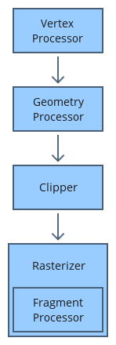
The vertex processor is in charge of executing the vertex shader on each and every vertex that passes through the pipeline (the number of which is determined according to the parameters to the draw call). Vertex shaders have no knowledge about the topology of the rendered primitives. In addition, you cannot discard vertices in the vertex processor. Each vertex enters the vertex processor exactly once, undergoes transformations and continues down the pipe.
The next stage is the geometry processor. In this stage the knoweldge as to the complete primitive (i.e. all of its vertices) as well as neighboring vertices is provided to the shader. This enables techniques that must take into account additional information beside the vertex itself. The geometry shader also has the ability to switch the output topology to a different one than the topology selected in the draw call. For example, you may supply it with a list of points and genereate two triangles (i.e. a quad) from each point (a technique known as billboarding). In addition, you have the option to emit multiple vertices for each geometry shader invocation and thus generate multiple primitives according to the output topology you selected.
The next stage in the pipe is the clipper. This is a fixed function unit with a straightforward task - it clips the primitives to the normalized box we have seen in the previous tutorial. It also clips them to the near Z and the far Z planes. There is also the option to supply user clip planes and have the clipper clip against them. The position of vertices that have survived the clipper is now mapped to screen space coordinates and the rasterizer renders them to the screen according to their topology. For example, in the case of triangles this means finding out all the points that are inside the triangle. For each point the rasterizer invokes the fragment processor. Here you have the option to determine the color of the pixel by sampling it from a texture or using whatever technique you desire.
The three programmable stages (vertex, geometry and fragment processors) are optional. If you don’t bind a shader to them some default functionality will be executed.
Shader management is very similar to C/C++ program creation. First you write the shader text and make it available to your program. This can done by simply including the text in an array of characters in the source code itself or by loading it from an external text file (again into an array of characters). Then you compile the shaders one by one into shader objects. After that you link the shaders into a single program and load it into the GPU. Linking the shaders gives the driver the opportunity to trim down the shaders and optimize them according to their relationships. For example, you may pair a vertex shader that emits a normal with a fragment shader that ignores it. In that case the GLSL compiler in the driver can remove the normal related functionality of the shader and enable faster execution of the vertex shader. If that shader is later paired with a fragment shader that uses the normal then linking the other program will generate a different vertex shader.
Source walkthru
1GLuint ShaderProgram = glCreateProgram();
We start the process of setting up our shaders by creating a program object. We will link all the shaders together into this object.
1GLuint ShaderObj = glCreateShader(ShaderType);
We create two shader objects using the above call. One of them with shader type GL_VERTEX_SHADER and the other GL_FRAGMENT_SHADER. The process of specifying the shader source and compiling the shader is the same for both.
1const GLchar* p[1];
2p[0] = pShaderText;
3GLint Lengths[1];
4Lengths[0]= strlen(pShaderText);
5glShaderSource(ShaderObj, 1, p, Lengths);
Before compiling the shader object we must specify its source code. The function glShaderSource takes the shader object as a parameter and provides you with flexibility in terms of specifying the source. The source can be distributed across several character arrays and you will need to provide an array of pointers to these arrays as well as an array of integers where each slot contains the length of the corresponding character array. For simplicity we use a single array of chars for the entire shader source and we use just one slot for both the pointer to the source as well as its length. The second parameter to the call is the number of slots in the two arrays (just 1 in our case).
1glCompileShader(ShaderObj);
Compiling the shader is very easy…
1GLint success;
2glGetShaderiv(ShaderObj, GL_COMPILE_STATUS, &success);
3if (!success)
4{
5 GLchar InfoLog[1024];
6 glGetShaderInfoLog(ShaderObj, sizeof(InfoLog), NULL, InfoLog);
7 fprintf(stderr, "Error compiling shader type %d: '%s'\n", ShaderType, InfoLog);
8}
…however, you usually get a few compilation errors, as expected. The piece of code above gets the compilation status and display all the errors the compiler encountered.
1glAttachShader(ShaderProgram, ShaderObj);
Finally, we attach the compiled shader object to the program object. This is very similar to specifying the list of objects for linking in a makefile. Since we don’t have a makefile here we emulate this behavior programatically. Only the attached objects take part of the linking process.
1glLinkProgram(ShaderProgram);
After compiling all shader objects and attaching them to the program we can finally link it. Note that after linking the program you can get rid of the intermediate shader objects by calling glDetachShader and glDeleteShader for each and every one of them. The OpenGL driver maintains a reference count on most of the objects it generates. If a shader object is created and then deleted the driver will get rid of it, but if it is attached to a program calling glDeleteShader will only mark it for deletion and you will also need to call glDetachShader so that its reference count will drop to zero and it will be removed.
1glGetProgramiv(ShaderProgram, GL_LINK_STATUS, &Success);
2if (Success == 0)
3{
4 glGetProgramInfoLog(ShaderProgram, sizeof(ErrorLog), NULL, ErrorLog);
5 fprintf(stderr, "Error linking shader program: '%s'\n", ErrorLog);
6}
Note that we check for program related errors (such as link errors) a bit differently than shader related errors. Instead of glGetShaderiv we use glGetProgramiv and instead of glGetShaderInfoLog we use glGetProgramInfoLog.
1glValidateProgram(ShaderProgram);
You may ask yourself why do we need to validate a program after it has been successfully linked. The difference is that linking checks for errors based on the combination of shaders while the call above check whether the program can execute given the current pipeline state. In a complex application with multiple shaders and lots of state changes it is better to validate before every draw call. In our simple app we check it just once. Also, you may want to do this check only during development and avoid this overhead in the final product.
1glUseProgram(ShaderProgram);
Finally, to use the linked shader program you set it into the pipeline state using the call above. This program will stay in effect for all draw calls until you replace it with another or explicitly disable its use (and enable the fixed function pipeline) by calling glUseProgram with NULL. If you created a shader program that contains only one type of shader then the other stages operate using their default fixed functionality.
We have completed the walkthru of the OpenGL calls related to shader management. The rest of this tutorial relates to the contents of the vertex and fragment shaders (contained in the ‘pVS’ and ‘pFS’ variables).
This tells the compiler that we are targeting version 3.3 of GLSL. If the compiler does not support it it will emit an error.
1layout (location = 0) in vec3 Position;
This statement appears in the vertex shader. It declares that a vertex specific attribute which is a vector of 3 floats will be known as ‘Position’ in the shader. ‘Vertex specific’ means that for every invocation of the shader in the GPU the value of a new vertex from the buffer will be supplied. The first section of the statement, layout (location = 0), creates the binding between the attribute name and attribute in the buffer. This is required for cases where our vertex contains several attributes (position, normal, texture coordinates, etc). We have to let the compiler know which attribute in the vertex in the buffer must be mapped to the declared attribute in the shader. There are two ways to do this. We can either set it explicitly as we do here (to zero). In that case we can use a hard coded value in our application (which we did with the first parameter to the call to glVertexAttributePointer). Or we can leave it out (and simply declare ‘in vec3 Position’ in the shader) and then query the location from the application at runtime using glGetAttribLocation. In that case we will need to supply the returned value to glVertexAttributePointer instead of using the hard coded value. We choose the simply way here but for more complex applications it better to let the compiler determine the attribute indices and query them during runtime. This makes it easier integrating shaders from multiple sources without adapting them to your buffer layout.
You can create your shader by linking together multiple shader objects. However, there can only be one main function for each shader stage (VS, GS, FS) which is used as the entry point to the shader. For example, you can create a lighting library with several functions and link it with your shader provided that none of the functions there is named ‘main’.
1gl_Position = vec4(0.5 * Position.x, 0.5 * Position.y, Position.z, 1.0);
Here we do hard coded transformation to the incoming vertex position. We cut the X and Y values by half and leave the Z unchanged. ‘gl_Position’ is a special built in variable that is supposed to contain the homogeneous (containing X, Y, Z and W components) vertex position. The rasterizer will look for that variable and will use it as the position in screen space (following a few more transformations). Cutting the X and Y values by half means that we will see a triangle which is one quarter the size of the triangle in the previous tutorial. Note that we are setting W to 1.0. This is extremely important to getting the triangle displayed correctly. Getting the projection from 3D to 2D is actually accomplished in two seperate stages. First you need to multiply all your vertices by the projection matrix (which we will develop in a few tutorials) and then the GPU automatically performs what is known as “perspective divide” to the position attribute before it reaches the rasterizer. This means that it divides all the components of the gl_Position by the W component. In this tutorial we are not yet doing any projection in the vertex shader but the perspective divide stage is something that we cannot disable. Whatever gl_Position value we output from the vertex shader will be divided by the HW using its W component. We need to remember that else we will not get the results we expect. In order to circumvent the effect of perspective divide we set W to 1.0. Division by 1.0 will not affect the other components of the position vector which will stay inside our normalized box.
If everything worked correctly, three vertices with the values (-0.5, -0.5), (0.5, -0.5) and (0.0, 0.5) reach the rasterizer. The clipper doesn’t need to do anything because all vertices are well inside the normalized box. These values are mapped to screen space coordinates and the rasterizer starts running over all the points that are inside the triangle. For each point the fragment shader is executed. The following shader code is taken from the fragment shader.
Usually the job of the fragment shader is to determine the color of the fragment (pixel). In addition, the fragment shader can discard the pixel altogether or change its Z value (which will affect the result of subsequent Z test). Outputing the color is done by declaring the above variable. The four components represent R, G, B and A (for alpha). The value that you set into this variable will be received by the rasterizer and evantually written to the framebuffer.
1FragColor = vec4(1.0, 0.0, 0.0, 1.0);
In the previous couple of tutorials there wasn’t a fragment shader so the everything was drawn in the default color of white. Here we set FragColor to red.
For more information on this subject check out the following video tutorial by Frahaan Hussain.
Background
In this tutorial we meet a new type of shader variables - uniform variables. The difference between attribute and uniform variable is that attribute variables contain data which is vertex specific so they are reloaded with a new value from the vertex buffer for each shader invocation while the value of uniform variables remains constant accross the entire draw call. This means that you load the value before making the draw call and then you can access the same value in each invocation of the vertex shader. Uniform variables are useful for storing data such as lighting parameters (light position and direction, etc), transformation matrices, texture objects handles and so on.
In this tutorial we finally get something moving on the screen. We do it using a combination of a uniform variable whose value we change every frame and the idle callback function supplied by GLUT. The point is that GLUT doesn’t call our render callback function repeatedly - unless it has to. GLUT has to call the render callback following events such as minimizing and maximizing the window or uncovering it by another window. If we don’t change anything in the windows layout after launching the application the render callback is called just once. You can see for yourself by adding a printf call in the render function. You will see the output only once and you will see it again if you minimize and then maximize the window. Registering only the render callback in GLUT was fine for the previous tutorials but here we want to repeatedly change the value of a variable. We do this by registering an idle function callback. The idle function is called by GLUT when no events are received from the windowing system. You can have a dedicated function for this callback where you will do any bookkeeping such as time update or simply register the render callback function as an idle callback as well. In this tutorial we do the later and update the variable inside the render function.
Source walkthru
1glutPostRedisplay();
2glutSwapBuffers();
Before the existing call to glutSwapBuffers in our render callback I’ve added a call to glutPostRedisplay. In general, FreeGLUT is not required to call the render function repeatedly. It only does this due to various events in the system. As you shall see below, we are creating a basic “animation” using a variable which is updated in every call to the render function but if this function is not called the animation will appear to hang! Therefore, we want to trigger the next call to the render function and we do this using glutPostRedisplay. This function sets a flag inside FreeGLUT that forces it to call the render function again (and again, etc).
1gScaleLocation = glGetUniformLocation(ShaderProgram, "gScale");
2assert(gScaleLocation != 0xFFFFFFFF);
After linking the program we query the program object for the location of the uniform variable. This is another example of a case where the application C/C++ execution environment needs to be mapped to the shader execution environment. You don’t have any direct access to shader content and you cannot directly update its variables. When you compile the shader the GLSL compiler assigns an index to each uniform variable. In the internal representation of the shader inside the compiler access to the variable is resolved using its index. That index is also available to the application via the glGetUniformLocation. You call this function with the program object handle and the name of the variable. The function returns the index or -1 if there was an error. It is very important to check for errors (as we do above with the assertion) or else future updates to the variables will not be delivered to the shader. There are mainly two reasons why this function can fail. You either misspelled the name of the variable or it was optimized away by the compiler. If the GLSL compiler finds out that the variable is not actually used in the shader it can simply drop it. In that case glGetUniformLocation will fail.
1static float Scale = 0.0f;
2Scale += 0.001f;
3glUniform1f(gScaleLocation, sinf(Scale));
We maintain a static floating point variable that we increment a bit in every call to the render function (you may want to play with 0.001 if it runs too slowly or too quickly on your machine). The actual value which is passed to the shader is the sinus of the ‘Scale’ variable. This is to create a nice loop between -1.0 and 1.0. Note that sinf() takes radians and not degrees as a parameter but at this point we simply don’t care. We just want the wave that sinus generates. The result of sinf() is passed to the shader using glUniform1f. OpenGL provides multiple instances of this function with the general form of glUniform{1234}{if}. You can use it to load values into a 1D, 2D, 3D or 4D (based on the number that follows the ‘glUniform’) vector of floating point or integer (this is the ‘i’ or ‘f’ suffix). There are also versions that take a vector address as a parameter as well as special version for matrices. The first parameter to the function is the index location that we have extracted using glGetUniformLocation().
We will now take a look at changes that were made in the VS (the FS remains unchanged).
Here we declare the uniform value in the shader.
1gl_Position = vec4(gScale * Position.x, gScale * Position.y, Position.z, 1.0);
We multiply the X and Y values of the position vector with the value that is changed from the application every frame. Can you explain why the triangle is upside down half of the loop?
Background
In this tutorial we start looking at the various transformations that take an object in 3D and enable it to be displayed on screen while keeping the illusion of depth in the scene. The common way to do this is to represent each transformation using a matrix, multiply them one by one and then multiply the vertex position by the final product. Each tutorial will be dedicated to examining one transformation.
Here we take a look at the translation transformation which is responsible to moving an object along a vector of any length and direction. Let’s say you want to move the triangle in the left picture to the location on the right:
One way to do it is to provide the offset vector (in this case - 1,1) as a uniform variable to the shader and simply add it to the position of each processed vertex. However, this breaks the method of multiplying a group of matrices into one to get a single comprehensive transformation. In addition, you will see later that translation is usually not the first one so you will have to multiply the position by the matrix that represent the transformations before translation, then add the position and finally multiple by the matrix that represent the transformation that follow translation. This is too awkward. A better way will be to find a matrix that represents the translation and take part in the multiplication of all matrices. But can you find a matrix that when multiplied by the point (0,0), the bottom left vertex of the triangle on the left, gives the result (1,1)? The truth is that you can’t do it using a 2D matrix (and you cannot do it with a 3D matrix for (0,0,0) ). In general we can say that what we need is a matrix M that given a point P(x,y,z) and a vector V(v1,v2,v3) provides M * P=P1(x + v1, y + v2, z + v3). In simple words this means that matrix M translates P to location P+V. In P1 we can see that each component is a sum of a component from P and the corresponding component of V. The left side of each sum equation is provided by the identity matrix:
I * P = P(x,y,z). So it looks like we should start with the identity matrix and find out the changes that will complete the right hand side of the sum equation in each component (…+V1, …+V2, …+V3). Let’s see how the identity matrix looks like:

We want to modify the identity matrix such that the result will be:

There really isn’t an easy way to do this if we stick to 3x3 matrix, but if we change to a 4x4 matrix we can do the following:
Representing a 3-vector using a 4-vector like that is called homogenous coordinates and is very popular and useful for 3D graphics. The fourth component is called ‘w’. In fact, the internal shader symbol gl_Position that we have seen in the previous tutorial is a 4-vector and the w component has a very important role for making the projection from 3D to 2D. The common notation is to use w=1 for points and w=0 for vectors. The reason is that points can be translated but vectors cannot. You can change the length of a vector or its direction but all vectors with the same length/direction are considered equal, regardless their “starting position”. So you can simply use the origin for all vectors. Setting w=0 and multiplying the translation matrix by the vector will result in the same vector.
Source walkthru
1struct Matrix4f {
2 float m[4][4];
3};
We added a 4x4 matrix definition to math_3d.h. This will be used for most of our transformation matrices from now on.
We use this handle to access the world matrix uniform variable in the shader. We name it ‘world’ because what we are doing to the object is moving (translating) its location to where we want it in the coordinate system of our virtual “world”.
1Matrix4f World;
2World.m[0][0] = 1.0f; World.m[0][1] = 0.0f; World.m[0][2] = 0.0f; World.m[0][3] = sinf(Scale);
3World.m[1][0] = 0.0f; World.m[1][1] = 1.0f; World.m[1][2] = 0.0f; World.m[1][3] = 0.0f;
4World.m[2][0] = 0.0f; World.m[2][1] = 0.0f; World.m[2][2] = 1.0f; World.m[2][3] = 0.0f;
5World.m[3][0] = 0.0f; World.m[3][1] = 0.0f; World.m[3][2] = 0.0f; World.m[3][3] = 1.0f;
In the render function we prepare a 4x4 matrix and poplulate it according to the explanation above. We set v2 and v3 to zero so we expect no change in the Y and Z coordinate of the object and we set v1 to the result of the sinus function. This will translate the X coordinate by a value that swings nicely between -1 and 1. Now we need to load the matrix into the shader.
1glUniformMatrix4fv(gWorldLocation, 1, GL_TRUE, &World.m[0][0]);
This is another example of a glUniform* function to load data into uniform shader variables. This specific function loads 4x4 matrices and there are also versions for 2x2, 3x3, 3x2, 2x4, 4x2, 3x4 and 4x3. The first parameter is the location of the uniform variable (retrieved after shader compilation using glGetUniformLocation()). The second parameter indicates the number of matrices we are updating. We use 1 for one matrix but we can also use this function to update multiply matrices in one call. The third parameter often confuses newcomers. It indicates whether the matrix is supplied in row-major or column-major order. Row-major means the matrix is supplied row after row, starting from the top. Column-major is the same but in columns. The point is that C/C++ are row-major languages by default. This means that when you populate a two dimentional array with values they are laid out in memory row after row with the “top” row at the lower address. For example, see the following array:
1int a[2][3];
2a[0][0] = 1;
3a[0][1] = 2;
4a[0][2] = 3;
5a[1][0] = 4;
6a[1][1] = 5;
7a[1][2] = 6;
Visually, the array looks like the following matrix:
1 2 3
4 5 6
And the memory layout is like that: 1 2 3 4 5 6 (with 1 at the lower address).
So our third parameter to glUniformMatrix4fv() is GL_TRUE because we supply the matrix in row-major order. We can also make the third parameter GL_FALSE but then we will need to transpose the matrix values (the C/C++ memory layout will remain the same but OpenGL will “think” that the first 4 values we supply are actually a matrix column and so on and will behave accordingly). The fourth parameter is simply the starting address of the matrix in memory.
The remaining source is shader code.
This is a uniform variable of a 4x4 matrix. mat2 and mat3 are also available.
1gl_Position = gWorld * vec4(Position, 1.0);
The position of the triangle vertices in the vertex buffer are vectors of 3 components, but we agreed that we need a fourth component with the value of 1. There are two options: place vertices with 4 components in the vertex buffer or add the fourth component in the vertex shader. There is no advantage to the first option. Each vertex position will consume an additional 4 bytes for a component which is known to be always 1. It is more efficient to stay with a 3 component vector and concatenate the w component in the shader. In GLSL this is done using ‘vec4(Position, 1.0)’. We multiply the matrix by that vector and the result goes into gl_Position. To summarize, in every frame we generate a translation matrix that translates the X coordinate by a value that goes back and fourth between -1 and 1. The shader multiplies the position of every vertex by that matrix which results in the combined object moving left and right. In most cases the one of the triangles sides will go out of the normalized box after the vertex shader and the clipper will clip out that side. We will only be able to see the region which is inside the normalized box.
For more information on this subject check out the following video tutorial by Frahaan Hussain.
Background
Next on our transforation list is the rotation, that is, given an angle and a point we want to rotate the point around one of the axis. We will always change two out of the trio X, Y and Z and leave the third component unchanged. This means that the path will lie on one of the three major planes: XY (when turning around Z), YZ (when turning around X) and XZ (when turning around Y). There are more complex rotation transformations that allow you to rotate around an arbitrary vector but we don’t need them at this stage.
Let’s define the problem in general terms. Consider the following diagram:

We want to move along the circle from (x1,y1) to (x2,y2). In other words we want to rotate (x1,y1) by the angle a2. Let’s assume that the radius of the circle is 1. This means the following:
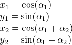
We will use the following trigonometric identities to develop x2 and y2:

Using the above we can write:
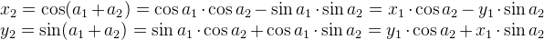
In the above diagram we are looking at the XY plane and Z is pointing into the page. If X&Y are part of a 4-vector then the above equation can be written in matrix form (without affecting Z&W):

If we want to create rotations for the YZ (around the X axis) and XZ (around the Y axis) planes then the equations are basically the same but the matrix is arranged a bit differently. Here’s the matrix for the rotation around the Y axis:

And the rotation matrix around the X axis:
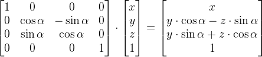
Source walkthru
The code changes in this tutorial are very minor. We only change the contents of the single transformation matrix in the code.
1World.m[0][0]=cosf(Scale); World.m[0][1]=-sinf(Scale); World.m[0][2]=0.0f; World.m[0][3]=0.0f;
2World.m[1][0]=sinf(Scale); World.m[1][1]=cosf(Scale); World.m[1][2]=0.0f; World.m[1][3]=0.0f;
3World.m[2][0]=0.0f; World.m[2][1]=0.0f; World.m[2][2]=1.0f; World.m[2][3]=0.0f;
4World.m[3][0]=0.0f; World.m[3][1]=0.0f; World.m[3][2]=0.0f; World.m[3][3]=1.0f;
As you can see we rotate around the Z axis. You can try the other rotations as well but I think that at this point without true projection from 3D to 2D the other rotations look a bit odd. We will complete them in a full transformation pipeline class in the coming tutorials.
For more information on this subject check out the following video tutorial by Frahaan Hussain.
Background
The scaling transformation is very simple. Its purpose is to either increase or decrease the size of the object. You may want to do that, for example, when you want to create some differentiation using the same model (large and small trees that are actually the same) or when you want to match the size of the object to its role in the world. For the above examples you would probably want to scale the vertices position in the same amount on all three axis. However, sometimes you may want to scale just one or two axis, causing the model to become “thicker” or “leaner”.
Developing the transformation matrix is very simple. We start with the identity matrix and remember that the reason that multiplying it by a vector leave the vector unchanged is that each of the ‘1’s in the diagonal is multiplied by one of the components in turn. None of the components can affect the other. Therefore, replacing any one of that ‘1’s with another value will cause the object to increase on that axis if the other value is larger than 1 or decrease on that axis if the other value is smaller then one.
Source walkthru
1World.m[0][0]=sinf(Scale); World.m[0][1]=0.0f; World.m[0][2]=0.0f; World.m[0][3]=0.0f;
2World.m[1][0]=0.0f; World.m[1][1]=sinf(Scale); World.m[1][2]=0.0f; World.m[1][3]=0.0f;
3World.m[2][0]=0.0f; World.m[2][1]=0.0f; World.m[2][2]=sinf(Scale); World.m[2][3]=0.0f;
4World.m[3][0]=0.0f; World.m[3][1]=0.0f; World.m[3][2]=0.0f; World.m[3][3]=1.0f;
The only change from the previous tutorial is that we replace the world transformation matrix according to the above description. As you can see, we scale each of the three axis by a number that swings between -1 and 1. In the range (0,1] the triangle is anywhere between being very tiny and its original size and when the diagonal is zero it disappears completely. In the range [-1,0) looks the same only reversed because the scaling value in the diagonal actually changed the sign of the position.
For more information on this subject check out the following video tutorial by Frahaan Hussain.
Tutorial 9:Interpolation
Background
This tutorial demonstrates a very important part of the 3D pipeline - the interpolation that the rasterizer performs on variables that come out of the vertex shader. As you have already seen, in order to get something meaningful on the screen you need to designate one of the VS output variables as ‘gl_Position’. This is a 4-vector that contains the homogenuous coordinates of the vertex. The XYZ components of that vector are divided by the W component (a process known as perspective divide and is dealt with in the tutorial dedicated to that subject) and any component which goes outside the normalized box ([-1,1]) gets clipped. The result is transformed to screen space coordinates and then the triangle (or any other supported primitive type) is rendered to screen by the rasterizer.
The rasterizer performs interpolation between the three triangle vertices (either going line by line or any other technique) and “visits” each pixel inside the triangle by executing the fragment shader. The fragment shader is expected to return a pixel color which the rasterizer places in the color buffer for display (after passing a few additional tests like depth test, etc). Any other variable which comes out of the vertex shader does not go through the steps above. If the fragment shader does not explicitly requests that variable (and you can mix and match multiple fragment shaders with the same vertex shader) then a common driver optimization will be to drop any instructions in the VS that only affect this variable (for that particular shader program that combines this VS and FS pair). However, if the FS does use that variable the rasterizer interpolates it during rasterization and each FS invocation is provided a the interpolated value that matches that specific location. This usually means that the values for pixels that are right next to each other will be a bit different (though as the triangle becomes further and further away from the camera that becomes less likely).
Two very common variables that often rely on this interpolation are the triangle normal and texture coordinates. The vertex normal is usually calculated as the average between the triangle normals of all triangles that include that vertex. If that object is not completely flat this usually means that the three vertex normals of each triangle will be different from each other. In that case we rely on interpolation to calculate the specific normal at each pixel. That normal is used in lighting calculations in order to generate a more believable representation of lighting effects. The case for texture coordinates is similar. These coordinates are part of the model and are specified per vertex. In order to “cover” the triangle with a texture you need to perform the sample operation for each pixel and specify the correct texture coordinates for that pixel. These coordinates are the result of the interpolation.
In this tutorial we will see the effects of interpolation by interpolating different colors across the triangle face. Since I’m lazy we will generate the color in the VS. A more tedious approach is to supply it from the vertex buffer. Usually you don’t supply colors from the vertex buffer. You supply texture coordinates and sample a color from a texture. That color is later processed by the lighting calculations.
Source walkthru
Parameters passed between pipeline stages must be declared using the ‘out’ reserved word and in the global scope of the shader. The color is a 4-vector since the XYZ components carry the RGB values (respectively) and W is the alpha value (pixel transparency).
1Color = vec4(clamp(Position, 0.0, 1.0), 1.0);
Color in the graphics pipeline is usually represented using a floating point value in the range [0.0, 1.0]. That value is later mapped to the integer 0 to 255 for each color channel (totaling in 16M colors). We set the vertex color value as a function of the vertex position. First we use the built-in function clamp() to make sure the values do not go outside of the 0.0-1.0 range. The reason is that the lower left vertex of the triangle is located at -1,-1. If we take that value as-is it will be interpolated by the rasterizer and until both X and Y pass zero we will not see anything because every value which is less than or equal to zero will be rendered as black. This means that half of the edge on each direction will be black before the color pass zero and become something meaningful. By clamping we make only the far bottom left black but as we get further away the color quickly becomes more bright. Try playing with the clamp function - remove it all together or change its parameters to see the effect.
The result of the clamp function does not go directly to the output variable since it is a 4-vector while the position is a 3-vector (clamp does not change the number of components, only their values). From the point of view of GLSL there is no default conversion here and we have to make this explicit. We do this using the notation ‘vec4(vec3, W)’ which creates a 4-vector by concatenating a 3-vector with the supplied W value. In our case we use 1.0 because this goes into the alpha part of the color and we want the pixel to be completely opaque.
The opposite side of the output color in the VS is the input color in the FS. This variable undergoes interpolation by the rasterizer so every FS is (probably) executed with a different color.
We use the interpolated color as the fragment color with no further changes and this completes this tutorial.
Tutorial 10:Indexed Draws
Background
OpenGL provides several draw functions. glDrawArrays() that we have been using until now falls under the category of “ordered draws”. This means that the vertex buffer is scanned from the specified offset and every X (1 for points, 2 for lines, etc) vertices a primitive is emitted. This is very simple to use but the downside is if a vertex is part of several primitives then it must be present several times in the vertex buffer. That is, there is no concept of sharing. Sharing is provided by the draw functions that belong to the “indexed draws” category. Here in addition to the vertex buffer there is also an index buffer that contains indices into the vertex buffer. Scanning the index buffer is similar to scanning the vertex buffer - every X indices a primitive is emitted. To exercise sharing you simply repeat the index of the shared vertex several times. Sharing is very important for memory efficiency because most objects are represented by some closed mesh of triangles and most vertices participate in more than one triangle.
Here is an example of an ordered draw:

If we are rendering triangles the GPU will generate the following set: V0/1/2, V3/4/5, V6/7/8, etc.
Here is an example of an indexed draw:
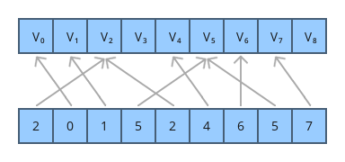
In this case the GPU will generate the following triangles: V2/0/1, V5/2/4, V6/5/7, etc.
Using index draws in OpenGL requires generating and populating an index buffer. That buffer must be bound in addition to the vertex buffer before the draw call and a different API must be used.
Source walkthru
We added another buffer object handle for the index buffer.
1Vertices[0] = Vector3f(-1.0f, -1.0f, 0.0f);
2Vertices[1] = Vector3f(0.0f, -1.0f, 1.0f);
3Vertices[2] = Vector3f(1.0f, -1.0f, 0.0f);
4Vertices[3] = Vector3f(0.0f, 1.0f, 0.0f);
To demonstrate vertex sharing we need a mesh which is a bit more complex. Many tutorials use the famous spinning cube for that. This requires 8 vertices and 12 triangles. Since I’m lazy I use the spinning pyramid instead. This requires only 4 vertices and 4 triangles and is much easier to generate manually…
When looking at these vertices from the top (along the Y axis) we get the following layout:

1unsigned int Indices[] = { 0, 3, 1,
2 1, 3, 2,
3 2, 3, 0,
4 0, 1, 2 };
The index buffer is populated using an array of indices. The indices match the location of the vertices in the vertex buffer. When looking at the array and the diagram above you can see that the last triangle is the pyramid base while the other three make up its faces. The pyramid is not symmetric but is very easy to specify.
1glGenBuffers(1, &IBO);
2glBindBuffer(GL_ELEMENT_ARRAY_BUFFER, IBO);
3glBufferData(GL_ELEMENT_ARRAY_BUFFER, sizeof(Indices), Indices, GL_STATIC_DRAW);
We create and then populate the index buffer using the array of indices. You can see that the only difference in creating vertex and index buffers is that vertex buffers take GL_ARRAY_BUFFER as the buffer type while index buffers take GL_ELEMENT_ARRAY_BUFFER.
1glBindBuffer(GL_ELEMENT_ARRAY_BUFFER, IBO);
In addition to binding the vertex buffer we must also bind the index buffer prior to drawing. Again, we use the GL_ELEMENT_ARRAY_BUFFER as the buffer type.
1glDrawElements(GL_TRIANGLES, 12, GL_UNSIGNED_INT, 0);
We use glDrawElements instead of glDrawArrays. The first parameter is the primitive type to render (same as glDrawArrays). The second parameter is the number of indices in the index buffer to use for primitive generation. The next parameter is the type of each index. The GPU must be told the size of each individual index else it will not know how to parse the buffer. Possible values here are GL_UNSIGNED_BYTE, GL_UNSIGNED_SHORT, GL_UNSIGNED_INT. If the index range is small you want the smaller types that are more space efficient and if the index range is large you want the larger types. The final parameter tells the GPU the offset in bytes from the start of the index buffer to the location of the first index to scan. This is useful when the same index buffer contains the indices of multiple objects. By specifying the offset and count you can tell the GPU which object to render. In our case we want to start at the beginning so we specify zero. Note that the type of the last parameter is GLvoid* so if you specify anything other than zero you need to cast it to that type.
Oct-23, 2021 - by voytechj on youtube: the OpenGL pipeline includes a post transform cache that stores the results of the vertex shader. If the same vertex passes through the pipeline again (a case identified by the reuse of the index) the processing of the vertex shader can be skipped by fetching the cache results. Therefore, the advantage of indexed draws is not only in memory saving but in performance as well. More info in the OpenGL wiki
Background
In the last few tutorials we have developed several transformations that give us the flexibility of moving an object anywhere in the 3D world. We still have a couple more to learn (camera control and perspective projection) but as you probably already guessed, a combination of the transformation is required. In most cases you will want to scale the object to fit your 3D world, rotate it into the required orientation, move it somewhere, etc. Up till now we have been exercising a single transformation at a time. In order to perform the above series of transformations we need to multiply the first transformation matrix by the vertex position and then multiple the next transformation by the result of the previous multiplication. This goes on until all the transformation matrices have been applied on the vertex. One trivial way to do that is to supply each and every transformation matrix to the shader and let it do all the multiplications. This, however, is very inefficient since the matrices are the same for all vertices and only vertex position changes. Luckily, linear algebra provides a set of rules that make our life easier. It tells us that given a set of matrices M0…Mn and a vector V the following holds true:
$$
M_{n} * M_{n-1} * … * M_{0} * V = (M_{n}* M_{n-1} * … * M_{0}) * V
$$
So if you calculate:
$$
N = M_{n} * M_{n-1} * … * M_{0}
$$
Then:
$$
M_{n} * M_{n-1} * … * M_{0} * V = N * V
$$
This means that we can calculate N once and then send it to the shader as a uniform variable where it will be multiplied in each vertex. This will require the GPU one matrix/vector multiplication per vertex.
How do you order the matrices when generating N? The first thing you need to remember is that the vector is initially multiplied by the matrix on the far right of the series (in our case - M0). Then the vector is transformed by each matrix as we travel from the right hand side to the left hand side. In 3D graphics you usually want to scale the object first, then rotate it, then translate it, then apply camera transformation and finally project it to 2D. Let’s see what happens when you rotate first and then translate:

Now see what happens when you translate first and then rotate:
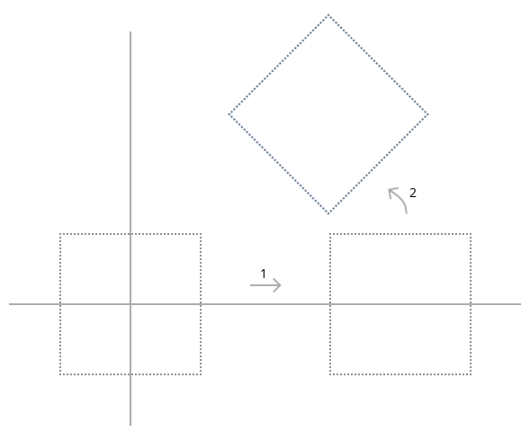
As you can see, it is very diffcult to set the object position in the world when you translate it first because if you move it away from the origin and then rotate it goes around the origin which actually means that you translate it again. This second translation is something you want to avoid. By rotating first and then translate you disconnect the dependency between the two operations. This is why it is always best to model around the origin as symmetrically as possible. That way when you later scale or rotate there is no side effect and the rotated or scaled object remains symmetrical as before.
Now that we are starting to handle more than one transformation in the demos we have to drop the habit of updating the matrix directly in the render function. This method doesn’t scale well and is prone to errors. Instead, the pipeline class is introduced. This class hides the fine details of matrix manipulation under a simple API to change the translation, rotation, etc. After setting all the parameters inside it you simply extract the final matrix that combines all the transformation. This matrix can be fed directly into the shader.
Source walkthru
1#define ToRadian(x) ((x) * M_PI / 180.0f)
2#define ToDegree(x) ((x) * 180.0f / M_PI)
We are starting to use the actual values of angles in this tutorials. As it happens, the trigonometric functions of the standard C library take radian as a parameter. The above macros take the angle either in radians or degrees and convert to the other notation.
1inline Matrix4f operator*(const Matrix4f& Right) const
2{
3 Matrix4f Ret;
4 for (unsigned int i = 0 ; i < 4 ; i++) {
5 for (unsigned int j = 0 ; j < 4 ; j++) {
6 Ret.m[i][j] = m[i][0] * Right.m[0][j] +
7 m[i][1] * Right.m[1][j] +
8 m[i][2] * Right.m[2][j] +
9 m[i][3] * Right.m[3][j];
10 }
11 }
12 return Ret;
13}
This handy operator of the matrix class handles matrix multiplication. As you can see, each entry in the resulting matrix is defined as the dot product of its line in the left matrix with the column in the right matrix. This operator is key in the implementation of the pipeline class.
1class Pipeline{
2 public:
3 Pipeline() { ... }
4 void Scale(float ScaleX, float ScaleY, float ScaleZ) { ... }
5 void WorldPos(float x, float y, float z) { ... }
6 void Rotate(float RotateX, float RotateY, float RotateZ) { ... }
7 const Matrix4f* GetTrans();
8 private:
9 Vector3f m_scale;
10 Vector3f m_worldPos;
11 Vector3f m_rotateInfo;
12 Matrix4f m_transformation;
13};
The pipeline class abstracts the details of getting all the transformation required for one single object combined. There are currently 3 private member vectors that store the scaling, position in world space and rotation for each axis. In addition there are APIs to set them and a function to get the matrix that represent the sum of all these transformations.
1const Matrix4f* Pipeline::GetTrans()
2{
3 Matrix4f ScaleTrans, RotateTrans, TranslationTrans;
4 InitScaleTransform(ScaleTrans);
5 InitRotateTransform(RotateTrans);
6 InitTranslationTransform(TranslationTrans);
7 m_transformation = TranslationTrans * RotateTrans * ScaleTrans;
8 return &m_transformation;
9}
This function initializes three seperate matrices as the transformations that match the current configuration. It multiplies them one by one and returns the final product. Note that the order is hard coded and follows the description above. If you need some flexibility there you can use a bitmask that specifies the order. Also note that it always stores the final transformation as a member. You can try optimizing this function by checking a dirty flag and returning the stored martix in the case that there was no change in configuration since the last time this function was called.
This function uses private methods to generate the different transformations according to what we’ve learned in the last few tutorials. In the next tutorials this class will be extended to handle camera control and perspective projection.
1Pipeline p;
2p.Scale(sinf(Scale * 0.1f), sinf(Scale * 0.1f), sinf(Scale * 0.1f));
3p.WorldPos(sinf(Scale), 0.0f, 0.0f);
4p.Rotate(sinf(Scale) * 90.0f, sinf(Scale) * 90.0f, sinf(Scale) * 90.0f);
5glUniformMatrix4fv(gWorldLocation, 1, GL_TRUE, (const GLfloat*)p.GetTrans());
These are the changes to the render function. We allocate a pipeline object, configure it and send the resulting transformation down to the shader. Play with the parameters and see their effect on the final image.
For more information on this subject check out the following video tutorial by Frahaan Hussain.
Tutorial 12:Perspective Projection
Background
We have finally reached the item that represents 3D graphics best - the projection from the 3D world on a 2D plane while maintaining the appearance of depth. A good example is a picture of a road or railway-tracks that seem to converge down to a single point far away in the horizon.
We are going to generate the transformation that satisfies the above requirement and we have an additional requirement we want to “piggyback” on it which is to make life easier for the clipper by representing the projected coordinates in a normalized space of -1 to +1. This means the clipper can do its work without having knowledge of the screen dimension and the location of the near and far planes.
The perspective projection tranformation will require us to supply 4 parameters:
- The aspect ratio - the ratio between the width and the height of the rectangular area which will be the target of projection.
- The vertical field of view: the vertical angle of the camera through which we are looking at the world.
- The location of the near Z plane. This allows us to clip objects that are too close to the camera.
- The location of the far Z plane. This allows us to clip objects that are too distant from the camera.
The aspect ratio is required since we are going to represent all coordinates in a normalized space whose width is equal to its height. Since this is rarely the case with the screen where the width is usually larger than the height it will need to be represented in the transformation by somehow “condensing” the points on the horizontal line vs. the vertical line. This will enable us to squeeze in more coordinates in terms of the X component in the normalized space which will satisfy the requirement of “seeing” more on the width than on the height in the final image.
The vertical field of view allows us to zoom in and out on the world. Consider the following example. In the picture on the left hand side the angle is wider which makes objects smaller while in the picture on the right hand side the angle is smaller which makes the same object appear larger. Note that this has an effect on the location of the camera which is a bit counter intuitive. On the left (where we zoom in with a smaller field of view) the camera needs to be placed further away and on the right it is closer to the projection plane. However, remember that this has no real effect since the projected coordinates are mapped to the screen and the location of the camera plays no part.
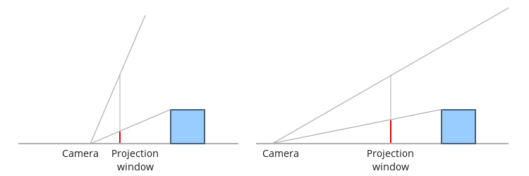
We start by determining the distance of the projection plane from the camera. The projection plane is a plane which is parallel to the XY plane. Obviously, not the entire plane is visible because this is too much. We can only see stuff in a rectangular area (called the projection window) which has the same proportions of our screen. The apsect ratio is calculated as follows:
ar = screen width / screen height
Let us conviniently determine the height of the projection window as 2 which means the width is exactly twice the aspect ratio (see the above equation). If we place the camera in the origin and look at the area from behind the camera’s back we will see the following:

Anything outside this rectangle is going to be clipped away and we already see that coordinates inside it will have their Y component in the required range. The X component is currently a bit bigger but we will provide a fix later on.
Now let’s take a look at this “from the side” (looking down at the YZ plane):
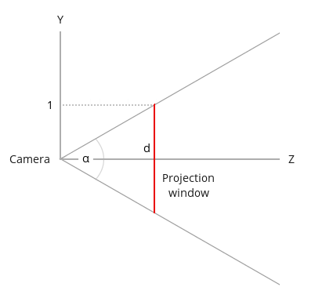
We find the distance from the camera to the projection plane using the vertical field of view (denoted by the angle alpha):
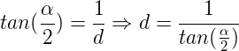
The next step is to calculate the projected coordinates of X and Y. Consider the next image (again looking down at the YZ plane).

We have a point in the 3D world with the coordinates (x,y,z). We want to find (xp,yp) that represent the projected coordinates on the projection plane. Since the X component is out of scope in this diagram (it is pointing in and out of the page) we’ll start with Y. According to the rule of similar triangles we can determine the following:
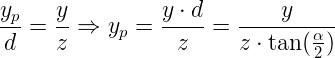
In the same manner for the X component:

Since our projection window is 2*ar (width) by 2 (height) in size we know that a point in the 3D world is inside the window if it is projected to a point whose projected X component is between -ar and +ar and the projected Y component is between -1 and +1. So on the Y component we are normalized but on the X component we are not. We can get Xp normalized as well by further dividing it by the aspect ratio. This means that a point whose projected X component was +ar is now +1 which places it on the right hand side of the normalized box. If its projected X component was +0.5 and the aspect ratio was 1.333 (which is what we get on an 1024x768 screen) the new projected X component is 0.375. To summarize, the division by the aspect ratio has the effect of condensing the points on the X axis.
We have reached the following projection equations for the X and Y components:
Before completing the full process let’s try to see how the projection matrix would look like at this point. This means representing the above using a matrix. Now we run into a problem. In both equations we need to divide X and Y by Z which is part of the vector that represents position. However, the value of Z changes from one vertex to the next so you cannot place it into one matrix that projects all vertices. To understand this better think about the top row vector of the matrix (a, b, c, d). We need to select the values of the vector such that the following will hold true:

This is the dot product operation between the top row vector of the matrix with the vertex position which yields the final X component. We can select ‘b’ and ’d’ to be zero but we cannot find an ‘a’ and ‘c’ that can be plugged into the left hand side and provide the results on the right hand side. The solution adopted by OpenGL is to seperate the transformation into two parts: a multiplication by a projection matrix followed by a division by the Z value as an independant step. The matrix is provided by the application and the shader must include the multiplication of the position by it. The division by the Z is hard wired into the GPU and takes place in the rasterizer (somewhere between the vertex shader and the fragment shader). How does the GPU knows which vertex shader output to divide by its Z value? simple - the built-in variable gl_Position is designated for that job. Now we only need to find a matrix that represents the projection equations of X & Y above.
After multiplying by that matrix the GPU can divide by Z automatically for us and we get the result we want. But here’s another complexity: if we multiply the matrix by the vertex position and then divide it by Z we literally loose the Z value because it becomes 1 for all vertices. The original Z value must be saved in order to perform the depth test later on. So the trick is to copy the original Z value into the W component of the resulting vector and divide only XYZ by W instead of Z. W maintains the original Z which can be used for depth test. The automatic step of dividing gl_Position by its W is called ‘perspective divide’.
We can now generate an intermediate matrix that represents the above two equations as well as the copying of the Z into the W component:

As I said earlier, we want to include the normalization of the Z value as well to make it easier for the clipper to work without knowing the near and far Z values. However, the matrix above turns Z into zero. Knowing that after transforming the vector the system will automatically do perspective divide we need to select the values of the third row of the matrix such that following the division any Z value within viewing range (i.e. NearZ <= Z <= FarZ) will be mapped to the [-1,1] range. Such a mapping operation is composed of two parts. First we scale down the range [NearZ, FarZ] down to any range with a width of 2. Then we move (or translate) the range such that it will start at -1. Scaling the Z value and then translating it is represented by the general function:
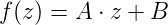
But following perspective divide the right hand side of the function becomes:

Now we need to find the values of A and B that will perform the maping to [-1,1]. We know that when Z equals NearZ the result must be -1 and that when Z equals FarZ the result must be 1. Therefore we can write:

Now we need to select the third row of the matrix as the vector (a b c d) that will satisfy:

We can immediately set ‘a’ and ‘b’ to be zero because we don’t want X and Y to have any effect on the transformation of Z. Then our A value can become ‘c’ and the B value can become ’d’ (since W is known to be 1).
Therefore, the final transformation matrix is:

After multiplying the vertex position by the projection matrix the coordinates are said to be in Clip Space and after performing the perspective divide the coordinates are in NDC Space (Normalized Device Coordinates).
The path that we have taken in this series of tutorials should now become clear. Without doing any projection we can simply output vertices from the VS whose XYZ components (of the position vector) are within the range of [-1,+1]. This will make sure they end up somewhere in the screen. By making sure that W is always 1 we basically prevent perspective divide from having any effect. After that the coordinates are transformed to screen space and we are done. When using the projection matrix the perspective divide step becomes an integral part of the 3D to 2D projection.
Source walkthru
1void Pipeline::InitPerspectiveProj(Matrix4f& m) const>
2{
3 const float ar = m_persProj.Width / m_persProj.Height;
4 const float zNear = m_persProj.zNear;
5 const float zFar = m_persProj.zFar;
6 const float zRange = zNear - zFar;
7 const float tanHalfFOV = tanf(ToRadian(m_persProj.FOV / 2.0));
8
9 m.m[0][0] = 1.0f / (tanHalfFOV * ar);
10 m.m[0][1] = 0.0f;
11 m.m[0][2] = 0.0f;
12 m.m[0][3] = 0.0f;
13
14 m.m[1][0] = 0.0f;
15 m.m[1][1] = 1.0f / tanHalfFOV;
16 m.m[1][2] = 0.0f;
17 m.m[1][3] = 0.0f;
18
19 m.m[2][0] = 0.0f;
20 m.m[2][1] = 0.0f;
21 m.m[2][2] = (-zNear - zFar) / zRange;
22 m.m[2][3] = 2.0f * zFar * zNear / zRange;
23
24 m.m[3][0] = 0.0f;
25 m.m[3][1] = 0.0f;
26 m.m[3][2] = 1.0f;
27 m.m[3][3] = 0.0f;
28}
A structure called m_persProj was added to the Pipeline class that holds the perspective projection configurations. The method above generates the matrix that we have developed in the background section.
1m_transformation = PersProjTrans * TranslationTrans * RotateTrans * ScaleTrans;
We add the perspective projection matrix as the first element in the multiplication that generates the complete transformation. Remember that since the position vector is multiplied on the right hand side that matrix is actually the last. First we scale, then rotate, translate and finally project.
1p.SetPerspectiveProj(30.0f, WINDOW_WIDTH, WINDOW_HEIGHT, 1.0f, 1000.0f);
In the render function we set the projection parameters. Play with these and see their effect.
For more information on this subject check out the following video tutorial by Frahaan Hussain.
Tutorial 13:Camera Space
Background
In the last several tutorials we saw two types of transformations. The first type were transformations that change the position (translation), orientation (rotation) or size (scaling) of an object. These transformations allow us to place an object anywhere within the 3D world. The second type was the perpsective projection transformation that takes the position of a vertex in the 3D world and projects it into a 2D world (i.e. a plane). Once the coordinates are in 2D it is very easy to map them to screen space coordinates. These coordinates are used to actually rasterize the primitives from which the object is composed (be it points, lines or triangles).
The missing piece of the puzzle is the location of the camera. In all the previous tutorials we implicitly assumed that the camera is convenietly located at the origin of the 3D space. In reality, we want to have the freedom to place the camera anywhere in the world and project the vertices into some 2D plane infront of it. This will reflect the correct relation between the camera and the object on screen.
In the following picture we see the camera positioned somewhere with its back to us. There is a virtual 2D plane before it and the ball is projected into the plane. The camera is tilted somewhat so the plane is tilted accordingly. Since the view from the camera is limited by its field of view angle the visible part of the (endless) 2D plane is the rectangle. Anything outside it is clipped out. Getting the rectangle onto the screen is our target.
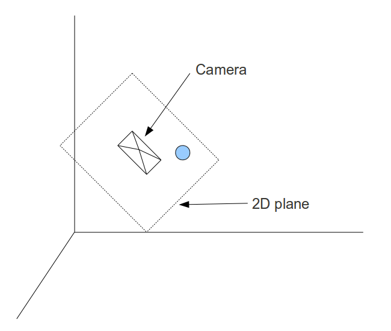
Theoretically, it is possible to generate the transformations that would take an object in the 3D world and project it onto a 2D plane lying infront of a camera positioned in an arbitrary location in the world. However, that math is much more complex than what we have previously seen. It is much more simple to do it when the camera is stationed at the origin of the 3D world and looking down the Z axe. For example, an object is positioned at (0,0,5) and the camera is at (0,0,1) and looking down the Z axe (i.e. directly at the object). If we move both the camera and the object by one unit towards the origin then the relative distance and orientation (in terms of the direction of the camera) remains the same only now the camera is positioned at the origin. Moving all the objects in the scene in the same way will allow us to render the scene correctly using the methods that we have already learned.
The example above was simple because the camera was already looking down the Z axe and was in general aligned to the axes of the coordinate system. But what happens if the camera is looking somewhere else? Take a look at the following picture. For simplicity, this is a 2D coordinate system and we are looking at the camera from the top.
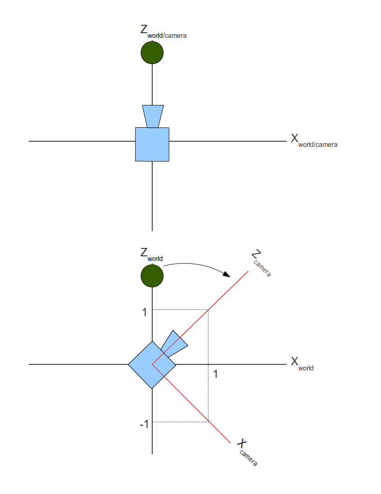
The camera was originally looking down the Z axe but then turned 45 degrees clockwise. As you can see, the camera defines its own coordinate system which may be identical to the world (upper picture) and may be different (lower picture). So there are actually two coordinate systems simulatenously. There is the ‘world coordinate system’ in which the objects are specified and there is a camera coordinate system which is aligned with the “axes” of the camera (target, up and right). These two coordinate systems are known as ‘world space’ and ‘camera/view space’.
The green ball is located on (0,y,z) in world space. In camera space it is located somewhere in the upper left quadrant of the coordinate system (i.e. it has a negative X and a positive Z). We need to find out the location of the ball in camera space. Then we can simply forget all about the world space and use only the camera space. In camera space the camera is located at the origin and looking down the Z axe. Objects are specified relative to the camera and can be rendered using the tools we have learned.
Saying that the camera turned 45 degrees clockwise is the same as saying that the green ball turned 45 degrees counter-clockwise. The movement of the objects is always opposite to the movement of the camera. So in general, we need to add two new transformations and plug them into the transformation pipeline that we already have. We need to move the objects in a way that will keep their distance from the camera the same while getting the camera to the origin and we need to turn the objects in the opposite direction from the direction the camera is turning to.
Moving the camera is very simple. If the camera is located at (x,y,z), then the translation transformation is (-x, -y, -z). The reason is straightforward - the camera was placed in the world using a translation transformation based on the vector (x,y,z) so to move it back to the origin we need a translation transformation based on the opposite of that vector. This is how the transformation matrix looks like:
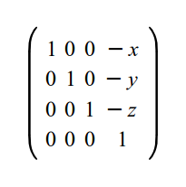
The next step is to turn the camera toward some target specified in world space coordinates. We want to find out the location of the vertices in the new coordinate system that the camera defines. So the actual question is: how do we transform from one coordinate system to another?
Take another look at the picture above. We can say that the world coordinate system is defined by the three linearly independent unit vectors (1,0,0), (0,1,0) and (0,0,1). Linearly independent means that we cannot find x,y and z that are not all zeros such that x*(1,0,0) + y(0,1,0) + z*(0,0,1) = (0,0,0). In more geometrical terms this means that any pair of vectors out of these three defines a plane which is perpendicular to the third vector (plane XY is perpedicular to Z axe, etc). It is easy to see that the camera coordinate system is defined by the vectors (1,0,-1), (0,1,0), (1,0,1). After normalizing these vectors we get (0.7071,0,-0.7071), (0,1,0) and (0.7071,0,0.7071).
The following image shows how the location of a vector is specified in two different coordinate systems:
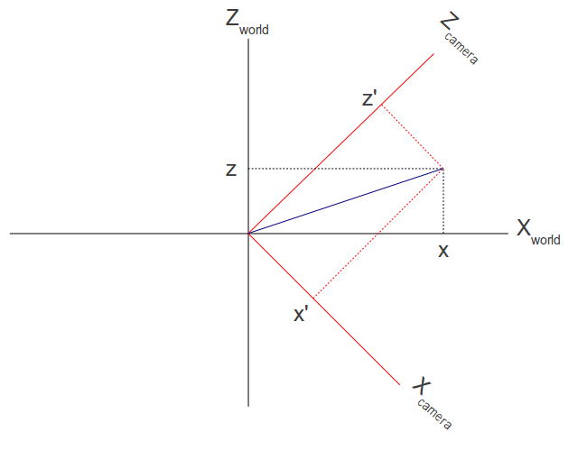
We know how to get the unit vectors that represent the camera axes in world space and we know the location of the vector in world space (x,y,z). What we are looking for is the vector (x’,y’,z’). We now take advantage of an attribute of the dot product operation known as ‘scalar projection’. Scalar projection is the result of a dot product between an arbitrary vector A and a unit vector B and results in the magnitude of A in the direction of B. In other words, the projection of vector A on vector B. In the example above if we do a dot product between (x,y,z) and the unit vector that represents the camera X axe we get x’. In the same manner we can get y’ and z’. (x’,y’,z’) is the location of (x,y,z) in camera space.
Let’s see how to turn this knowledge into a complete solution for orienting the camera. The solution is called ‘UVN camera’ and is just one of many systems to specify the orientation of a camera. The idea is that the camera is defined by the following vectors:
- N - The vector from the camera to its target. Also known as the ’look at’ vector in some 3D literature. This vector corresponds to the Z axe.
- V - When standing upright this is the vector from your head to the sky. If you are writing a flight simulator and the plane is reversed that vector may very well point to the ground. This vector corresponds to the Y axe.
- U - This vector points from the camera to its “right” side". It corresponds to the X axe.
In order to transform a position in world space to the camera space defined by the UVN vectors we need to perform a dot product operation between the position and the UVN vectors. A matrix represents this best:

In the code that accompanies this tutorial you will notice that the shader global variable ‘gWorld’ has been renamed ‘gWVP’. This change reflects the way the series of transformations is known in many textbooks. WVP stands for - World-View-Projection.
Source walkthru
In this tutorial I decided to make a small design change and moved the low level matrix manipulation code from the Pipeline class to the Matrix4f class. The Pipeline class now tells Matrix4f to initialize itself in different ways and concatenates several matrices to create the final transformation.
(pipeline.h:85)
1struct {
2 Vector3f Pos;
3 Vector3f Target;
4 Vector3f Up;
5} m_camera;
The Pipeline class has a few new members to store the parameters of the camera. Note that the axe that points from the camera to it’s “right” is missing (the ‘U’ axe). It is calculated on the fly using a cross product between the target and up axes. In addition there is a new function called SetCamera to pass these values.
(math3d.h:21)
1Vector3f Vector3f::Cross(const Vector3f& v) const
2{
3 const float _x = y * v.z - z * v.y;
4 const float _y = z * v.x - x * v.z;
5 const float _z = x * v.y - y * v.x;
6 return Vector3f(_x, _y, _z);
7}
The Vector3f has a new method to calculate the cross product between two Vector3f objects. A cross product between two vectors produces a vector which is perpendicular to the plane defined by the vectors. This becomes more intuitive when you remember that vectors have a direction and magnitude but no position. All vectors with the same direction and magnitude are considered equal, regardless where they “start”. So you might as well make both vectors start at the origin. This means that you can create a triangle that has one vertex at the origin and two vertices at the tip of the vectors. The triangle defines a plane and the cross product is a vector which is perpendicular to that plane. Read more on the cross product in Wikipedia.
(math3d.h:30)
1Vector3f& Vector3f::Normalize()
2{
3 const float Length = sqrtf(x * x + y * y + z * z);
4
5 x /= Length;
6 y /= Length;
7 z /= Length;
8
9 return *this;
10}
To generate the UVN matrix we will need to make the vectors unit length. This operation is formally known as ‘vector normalization’ is executed by dividing each vector component by the vector length. More on this in Mathworld.
(math3d.cpp:84)
1void Matrix4f::InitCameraTransform(const Vector3f& Target, const Vector3f& Up)
2{
3 Vector3f N = Target;
4 N.Normalize();
5 Vector3f U = Up;
6 U = U.Cross(Target);
7 U.Normalize();
8 Vector3f V = N.Cross(U);
9
10 m[0][0] = U.x; m[0][1] = U.y; m[0][2] = U.z; m[0][3] = 0.0f;
11 m[1][0] = V.x; m[1][1] = V.y; m[1][2] = V.z; m[1][3] = 0.0f;
12 m[2][0] = N.x; m[2][1] = N.y; m[2][2] = N.z; m[2][3] = 0.0f;
13 m[3][0] = 0.0f; m[3][1] = 0.0f; m[3][2] = 0.0f; m[3][3] = 1.0f;
14}
This function generates the camera transformation matrix that will be used later by the pipeline class. The U,V and N vectors are calculated and set into the matrix in rows. Since the vertex position is going to be multiplied on the right side (as a column vector) this means a dot product between U,V and N and the position. This generates the 3 scalar projections magnitude values that become the XYZ values of the position in screen space.
The function is supplied with the target and up vectors. The “right” vector is calculated as the cross product between them. Note that we do not trust the caller to pass unit length vectors so we normalize the vectors anyway. After generating the U vector we recalculate the up vector as a cross product between the target and the right vector. The reason will become clearer in the future when we will start moving the camera. It is simpler to update only the target vector and leave the up vector untouched. However, this means that the angle between the target and the up vectors will not be 90 degrees which makes this an invalid coordinate system. By calculating the right vector as a cross product of the target and the up vectors and then recalculating the up vector as a cross product between the target and the right we get a coordinate system with 90 degrees between each pair of axes.
(pipeline.cpp:22)
1const Matrix4f* Pipeline::GetTrans()
2{
3 Matrix4f ScaleTrans, RotateTrans, TranslationTrans, CameraTranslationTrans, CameraRotateTrans, PersProjTrans;
4
5 ScaleTrans.InitScaleTransform(m_scale.x, m_scale.y, m_scale.z);
6 RotateTrans.InitRotateTransform(m_rotateInfo.x, m_rotateInfo.y, m_rotateInfo.z);
7 TranslationTrans.InitTranslationTransform(m_worldPos.x, m_worldPos.y, m_worldPos.z);
8 CameraTranslationTrans.InitTranslationTransform(-m_camera.Pos.x, -m_camera.Pos.y, -m_camera.Pos.z);
9 CameraRotateTrans.InitCameraTransform(m_camera.Target, m_camera.Up);
10 PersProjTrans.InitPersProjTransform(m_persProj.FOV, m_persProj.Width, m_persProj.Height, m_persProj.zNear, m_persProj.zFar);
11 m_transformation = PersProjTrans * CameraRotateTrans * CameraTranslationTrans * TranslationTrans * RotateTrans * ScaleTrans;
12 return &m_transformation;
13}
Let’s update the function that generates the complete transformation matrix of an object. It is now becoming quite complex with two new matrices that provide the camera part. After completing the world transformation (the combined scaling, rotation and translation of the object) we start the camera transformation by “moving” the camera to the origin. This is done by a translation using the negative vector of the camera position. So if the camera is positioned at (1,2,3) we need to move the object by (-1,-2,-3) in order to get the camera back to the origin. After that we generate the camera rotation matrix based on the camera target and up vectors. This completes the camera part. Finally, we project the coordinates.
(tutorial13.cpp:76)
1Vector3f CameraPos(1.0f, 1.0f, -3.0f);
2Vector3f CameraTarget(0.45f, 0.0f, 1.0f);
3Vector3f CameraUp(0.0f, 1.0f, 0.0f);
4p.SetCamera(CameraPos, CameraTarget, CameraUp);
We use the new capability in the main render loop. To place the camera we step back from the origin along the negative Z axe, then move to the right and straight up. The camera is looking along the positive Z axe and a bit to the right from the origin. The up vector is simply the positive Y axe. We set all this into the Pipeline object the Pipeline class takes care of the rest.
For more information on this subject check out the following video tutorial by Frahaan Hussain.
Tutorial 14:Camera Control - Part 1
Background
In the previous tutorial we learned how to position the camera anywhere in the 3D world. The next logical step is to allow the user to control it. Movement will be unrestricted - the user will be able to move in all directions. Controlling the camera will be done using two input devices - the keyboard will control our position and the mouse will change our view target. This is very similar to what most first person shooters are doing. This tutorial will focus on the keyboard and the next one on the mouse.
We are going to support the four directional keys in the conventional manner. Remember that our camera transformation is defined by position, target vector and up vector. When we move using the keyboard we only change our position. We cannot tilt the camera or turn it so the target and up vectors are uneffected.
To control the keyboard we will use another GLUT API: glutSpecialFunc(). This function registers a callback that is triggered when a “special” key is clicked. The group of special keys include the function, directional and PAGE-UP/PAGE-DOWN/HOME/END/INSERT keys. If you want to trap a regular key (characters and digits) use glutKeyboardFunc().
Source walkthru
The camera functionality is encapsulated in the Camera class. This class stores the attributes of the camera and can change them based on movement events that it receives. The attributes are fetched by the pipeline class that generates the transformation matrix from them.
(Camera.h)
1class Camera
2{
3public:
4 Camera();
5 Camera(const Vector3f& Pos, const Vector3f& Target, const Vector3f& Up);
6 bool OnKeyboard(int Key);
7 const Vector3f& GetPos() const
8 const Vector3f& GetTarget() const
9 const Vector3f& GetUp() const
10
11private:
12 Vector3f m_pos;
13 Vector3f m_target;
14 Vector3f m_up;
15};
This is the declaration of the Camera class. It stores the three attributes that define the camera - position, target vector and up vector. Two constructors are available. The default one simply places the camera at the origin looking down the positive Z axe with an up vector that points to the “sky” (0,1,0). There is also an option to create a camera with specific attribute values. The OnKeyboard() function supplies keyboard events to the Camera class. It returns a boolean value which indicates whether the event was consumed by the class. If the key is relevant (one of the directional keys) the return value is true. If not - false. This way you can build a chain of clients that receive a keyboard event and stop after reaching the first client that actually does something with the specific event.
(Camera.cpp:42)
1bool Camera::OnKeyboard(int Key)
2{
3 bool Ret = false;
4
5 switch (Key) {
6
7 case GLUT_KEY_UP:
8 {
9 m_pos += (m_target * StepSize);
10 Ret = true;
11 }
12 break;
13
14 case GLUT_KEY_DOWN:
15 {
16 m_pos -= (m_target * StepSize);
17 Ret = true;
18 }
19 break;
20
21 case GLUT_KEY_LEFT:
22 {
23 Vector3f Left = m_target.Cross(m_up);
24 Left.Normalize();
25 Left *= StepSize;
26 m_pos += Left;
27 Ret = true;
28 }
29 break;
30
31 case GLUT_KEY_RIGHT:
32 {
33 Vector3f Right = m_up.Cross(m_target);
34 Right.Normalize();
35 Right *= StepSize;
36 m_pos += Right;
37 Ret = true;
38 }
39 break;
40 }
41
42 return Ret;
43}
This function move the camera according to keyboard events. GLUT defines macros that correspond to the directional keys and this is what the switch statement is based on. Unfortunately, the type of these macros is a simple ‘int’ rather than an enum.
Forward and backward movements are the simplest. Since movement is always along the target vector we only need to add or substract the target vector from the position. The target vector itself remains unchanged. Note that before adding or substracting the target vector we scale it by a constant value called ‘StepSize’. We do it for all directional keys. StepSize provides a central point to change the speed (in the future we may change this into a class attribute). To make StepSize consistent we make sure that we always multiply it by unit length vectors (i.e. we must make sure the target and up vectors are unit length).
Sideways movement is a bit more complex. It is defined as a movement along a vector which is perpendicular to the plane created by the target and up vectors. This plane divides the three-dimensional space into two parts and there are two vectors that are perpendicular to it and are opposite to one another. We can call one of them “left” and the other “right”. They are generated using a cross product of the target and up vectors in the two possible combinations: target cross up and up cross target (cross product is a non commutative operation - changing the order of parameters can generate different result). After getting the left/right vector we normalize it, scale it by the StepSize and add it to the position (which moves it in the left/right direction). Again, the target and up vectors are uneffected.
Note that the operations in this function make use of a few new operators such as ‘+=’ and ‘-=’ that have been added to the Vector3f class.
(tutorial14.cpp:73)
1static void SpecialKeyboardCB(int Key, int x, int y)
2{
3 GameCamera.OnKeyboard(Key);
4}
5static void InitializeGlutCallbacks()
6{
7 glutDisplayFunc(RenderSceneCB);
8 glutIdleFunc(RenderSceneCB);
9 glutSpecialFunc(SpecialKeyboardCB);
10}
Here we register a new callback to handle the special keyboard events. The callback receives the key and the location of the mouse at the time of the key press. We ignore the mouse position and pass the event on to an instance of the camera class which was already allocated on the global section of the file.
(tutorial14.cpp:55)
1p.SetCamera(GameCamera.GetPos(), GameCamera.GetTarget(), GameCamera.GetUp());
Previously we initialized the camera parameters in the Pipeline class using a hard coded vectors. Now these vectors are dropped and the camera attributes are fetched directly from the Camera class.
For more information on this subject check out the following video tutorial by Frahaan Hussain.
Tutorial 15:Camera Control - Part 2
Background
In this tutorial we complete the implementation of the camera by enabling direction control using the mouse. There are various levels of freedom which are associated with the design of the camera. We are going to enable the level of control you come to expect in a first person game (shooter or otherwise). This means we will be able to turn the camera 360 degrees (around the positive Y axis), which corresponds to turning your head left or right and completing a full circle with your body. In addition, we will be able to tilt the camera up and down to get a better view above or below. We won’t be able to turn the camera up until we complete a full circle or tilt it in a way a plane fuselage tilts during a turn. These levels of freedom are in the domain of flight simulators which is out of scope for this tutorial. At any rate, we will have a camera that will allow us to conveniently explore the 3D world will are going to develop in the coming tutorials.
The following world war 2 anti aircraft gun demonstrates the kind of camera we are going to build:
The gun has two control axis:
- It can turn 360 degrees around the vector (0,1,0). This angle is called the ‘horizontal angle’ and the vector is the ‘vertical axis’.
- It can tilt up and down around a vector which is parallel to the ground. This movement is somewhat limited and the gun cannot complete a full circle. This angle is called the ‘vertical angle’ and the vector is the ‘horizontal axis’. Note that while the vertical axis is constant (0,1,0) the horizontal axis turns around with the gun and is always perpendicular to the target of the gun. This is a key point to understand in order to get the math correctly.
The plan is to follow the movement of the mouse and change the horizontal angle when the mouse moves left and right and the vertical angle when the mouse moves up and down. Given these two angles we want to calculate the target and up vectors.
Turning the target vector by the horizontal angle is pretty straightforward. Using basic trigonometry we can see that the Z component of the target vector is the sine of the horizontal angle and the X component is the cosine of the horizontal angle (at this stage the camera looks straight ahead so the Y is zero). Revisit tutorial 7 to see a diagram of that.
Turning the target vector by the vertical angle is more complex since the horizontal axis turns along with the camera. The horizontal axis can be calculated using a cross product between the vertical axis and the target vector after is was turned by the horizontal angle, but turning around an arbitrary vector (lifting the gun up and down) can be tricky.
Luckily, we have an extremely useful mathematical tool for that problem - the quaternion. Quaternions were discovered in 1843 by Sir Willilam Rowan Hamilton, an irish mathematician, and are based on the complex number system. The quaternion ‘Q’ is defined as:

Where i, j and k are complex numbers and the following equation holds true:

In practice, we specify a quaternion as the 4-vector (x, y, z, w). The conjugate of quaternion ‘Q’ is defined as:

Normalizing a quaternion is the same as normalizing a vector. I’m going to describe the steps required to rotate a vector around an arbitrary vector using a quaternion. More details about the mathematical proof behind the steps can be found on the web.
The general function to calculate a quaternion ‘W’ that represents the rotated vector ‘V’ by the angle ‘a’ is:

Where Q is the rotation quaternion which is defined as:

After calculating ‘W’ the rotated vector is simply (W.x,W.y,W.z). An important point to note in the calculation of ‘W’ is that first we need to multiple ‘Q’ by ‘V’ which is a quaternion-by-vector multiplication that results in a quaternion, and then we need to do a quaternion-by-quaternion multiplication (the result of Q*V multiplied by the conjugate of ‘Q’). The two types of multiplications are not the same. The file math_3d.cpp includes the implementations of these multiplication types.
We will need to keep the horizontal and vertical angles updated all the time as the user moves the mouse around the screen and we need to decide how to initialize them. The logical choice is to initialize them according to the target vector that is supplied to the constructor of the camera. Let’s start with the horizontal angle. Take a look at the following diagram which looks down the XZ plane from above:

The target vector is (x,z) and we want to find the horizontal angle which is represented by the letter alpha (the Y component is relevant only for the vertical angle). Since the length of the radius of the circle is 1 it is very easy to see that the sine function of alpha is exactly z. Therefore, calculating the asine of z will provide alpha. Are we done? - not yet. Since z can be in the range [-1,1], the result of asine is -90 degrees to +90 degrees. But the range of the horizontal angle is 360 degrees. In addition, our quaternion does rotation clockwise. This means that when we rotate 90 degrees with the quaternion we end up with -1 on the Z axis which is opposite to the actual sine of 90 degrees (which is 1). IMHO, the easiest way to get this right is to always calculate the asine function using the positive value of Z and combine the result with the specific quarter of the circle where the vector is located. For example, when our target vector is (0,1) we calculate the asine of 1 which is 90 and substract it from 360. The result is 270. The asine range of 0 to 1 is 0 to 90 degrees. Combine that with the specific quarter of the circle and you get the final horizontal angle.
Calculating the vertical angle is a bit simpler. We are going to limit the range of movement to -90 degrees (equal to 270 degrees - looking straight up) to +90 degrees (looking straight down). This means we only need the negative value of the asine function of the Y component in the target vector. When Y equals 1 (looking straight up) the asine is 90 so we just need to reverse the sign. When Y equals -1 (looking straight down) the asine is -90 and reversing the sign gets us to 90. If you are confused check the diagram again and simply replace Z with Y and X with Z.
Source walkthru
(camera.cpp:38)
1Camera::Camera(int WindowWidth, int WindowHeight, const Vector3f& Pos, const Vector3f& Target, const Vector3f& Up)
2{
3 m_windowWidth = WindowWidth;
4 m_windowHeight = WindowHeight;
5 m_pos = Pos;
6
7 m_target = Target;
8 m_target.Normalize();
9
10 m_up = Up;
11 m_up.Normalize();
12
13 Init();
14}
The constructor of the camera now gets the dimensions of the window. We need it in order to move the mouse to the center of the screen. In addition, note the call to Init() which sets up the internal camera attributes.
(camera.cpp:54)
1void Camera::Init()
2{
3 Vector3f HTarget(m_target.x, 0.0, m_target.z);
4 HTarget.Normalize();
5
6 if (HTarget.z >= 0.0f)
7 {
8 if (HTarget.x >= 0.0f)
9 {
10 m_AngleH = 360.0f - ToDegree(asin(HTarget.z));
11 }
12 else
13 {
14 m_AngleH = 180.0f + ToDegree(asin(HTarget.z));
15 }
16 }
17 else
18 {
19 if (HTarget.x >= 0.0f)
20 {
21 m_AngleH = ToDegree(asin(-HTarget.z));
22 }
23 else
24 {
25 m_AngleH = 180.0f - ToDegree(asin(-HTarget.z));
26 }
27 }
28
29 m_AngleV = -ToDegree(asin(m_target.y));
30
31 m_OnUpperEdge = false;
32 m_OnLowerEdge = false;
33 m_OnLeftEdge = false;
34 m_OnRightEdge = false;
35 m_mousePos.x = m_windowWidth / 2;
36 m_mousePos.y = m_windowHeight / 2;
37 glutWarpPointer(m_mousePos.x, m_mousePos.y);
38}
In the Init() function we start by calculating the horizontal angle. We create a new target vector called HTarget (horizontal target) which is a projection of the original target vector on the XZ plane. Next we normalize it (since the math that was described earlier assumes a unit vector on the XZ plane). Then we check which quarter the target vector belongs to and calculate the final angle based on the positive value of the Z component. Next we calculate the vertical angle which is much simpler.
The camera has 4 new flags to indicate whether the mouse is positioned on one of the edges of the screen. We are going to implement an automatic turn in the corresponding direction when that happens. This will allow us to turn 360 degrees. We initialize the flags to FALSE since the mouse starts at the center of the screen. The next two lines of code calculate where the center of the screen is (based on the window dimension) and the new function glutWarpPointer actually moves the mouse. Starting with the mouse at the center of the screen makes life much simpler.
(camera.cpp:140)
1void Camera::OnMouse(int x, int y)
2{
3 const int DeltaX = x - m_mousePos.x;
4 const int DeltaY = y - m_mousePos.y;
5
6 m_mousePos.x = x;
7 m_mousePos.y = y;
8
9 m_AngleH += (float)DeltaX / 20.0f;
10 m_AngleV += (float)DeltaY / 20.0f;
11
12 if (DeltaX == 0) {
13 if (x <= MARGIN) {
14 m_OnLeftEdge = true;
15 }
16 else if (x >= (m_windowWidth - MARGIN)) {
17 m_OnRightEdge = true;
18 }
19 }
20 else {
21 m_OnLeftEdge = false;
22 m_OnRightEdge = false;
23 }
24
25 if (DeltaY == 0) {
26 if (y <= MARGIN) {
27 m_OnUpperEdge = true;
28 }
29 else if (y >= (m_windowHeight - MARGIN)) {
30 m_OnLowerEdge = true;
31 }
32 }
33 else {
34 m_OnUpperEdge = false;
35 m_OnLowerEdge = false;
36 }
37
38 Update();
39}
This function is used to notify the camera that the mouse moved. The parameters are the new screen position of the mouse. We start by calculating the delta from the previous location on both the X and Y axis. Next we store the new values for the next call to the function. We update the current horizontal and vertical angles by scaling down the deltas. I’m using a scaling value which works fine for me but on different computers you may want different scaling values. We are going to improve this in a future tutorial when we add the frame rate of the application as a factor.
The next set of tests update the ’m_On*Edge’ flags according to the location of the mouse. There is a margin which is by default 10 pixels that triggers the “edge” behavior when the mouse gets close to one of the edges of the screen. Finally, we call Update() to recalculate the target and up vectors based on the new horizontal and vertical angles.
(camera.cpp:183)
1void Camera::OnRender()
2{
3 bool ShouldUpdate = false;
4 if (m_OnLeftEdge) {
5 m_AngleH -= 0.1f;
6 ShouldUpdate = true;
7 }
8 else if (m_OnRightEdge) {
9 m_AngleH += 0.1f;
10 ShouldUpdate = true;
11 }
12
13 if (m_OnUpperEdge) {
14 if (m_AngleV > -90.0f) {
15 m_AngleV -= 0.1f;
16 ShouldUpdate = true;
17 }
18 }
19 else if (m_OnLowerEdge) {
20 if (m_AngleV < 90.0f) {
21 m_AngleV += 0.1f;
22 ShouldUpdate = true;
23 }
24 }
25
26 if (ShouldUpdate) {
27 Update();
28 }
29}
This function is called from the main render loop. We need it for cases where the mouse is located on one of the edges of the screen and is not moving. In this case there are no mouse events but we still want the camera to continuously move (until the mouse moves away from the edge). We check if one of the flags is set and update the corresponding angle accordingly. If there was a change in one of the angles we call Update() to update the target and up vectors. When the mouse moves aways from the screen we detect it in the mouse event handler and clear the flag. Note the way the vertical angle is limited between the ranges -90 degrees and +90 degrees. This is to prevent a full circle when looking up or down.
(camera.cpp:214)
1void Camera::Update()
2{
3 const Vector3f Vaxis(0.0f, 1.0f, 0.0f);
4
5 // Rotate the view vector by the horizontal angle around the vertical axis
6 Vector3f View(1.0f, 0.0f, 0.0f);
7 View.Rotate(m_AngleH, Vaxis);
8 View.Normalize();
9
10 // Rotate the view vector by the vertical angle around the horizontal axis
11 Vector3f Haxis = Vaxis.Cross(View);
12 Haxis.Normalize();
13 View.Rotate(m_AngleV, Haxis);
14 View.Normalize();
15
16 m_target = View;
17 m_target.Normalize();
18
19 m_up = m_target.Cross(Haxis);
20 m_up.Normalize();
21}
This function updates the target and up vector according to the horizontal and vertical angles. We start with the view vector in a “reset” state. This means it is parallel to the gound (vertical angle is zero) and looking directly to the right (horizontal angle is zero - see the diagram above). We set the vertical axis to point straight up and then rotate the view vector around it by the horizontal angle. The result is a vector which points in the general direction of the intended target but not necessarily in the correct height (i.e. it is on the XZ plane). By doing a cross product of this vector with the vertical axis we get another vector on the XZ plane which is perpendicular to the plane created by the view vector and the vertical axis. This is our new horizontal axis and now it is time to rotate the vector up or down around it according to the vertical angle. The result is the final target vector and we set it into the corresponding member attribute. Now we must fix the up vector. For example, if the camera is looking up, the up vector must tilt back to compensate (it must be 90 degrees in respect to the target vector). This is similar to the way the back of your head tilts back when you look up to the sky. The new up vector is calculated by simply doing another cross product between the final target vector and the horizontal axis. If the vertical angle is still zero then the target vector remains on the XZ plane and the up vector remains (0,1,0). If the target vector is tilted up or down the up vector will tilt backward or forward, respectively.
(tutorial15.cpp:209)
1glutGameModeString("1920x1200@32");
2glutEnterGameMode();
These glut functions enable our application to run full screen in the so called high performance ‘game mode’. It makes turning the camera 360 degrees simpler because all you need to do is pull the mouse towards one of the edges of the screen. Note the resolution and the bits per pixel that are configured via the game mode string. 32 bits per pixel provides the maximum number of colors for rendering.
(tutorial15.cpp:214)
1pGameCamera = new Camera(WINDOW_WIDTH, WINDOW_HEIGHT);
The camera is now allocated dynamically at this location because it performs a glut call (glutWarpPointer). This call will fail if glut has not yet been initialized.
(tutorial15.cpp:99)
1glutPassiveMotionFunc(PassiveMouseCB);
2glutKeyboardFunc(KeyboardCB);
We register two new glut callback functions here. One is for the mouse and the other for regular keyboard clicks (the special keyboard callback traps directional and function keys). Passive motion means that the mouse moves without any of its buttons pressed.
(tutorial15.cpp:81)
1static void KeyboardCB(unsigned char Key, int x, int y)
2{
3 switch (Key) {
4 case 'q':
5 exit(0);
6 }
7}
8
9static void PassiveMouseCB(int x, int y)
10{
11 pGameCamera->OnMouse(x, y);
12}
Now that we are using a full screen mode it is more difficult to exit the application. The keyboard callback traps the ‘q’ key and exits. The mouse callback simply transfers the location of the mouse to the camera.
(tutorial15.cpp:44)
1static void RenderSceneCB(){ pGameCamera->OnRender();
Whenever we are in the main render loop we must notify the camera. This gives the camera a chance to turn when the mouse is not moving and is on one of the screen edges.
For more information on this subject check out the following video tutorial by Frahaan Hussain.
Tutorial 16:Basic Texture Mapping
Background
Texture mapping means applying any type of picture on one or more faces of a 3D model. The picture (a.k.a ’texture’) can be anything but is often a pattern such as bricks, foliage, barren land, etc, that adds realism to the scene. For example, compare the following images:

To get texture mapping working you need to do three things: load a texture into OpenGL, supply texture coordinates with the vertices (to map the texture to them) and perform a sampling operation from the texture using the texture coordinates in order to get the pixel color. Since a triangle is scaled, rotated, translated and finally projected it can land on the screen in numerous ways and look very different depending on its orientation to the camera. What the GPU needs to do is make the texture follow the movement of the vertices of the triangle so that it will look real (if the texture appear to “swim” across the triangle it will not). To do this the developer supplies a set of coordinates known as ’texture coordinates’ to each vertex. As the GPU rasterizes the triangle it interpolates the texture coordinates across the triangle face and in the fragment shader the developer maps these coordindates to the texture. This action is known as ‘sampling’ and the result of sampling is a texel (a pixel in a texture). The texel often contains a color which is used to paint the corresponding pixel on the screen. In the coming tutorials we will see that the texel can contain different types of data that can be used for multiple effects.
OpenGL supports several types of textures such as 1D, 2D, 3D, cube, etc that can be used for different techniques. Let’s stick with 2D textures for now. A 2D texture has a width and height that can be any number within the limitations of the spec. Multiplying the width by height tells you the number of texels in the texture. How do you specify the texture coordinates of a vertex? - No, it is not the coordinate of a texel inside the texture. That would be too limiting because replacing a texture with one that has different width/height means that we will need to update the texture coordinates of all the vertices to match the new texture. The ideal scenario is to be able to change textures without changing texture coordinates. Therefore, texture coordinates are specified in ’texture space’ which is simply the normalized range [0,1]. This means that the texture coordinate is usually a fraction and by multiplying that fraction with the corresponding width/height of a texture we get the coordinate of the texel in the texture. For example, if the texture coordinate is [0.5,0.1] and the texture has a width of 320 and a height of 200 the texel location will be (160,20) (0.5 * 320 = 160 and 0.1 * 200 = 20).
The usual convention is to use U and V as the axis of the texture space where U corresponds to X in the 2D cartesian coordinate system and V corresponds to Y. OpenGL treats the values of the UV axes as going from left to right on the U axis and down to up on the V axis. Take a look at the following image:

This image presents the texture space and you can see the origin of that space in the bottom left corner. U grows towards the right and V grows up. Now consider a triangle whose texture coordinates are specified in the following picture:
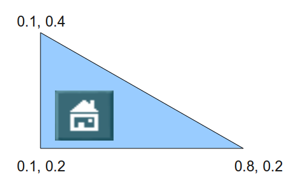
Let’s say that we apply a texture such that when using these texture coordinates we get the picture of the small house in the location above. Now the triangle goes through various transformations and when the time comes to rasterize it it looks like this:

As you can see, the texture coordinates “stick” to the vertices as they are a core attributes and they don’t change under the transformations. When interpolating the texture coordinates most pixels get the same texture coordinates as in the original picture (because they remained in the same place relative to the vertices) and since the triangle was flipped so is the texture which is applied to it. This means that as the original triangle is rotated, stretched or squeezed the texture diligently follows it. Note that there are also techniques that change the texture coordinates in order to move texture across the triangle face in some controlled way but for now our coordinates will stay the same.
Another important concept associated with texture mapping is ‘filtering’. We’ve discussed how to map a texture coordinate to a texel. The texel location in the texture is always specified in whole numbers, but what happens if our texture coordinates (remember - this is a fraction between 0 and 1) maps us to a texel at (152.34,745.14)? The trivial answer is to round this down to (152,745). Well, this works and provides adequate results but in some cases won’t look very good. A better approach is to get the 2 by 2 quad of texels ( (152,745), (153,745), (152,744) and (153,744) ) and do some linear interpolation between their colors. This linear interpolation must reflect the relative distance between (152.34,745.14) and each one of the texels. The closest the coordinate is to a texel the greater influence it gets on the end result and the further it is the less influence it gets. This looks much better than the original approach.
The method by which the final texel value is selected is known as ‘filtering’. The simple approach of rounding the texture location is known as ’nearest filtering’ and the more complex approach that we saw is called ’linear filtering’. Another name for nearest filtering you may come across is ‘point filtering’. OpenGL supports several types of filters and you have the option to choose. Usually the filters that provide better results demand greater compute power from the GPU and may have an effect on the frame rate. Choosing the filter type is a matter of balancing between the desired result and the capability of the target platform.
Now that we understand the concept of texture coordinates it is time to take a look at the way texture mapping is done in OpenGL. Texturing in OpenGL means manipulating the intricate connections between four concepts: the texture object, the texture unit, the sampler object and the sampler uniform in the shader.
The texture object contains the data of the texture image itself, i.e., the texels. The texture can be of different types (1D, 2D, etc) with different dimensions and the underlying data type can have multiple formats (RGB, RGBA, etc). OpenGL provides a way to specify the starting point of the source data in memory and all the above attributes and load the data into the GPU. There are also multiple parameters that you can control such as the filter type, etc. In a very similar way to vertex buffer objects the texture object is associated with a handle. After creating the handle and loading the texture data and parameters you can simply switch textures on the fly by binding different handles into the OpenGL state. You no longer need to load the data again. From now on it is the job of the OpenGL driver to make sure the data is loaded in time to the GPU before rendering starts.
The texture object is not bound directly into the shader (where the actual sampling takes place). Instead, it is bound to a ’texture unit’ whose index is passed to the shader. So the shader reaches the texture object by going through the texture unit. There are usually multiple texture units available and the exact number depends on the capability of your graphis card. In order to bind a texture object A to a texture unit 0 you first need to make texture unit 0 active and then bind texture object A. You can now make texture unit 1 active and bind a different (or even the same) texture object to it. Texture unit 0 remains bound to texture object A.
There is a bit of complexity in the fact that each texture unit actually has a place for several texture objects simultaneously, as long as the textures are of different types. This is called the ’target’ of the texture object. When you bind a texture object to a texture unit you specify the target (1D, 2D, etc). So you can have texture object A bound to the 1D target while object B is bound to the 2D target of the same texture unit.
The sampling operation (usually) takes place inside the fragment shader and there is a special function that does it. The sampling function needs to know the texture unit to access because you can sample from multiple texture unit in the fragment shader. There is a group of special uniform variables for that, according to the texture target: ‘sampler1D’, ‘sampler2D’, ‘sampler3D’, ‘samplerCube’, etc. You can create as many sampler uniform variables as you want and assign the value of a texture unit to each one from the application. Whenever you call a sampling function on a sampler uniform variable the corresponding texture unit (and texture object) will be used.
The final concept is the sampler object. Don’t confuse it with the sampler uniform variable! These are seperate entities. The thing is that the texture object contains both the texture data as well as parameters that configure the sampling operation. These parameters are part of the sampling state. However, you can also create a sampler object, configure it with a sampling state and bind it to the texture unit. When you do that the sampler object will override any sampling state defined in the texture object. Don’t worry - for now we won’t be using sampler objects at all but it is good to know that they exist.
The following diagram summarizes the relationships between the texturing concepts that we just learned:
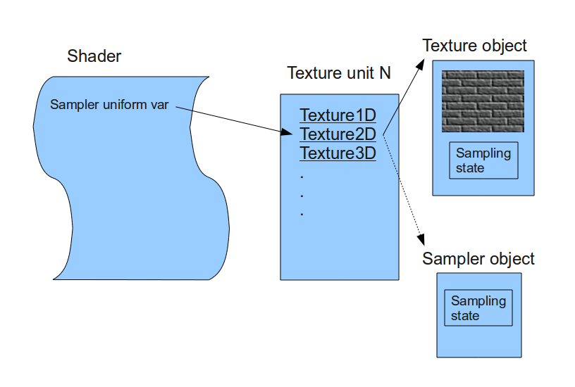
Source walkthru
OpenGL knows how to load texture data in different formats from a memory location but does not provide any means for loading the texture into memory from image files such as PNG and JPG. We are going to use an external library for that. There are many options in that department and we’re going to use ImageMagick, a free software library that supports many image types and is portable across several operating systems. See the instructions for more info on installing it.
Most of the handling of the texture is encapsulated in the following class:
(ogldev_texture.h:27)
1class Texture
2{
3public:
4 Texture(GLenum TextureTarget, const std::string& FileName);
5
6 bool Load();
7
8 void Bind(GLenum TextureUnit);
9};
When creating a Texture object you will need to specify a target (we use GL_TEXTURE_2D) and file name. After that you call the Load() function. This can fail, for example, if the file does not exist or if ImageMagick encountered any other error. When you want to use a specific Texture instance you need to bind it to one of the texture units.
(ogldev_texture.cpp:31)
1try {
2 m_pImage = new Magick::Image(m_fileName);
3 m_pImage->write(&m_blob, "RGBA");
4}
5catch (Magick::Error& Error) {
6 std::cout << "Error loading texture '" << m_fileName << "': " << Error.what() << std::endl;
7 return false;
8}
This is how we use ImageMagick to load the texture from file and prepare it in memory to be loaded into OpenGL. We start by instantiating a class member with the type Magic::Image using the texture file name. This call loads the texture into a memory representation which is private to ImageMagick and cannot be used directly by OpenGL. Next we write the image into a Magick::Blob object using the RGBA (red, green, blue and alpha channels) format. The BLOB (Binary Large Object) is a useful mechanism for storing an encoded image in memory in a way that it can be used by external programs. If there is any error an exception will be thrown so we need to be prepared for it.
(ogldev_texture.cpp:40)
1glGenTextures(1, &m_textureObj);
This OpenGL function is very similar to glGenBuffers() that we are already familiar with. It generates the specified number of texture objects and places their handles in the GLuint array pointer (the second parameter). In our case we only need one object.
(ogldev_texture.cpp:41)
1glBindTexture(m_textureTarget, m_textureObj);
We are going to make several texture related calls and in a similar fashion to what with did with vertex buffers, OpenGL needs to know on what texture object to operate. This is the purpose of the glBindTexture() function. It tells OpenGL the texture object we refer to in all the following texture related calls, until a new texture object is bound. In addition to the handle (the second object) we also specify the texture target that can be GL_TEXTURE_1D, GL_TEXTURE_2D, etc. There can be a different texture object bound to each one of the targets simultaneously. In our implementation the target is passed as part of the constructor (and for now we are using GL_TEXTURE_2D).
(ogldev_texture.cpp:42)
1glTexImage2D(m_textureTarget, 0, GL_RGBA, m_pImage->columns(), m_pImage->rows(), 0, GL_RGBA, GL_UNSIGNED_BYTE, m_blob.data());
This rather complex function is used to load the main part of the texture object, that is, the texture data itself. There are several glTexImage* function available and each one covers a few texture targets. The texture target is always the first parameter. The second parameter is the LOD, or Level-Of-Detail. A texture object can contain the same texture in different resolutions, a concept known as mip-mapping. Each mip-map has a different LOD index, starting from 0 for the highest resolution and growing as resolution decreases. For now, we have only a single mip-map so we pass zero.
The next parameter is the internal format in which OpenGL stores the texture. For example, you can pass a texture with the full four color channel (red, green, blue and alpha) but if you specify GL_RED you will get a texture with only the red channel, which looks kinda, well…, red (try it!). We use GL_RGBA to get the full texture color correctly. The next two parameters are the width and height of the texture in texels. ImageMagick conveniently stores this information for us when it loads the image and we get it using the Image::columns()/rows() functions. The fifth parameter is the border, which we leave as zero for now.
The last three parameters specify the source of the incoming texture data. The parameters are format, type and memory address. The format tells us the number of channels and needs to match the BLOB that we have in memory. The type describes the core data type that we have per channel. OpenGL supports many data types but in the ImageMagick BLOB we have one byte per channel so we use GL_UNSIGNED_BYTE. Finally comes the memory address of the actual data which we extract from the BLOB using the Blob::data() function.
(ogldev_texture.cpp:43)
1glTexParameterf(m_textureTarget, GL_TEXTURE_MIN_FILTER, GL_LINEAR);
2glTexParameterf(m_textureTarget, GL_TEXTURE_MAG_FILTER, GL_LINEAR);
The general function glTexParameterf control many aspects of the texture sampling operation. These aspects are part of the texture sampling state. Here we specify the filter to be used for magnification and minification. Every texture has a given width and height dimensions but rarely it is applied to a triangle of the same proportion. In most case the triangle is either smaller or larger than the texture. In this case the filter type determines how to handle the case of magnifying or minifying the texture to match the proportion of the triangle. When the rasterized triangle is larger than the texture (e.g. it is very close to the camera) we may have several pixels covered by the same texel (magnification). When it is smaller (e.g. very far from the camera) several texels are covered by the same pixel (minification). Here we select the linear interpolation filter type for both cases. As we’ve seen earlier, linear interpolation provides good looking results by mixing the colors of a 2x2 texel quad based on the proximity of the actual texel location (calculated by scaling the texture coordinates by the texture dimensions).
(ogldev_texture.cpp:49)
1void Texture::Bind(GLenum TextureUnit)
2{
3 glActiveTexture(TextureUnit);
4 glBindTexture(m_textureTarget, m_textureObj);
5}
As our 3D applications grow more complex, we may be using many different textures in many draw calls in the render loop. Before each draw call is made we need to bind the texture object we want to one of the texture units so that it will be sampled from in the fragment shader. This function takes the texture unit enum (GL_TEXTURE0, GL_TEXTURE1, etc) as a parameter. It makes it active using glActiveTexture() and then binds the texture object to it. This object will remain bound to this texture unit until the next call to Texture::Bind() is made with the same texture unit.
(shader.vs)
1#version 330
2
3layout (location = 0) in vec3 Position;
4layout (location = 1) in vec2 TexCoord;
5
6uniform mat4 gWVP;
7
8out vec2 TexCoord0;
9
10void main()
11{
12 gl_Position = gWVP * vec4(Position, 1.0);
13 TexCoord0 = TexCoord;
14};
This is the updated vertex shader. There is an additional input parameter called TexCoord which is a 2D vector. Instead of outputing the color this shader passes the texture coordinates from the vertex buffer down to the fragment shader untouched. The rasterizer will interpolate the texture coordinates across the triangle face and each fragment shader will be invoked with its own specific texture coordinates.
(shader.fs)
1in vec2 TexCoord0;
2
3out vec4 FragColor;
4
5uniform sampler2D gSampler;
6
7void main()
8{
9 FragColor = texture2D(gSampler, TexCoord0.st);
10};
And this is the updated fragment shader. It has an input variable called TexCoord0 which contains the interpolated texture coordinates we got from the vertex shader. There is a new uniform variable called gSampler that has the sampler2D type. This is an example of a sampler uniform variable. The application must set the value of the texture unit into this variable so that the fragment shader will be able to access the texture. The main function does one thing - it uses the internal texture2D function to sample the texture. The first parameter is the sampler uniform variable and the second is the texture coordinates. The returned value is the sampled texel (which in our case contains color) after having gone through filtering. This is the final color of the pixel in this tutorial. In the coming tutorials we will see that lighting simply scales that color based on the lighting parameters.
(tutorial16.cpp:128)
1Vertex Vertices[4] = {
2 Vertex(Vector3f(-1.0f, -1.0f, 0.5773f), Vector2f(0.0f, 0.0f)),
3 Vertex(Vector3f(0.0f, -1.0f, -1.15475), Vector2f(0.5f, 0.0f)),
4 Vertex(Vector3f(1.0f, -1.0f, 0.5773f), Vector2f(1.0f, 0.0f)),
5 Vertex(Vector3f(0.0f, 1.0f, 0.0f), Vector2f(0.5f, 1.0f))
6};
Up until this tutorial our vertex buffer was simply a consecutive list of Vector3f structures that contained the position. Now we have the ‘Vertex’ structure that contains the position as well as the texture coordinates as a Vector2f.
(tutorial16.cpp:80)
1...
2glEnableVertexAttribArray(1);
3...
4glVertexAttribPointer(0, 3, GL_FLOAT, GL_FALSE, sizeof(Vertex), 0);
5glVertexAttribPointer(1, 2, GL_FLOAT, GL_FALSE, sizeof(Vertex), (const GLvoid*)12);
6...
7pTexture->Bind(GL_TEXTURE0);
8...
9glDisableVertexAttribArray(1);
These are the changes and additions to the render loop. We start by enabling vertex attribute 1 for the texture coordinates, in addition to attribute 0 which is already enabled for the position. This corresponds to the layout statement in the vertex shader. Next we call glVertexAttribPointer to specify the location of the texture coordinates in the vertex buffer. The texture coordinate is composed of 2 floating point values which corresponds to the second and third paramaters. Note the fifth parameter. This is the size of the vertex structure and is specified for both the position and the texture coordinates. This parameter is known as the ‘vertex stride’ and tells OpenGL the number of bytes between the start of the attribute in a vertex and the start of the same attribute in the next vertex. In our case the buffer contains: pos0, texture coords0, pos1, texture coords1, etc. In the previous tutorials we only had position so it was ok to set it to either zero or sizeof(Vector3f). Now that we have more than one attribute the stride can only be the number of bytes in the Vertex structure. The last parameter is the offset in bytes from the start of the Vertex structure to the texture attributes. We have to do the casting to GLvoid* because that’s how the function expects to get the offset.
Before the draw call we have to bind the texture we want to use to the texture unit. We only have one texture here so any texture unit would do fine. We only need to make sure the same texture unit is set into the shader (see below). After the draw call we disable the attribute.
(tutorial16.cpp:253)
1glFrontFace(GL_CW);
2glCullFace(GL_BACK);
3glEnable(GL_CULL_FACE);
These OpenGL calls are not really related to texturing, I just added it to make it look better (try disabling…). They enable back face culling, a common optimization used to drop triangles before the heavy process of rasterization. The motivation here is that often 50% of the surface of an object is hidden from us (the back of a person, house, car, etc). The glFrontFace() function tells OpenGL that vertices in a triangle are specifed in clockwise order. That is, when you look at the front face of the triangle, you will find the vertices in the vertex buffer in clockwise order. The glCullFace() tells the GPU to cull the back of a triangle. This means that the “inside” of an object doesn’t need to be rendered, only the external part. Finally, back face culling itself is enabled (by default it is disabled). Note that in this tutorial I reversed the order of the indices of the bottom triangle. The way that it was before made the triangle appear as if it was facing the inside of the pyramid (see line 170 in tutorial16.cpp).
(tutorial16.cpp:262)
1glUniform1i(gSampler, 0);
Here we set the index of the texture unit we are going to use into the sampler uniform variable in the shader. ‘gSampler’ is a uniform whose value was acquired earlier using glGetUniformLocation(). The important thing to note here is that the actual index of the texture unit is used here, and not the OpenGL enum GL_TEXTURE0 (which has a different value).
(tutorial16.cpp:264)
1pTexture = new Texture(GL_TEXTURE_2D, "test.png");
2if (!pTexture->Load()) {
3 return 1;
4}
Here we create the Texture object and load it. ’test.png’ is included with the sources of this tutorial but ImageMagick should be able to handle almost any file you throw at it.
Exercise: if you run the sample code of this tutorial you will notice that the faces of the pyramid are not identical. Try to understand why that happens and what needs to be changed to make them identical
For more information on this subject check out the following video tutorial by Frahaan Hussain.
Tutorial 17:Ambient Lighting
Background
Lighting is one of the most important subjects in the field of 3D graphics. Modeling it correctly adds a lot to the visual appeal of the rendered scene. The reason the word ‘modeling’ is used is because you cannot simulate exactly what nature does. The real light is made of huge amounts of particles called ‘photons’ and behaves as waves and particles simultaneously (the ‘wave-particle duality’ of light). If you try to calculate the effect of each photon in your program you’ll run out of compute power really quick.
Therefore, several light models have been developed over the years that capture the core effect that light has when it falls on objects and makes them visible. These light models have become more and more complex as the 3D graphics field advanced and more compute power became available. In the course of the next few tutorials we will go through the basic lighting models that are simpler to implement but contribute immensely to the overall atmosphere of the scene.
The basic light model is called ‘Ambient/Diffuse/Specular’. Ambient light is the type of light you see when you go outside in a usual sunny day. Even though the sun is traveling across the sky and its light rays hit the world at different angles in different parts of the day, most of the stuff will be visible, even if it is in shadow. Since light bounces off everything it eventually hits everything so objects that are not in the direct path of the sun are also lit. Even a light bulb in a room behaves like the sun in that sense and spreads ambient light because if the room is not too big everything is lit equally. The ambient light is modeled as light that has no origin, no direction and has an equal effect on all objects in the scene.
Diffuse lighting emphasizes the fact that the angle by which the light hits the surface effects the brightness by which the object is lit. When light hits an object on one side that side is brighter than the other side (the side not directly infront of the light source). We just saw that the sun spreads ambient light which has no specific direction. However, the sun also has diffuse properties in its light. When it hits a tall building you can usually see that one side of the building is lighter than the other side. The most important property of diffuse light is its direction.
Specular lighting is more a property of the object, rather than the light itself. This is what makes parts of things shine when light hits them at a very specific angle and the viewer is positioned at a specific point. Metalic objects often have some kind of specular property. For example, a car in a bright sunny day can sometimes shine off its edges. Calculating specular lighting must take into consideration both the direction the light hits (and bounces off) as well as the position of the viewer.
In 3D applications you usually don’t create ambient, diffuse or specular lights directly. Instead, you use light sources such as the sun (when outdoor), a light bulb (indoors) or a flashlight (in a cave). These light source types can have different combinations of ambient, diffuse and specualr intensities as well as specialized properties. For example, a flashlight has a cone of light and things that are far off it are not illuminated by it at all.
In the following tutorials we will develop several useful light source types and study the basic light model as we go along.
We will start with a light source called ‘directional light’. A directional light has a direction but no specific origin. This means that all light rays are parallel to each other. The direction of light is specified by a vector and that vector is used to calculate the light on all objects in the scene, regardless of their position. The sun fits very nicely into the category of a directional light. If you try to calculate the precise angle by which the sun hits two adjacent buildings you will end up with two values that are almost identical (i.e. the difference between them will be an extremely tiny fraction). This is because the sun is located some 150 million killometers away. Therefore, we simply disregard its position and take only the direction into account.
Another important property of a directional light is that its brightness remains the same regardless of the distance from the lit object. This is in contrast to another light source which we will study in the coming tutorials, the point light, whose brightness becomes weaker and weaker as it gets further away (e.g. the light bulb).
The following picture illustrates a directional light:

We already saw that the sun has both ambient as well as diffuse properties in its light. We are going to develop the ambient part here and the diffuse part in the next tutorial.
In the previous tutorial we learned how to sample the color of a pixel from a texture. The color has three channels (red, green and blue) and each channel is a single byte. This means that the value of the color can range from 0 to 255. Different combination of channels create different colors. When all channels are zero the color is black. When they are all 255 the color is white. Everything else is in between. By scaling all channels by the same fraction you can have the same basic color but make it brighter or darker (depending on the scaling factor).
When white light hits a surface the reflected color is simply the color of the surface. It can be a bit lighter or darker, depending on the power of the light source, but it is still the same basic color. If the light source is pure red (255,0,0) the reflected color can only be some type of red. This is because the light has no red and blue channels that can reflect back from the surface. If the surface is pure blue the end result will be utter black. The bottom line is that light can only expose the actual color of an object, it cannot “paint” it.
We will specify the color of light sources as a trio of floating point values in the range [0-1]. By multiplying the color of light by the color of the object we get the reflected color. However, we also want to take the ambient intensity of light into account. Therefore, the ambient intensity will be specified as a single floating point value in the range [0-1] which will also be multiplied by all channels of the reflected color that we’ve just calculated. This will be the final color. The following equation summarizes the calculation of ambient light:
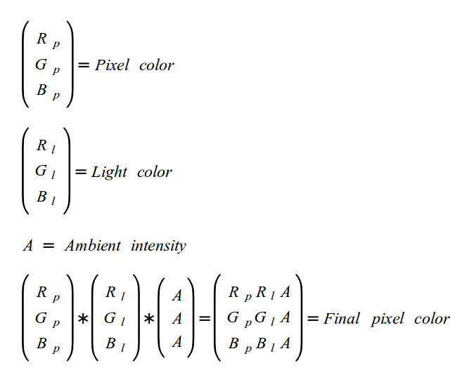
In this tutorial code sample you will be able to play with the ‘a’ and ’s’ keys to increase or decrease the intensity of the ambient light and see the effect it has on the textured pyramid from the previous tutorial. This is only the ambient part of a directional light so the direction itself is not yet involved. This will change in the next tutorial when we study diffuse lighting. For now you will see that the pyramid is lit the same regardless of where you look at it.
The ambient light is considered by many as something to be avoided as much as possible. This is because it looks somewhat artificial and the simplicity of implementation doesn’t contribute much to the realism of the scene. By using advanced methods such as global illumination one can eliminate the need for ambient light because the light that reflects off objects and hits other objects can also be taken into account. Since we are not there yet you will usually need some small amount of ambient light to avoid cases where one side of an object is lit and the other is in complete darkness. At the end of the day getting light to look good invloves a lot of playing with the parameters and tune-work.
Source walkthru
Our code samples are growing more complex over time and this trend will continue. In this tutorial, in addition to implementing ambient lighting, we also do a major restructure of the code. This will put the code in a better position for the tutorials ahead. The major changes are:
- Encapsulating shader manangement in the Technique class. This includes activities such as compilation and linkage. From now on we will be implementing our visual effects in classes that are derived from the Technique class.
- Moving of GLUT initialization and callback management into the GLUTBackend component. This component registers itself to receive callback calls from GLUT and forwards them to the application using a C++ interface called ICallbacks.
- Moving the global functions and variables in the main cpp file into a class that can be considered “the application”. In the future we will extend this into a base class for all applications which will provide common functionality for all. This approach is very popular in many game engines and frameworks.
Most of the code in this tutorial (except the lighting specific code) is not new and has simply been rearranged according to the above design principles. Therefore, only the new headers files are reviewed.
(glut_backend.h:24)
1void GLUTBackendInit(int argc, char** argv);
2
3bool GLUTBackendCreateWindow(unsigned int Width, unsigned int Height, unsigned int bpp, bool isFullScreen, const char* pTitle);
A lot of the GLUT specific code has been moved to a “GLUT backend” component which makes it easier to initialize GLUT and create a window using the above simple functions.
(glut_backend.h:28)
1void GLUTBackendRun(ICallbacks* pCallbacks);
After GLUT is initialized and a window is created the next step is to execute GLUT main loop using the above wrapper function. The new addition here is the ICallbacks interface which helps in registering GLUT callback functions. Instead of having each application register the callbacks on its own the GLUT backend component registers its own private functions and delivers the event to the object specified in the call to the function above. The main application class will often implement this interface on its own and simply pass itself as a paramemter in the call to GLUTBackendRun. This approach was selected for this tutorial too.
(technique.h:25)
1class Technique
2{
3public:
4 Technique();
5 ~Technique();
6 virtual bool Init();
7 void Enable();
8
9protected:
10 bool AddShader(GLenum ShaderType, const char* pShaderText);
11 bool Finalize();
12 GLint GetUniformLocation(const char* pUniformName);
13
14private:
15 GLuint m_shaderProg;
16
17 typedef std::list<GLuint> ShaderObjList;
18 ShaderObjList m_shaderObjList;
19};
In the previous tutorials all the grind work of compiling and linking the shaders was part of the application responsibility. The Technique class helps by wrapping the common functionality into itself and allowing derived class to focus on the core of the effect (a.k.a the ‘Technique’).
Each technique must first be initialized by calling the Init() function. The derived technique must call Init() of the base class (which creates the OpenGL program object) and can add its own private initialization here.
After a Technique object is created and initialized the usual sequence is for the derived technique class to call the protected function AddShader() on as many GLSL shaders (provided in a character array) as needed. Lastly, Finalize() is called to link the objects. The function Enable() is actually a wrapper for glUseProgram() so it must be called whenever switching a technique and calling the draw function.
This class tracks the intermediate compiled objects and after linking deletes them using glDeleteShader(). This helps in reducing the amount of resources your application is consuming. For better performance OpenGL applications often compile all shaders during load time and not during run time. By removing the objects immediately after linking you help keep the OpenGL resources consumed by your app low. The program object itself is deleted in the destructor using glDeleteProgram().
(tutorial17.cpp:49)
1class Tutorial17 : public ICallbacks
2{
3public:
4 Tutorial17()
5 {
6 ...
7 }
8
9 ~Tutorial17()
10 {
11 ...
12 }
13
14 bool Init()
15 {
16 ...
17 }
18
19 void Run()
20 {
21 GLUTBackendRun(this);
22 }
23
24 virtual void RenderSceneCB()
25 {
26 ...
27 }
28
29 virtual void IdleCB()
30 {
31 ...
32 }
33
34 virtual void SpecialKeyboardCB(int Key, int x, int y)
35 {
36 ...
37 }
38
39 virtual void KeyboardCB(unsigned char Key, int x, int y)
40 {
41 ...
42 }
43
44 virtual void PassiveMouseCB(int x, int y)
45 {
46 ...
47 }
48
49private:
50 void CreateVertexBuffer()
51 {
52 ...
53 }
54
55 void CreateIndexBuffer()
56 {
57 ...
58 }
59
60 GLuint m_VBO;
61 GLuint m_IBO;
62 LightingTechnique* m_pEffect;
63 Texture* m_pTexture;
64 Camera* m_pGameCamera;
65 float m_scale;
66 DirectionalLight m_directionalLight;
67};
This is a skeleton of the main application class which encapsulates the remaining code we are already familiar with. Init() takes care of creating the effect, loading the texture and creating the vertex/index buffers. Run() calls GLUTBackendRun() and passes the object itself as a parameter. Since the class implements the ICallbacks interface all the GLUT events end up in the proper methods of the class. In addition, all the variables that were previously part of the global section of the file are now private attributes in the class.
(lighting_technique.h:25)
1struct DirectionalLight
2{
3 Vector3f Color;
4 float AmbientIntensity;
5};
This is the beginning of the defintion of the directional light. Right now, only the ambient part exists and the direction itself is still absent. We will add the direction in the next tutorial when we review diffuse lighting. The structure contains two fields - a color and an ambient intensity. The color determines what color channels of the objects can be reflected back and in what intensity. For example, if the color is (1.0, 0.5, 0.0) then the red channel of the object will be reflected fully, the green channel will be scaled down by half and the blue channel will be dropped completely. This is because an object can only reflect the incoming light (light sources are different - they emit light and need to be handled separately). In the case of the sun the usual color would be pure white (1.0, 1.0, 1.0).
The AmbientIntensity specifies how dim or bright is the light. You can have a pure white light with intensity of 1.0 so that the object is full lit or an intensity of 0.1 which means the object will be visible but appear very dim.
(lighting_technique.h:31)
1class LightingTechnique : public Technique
2{
3public:
4 LightingTechnique();
5
6 virtual bool Init();
7
8 void SetWVP(const Matrix4f& WVP);
9 void SetTextureUnit(unsigned int TextureUnit);
10 void SetDirectionalLight(const DirectionalLight& Light);
11
12private:
13 GLuint m_WVPLocation;
14 GLuint m_samplerLocation;
15 GLuint m_dirLightColorLocation;
16 GLuint m_dirLightAmbientIntensityLocation;
17};
Here is the first example of the usage of the Technique class. LightingTechnique is a derived class that implements lighting using the common functionality of compiling and linking provided by the base class. The Init() function must be called after the object is created. It simply calls Technique::AddShader() and Techique::Finalize() to generate the GLSL program.
(lighting.fs)
1#version 330
2
3in vec2 TexCoord0;
4
5out vec4 FragColor;
6
7struct DirectionalLight
8{
9 vec3 Color;
10 float AmbientIntensity;
11};
12
13uniform DirectionalLight gDirectionalLight;
14uniform sampler2D gSampler;
15
16void main()
17{
18 FragColor = texture2D(gSampler, TexCoord0.xy) *
19 vec4(gDirectionalLight.Color, 1.0f) *
20 gDirectionalLight.AmbientIntensity;
21}
The vertex shader remains unchanged in this tutorial. It keeps passing the position (after having multiplied it by the WVP matrix) and the texture coordinates. All the new logic goes into the fragment shader. The new addition here is the use of the ‘struct’ keyword to define the directional light. As you can see, this keyword is used in practically the same way as in C/C++. The structure is identical to the one we have in the application code and we must keep it that way so that the application and the shader can communicate.
There is now a new uniform variable of the DirectionalLight type that the application needs to update. This variable is used in the calculation of the final pixel color. As before, we sample the texture to get the base color. We then multiply it by the color and ambient intensity, per the formula above. This concludes the calculation of the ambient light.
(lighting_technique.cpp:44)
1m_WVPLocation = GetUniformLocation("gWVP");
2m_samplerLocation = GetUniformLocation("gSampler");
3m_dirLightColorLocation = GetUniformLocation("gDirectionalLight.Color");
4m_dirLightAmbientIntensityLocation = GetUniformLocation("gDirectionalLight.AmbientIntensity");
In order to access the DirectionalLight uniform variable from the application you must get the location of both of its fields independently. The LightingTechnique class has four GLuint location variables in order to access the uniforms in the vertex and the fragment shader. The WVP and sampler locations are fetched in the familiar way. The color and ambient intensity are fetched in the way that we see above - by specifying the name of the uniform variable in the shader followed by a dot and then the name of the field in the structure itself. Setting the value of these variables is done in the same way as any other variable. The LightingTechnique class provides two methods to set the directional light and the WVP matrix. The Tutorial17 class calls them prior to each draw to update the values.
This tutorial allows you to play with the ambient intensity using the ‘a’ and ’s’ keys that increase and decrease it, respectively. Follow the KeyboardCB() function in the Tutorial17 class to see how this is done.
For more information on this subject check out the following video tutorial by Frahaan Hussain.
Tutorial 18:Diffuse Lighting
Background
The main difference between ambient light and diffuse light is the fact that diffuse light is dependent on the direction of the rays of light while ambient light ignores it completely. When only ambient light is present the entire scene is equally lit. Diffuse light makes the parts of objects that face the light brighter than the parts that are opposite from it.
Diffuse light also adds a twist where the angle by which the light strikes the surface determines the brightness of that surface. This concept is demonstrated by the following picture:
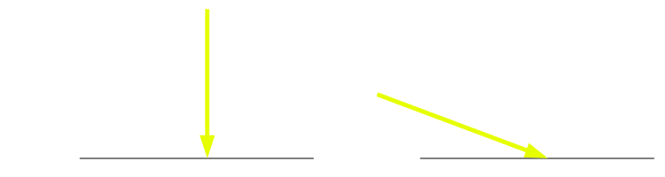
Let’s assume that the strength of both light rays is the same and the only difference is their direction. The model of diffuse light says that the surface on the left will be brighter than the surface on the right because the surface on the right is hit at a sharper angle than the surface on the left. In fact, the surface on the left will be the brightest possible because the light there hits at an angle of 90 degrees.
The model of diffuse light is actually based on Lambert’s cosine law that says that the intensity of light reflected from a surface is directly proportional to the cosine of the angle between the observer’s line of sight and the surface normal. Note that we changed this a bit by using the direction of light instead of the observer’s line of sight (which we will use in specular light).
To calculate the intensity of light in the diffuse model we are going to simply use the cosine of the angle between the light and the surface normal (whereas Lambert’s law refers to the more general concept of ‘directionaly proportional’). Consider the following picture:
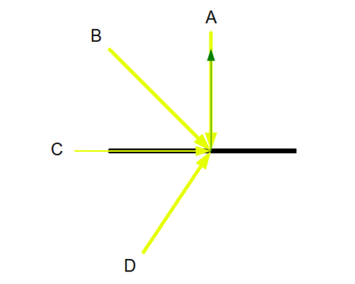
We see four light rays hitting the surface at different angles. The surface normal is the green arrow pointing out from the surface. Light ray A has the greatest strength. The angle between A and the normal is zero and the cosine of zero is 1. This means that after we multiply the intensity of light (three channels of 0 to 1) by the color of the surface we will multiply by 1. We can’t get any better than this with diffuse light. Light ray B hits the surface at an angle between 0 and 90. This means that the angle between B and the normal is also between 0 and 90 and the cosine of that angle is between 0 and 1. We will scale the result of the multiplication above by the cosine of that angle which means the intensity of light will definitely be less than light ray A.
Things become different with light rays C and D. C hits the surface directly from the side, at an angle of 0. The angle between C and the normal is exactly 90 degrees and the cosine is 0. This results in C having no effect on lighting the surface at all! The angle between D and the normal is obtuse which means the cosine is some negative number which is smaller than 0 and larger or equal to -1. The end result is the same as C - no effect on the surface brightness.
From this discussion we draw an important conclusion - in order to have any effect on the brightness of a surface the light must hit the surface such that the angle between it and the surface normal will be greater or equal to zero and up to (but not including!) 90 degrees.
We see that the surface normal plays an important part in the calculation of diffuse light. The examples above were very simple - the surface was a single line and there was only one normal to consider. In the real world we have objects that are composed of multiple polygon and the normal of each polygon is a bit different than the one next to it. Here’s an example:
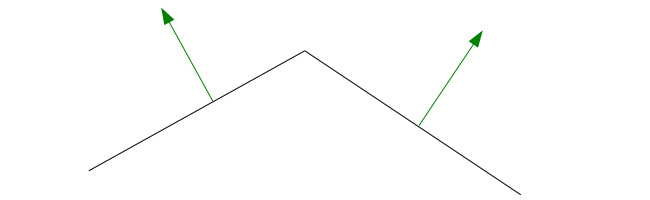
Since the normal is the same across the face of a polygon, it is enough to calculate the diffuse light in the vertex shader. All the three vertices in a triangle would have the same color and this will be the color of the entire triangle. However, this won’t look too good. We will have a bunch of polygons where each one has a particular color which is slightly different than the one next to it and we will see how color breaks at the edges. This can definitely be improved.
The trick is to use a concept known as a ‘vertex normal’. A vertex normal is the average of the normals of all the triangles that share the vertex. Instead of having the vertex shader calculate the diffuse light we only pass through the vertex normal as an attribute to the fragment shader and nothing more. The rasterizer will get three different normals and will need to interpolate between them. The fragement shader will be invoked for each pixel with the specific normal for this pixel. We can then calculate the diffuse light at the pixel level using that specific normal. The result will be a lighting effect which nicely changes across the triangle face and between neighboring triangles. This technique is known as Phong Shading. Here’s how the vertex normals look like after interpolation:

You may find the pyramid model that we have been using in the last few tutorials a bit strange looking with those vertex normals and decide to stick with the original normals. This is OK. However, as models become more complex (and we will see that in the future) and their surfaces become smoother I think you will find the vertex normals more appropriate.
The only thing left to worry about is the coordinate space in which diffuse lighting calculations are going to take place. The vertices and their normals are specified in a local coordinate space and are transformed in the vertex shader all the way to clip space by the WVP matrix that we supply to the shader. However, specifying the direction of light in world space is the most logical course of action. After all, the direction of light is the result of some light source which is positioned in the world somewhere (even the sun is located in the “world”, albeit many miles away) and sheds its light in a particular direction. Therefore, we will need to transform the normals to world space before the calculation.
Source walkthru
(lighting_technique.h:25)
1struct DirectionalLight
2{
3 Vector3f Color;
4 float AmbientIntensity;
5 Vector3f Direction;
6 float DiffuseIntensity;
7};
This is the new DirectionalLight structure. There are two new members here: the direction is a 3 dimensional vector specified in world space and the intensity is a floating point number (will be used in the same way as the ambient intensity).
(lighting.vs)
1#version 330
2
3layout (location = 0) in vec3 Position;
4layout (location = 1) in vec2 TexCoord;
5layout (location = 2) in vec3 Normal;
6
7uniform mat4 gWVP;
8uniform mat4 gWorld;
9
10out vec2 TexCoord0;
11out vec3 Normal0;
12
13void main()
14{
15 gl_Position = gWVP * vec4(Position, 1.0);
16 TexCoord0 = TexCoord;
17 Normal0 = (gWorld * vec4(Normal, 0.0)).xyz;
18}
This is the updated vertex shader. We have a new vertex attribute, the normal, that the application will need to supply. In addition, the world transformation has its own uniform variable and we will need to supply it in addition to the WVP matrix. The vertex shader transforms the normal to world space using the world matrix and passes it to the fragment shader. Note how the 3 dimensional normal is extended to a 4 dimensional vector, multiplied by the 4 dimensional world matrix and then reduced back to 3 dimensions using the notation (…).xyz. This capability of the GLSL language is called ‘swizzling’ and allows great flexibility in vector manipulations. For example, if you have a 3 dimensional vector v(1,2,3) you can write: vec4 n = v.zzyy and then vector n will contain (3,3,2,2). Remember that when we extend the normal from 3 to 4 dimensions we must place zero at the fourth component. This nullifies the effect of translation in the world matrix (the fourth column). The reason is that vectors cannot be moved like points. They can only be scaled or rotated.
(lighting.fs:1)
1#version 330
2
3in vec2 TexCoord0;
4in vec3 Normal0;
5
6out vec4 FragColor;
7
8struct DirectionalLight
9{
10 vec3 Color;
11 float AmbientIntensity;
12 float DiffuseIntensity;
13 vec3 Direction;
14};
Here is the beginning of the fragment shader. It now receives the interpolated vertex normal that was transformed by the vertex shader to world space. The DirectionalLight structure was extended to match the one in the C++ code and contains the new light attributes.
(lighting.fs:19)
1void main()
2{
3 vec4 AmbientColor = vec4(gDirectionalLight.Color * gDirectionalLight.AmbientIntensity, 1.0f);
There is no change in the calculation of the ambient color factor. We calculate and store it here and use it in the final formula below.
1 float DiffuseFactor = dot(normalize(Normal0), -gDirectionalLight.Direction);
This is the core of the diffuse light calculation. We calculate the cosine of the angle between the light vector and the normal by doing a dot product between them. There are three things to note here:
- The normal passed from the vertex shader is normalized before it is used. This is because the interpolation the vector went through may have changed its length and it is no longer a unit vector.
- The light direction is reversed. If you think about this for a moment you will see that light that hits a surface at a right angle is actualy 180 degrees away from the surface normal (which simply points back at the light source). By reversing the direction of light in this case we get a vector which equals the normal. Therefore, the angle between them is zero, which is what we want.
- The light vector is not normalized. It will be a waste of GPU resources to normalize the same vector over and over again for all pixels. Instead, we make sure we normalize the vector the application passes is normalized before the draw call is made.
1vec4 DiffuseColor;
2
3if (DiffuseFactor > 0) {
4 DiffuseColor = vec4(gDirectionalLight.Color * gDirectionalLight.DiffuseIntensity * DiffuseFactor, 1.0f);
5}
6else {
7 DiffuseColor = vec4(0, 0, 0, 0);
8}
Here we calculate the diffuse term which depends on the color of light, the diffuse intensity and the direction of light. If the diffuse factor is negative or equals to zero it means that light strikes the surface at an obtuse angle (either “from the side” or “from behind”). In that case the diffuse light has no effect and the DiffuseColor vector is initialized to zero. If the angle is greater than zero we calculate the diffuse color by multiplying the basic light color by the constant diffuse intensity and then scaling the result by the diffuse factor. If the angle between the light and the normal is 0 the diffuse factor will be 1 which will provide the maximum light strength.
1 FragColor = texture2D(gSampler, TexCoord0.xy) * (AmbientColor + DiffuseColor);
2}
This is the final lighting calculation. We add the ambient and diffuse terms and multiply the result by the color which is sampled from the texture. Now you can see that even if diffuse light has no effect on the surface (due to direction), the ambient light can still light it up, if it exists.
(lighting_technique.cpp:144)
1void LightingTechnique::SetDirectionalLight(const DirectionalLight& Light)
2{
3 glUniform3f(m_dirLightLocation.Color, Light.Color.x, Light.Color.y, Light.Color.z);
4 glUniform1f(m_dirLightLocation.AmbientIntensity, Light.AmbientIntensity);
5 Vector3f Direction = Light.Direction;
6 Direction.Normalize();
7 glUniform3f(m_dirLightLocation.Direction, Direction.x, Direction.y, Direction.z);
8 glUniform1f(m_dirLightLocation.DiffuseIntensity, Light.DiffuseIntensity);
9}
This function sets the parameters of the directional light into the shader. It was extended to cover the direction vector and the diffuse intensity. Note that the direction vector is normalized before it is set. The LightingTechnique class also fetches the direction and diffuse intensity uniform locations from the shader as well as the world matrix uniform location. There is also a function to set the world transformation matrix. All this stuff is pretty routine by now and the code is not quoted here. Check the source for more details.
(tutorial18.cpp:35)
1struct Vertex
2{
3 Vector3f m_pos;
4 Vector2f m_tex;
5 Vector3f m_normal;
6
7 Vertex() {}
8
9 Vertex(Vector3f pos, Vector2f tex)
10 {
11 m_pos = pos;
12 m_tex = tex;
13 m_normal = Vector3f(0.0f, 0.0f, 0.0f);
14 }
15};
The updated Vertex structure now includes the normal. It is initialized automatically to zero by the constructor and we have a dedicated function that scans all the vertices and calculates the normals.
(tutorial18.cpp:197)
1void CalcNormals(const unsigned int* pIndices, unsigned int IndexCount, Vertex* pVertices, unsigned int VertexCount)
2{
3 for (unsigned int i = 0 ; i < IndexCount ; i += 3) {
4 unsigned int Index0 = pIndices[i];
5 unsigned int Index1 = pIndices[i + 1];
6 unsigned int Index2 = pIndices[i + 2];
7 Vector3f v1 = pVertices[Index1].m_pos - pVertices[Index0].m_pos;
8 Vector3f v2 = pVertices[Index2].m_pos - pVertices[Index0].m_pos;
9 Vector3f Normal = v1.Cross(v2);
10 Normal.Normalize();
11
12 pVertices[Index0].m_normal += Normal;
13 pVertices[Index1].m_normal += Normal;
14 pVertices[Index2].m_normal += Normal;
15 }
16
17 for (unsigned int i = 0 ; i < VertexCount ; i++) {
18 pVertices[i].m_normal.Normalize();
19 }
20}
This function takes an array of vertices and indices, fetches the vertices of each triangle according to the indices and calculates its normal. In the first loop we only accumulate the normals into each of the three triangle vertices. For each triangle the normal is calculated as a cross product between the two edges that are coming out of the first vertex. Before accumulating the normal in the vertex we make sure we normalize it. The reaons is that the result of the cross product is not guaranteed to be of unit length. In the second loop we scan the array of vertices directly (since we don’t care about the indices any more) and normalize the normal of each vertex. This operation is equivalent to averaging out the accumulated sum of normals and leaves us with a vertex normal that is of a unit length. This function is called before the vertex buffer is created in order to get the calculated vertex normals into the buffer along with the other vertex attributes.
(tutorial18.cpp:131)
1const Matrix4f& WorldTransformation = p.GetWorldTrans();
2m_pEffect->SetWorldMatrix(WorldTransformation);
3...
4glEnableVertexAttribArray(2);
5...
6glVertexAttribPointer(2, 3, GL_FLOAT, GL_FALSE, sizeof(Vertex), (const GLvoid*)20);
7...
8glDisableVertexAttribArray(2);
These are the main changes to the render loop. The pipeline class has a new function that provides the world transformation matrix (in addition to the WVP matrix). The world matrix is calculated as the multiplication of the scaling matrix by the rotation matrix and finally by the translation matrix. We enable and disable the third vertex attribute array and specify the offset of the normal within each vertex in the vertex buffer. The offset is 20 because the normal is preceded by the position (12 bytes) and the texture coordinates (8 bytes).
To complete the demo that we see in this tutorial’s picture we must also specify the diffuse intensity and the light direction. This is done in the constructor of the Tutorial18 class. The diffuse intensity is set to 0.8 and the direction of light is from left to right. The ambient intensity was decreased all the way down to zero to amplify the effect of diffuse light. You can play with the keys ‘z’ and ‘x’ to control the diffuse intensity (as well as ‘a’ and ’s’ from the previous tutorial that governs ambient intensity).
Mathematical note
There are many sources online that tell you that you need the transpose of the inverse of the world matrix in order to transform the normal vector. This is correct, however, we usually don’t need to go that far. Our world matrices are always orthogonal (their vectors are always orthogonal). Since the inverse of an orthogonal matrix is equal to its transpose, the transpose of the inverse is actually the transpose of the transpose, so we end up with the original matrix. As long as we avoid doing distortions (scaling one axis differently than the rest) we are fine with the approach I presented above.
For more information on this subject check out the following video tutorial by Frahaan Hussain.
Tutorial 19:Specular Lighting
Background
When we calculated ambient lighting the only factor was the strength of light. Then we progressed to diffuse lighting which added the direction of light into the equation. Specular lighting includes these factors and adds a new element into the mix - the position of the viewer. The idea is that when light strikes a surface at some angle it is also reflected away at the same angle (on the other side of the normal). If the viewer is located exactly somewhere along the way of the reflected light ray it receives a larger amount of light than a viewer who is located further away.
The end result of specular lighting is that objects will look brighter from certain angles and this brightness will diminish as you move away. The perfect real world example of specular lighting is metallic objects. These kinds of objects can sometimes be so bright that instead of seeing the object in its natural color you see a patch of shining white light which is reflected directly back at you. However, this type of quality which is very natural for metals is absent in many other materials (e.g. wood). Many objects simply don’t shine, regardless of the where the light is coming from and where the viewer is standing. The conclusion is that the specular factor depends more on the object, rather than the light itself.
Let’s see how we can bring in the viewer location into the calculation of specular light. Take a look at the following picture:
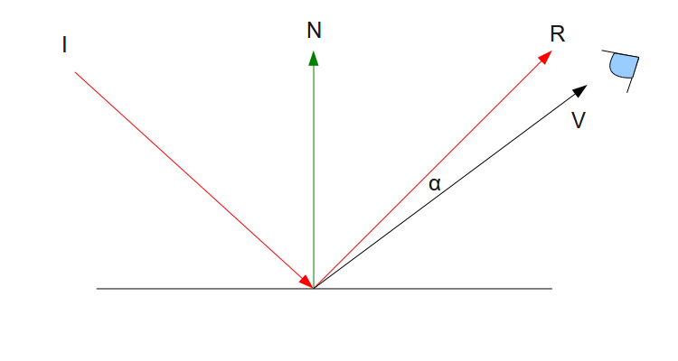
There are five things we need to pay attention to:
- ‘I’ is the incident light that hits the surface (and generates the diffuse light).
- ‘N’ is the surface normal.
- ‘R’ is the ray of light which is reflected back from the surface. It is symmetric across the normal from ‘I’ but its general direction is reversed (it points “up” and not “down”).
- ‘V’ is the vector from the point on the surface where the light hits to the ’eye’ (which represents the viewer).
- ‘α’ is the angle which is created by the vectors ‘R’ and ‘V’.
We are going to model the phenomenon of specular light using the angle ‘α’. The idea behind specular light is that the strength of the reflected light is going to be at its maximum along the vector ‘R’. In that case ‘V’ is identical to ‘R’ and the angle is zero. As the viewer starts moving away from ‘R’ the angle grows larger. We want the effect of light to gradually decrease as the angle grows. By now you can probably guess that we are going to use the dot product operation again in order to calculate the cosine of ‘α’. This will serve as our specular factor in the lighting formula. When ‘α’ is zero the cosine is 1 which is the maximum factor that we can get. As ‘α’ is decreased the cosine becomes smaller until ‘α’ reaches 90 degrees where the cosine is zero and there is absolutely no specular effect. When ‘α’ is more than 90 degrees the cosine is negative and there is also no specular effect. This means that the viewer is absolutely not in the path of the reflected ray of light.
To calculate ‘α’ we will need both ‘R’ and ‘V’. ‘V’ can be calculating by substracting the location of the point where the light hits in world space from the location of the viewer (also in world space). Since our camera is already maintained in world space we only need to pass its position to the shader. Since the image above is simplified, there is a single point there where the light hits. In reality, the entire triangle is lit (assuming it is facing the light). So we will calculate the specular effect for every pixel (same as we did with diffuse light) and for that we need the location of the pixel in world space. This is also simple - we can transform the vertices into world space and let the rasterizer interpolate the world space position of the pixel and provide us the result in the fragment shader. Actually, this is the same as the handling of the normal in the previous tutorial.
The only thing left is to calculate the reflected ray ‘R’ using the vector ‘I’ (which is provided by the application to the shader). Take a look at the following picture:
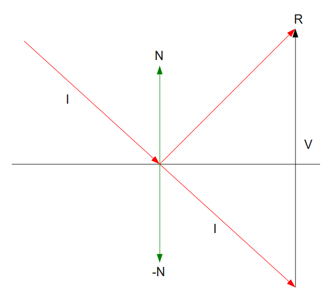
Remember that a vector doesn’t really have a starting point and all vectors that have the same direction and magnitude are equal. Therefore, the vector ‘I’ was copied “below” the surface and the copy is identical to the original. The target is to find the vector ‘R’. Based on the rules of vector addition ‘R’ is equal to ‘I’+‘V’. ‘I’ is already known so all we have to do is find out ‘V’. Note that the opposite of the normal ‘N’ also appears as ‘-N’ and using a dot product operation between ‘I’ and ‘-N’ we can find the magnitude of the vector which is created when ‘I’ is projected on ‘-N’. This magnitude is exactly half the magnitude of ‘V’. Since ‘V’ has the same direction as ‘N’ we can calculate ‘V’ by multiplying ‘N’ (whose length is 1.0) by twice that magnitude. To summarize:

Now that you understand the math it is time to let you in on a little secret - GLSL provides an internal function called ‘reflect’ that does exactly this calculation. See below how it is used in the shader.
Let’s finalize the formula of specular light:

We start by multiplying the color of light by the color of the surface. This is the same as with ambient and diffuse light. The result is multiplied by the specular intensity of the material (‘M’). A material which does not have any specular property (e.g. wood) would have a specular intensity of zero which will zero out the result of the equation. Shinier stuff such as metal can have increasingly higher levels of specular intensity. After that we multiply by the cosine of the angle between the reflected ray of light and the vector to the eye. Note that this last part is raised to the power of ‘P’. ‘P’ is called the ‘specular power’ or the ‘shininess factor’. Its job is to intensify and sharpen the edges if the area where the specular light is present. The following picture shows the effect of the specular power when it is set to 1:
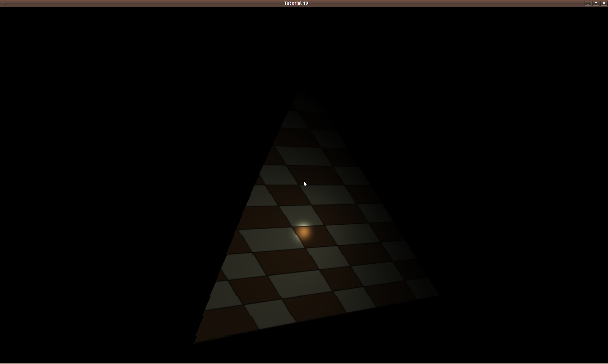
While the following shows a specular exponent of 32:
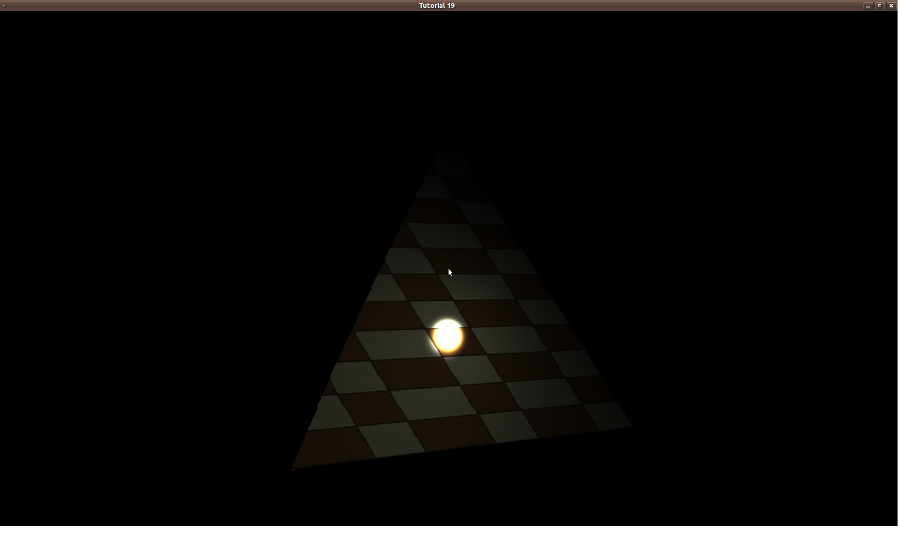
The specular power is also considered as an attribute of the material so different objects will have different specular power values.
Source walkthru
(lighting_technique.h:32)
1class LightingTechnique : public Technique
2{
3public:
4...
5 void SetEyeWorldPos(const Vector3f& EyeWorldPos);
6 void SetMatSpecularIntensity(float Intensity);
7 void SetMatSpecularPower(float Power);
8
9private:
10...
11 GLuint m_eyeWorldPosLocation;
12 GLuint m_matSpecularIntensityLocation;
13 GLuint m_matSpecularPowerLocation;
There are three new attributes in the LightingTechnique - eye position, specular intensity and power of the material. All three are indepedent from the light itself. The reason is that when the same light falls on two different materials (e.g. metal and wood) each of them shines in a different way. The current usage model of the two material attributes is a bit limiting. All the triangles that are part of the same draw call get the same values for these attributes. This can be a bit annoying when the triangles represent different parts of the model with different material properties. When we get to the mesh loading tutorials we will see that we can generate different specular values in a modeler software and make them part of the vertex buffer (instead of a parameter to the shader). This will allow us to process triangles with different specular lighting in the same draw call. For now the simple approach will do (as an exercise you can try adding specular intensity and power to the vertex buffer and access it in the shader).
(lighting.vs:12)
1out vec3 WorldPos0;
2
3void main()
4{
5 gl_Position = gWVP * vec4(Position, 1.0);
6 TexCoord0 = TexCoord;
7 Normal0 = (gWorld * vec4(Normal, 0.0)).xyz;
8 WorldPos0 = (gWorld * vec4(Position, 1.0)).xyz;
9}
The vertex shader above includes just one new line (the last one). The world matrix (which we added in the previous tutorial in order to transform the normal) is now used to pass the world position of the vertex to the fragment shader. We see an interesting technique here of transforming the same vertex position (provided in local space) using two different matrices and passing the results indepedently to the fragment shader. The result of the full transformation (world-view-projection matrix) goes into the formal system variable ‘gl_Position’ and the GPU takes care of transforming it to a screen space coordinate and using it for the actual rasterization. The result of the “partial” transformation (only to world space) goes into a user defined attributes which is simply interpolated during rasterization so every pixel for which the fragment shader is invoked is provided its own world space position value. This technique is very common and useful.
(lighting.fs:5)
1in vec3 WorldPos0;
2.
3.
4.
5uniform vec3 gEyeWorldPos;
6uniform float gMatSpecularIntensity;
7uniform float gSpecularPower;
8
9void main()
10{
11 vec4 AmbientColor = vec4(gDirectionalLight.Color * gDirectionalLight.AmbientIntensity, 1.0f);
12 vec3 LightDirection = -gDirectionalLight.Direction;
13 vec3 Normal = normalize(Normal0);
14
15 float DiffuseFactor = dot(Normal, LightDirection);
16
17 vec4 DiffuseColor = vec4(0, 0, 0, 0);
18 vec4 SpecularColor = vec4(0, 0, 0, 0);
19
20 if (DiffuseFactor > 0) {
21 DiffuseColor = vec4(gDirectionalLight.Color, 1.0f) *
22 gDirectionalLight.DiffuseIntensity *
23 DiffuseFactor;
24
25 vec3 VertexToEye = normalize(gEyeWorldPos - WorldPos0);
26 vec3 LightReflect = normalize(reflect(gDirectionalLight.Direction, Normal));
27 float SpecularFactor = dot(VertexToEye, LightReflect);
28 if (SpecularFactor > 0) {
29 SpecularFactor = pow(SpecularFactor, gSpecularPower);
30 SpecularColor = vec4(gDirectionalLight.Color * gMatSpecularIntensity * SpecularFactor, 1.0f);
31 }
32 }
33 FragColor = texture2D(gSampler, TexCoord0.xy) * (AmbientColor + DiffuseColor + SpecularColor);
34}
There are several changes in the fragment shader. There are now three new uniform variables that store the attributes required for calculating specular light (eye pos, specular intensity and power). The ambient color is calculated in the same way as the two previous tutorials. Then the diffuse and specular color vectors are created and initialize to zero. They both have a value different then zero only when the angle between the light and the surface is less than 90 degrees. This is checked using the diffuse factor (same as in the diffuse lighting tutorial).
The next step is to calculate the vector from the vertex in world space to the viewer location (also in world space). We do this by substracting the world position of the vertex from the eye position which is a uniform variable and identical for all pixels. This vector is normalized to make it ready for the dot product operation. After that the reflected light vector is calculated using the built-in function ‘reflect’ (you may also try to calculate it manually based on the description above). This function take two parameters - the light vector and the surface normal. The important thing here is to use the original light vector which goes towards the surface and not the reversed one which was used for the diffuse factor calculation. This is obvious from the diagram above. Next we calculate the specular factor as the cosine of the angle between the reflected ray of light and the vector from the vertex to the viewer (again using a dot product operation).
The specular effect is noticeable only if that angle is less than 90 degrees. Therefore, we check if the result of the last dot product operation is greater than zero. The final specular color is calculated by multiplying the color of light by the specular intensity of the material and the specular factor. We add the specular color to the ambient and diffuse color to create the total color of light. This is multiplied by the sampled color from the texture and provides the final color of the pixel.
(tutorial19.cpp:134)
1m_pEffect->SetEyeWorldPos(m_pGameCamera->GetPos());
2m_pEffect->SetMatSpecularIntensity(1.0f);
3m_pEffect->SetMatSpecularPower(32);
Using the specular color is very simple. In the render loop we grab the camera position (which is already maintained in world space) and pass it to the lighting technique. We also set the specular intensity and power. All the rest is handled by the shader.
Play with different specular values and light direction to see their effect. You may need to circle around the object to get into a position where the specular light is visible.
For more information on this subject check out the following video tutorial by Frahaan Hussain.
Tutorial 20:Point Light
Background
We have studied the three basic light models (ambient, diffuse and specular) under the umbrella of directional light. Directional light is a light type which is characterized by a single direction vector and the lack of any origin. Therefore, it doesn’t grow weaker with distance (in fact, you can’t even define its distance from its target). We are now going to review the point light type which has both an origin as well as a fading effect which grows stronger as objects move away from it. The classic example for a point light is the light blub. You can’t feel the fading effect when the light bulb is inside a standard room but take it outside and you will quickly see how limited its strength is. Notice that the direction of light which is constant across the scene for directional light becomes dynamic with point light. That’s because a point light shines in all directions equally so the direction must be calculated per object by taking the vector from the object towards the point light origin. That is why we specify the origin rather than the direction for point lights.
The fading effect of point lights is usually called ‘attenuation’. The attenuation of a real light is governed by the inverse-square law that says that the strength of light is inversely proportional to the square of the distance from the source of light. This is described in mathematical terms by the following formula:

This formula doesn’t provide good looking results in 3D graphics. For example, as the distance becomes smaller the strength of light approaches infinity. In addition, the developer has no control over the results except for setting the initial strength of light. This is too limiting. Therefore, we add a few factors to the formula to make it more flexible:

We’ve added three light attenuation factors to the denominator. A constant factor, a linear factor and an exponential factor. The physically accurate formula is achieved when setting the constant and linear factors to zero and the exponential factor to 1. You may find it useful to set the constant factor to 1 and the other two factors to a much smaller fraction. When setting the constant factor to one you basically guarantee that the strength of light will reach maximum (actually, what you configure it to be in the program) at distance zero and will decrease as distance grows because the denominator will become greater than one. As you fine tune the linear and exponential factors you will reach the desired effect of light which rapidly or slowly fades with distance.
Let’s summarize the steps required for the calculation of point light:
- Calculate the ambient term the same as in directional light.
- Calculate the light direction as the vector going from the pixel (in world space) to the point light origin. You can now calculate the diffuse and specular terms the same as in directional light but using this light direction.
- Calculate the distance from the pixel to the light origin and use it to reach the total attenuation value.
- Add the three light terms together and divide them by the attenuation to reach the final point light color.
Source walkthru
(lighting_technique.h:24)
1struct BaseLight{
2 Vector3f Color;
3 float AmbientIntensity;
4 float DiffuseIntensity;
5};
6.
7.
8.
9struct PointLight : public BaseLight
10{
11 Vector3f Position;
12
13 struct
14 {
15 float Constant;
16 float Linear;
17 float Exp;
18 } Attenuation;
19}
Despite their differences, directional and point lights still have much in common. This common stuff has been moved to the BaseLight structure that both light types are now derived from. The directional light adds the direction in its concrete class while point light adds position (in world space) and the three attenuation factors.
(lighting_technique.h:81)
1void SetPointLights(unsigned int NumLights, const PointLight* pLights);
In addition to demonstrating how to implement a point light, this tutorial also shows how to use multiple lights. The assumption is that there will usually be a single directional light (serving as the “sun”) and/or possibly several point light sources (light bulbs in a rooms, torches in a dungeon, etc). This function takes an array of PointLight structures and the array size and updates the shader with their values.
(lighting_technique.h:103)
1struct {
2 GLuint Color;
3 GLuint AmbientIntensity;
4 GLuint DiffuseIntensity;
5 GLuint Position;
6 struct
7 {
8 GLuint Constant;
9 GLuint Linear;
10 GLuint Exp;
11 } Atten;
12} m_pointLightsLocation[MAX_POINT_LIGHTS];
In order to support multiple point lights the shader contains an array of structures identical to struct PointLight (only in GLSL). There are basically two methods to update an array of structures in shaders:
- You can get the location of each structure field in each of the array elements (e.g. array of 5 structures with 4 fields each leads to 20 uniform locations) and set the value of each field in each element seperately.
- You can get the location of the fields only in the first array element and use a GL function that sets an array of variables for each specific field attribute type. For example, if the first field is a float and the second is an integer you can set all the values of the first field by passing an array of floats in one call and set the second field by with an array of integers in the second call.
The first method is more wasteful in terms of the number of uniform locations you must maintain but is more flexible to use. It allows you to update any variable in the entire array by simply accessing its location and does not require you to transform your input data as the second method does.
The second method requires less uniform location management but if you want to update several array elements at once and your user passes an array of structures (as in SetPointLights()) you will need to transform it into a structure of arrays since each uniform location will need to be updated by an array of variables of the same type. When using an array of structures there is a gap in memory between the same field in two consecutive array elements which requires you to gather them into their own array. In this tutorial we will use the first method. You should play with both and decide what works best for you.
MAX_POINT_LIGHTS is a constant value that limits the maximum number of point lights that can be used and must be synchronized with the corresponding value in the shader. The default value is 2. As you increase the number of lights in your application you may end up with a performance problem that becomes worse as the number of lights grows. This problem can be mitigated using a technique called ‘deferred shading’ which will be explored in the future.
(lighting.fs:46)
1vec4 CalcLightInternal(BaseLight Light, vec3 LightDirection, vec3 Normal)
2{
3 vec4 AmbientColor = vec4(Light.Color, 1.0f) * Light.AmbientIntensity;
4 float DiffuseFactor = dot(Normal, -LightDirection);
5
6 vec4 DiffuseColor = vec4(0, 0, 0, 0);
7 vec4 SpecularColor = vec4(0, 0, 0, 0);
8
9 if (DiffuseFactor > 0) {
10 DiffuseColor = vec4(Light.Color * Light.DiffuseIntensity * DiffuseFactor, 1.0f);
11 vec3 VertexToEye = normalize(gEyeWorldPos - WorldPos0);
12 vec3 LightReflect = normalize(reflect(LightDirection, Normal));
13 float SpecularFactor = dot(VertexToEye, LightReflect);
14 if (SpecularFactor > 0) {
15 SpecularFactor = pow(SpecularFactor, gSpecularPower);
16 SpecularColor = vec4(Light.Color * gMatSpecularIntensity * SpecularFactor, 1.0f);
17 }
18 }
19
20 return (AmbientColor + DiffuseColor + SpecularColor);
21}
It should not come as a big surprise that we can share quite a lot of shader code between directional light and point light. Most of the algorithm is the same. The difference is that we need to factor in the attenuation only for the point light. In addition, the light direction is provided by the application in the case of directional light and must be calculated per pixel for point light.
The function above encapsulates the common stuff between the two light types. The BaseLight structure contains the intensities and the color. The LightDirection is provided seperately because of the reason above. The vertex normal is also provided because we normalize it once when entering the fragment shader and then use it in multiple calls to this function.
(lighting.fs:70)
1vec4 CalcDirectionalLight(vec3 Normal)
2{
3 return CalcLightInternal(gDirectionalLight.Base, gDirectionalLight.Direction, Normal);
4}
With the common function in place, the function to calculate the directional light simply becomes its wrapper, taking most of its arguments from the global variables.
(lighting.fs:75)
1vec4 CalcPointLight(int Index, vec3 Normal)
2{
3 vec3 LightDirection = WorldPos0 - gPointLights[Index].Position;
4 float Distance = length(LightDirection);
5 LightDirection = normalize(LightDirection);
6
7 vec4 Color = CalcLightInternal(gPointLights[Index].Base, LightDirection, Normal);
8 float Attenuation = gPointLights[Index].Atten.Constant +
9 gPointLights[Index].Atten.Linear * Distance +
10 gPointLights[Index].Atten.Exp * Distance * Distance;
11
12 return Color / Attenuation;
13}
Calculating point light is just a bit more complex than directional light. This function will be called for every configured point light so it takes the light index as a parameter and uses it to index into the global array of point lights. It calculated the vector from the light source (provided in world space by the application) to the world space position passed by the vertex shader. The distance from the point light to the pixel is calculated using the built-in function length(). Once we have the distance we normalize the light direction vector. Remember that CalcLightInternal() expects it to be normalized and in the case of directional light the LightingTechnique class takes care of it. We get the color back from CalcInternalLight() and using the distance that we got earlier we calculate the attenuation. The final point light color is calculated by dividing the color that we have by the attenuation.
(lighting.fs:89)
1void main()
2{
3 vec3 Normal = normalize(Normal0);
4 vec4 TotalLight = CalcDirectionalLight(Normal);
5
6 for (int i = 0 ; i < gNumPointLights ; i++) {
7 TotalLight += CalcPointLight(i, Normal);
8 }
9
10 FragColor = texture2D(gSampler, TexCoord0.xy) * TotalLight;
11}
Once we get all the infrastructure in place the fragment shader becomes very simple. It simply normalizes the vertex normal and then accumulates the results of all light types together. The result is multiplied by the sampled color and is used as the final pixel color.
(lighting_technique.cpp:279)
1void LightingTechnique::SetPointLights(unsigned int NumLights, const PointLight* pLights)
2{
3 glUniform1i(m_numPointLightsLocation, NumLights);
4
5 for (unsigned int i = 0 ; i < NumLights ; i++) {
6 glUniform3f(m_pointLightsLocation[i].Color, pLights[i].Color.x, pLights[i].Color.y, pLights[i].Color.z);
7 glUniform1f(m_pointLightsLocation[i].AmbientIntensity, pLights[i].AmbientIntensity);
8 glUniform1f(m_pointLightsLocation[i].DiffuseIntensity, pLights[i].DiffuseIntensity);
9 glUniform3f(m_pointLightsLocation[i].Position, pLights[i].Position.x, pLights[i].Position.y, pLights[i].Position.z);
10 glUniform1f(m_pointLightsLocation[i].Atten.Constant, pLights[i].Attenuation.Constant);
11 glUniform1f(m_pointLightsLocation[i].Atten.Linear, pLights[i].Attenuation.Linear);
12 glUniform1f(m_pointLightsLocation[i].Atten.Exp, pLights[i].Attenuation.Exp);
13 }
14}
This function updates the shader with the point lights values by iterating over the array elements and passing each element’s attribute values one by one. This is the so called “method 1” that was described earlier.
This tutorials demo shows two point lights chasing one another across a field. One light is based on the cosine function while the other on the sine function. The field is a very simple quad made of two triangles. The normal is a straight up vector.
For more information on this subject check out the following video tutorial by Frahaan Hussain.
Tutorial 21:Spot Light
Background
The spot light is the third and final light type that we will review (at least for a little while…). It is more complex than directional light and point light and essentially borrows stuff from both. The spot light has an origin position and is under the effect of attenuation as distance from target grows (as point light) and its light is pointed at a specific direction (as directional light). The spot light adds the unique attribute of shedding light only within a limited cone that grows wider as light moves further away from its origin. A good example for a spot light is the flashlight. Spot lights are very useful when the character in the game you are developing is exploring an underground dungeon or escaping from prison.
We already know all the tools to develop the spot light. The missing piece is the cone effect of this light type. Take a look at the following picture:

The spot light direction is defined as the black arrow that points straight down. We want our light to have an effect only on the area limited within the two red lines. The dot product operation again comes to the rescue. We can define the cone of light as the angle between each of the red lines and the light direction (i.e. half the angle between the red lines). We can take the cosine ‘C’ of that angle and perform a dot product between the light direction ‘L’ and the vector ‘V’ from the light origin to the pixel. If the result of the dot product is larger than ‘C’ (remember that a cosine result grows larger as the angle grows smaller), then the angle between ‘L’ and ‘V’ is smaller than the angle between ‘L’ and the two red lines that define the spot light cone. In that case we want the pixel to receive light. If the angle is larger the pixel does not receive any light from the spot light. In the example above a dot product between ‘L’ and ‘V’ will yield a result which is smaller than the dot product between ‘L’ and either one of the red lines (it is quite obvious that the angle between ‘L’ and ‘V’ is larger than the angle between ‘L’ and the red lines). Therefore, the pixel is outside the cone of light and is not illuminated by the spot light.
If we go with this “receive/doesn’t receive light” approach we will end up with a highly artificial spot light that has a very noticeable edge between its lit and dark areas. It will look like a perfect circle within total darkness (assuming no other light sources). A more realistic looking spot light is one whose light gradually decreases towards the edges of the circle. We can use the dot product that we calculated (in order to determine whether a pixel is lit or not) as a factor. We already know that the dot product will be 1 (i.e. maximum light) when the vectors ‘L’ and ‘V’ are equal. But now we run into some nasty behavior of the cosine function. The spot light angle should not be too large or else the light will be too widespread and we will loose the appearance of a spot light. For example, let’s set the angle at 20 degrees. The cosine of 20 degrees is 0.939, but the range [0.939, 1.0] is too small to serve as a factor. There is not enough room there to interpolate values that the eye will be able to notice. The range [0, 1] will provide much better results.
The approach that we will use is to map the smaller range defined by the spot light angle into the larger range of [0, 1]. Here’s how we do it:

The principle is very simple - calculate the ratio between the smaller range and the larger range and scale the specific range you want to map by that ratio.
Source walkthru
(lighting_technique.h:68)
1struct SpotLight : public PointLight
2{
3 Vector3f Direction;
4 float Cutoff;
5
6 SpotLight()
7 {
8 Direction = Vector3f(0.0f, 0.0f, 0.0f);
9 Cutoff = 0.0f;
10 }
11};
The structure that defines the spot light is derived from PointLight and adds the two attributes that differentiate it from the point light: a direction vector and cutoff value. The cutoff value represents the maximum angle between the light direction and the light to pixel vector for pixels that are under the influence of the spot light. The spot light has no effect beyond the cutoff value. We’ve also added to the LightingTechnique class an array of locations for the shader (not quoted here). This array allows us to access the spot light array in the shader.
(lighting.fs:39)
1struct SpotLight
2{
3 struct PointLight Base;
4 vec3 Direction;
5 float Cutoff;
6};
7...
8uniform int gNumSpotLights;
9...
10uniform SpotLight gSpotLights[MAX_SPOT_LIGHTS];
There is a similar structure for the spot light type in GLSL. Since we cannot use inheritance here as in the C++ code we use the PointLight structure as a member and add the new attributes next to it. The important difference here is that in the C++ code the cutoff value is the angle itself while in the shader it is the cosine of that angle. The shader only cares about the cosine so it is more efficient to calculate it once and not for every pixel. We also define an array of spot lights and use a counter called ‘gNumSpotLights’ to allow the application to define the number of spot lights that are actually used.
(lighting.fs:85)
1vec4 CalcPointLight(struct PointLight l, vec3 Normal)
2{
3 vec3 LightDirection = WorldPos0 - l.Position;
4 float Distance = length(LightDirection);
5 LightDirection = normalize(LightDirection);
6
7 vec4 Color = CalcLightInternal(l.Base, LightDirection, Normal);
8 float Attenuation = l.Atten.Constant +
9 l.Atten.Linear * Distance +
10 l.Atten.Exp * Distance * Distance;
11
12 return Color / Attenuation;
13}
The point light function has gone through a minor modification - it now takes a PointLight structure as a parameter, rather than access the global array directly. This makes it simpler to share it with spot lights. Other than that, there is no change here.
(lighting.cpp:fs)
1vec4 CalcSpotLight(struct SpotLight l, vec3 Normal)
2{
3 vec3 LightToPixel = normalize(WorldPos0 - l.Base.Position);
4 float SpotFactor = dot(LightToPixel, l.Direction);
5
6 if (SpotFactor > l.Cutoff) {
7 vec4 Color = CalcPointLight(l.Base, Normal);
8 return Color * (1.0 - (1.0 - SpotFactor) * 1.0/(1.0 - l.Cutoff));
9 }
10 else {
11 return vec4(0,0,0,0);
12 }
13}
This is where we calculate the spot light effect. We start by taking the vector from the light origin to the pixel. As is often the case, we normalize it to get it ready for the dot product ahead. We do a dot product between this vector and the light direction (which has already been normalized by the application) and get the cosine of the angle between them. We then compare it to the light’s cutoff value. This is the cosine of the angle between the light direction and the vector that defines its circle of influence. If the cosine is smaller it means the angle between the light direction and the light to pixel vector places the pixel outside the circle of influence. In this case the contribution of this spot light is zero. This will limit the spot light to a small or large circle, depending on the cutoff value. If it is the other way around we calculate the base color as if the light is a point light. Then we take the dot product result that we’ve just calculated (‘SpotFactor’) and plug it into the forumla described above. This provides the factor that will linearly interpolate ‘SpotFactor’ between 0 and 1. We multiply it by the point light color and receive the final spot light color.
(lighting.fs:122)
1...
2for (int i = 0 ; i < gNumSpotLights ; i++) {
3 TotalLight += CalcSpotLight(gSpotLights[i], Normal);
4}
5...
In a similar fashion to point lights we have a loop in the main function that accumulates the contribution of all spot lights into the final pixel color.
(lighting_technique.cpp:367)
1void LightingTechnique::SetSpotLights(unsigned int NumLights, const SpotLight* pLights)
2{
3 glUniform1i(m_numSpotLightsLocation, NumLights);
4
5 for (unsigned int i = 0 ; i < NumLights ; i++) {
6 glUniform3f(m_spotLightsLocation[i].Color, pLights[i].Color.x, pLights[i].Color.y, pLights[i].Color.z);
7 glUniform1f(m_spotLightsLocation[i].AmbientIntensity, pLights[i].AmbientIntensity);
8 glUniform1f(m_spotLightsLocation[i].DiffuseIntensity, pLights[i].DiffuseIntensity);
9 glUniform3f(m_spotLightsLocation[i].Position, pLights[i].Position.x, pLights[i].Position.y, pLights[i].Position.z);
10 Vector3f Direction = pLights[i].Direction;
11 Direction.Normalize();
12 glUniform3f(m_spotLightsLocation[i].Direction, Direction.x, Direction.y, Direction.z);
13 glUniform1f(m_spotLightsLocation[i].Cutoff, cosf(ToRadian(pLights[i].Cutoff)));
14 glUniform1f(m_spotLightsLocation[i].Atten.Constant, pLights[i].Attenuation.Constant);
15 glUniform1f(m_spotLightsLocation[i].Atten.Linear, pLights[i].Attenuation.Linear);
16 glUniform1f(m_spotLightsLocation[i].Atten.Exp, pLights[i].Attenuation.Exp);
17 }
18}
This function updates the shader program with an array of SpotLight structures. This is the same as the correspoding function for point lights, with two additions. The light direction vector is also applied to the shader, after it has been normalized. Also, the cutoff value is supplied as an angle by the caller but is passed to the shader as the cosine of that angle (allowing the shader to compare a dot product result directly to that value). Note that the library function cosf() takes the angle in radians so we use the handy macro ToRadian in order to translate it.
For more information on this subject check out the following video tutorial by Frahaan Hussain.
Tutorial 22:Loading models using the Open Asset Import Library
Background
We have made it thus far using manually generated models. As you can imagine, the process of specifying the position and other attributes for each and every vertex in an object does not scale well. A box, pyramid and a simple tiled surface are OK, but what about something like a human face? In the real world of games and commercial applications the process of mesh creation is handled by artists that use modeling programs such as Blender, Maya and 3ds Max. These applications provide advanced tools that help the artist create extremely sophisticated models. When the model is complete it is saved to a file in one of the many available formats. The file contains the entire geometry definition of the model. It can now be loaded into a game engine (provided the engine supports the particular format) and its contents can be used to populate vertex and index buffers for rendering. Knowing how to parse the geometry definition file format and load professional models is crucial in order to take your 3D programming to the next level.
Developing the parser on your own can consume quite a lot of your time. If you want to be able to load models from different sources, you will need to study each format and develop a specific parser for it. Some of the formats are simple but some are very complex and you might end up spending too much time on something which is not exactly core 3D programming. Therefore, the approach persued by this tutorial is to use an external library to take care of parsing and loading the models from files.
The Open Asset Import Library, or Assimp, is an open source library that can handle many 3D formats, including the most popular ones. It is portable and available for both Linux and Windows. It is very easy to use and integrate into programs written in C/C++.
There is not much theory in this tutorial. Let’s dive right in and see how we can integrate Assimp into our 3D programs.
(before you start, make sure you install Assimp from the link above).
Source walkthru
(mesh.h:50)
1class Mesh
2{
3public:
4 Mesh();
5
6 ~Mesh();
7
8 bool LoadMesh(const std::string& Filename);
9
10 void Render();
11
12private:
13 bool InitFromScene(const aiScene* pScene, const std::string& Filename);
14 void InitMesh(unsigned int Index, const aiMesh* paiMesh);
15 bool InitMaterials(const aiScene* pScene, const std::string& Filename);
16 void Clear();
17
18#define INVALID_MATERIAL 0xFFFFFFFF
19
20 struct MeshEntry {
21 MeshEntry();
22
23 ~MeshEntry();
24
25 bool Init(const std::vector& Vertices,
26 const std::vector& Indices);
27
28 GLuint VB;
29 GLuint IB;
30 unsigned int NumIndices;
31 unsigned int MaterialIndex;
32 };
33
34 std::vector m_Entries;
35 std::vector m_Textures;
36};
The Mesh class represents the interface between Assimp and our OpenGL program. An object of this class takes a file name as a parameter to the LoadMesh() function, uses Assimp to load the model and then creates vertex buffers, index bufferss and Texture objects that contain the data of the model in the form that our program understands. In order to render the mesh we use the function Render(). The internal structure of the Mesh class matches the way that Assimp loads models. Assimp uses an aiScene object to represent the loaded mesh. The aiScene object contains mesh structures that encapsulate parts of the model. There must be at least one mesh structure in the aiScene object. Complex models can contain multiple mesh structures. The m_Entries member of the Mesh class is a vector of the MeshEntry struct where each structure corresponds to one mesh structure in the aiScene object. That structure contains the vertex buffer, index buffer and the index of the material. For now, a material is simply a texture and since mesh entries can share materials we have a separate vector for them (m_Textures). MeshEntry::MaterialIndex points into one of the textures in m_Textures.
(mesh.cpp:77)
1bool Mesh::LoadMesh(const std::string& Filename)
2{
3 // Release the previously loaded mesh (if it exists)
4 Clear();
5
6 bool Ret = false;
7 Assimp::Importer Importer;
8
9 const aiScene* pScene = Importer.ReadFile(Filename.c_str(), aiProcess_Triangulate | aiProcess_GenSmoothNormals | aiProcess_FlipUVs | aiProcess_JoinIdenticalVertices);
10
11 if (pScene) {
12 Ret = InitFromScene(pScene, Filename);
13 }
14 else {
15 printf("Error parsing '%s': '%s'\n", Filename.c_str(), Importer.GetErrorString());
16 }
17
18 return Ret;
19}
This function is the starting point of loading the mesh. We create an instance of the Assimp::Importer class on the stack and call its ReadFile function. This function takes two parameters: the full path of the model file and a mask of post processing options. Assimp is capable of performing many useful processing actions on the loaded models. For example, it can generate normals for models that lack them, optimize the structure of the model to improve performance, etc. The full list of options is availabe here. In this tutorial we use the following options:
- aiProcess_Triangulate - translate models that are made from non triangle polygons into triangle based meshes. For example, a quad mesh can be translated into a triangle mesh by creating two triangles out of each quad.
- aiProcess_GenSmoothNormals - generates vertex normals in the case that the original model does not already contain them.
- aiProcess_FlipUVsv - flip the texture coordinates along the Y axis. This was required in order to render the Quake model that was used for the demo correctly.
- aiProcess_JoinIdenticalVertices - use a single copy for each vertex and reference it from multiple indices, if required. Helps save up memory.
Note that the post processing options are basically non overlapping bitmasks so you can combine multiple options by simply ORing their values. You will need to tailor the options that you use according to the input data. If the mesh was loaded successfully, we get a pointer to an aiScene object. This object contains the entire model contents, divided into aiMesh structures. Next we call the InitFromScene() function to initialize the Mesh object.
(mesh.cpp:97)
1bool Mesh::InitFromScene(const aiScene* pScene, const std::string& Filename)
2{
3 m_Entries.resize(pScene->mNumMeshes);
4 m_Textures.resize(pScene->mNumMaterials);
5
6 // Initialize the meshes in the scene one by one
7 for (unsigned int i = 0 ; i < m_Entries.size() ; i++) {
8 const aiMesh* paiMesh = pScene->mMeshes[i];
9 InitMesh(i, paiMesh);
10 }
11
12 return InitMaterials(pScene, Filename);
13}
We start the initialization of the Mesh object by setting up space in the mesh entries and texture vectors for all the meshes and materials we will need. The numbers are available in the aiScene object members mNumMeshes and mNumMaterials, respectively. Next we scan the mMeshes array in the aiScene object and initialize the mesh entries one by one. Finally, the materials are initialized.
(mesh.cpp:111)
1void Mesh::InitMesh(unsigned int Index, const aiMesh* paiMesh)
2{
3 m_Entries[Index].MaterialIndex = paiMesh->mMaterialIndex;
4
5 std::vector Vertices;
6 std::vector Indices;
7 ...
We start the initialization of the mesh by storing its material index. This will be used during rendering to bind the proper texture. Next we create two STL vectors to store the contents of the vertex and index buffers. A STL vector has a nice property of storing its contents in a continuous buffer. This makes it easy to load the data into the OpenGL buffer (using the glBufferData() function).
(mesh.cpp:118)
1const aiVector3D Zero3D(0.0f, 0.0f, 0.0f);
2
3for (unsigned int i = 0 ; i < paiMesh->mNumVertices ; i++) {
4 const aiVector3D* pPos = &(paiMesh->mVertices[i]);
5 const aiVector3D* pNormal = &(paiMesh->mNormals[i]) : &Zero3D;
6 const aiVector3D* pTexCoord = paiMesh->HasTextureCoords(0) ? &(paiMesh->mTextureCoords[0][i]) : &Zero3D;
7
8 Vertex v(Vector3f(pPos->x, pPos->y, pPos->z),
9 Vector2f(pTexCoord->x, pTexCoord->y),
10 Vector3f(pNormal->x, pNormal->y, pNormal->z));
11
12 Vertices.push_back(v);
13}
14...
Here we prepare the contents of the vertex buffer by populating the Vertices vector. We use the following attributes of the aiMesh class:
- mNumVertices - the number of vertices.
- mVertices - an array of mNumVertices vectors that contain the position.
- mNormals - an array of mNumVertices vectors that contain the vertex normals.
- mTextureCoords - an array of mNumVertices vectors that contain the texture coordinates. This is actualy a two dimensional array because each vertex can hold several texture coordinates.
So basically we have three separate arrays that contain everything we need for the vertices and we need to pick out each attribute from its corresponding array in order to build the final Vertex structure. This structure is pushed back to the vertex vector (maintaining the same index as in the three aiMesh arrays). Note that some models do not have texture coordinates so before accessing the mTextureCoords array (and possibly causing a segmentation fault) we check whether texture coordinates exist by calling HasTextureCoords(). In addition, a mesh can contain multiple texture coordinates per vertex. In this tutorial we take the simple way of using only the first texture coordinate. So the mTextureCoords array (which is 2 dimensional) is always accessed on its first row. Therefore, the HasTextureCoords() function is always called for the first row. If a texture coordinate does not exist the Vertex structure will be initialized with the zero vector.
(mesh.cpp:132)
1 for (unsigned int i = 0 ; i < paiMesh->mNumFaces ; i++) {
2 const aiFace& Face = paiMesh->mFaces[i];
3 assert(Face.mNumIndices == 3);
4 Indices.push_back(Face.mIndices[0]);
5 Indices.push_back(Face.mIndices[1]);
6 Indices.push_back(Face.mIndices[2]);
7 }
8 ...
Next we create the index buffer. The mNumFaces member in the aiMesh class tells us how many polygons exist and the array mFaces contains their data (which is indices of the vertices). First we verify that the number of indices in the polygon is indeed 3 (when loading the model we requested that it will get triangulated but it is always good to check this). Then we extract the indices from the mIndices array and push them into the Indices vector.
(mesh.cpp:140)
1 m_Entries[Index].Init(Vertices, Indices);
2}
Finally, the MeshEntry structure is initialized using the vertex and index vectors. There is nothing new in the MeshEntry::Init() function so it is not quoted here. It uses glGenBuffer(), glBindBuffer() and glBufferData() to create and populate the vertex and index buffers. See the source file for more details.
(mesh.cpp:143)
1bool Mesh::InitMaterials(const aiScene* pScene, const std::string& Filename)
2{
3 for (unsigned int i = 0 ; i < pScene->mNumMaterials ; i++) {
4 const aiMaterial* pMaterial = pScene->mMaterials[i];
5 ...
This function loads all the textures that are used by the model. The mNumMaterials attribute in the aiScene object holds the number of materials and mMaterials is an array of pointers to aiMaterials structures (by that size). The aiMaterial structure is a complex beast, but it hides its complexity behind a small number of API calls. In general the material is organized as a stack of textures and between consecutive textures the configured blend and strength function must be applied. For example, the blend function can tell us to add the color from the two textures and the strength function can tell us to multiply the result by half. The blend and strength functions are part of the aiMaterial structure and can be retrieved. To make our life simpler and to match the way our lighting shader currently works we ignore the blend and strength function and simply use the texture as is.
(mesh.cpp:165)
1m_Textures[i] = NULL;
2if (pMaterial->GetTextureCount(aiTextureType_DIFFUSE) > 0) {
3 aiString Path;
4
5 if (pMaterial->GetTexture(aiTextureType_DIFFUSE, 0, &Path, NULL, NULL, NULL, NULL, NULL) == AI_SUCCESS) {
6 std::string FullPath = Dir + "/" + Path.data;
7 m_Textures[i] = new Texture(GL_TEXTURE_2D, FullPath.c_str());
8
9 if (!m_Textures[i]->Load()) {
10 printf("Error loading texture '%s'\n", FullPath.c_str());
11 delete m_Textures[i];
12 m_Textures[i] = NULL;
13 Ret = false;
14 }
15 }
16}
17...
A material can contain multiple textures, and not all of them have to contain colors. For example, a texture can be a height map, normal map, displacement map, etc. Since our lighting shader currently uses a single texture for all the light types we are interested only in the diffuse texture. Therefore, we check how many diffuse textures exist using the aiMaterial::GetTextureCount() function. This function takes the type of the texture as a parameter and returns the number of textures of that specific type. If at least one diffuse texture is available we fetch it using the aiMaterial::GetTexture() function. The first parameter to that function is the type. Next comes the index and we always use 0. After that we need to specify the address of a string where the texture file name will go. Finally, there are five address parameters that allow us to fetch various configurations of the texture such as the blend factor, map mode, texture operation, etc. These are optional and we ignore them for now so we just pass NULL. We are interested only in the texture file name and we concatenate it to the directory where the model is located. The directory was retrieved at the start of the function (not quoted here) and the assumption is that the model and the texture are in the same subdirectory. If the directory structure is more complex you may need to search for the texture elsewhere. We create our texture object as usual and load it.
(mesh.cpp:187)
1 if (!m_Textures[i]) {
2 m_Textures[i] = new Texture(GL_TEXTURE_2D, "../Content/white.png");
3 Ret = m_Textures[i]->Load();
4 }
5 }
6
7 return Ret;
8}
The above piece of code is a small workaround to a problem you may encounter if you start loading models you find on the net. Sometimes a model does not include a texture and in cases like that you will not see anything because the color that will be sampled from a non existing texture is by default black. One way to deal with it is to detect this case and treat it with a special case in the shader or a dedicated shader. This tutorial takes a simpler approach of loading a texture that contains a single white texel (you will find this texture in the attached sources). This will make the basic color of all pixels white. It will probably not look great but at least you will see something. This texture takes very little space and allows us to use the same shader for both cases.
(mesh.cpp:197)
1void Mesh::Render()
2{
3 glEnableVertexAttribArray(0);
4 glEnableVertexAttribArray(1);
5 glEnableVertexAttribArray(2);
6
7 for (unsigned int i = 0 ; i < m_Entries.size() ; i++) {
8 glBindBuffer(GL_ARRAY_BUFFER, m_Entries[i].VB);
9 glVertexAttribPointer(0, 3, GL_FLOAT, GL_FALSE, sizeof(Vertex), 0);
10 glVertexAttribPointer(1, 2, GL_FLOAT, GL_FALSE, sizeof(Vertex), (const GLvoid*)12);
11 glVertexAttribPointer(2, 3, GL_FLOAT, GL_FALSE, sizeof(Vertex), (const GLvoid*)20);
12
13 glBindBuffer(GL_ELEMENT_ARRAY_BUFFER, m_Entries[i].IB);
14
15 const unsigned int MaterialIndex = m_Entries[i].MaterialIndex;
16
17 if (MaterialIndex < m_Textures.size() && m_Textures[MaterialIndex]) {
18 m_Textures[MaterialIndex]->Bind(GL_TEXTURE0);
19 }
20
21 glDrawElements(GL_TRIANGLES, m_Entries[i].NumIndices, GL_UNSIGNED_INT, 0);
22 }
23
24 glDisableVertexAttribArray(0);
25 glDisableVertexAttribArray(1);
26 glDisableVertexAttribArray(2);}
This function encapsulates the rendering of a mesh and separates it from the main application (in previous tutorials it was part of the application code itself). The m_Entries array is scanned and the vertex buffer and index buffer in each node are bound. The material index of the node is used to fetch the texture object from the m_Texture array and the texture is also bound. Finally, the draw command is executed. Now you can have multiple mesh objects that have been loaded from files and render them one by one by calling the Mesh::Render() function.
(glut_backend.cpp:112)
1glEnable(GL_DEPTH_TEST);
The last thing we need to study is something that was left out in previous tutorials. If you go ahead and load models using the code above you will probably encounter visual anomalies with your scene. The reason is that triangles that are further from the camera are drawn on top of the closer ones. In order to fix this we need to enable the famous depth test (a.k.a Z-test). When the depth test is enabled the rasterizer compares the depth of each pixel prior to rendering with the existing pixel on the same location on the screen. The pixel whose color is eventually used is the one who “wins” the depth test (i.e. closer to the camera). The depth test is not enabled by default and the code above takes care of that (part of the OpenGL initialization code in the function GLUTBackendRun()). This is just one of three pieces of code that are required for the depth test (see below).
(glut_backend.cpp:73)
1glutInitDisplayMode(GLUT_DOUBLE|GLUT_RGBA|GLUT_DEPTH);
The second piece is the initialization of the depth buffer. In order to compare depth between two pixels the depth of the “old” pixel must be stored somewhere (the depth of the “new” pixel is available because it was passed from the vertex shader). For this purpose we have a special buffer known as the depth buffer (or Z buffer). It has the same proporations as the screen so that each pixel in the color buffer has a corresponding slot in the depth buffer. That slot always stores the depth of the closest pixel and it is used in the depth test for the comparison.
(tutorial22.cpp:101)
1glClear(GL_COLOR_BUFFER_BIT | GL_DEPTH_BUFFER_BIT);
The last thing we need to do is to clear the depth buffer at the start of a new frame. If we don’t do that the buffer will contain old values from the previous frame and the depth of the pixels from the new frame will be compared against the depth of the pixels from the previous frame. As you can imagine, this will cause serious corruptions (try!). The glClear() function takes a bitmask of the buffers it needs to operate on. Up until now we’ve only cleared the color buffer. Now it’s time to clear the depth buffer as well.
For more information on this subject check out the following video tutorial by Frahaan Hussain and also this one.
Tutorial 23:Shadow Mapping - Part 1
Background
The concept of shadow is inseparable from the concept of light, as you need light in order to cast a shadow. There are many techniques that generate shadows and in this two part tutorial we are going to study one of the more basic and simple ones - shadow mapping.
When it comes to rasterization and shadows the question that you ask yourself is - is this pixel located in shadow or not? Let’s ask this differently - does the path from the light source to the pixel goes through another object or not? If it does - the pixel is probably in shadow (assuming the other object is not transparent…), and if not - the pixel is not in shadow. In a way, this question is similar to the question we asked ourselves in the previous tutorial - how to make sure that when two objects overlap each other we will see the closer one. If we place the camera for a moment at the light origin the two questions become one. We want the pixels that fail the depth test (i.e. the ones that are further away and have pixels before them) to be in shadow. Only the pixels that win the depth test must be in light. They are the ones that are in direct contact with the light source and there is nothing in between that conceals them. In a nutshell, this is the idea behind shadow mapping.
So it looks like the depth test can help us detect whether a pixel is in shadow or not but there is a problem. The camera and the light are not always positioned in the same place. The depth test is normally used to solve the visibility problem from the camera point of view, so how can we harness it for shadow detection when the light is located further away? The solution is to render the scene twice. First from the light point of view. The results of this render pass don’t reach the color buffer. Instead, the closest depth values are rendered into an application created depth buffer (instead of the one that is automatically generated by GLUT). In the second pass the scene is rendered as usual from the camera point of view. The depth buffer that we’ve created is bound to the fragment shader for reading. For each pixel we fetch the corresponding depth from that depth buffer. We also calculate the depth of this pixel from the light point of view. Sometimes the two depth values will be identical. This is the case where this pixel was closest to the light so its depth value ended up in the depth buffer. If that happen we consider the pixel as if it is in light and calculate its color as usual. If the depth values are different it means there is another pixel that covers this pixel when looking at it from the light position. In this case we add some shadow factor to the color calculation in order to simulate the shadow effect. Take a look at the following picture:
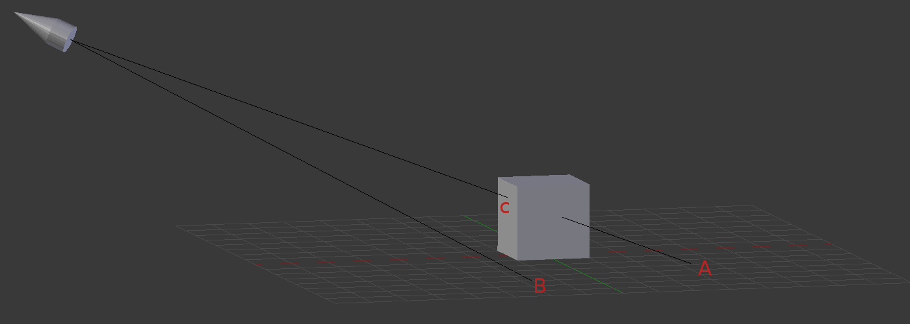
Our scene is made up of two objects - the surface and the cube. The light source is located at the top left corner and is pointing at the cube. In the first pass we render into the depth buffer from the point of view of the light source. Let’s focus on the three points A, B and C. When B is rendered its depth value goes into the depth buffer. The reason is that there is nothing in between the point and the light. By default, it is the closest point to the light on that line. However, when A and C are rendered they “compete” on the exact same spot in the depth buffer. Both points are on the same straight line from the light source so after perspective projection takes place the rasterizer finds out both points need to go to the same pixel on the screen. This is the depth test and point C “wins” it.
In the second pass we render the surface and the cube from the camera point of view. In addition to everything we have done in our lighting shader per pixel we also calculate the distance from the light source to the pixel and compare it to the corresponding value in the depth buffer. When we rasterize point B the two values should roughly be same (some differences are expected due to differences in interpolation and floating point precision issues). Therefore, we decide that B is not in shadow and act accordingly. When we rasterize point A we find out that the stored depth value is clearly smaller than the depth of A. Therefore, we decide that A is in shadow and apply some shadow factor to it in order to get it darker than usual.
This, in a nutshell, is the shadow mapping algorithm (the depth buffer that we render to in the first pass is called the “shadow map”). We are going to study it in two stages. In the first stage (this tutorial) we will learn how to render into the shadow map. The process of rendering something (depth, color, etc) into an application created texture is known as ‘render to texture’. We will display the shadow map on the screen using a simple texture mapping technique that we are already familiar with. This is a good debugging step as getting the shadow map correct is crucial in order to get the complete shadow effect working correctly. In the next tutorial we will see how to use the shadow map in order to do the “in shadow/not in shadow” decision.
The sources of this tutorial include a simple quad mesh that can be used to display the shadow map. The quad is made up of two triangles and the texture coordinates are set up such that they cover the entire texture space. When the quad is rendered the texture coordinates are interpolated by the rasterizer, allowing you to sample an entire texture and display it on screen.
Source walkthru
(shadow_map_fbo.h:50)
1class ShadowMapFBO
2{
3public:
4 ShadowMapFBO();
5
6 ~ShadowMapFBO();
7
8 bool Init(unsigned int WindowWidth, unsigned int WindowHeight);
9
10 void BindForWriting();
11
12 void BindForReading(GLenum TextureUnit);
13
14private:
15 GLuint m_fbo;
16 GLuint m_shadowMap;
17};
The results of the 3D pipeline in OpenGL end up in something which is called a ‘framebuffer object’ (a.k.a FBO). This concept wraps within it the color buffer (which is displayed on screen), the depth buffer as well as a few other buffers for additional usages. When glutInitDisplayMode() is called it creates the default framebuffer using the specified parameters. This framebuffer is managed by the windowing system and cannot be deleted by OpenGL. In addition to the default framebuffer, an application can create FBOs of its own. These objects can be manipulated and used for various techniques under the control of the application. The ShadowMapFBO class provides an easy to use interface to a FBO which will be used for the shadow mapping technique. Internally, this class contains two OpenGL handles. The handle ’m_fbo’ represents the actual FBO. The FBO encapsulates within it the entire state of the framebuffer. Once this object is created and configured properly we can change framebuffers by simply binding a different object. Note that only the default framebuffer can be used to display something on the screen. The framebuffers created by the application can only be used for “offscreen rendering”. This can be an intermediate rendering pass (e.g. our shadow mapping buffer) which can later be used for the “real” rendering pass that goes to the screen.
In itself, the framebuffer is just a placeholder. To make it usable we need to attach textures to one or more of the available attachment points. The textures contain the actual storage space of the framebuffer. OpenGL defines the following attachment points:
- COLOR_ATTACHMENTi - the texture that will be attached here will receive the color that comes out of the fragment shader. The ‘i’ suffix means that there can be multiple textures attached as color attachments simultaneously. There is a mechanism in the fragment shader that enables rendering into several color buffers at the same time.
- DEPTH_ATTACHMENT - the texture that will be attached here will receive the results of the depth test.
- STENCIL_ATTACHMENT - the texture that will be attached here will serve as the stencil buffer. The stencil buffer enables limiting the area of rasterization and can be used for various techniques.
- DEPTH_STENCIL_ATTACHMENT - this one is simply a combination of depth and stencil buffers as the two are often used together.
For the shadow mapping technique we will only need a depth buffer. The member attribute ’m_shadowMap’ is the handle of the texture that will be attached to the DEPTH_ATTACHMENT attachment point. The ShadowMapFBO also provides a couple of methods that will be used in the main render function. We will call BindForWriting() before rendering into the shadow map and BindForReading() when starting the second rendering pass.
(shadow_map_fbo.cpp:43)
1glGenFramebuffers(1, &m_fbo);
Here we create the FBO. Same as in textures and buffers, we specify the address of an array of GLuints and its size. The array is populated with the handles.
(shadow_map_fbo.cpp:46)
1glGenTextures(1, &m_shadowMap);
2glBindTexture(GL_TEXTURE_2D, m_shadowMap);
3glTexImage2D(GL_TEXTURE_2D, 0, GL_DEPTH_COMPONENT, WindowWidth, WindowHeight, 0, GL_DEPTH_COMPONENT, GL_FLOAT, NULL);
4glTexParameterf(GL_TEXTURE_2D, GL_TEXTURE_MIN_FILTER, GL_LINEAR);
5glTexParameterf(GL_TEXTURE_2D, GL_TEXTURE_MAG_FILTER, GL_LINEAR);
6glTexParameterf(GL_TEXTURE_2D, GL_TEXTURE_WRAP_S, GL_CLAMP_TO_EDGE);
7glTexParameterf(GL_TEXTURE_2D, GL_TEXTURE_WRAP_T, GL_CLAMP_TO_EDGE);
Next we create the texture that will serve as the shadow map. In general, this is a standard 2D texture with some specific configuration to make it suitable for its purpose:
- The internal format is GL_DEPTH_COMPONENT. This is different from the previous use of this function where the internal format was usually one of the color types (e.g. GL_RGB). GL_DEPTH_COMPONENT means a single floating point number that represents the normalized depth.
- The last parameter of glTexImage2D is null. This means that we are not supplying any data by which to initialize the buffer. This makes sense knowing that we want the buffer to contain the depth values of each frame and each frame is a bit different. Whenever we start a new frame we will use glClear() to clear out the buffer. This is all the initialization that we need for the content.
- We tell OpenGL that in case a texture coordinate goes out of bound it needs to clamp it to the [0,1] range. This can happen when the projection window from the camera point of view contains more than the projection window from the light point of view. To avoid strange artifacts such as the shadow repeating itself elsewhere (due to wraparound) we clamp the texture coordinates.
(shadow_map_fbo.cpp:54)
1glBindFramebuffer(GL_FRAMEBUFFER, m_fbo);
We have generated the FBO, the texture object and also configured the texture object for shadow mapping. Now we need to attach the texture object to the FBO. The first thing we need to do is to bind the FBO. This will make it “current” and then all future FBO operations will apply to it. This function takes the FBO handle and the desired target. The target can be GL_FRAMEBUFFER, GL_DRAW_FRAMEBUFFER or GL_READ_FRAMEBUFFER. GL_READ_FRAMEBUFFER is used when we want to read from the FBO using glReadPixels (not in this tutorial). GL_DRAW_FRAMEBUFFER is used when we want to render into the FBO. When we use GL_FRAMEBUFFER both the reading and writing state is updated and this is the recommended way for initializing the FBO. We will use GL_DRAW_FRAMEBUFFER when we actually start to render.
(shadow_map_fbo.cpp:55)
1glFramebufferTexture2D(GL_FRAMEBUFFER, GL_DEPTH_ATTACHMENT, GL_TEXTURE_2D, m_shadowMap, 0);
Here we attach the shadow map texture to the depth attachment point of the FBO. The last parameter to this function indicates the mipmap layer to use. Mipmapping is a texture mapping feature where a texture is represented at different resolutions, starting from the highest resolution at mipmap 0 and decreasing resolutions in mipmaps 1-N. The combination of a mipmapped texture and trilinear filtering provides more pleasant results by combining texels from neighboring mipmap levels (when no single level is perfect). Here we have a single mipmap level so we use 0. We provide the shadow map handle as the fourth parameter. If we use 0 here it will detach the current texture from the specified attachment point (depth in the case above).
(shadow_map_fbo.cpp:58)
1glDrawBuffer(GL_NONE);
2glReadBuffer(GL_NONE);
Since we are not going to render into the color buffer (only into the depth) we explicitly specify it using the above call. By default, the color buffer target is set to GL_COLOR_ATTACHMENT0, but our FBO isn’t even going to contain a color buffer. Therefore, it is better to tell OpenGL our intentions explicitly. The valid parameters to this functions are GL_NONE and GL_COLOR_ATTACHMENT0 to GL_COLOR_ATTACHMENTm where ’m’ is GL_MAX_COLOR_ATTACHMENTS - 1. These parameters are valid only for FBOs. If the default framebuffer is used the valid parameters are GL_NONE, GL_FRONT_LEFT, GL_FRONT_RIGHT, GL_BACK_LEFT and GL_BACK_RIGHT. These allow you to render directly into the front or back buffers (where each one has a left and right buffer). We also set the read buffer to GL_NONE (remember, we are not going to call one of the glReadPixel APIs). This is mainly to avoid problems with GPUs that support only OpenGL 3.x and not 4.x.
(shadow_map_fbo.cpp:61)
1GLenum Status = glCheckFramebufferStatus(GL_FRAMEBUFFER);
2
3if (Status != GL_FRAMEBUFFER_COMPLETE) {
4 printf("FB error, status: 0x%x\n", Status);
5 return false;
6}
When the configuration of the FBO is finished it is very important to verify that its state is what the OpenGL spec defines as “complete”. This means that no error was detected and that the framebuffer can now be used. The code above checks that.
(shadow_map_fbo.cpp:72)
1void ShadowMapFBO::BindForWriting()
2{
3 glBindFramebuffer(GL_DRAW_FRAMEBUFFER, m_fbo);
4}
We will need to toggle between rendering into the shadow map and rendering into the default framebuffer. In the second pass we will also need to bind our shadow map for input. This function and the next one provide easy to use wrappers to do that. The above function simply binds the FBO for writing as we did earlier. We will call it before the first render pass…
(shadow_map_fbo.cpp:78)
1void ShadowMapFBO::BindForReading(GLenum TextureUnit)
2{
3 glActiveTexture(TextureUnit);
4 glBindTexture(GL_TEXTURE_2D, m_shadowMap);
5}
…and this function will be used before the second render pass to bind the shadow map for reading. Note that we bind specifically the texture object, rather than the FBO itself. This function takes the texture unit to which the shadow map will be bound. The texture unit index must be synchronized with the shader (since the shader has a sampler2D uniform variable to access the texture). It is very important to note that while glActiveTexture takes the texture index as an enum (e.g. GL_TEXTURE0, GL_TEXTURE1, etc), the shader needs simply the index itself (0, 1, etc). This can be the source of many bugs (believe me, I know).
(shadow_map.vs)
1#version 330
2
3layout (location = 0) in vec3 Position;
4layout (location = 1) in vec2 TexCoord;
5layout (location = 2) in vec3 Normal;
6
7uniform mat4 gWVP;
8
9out vec2 TexCoordOut;
10
11void main()
12{
13 gl_Position = gWVP * vec4(Position, 1.0);
14 TexCoordOut = TexCoord;
15}
We are going to use the same shader program for both render passes. The vertex shader will be used by both passes while the fragment shader will be used only by the second pass. Since we are disabling writing to the color buffer in the first pass the fragment shader will simply be left unused there. The vertex shader above is very simple. It generates the clip space coordinate by multiplying the local space position by the WVP matrix and passes through the texture coordinates. In the first pass the texture coordinates are redundant (no fragment shader). However, there is no real impact and it is simpler to share the vertex shader. As you can see, from the point of view of the shader it makes no difference whether this is a Z pass or a real render pass. What makes the difference is that the application passes a light point of view WVP matrix in the first pass and a camera point of view WVP matrix in the second pass. In the first pass the Z buffer will be populated by the closest Z values from the light point of view and on the second pass from the camera point of view. In the second pass we also need the texture coordinates in the fragment shader because we will sample from the shadow map (which is now input to the shader).
(shadow_map.fs)
1#version 330
2
3in vec2 TexCoordOut;
4uniform sampler2D gShadowMap;
5
6out vec4 FragColor;
7
8void main()
9{
10 float Depth = texture(gShadowMap, TexCoordOut).x;
11 Depth = 1.0 - (1.0 - Depth) * 25.0;
12 FragColor = vec4(Depth);
13}
This is the fragment shader that is used to display the shadow map in the render pass. The 2D texture coordinates are used to fetch the depth value from the shadow map. The shadow map texture was created with the type GL_DEPTH_COMPONENT as its internal format. This means that the basic texel is a single floating point value and not a color. This is why ‘.x’ is used during sampling. The perspective projection matrix has a known behavior that when it normalizes the Z in the position vector it reserves more values in the [0,1] range to the closer locations rather than the locations that are further away from the camera. The rational is to allow greater Z precision as we get closer to the camera because errors here are more noticeable. When we display the contents of the depth buffer we may run into a case where the resulting image is not clear enough. Therefore, after we sample the depth from the shadow map we sharpen it by scaling the distance of the current point to the far edge (where Z is 1.0) and then substracting the result from 1.0 again. This amplifies the range and improves the final image. We use the new depth value to create a color by broadcasting it across all the color channels. This means we will get some variation of gray (white at the far clipping plane and black at the near clipping plane).
Now let’s see how to combine the pieces of code above and create the application.
(tutorial23.cpp:106)
1virtual void RenderSceneCB()
2{
3 m_pGameCamera->OnRender();
4 m_scale += 0.05f;
5
6 ShadowMapPass();
7 RenderPass();
8
9 glutSwapBuffers();
10}
The main render function has become much simpler as most functionality moved to other functions. First we take care of the “global” stuff like updating the position of the camera and the class member which is used to rotate the object. Then we call a function to render into the shadow map texture followed by a function to display the results. Finally, glutSwapBuffer() is called to display it to the screen.
(tutorial23.cpp:117)
1virtual void ShadowMapPass()
2{
3 m_shadowMapFBO.BindForWriting();
4
5 glClear(GL_DEPTH_BUFFER_BIT);
6
7 Pipeline p;
8 p.Scale(0.1f, 0.1f, 0.1f);
9 p.Rotate(0.0f, m_scale, 0.0f);
10 p.WorldPos(0.0f, 0.0f, 5.0f);
11 p.SetCamera(m_spotLight.Position, m_spotLight.Direction, Vector3f(0.0f, 1.0f, 0.0f));
12 p.SetPerspectiveProj(20.0f, WINDOW_WIDTH, WINDOW_HEIGHT, 1.0f, 50.0f);
13 m_pShadowMapTech->SetWVP(p.GetWVPTrans());
14
15 m_pMesh->Render();
16
17 glBindFramebuffer(GL_FRAMEBUFFER, 0);
18}
We start the shadow map pass by binding in the shadow map FBO. From now on all the depth values will go into our shadow map texture and color writes will be discarded. We clear the depth buffer (only) before we start doing anything. Then we set up the pipeline class in order to render the mesh (a tank from Quake2 is supplied with the tutorial source). The single point worth noticing here is that the camera is updated based on the position and direction of the spot light. We render the mesh and then switch back to the default framebuffer by binding FBO zero.
(tutorial23.cpp:135)
1virtual void RenderPass()
2{
3 glClear(GL_COLOR_BUFFER_BIT | GL_DEPTH_BUFFER_BIT);
4
5 m_pShadowMapTech->SetTextureUnit(0);
6 m_shadowMapFBO.BindForReading(GL_TEXTURE0);
7
8 Pipeline p;
9 p.Scale(5.0f, 5.0f, 5.0f);
10 p.WorldPos(0.0f, 0.0f, 10.0f);
11 p.SetCamera(m_pGameCamera->GetPos(), m_pGameCamera->GetTarget(), m_pGameCamera->GetUp());
12 p.SetPerspectiveProj(30.0f, WINDOW_WIDTH, WINDOW_HEIGHT, 1.0f, 50.0f);
13 m_pShadowMapTech->SetWVP(p.GetWVPTrans());
14 m_pQuad->Render();
15}
The render pass starts by clearing both color and depth buffers. These buffers belond to the default framebuffer. We tell the shader to use texture unit 0 and bind the shadow map texture for reading on texture unit 0. From here on everything is as usual. We scale the quad up, place it directly infront of the camera and render it. During rasterization the shadow map is sampled and displayed.
Note: in this tutorial’s code we no longer automatically load a white texture when the mesh file does not specify one. The reason is to be able to bind the shadow map instead. If a mesh does not contain a texture we simply bind none and this allows the calling code to bind its own texture.
Tutorial 24:Shadow Mapping - Part 2
Background
In the previous tutorial we learned the basic principle behind the shadow mapping technique and saw how to render the depth into a texture and later display it on the screen by sampling from the depth buffer. In this tutorial we will see how to use this capability and display the shadow itself.
We know that shadow mapping is a two-pass technique and that in the first pass the scene is rendered from the point of view of the light. Let’s review what happens to the Z component of the position vector during that first pass:
- The position of the vertices that are fed into the vertex shader are generally specified in local space.
- The vertex shader transforms the position from local space to clip space and forwards it down the pipeline (see tutorial 12 if you need a refresher about clip space).
- The rasterizer performs perspective divide (a division of the position vector by its W component). This takes the position vector from clip space to NDC space. In NDC space everything which ends up on the screen has a X, Y and Z components in the range [-1,1]. Things outside these ranges are clipped away.
- The rasterizer maps the X and Y of the position vector to the dimensions of the framebuffer (e.g. 800x600, 1024x768, etc). The results are the screen space coordinates of the position vector.
- The rasterizer takes the screen space coordinates of the three triangle vertices and interpolates them to create the unique coordinates for each pixel that the triangle covers. The Z value (still in the [-1,1] range) is also interpolated so every pixel has its own depth.
- Since we disabled color writes in the first pass the fragment shader is disabled. The depth test, however, still executes. To compare the Z value of the current pixel with the one in the buffer the screen space coordinates of the pixel are used to fetch the depth from the buffer. If the depth of the new pixel is smaller than the stored one the buffer is updated (and if color writes were enabled the color buffer would have also been updated).
In the process above we saw how the depth value from the light point of view is calculated and stored. In the second pass we render from the camera point of view so naturally we get a different depth. But we need both depth values - one to get the triangles ordered correctly on the screen and the other to check what is inside the shadow and what is not. The trick in shadow mapping is to maintain two position vectors and two WVP matrices while traveling through the 3D pipeline. One WVP matrix is calculated from the light point of view and the other from the camera point of view. The vertex shader gets one position vector in local space as usual, but it outputs two vectors:
- The builtin gl_Position which is the result of transforming the position by the camera WVP matrix.
- A “plain” vector which is the result of transforming the position by the light WVP matrix.
The first vector will go through above process (–> NDC space…etc) and these will be used for the regular rasterization. The second vector will simply be interpolated by the rasterizer across the triangle face and each fragment shader invocation will be provided with its own value. So now for each physical pixel we also have a clip space coordinate of the same point in the original triangle when looking at it from the light point of view. It is very likely that the physical pixels from the two point of views are different but the general location in the triangle is the same. All that remains is to somehow use that clip space coordinate in order to fetch the depth value from the shadow map. After that we can compare the depth to the one in the clip space coordinate and if the stored depth is smaller then it means the pixel is in shadow (because another pixel had the same clip space coordinate but with a smaller depth).
So how can we fetch the depth in the fragment shader using the clip space coordinate that was calculated by trasforming the position by the light WVP matrix? When we start out we are basically in step 2 above.
-
Since the fragment shader receives the clip space coordinate as a standard vertex attribute the rasterizer does not perform perspective divide on it (only what goes through gl_Position). But this is something that is very easy to do manually in the shader. We divide the coordinate by its W component and get a coordinate in NDC space.
-
We know that in NDC the X and Y range from -1 to 1. In step 4 above the rasterizer maps the NDC coordinates to screen space and uses them to store the depth. We are going to sample the depth and for that we need a texture coordinate in the range [0,1]. If we linearly map the range [-1,1] to [0,1] we will get a texture coordinate that will map to the same location in the shadow map. Example: the X in NDC is zero and the width of the texture is 800. Zero in NDC needs to be mapped to 0.5 in the texture coordinate space (because it is half way between -1 and 1). The texture coordinate 0.5 is mapped to 400 in the texture which is the same location that is calculated by the rasterizer when it performs screen space transform.
-
Transforming X and Y from NDC space to texture space is done as follows:
-
- u = 0.5 * X + 0.5
- v = 0.5 * Y + 0.5
Source walkthru
(lighting_technique.h:80)
1class LightingTechnique : public Technique {
2 public:
3 ...
4 void SetLightWVP(const Matrix4f& LightWVP);
5 void SetShadowMapTextureUnit(unsigned int TextureUnit);
6 ...
7 private:
8 GLuint m_LightWVPLocation;
9 GLuint m_shadowMapLocation;
10...
The lighting technique needs a couple of new attributes. A WVP matrix that is calculated from the light point of view and a texture unit for the shadow map. We will continue using texture unit 0 for the regular texture that is mapped on the object and will dedicate texture unit 1 for the shadow map.
(lighting.vs)
1#version 330
2
3layout (location = 0) in vec3 Position;
4layout (location = 1) in vec2 TexCoord;
5layout (location = 2) in vec3 Normal;
6
7uniform mat4 gWVP;
8uniform mat4 gLightWVP;
9uniform mat4 gWorld;
10
11out vec4 LightSpacePos;
12out vec2 TexCoord0;
13out vec3 Normal0;
14out vec3 WorldPos0;
15
16void main()
17{
18 gl_Position = gWVP * vec4(Position, 1.0);
19 LightSpacePos = gLightWVP * vec4(Position, 1.0);
20 TexCoord0 = TexCoord;
21 Normal0 = (gWorld * vec4(Normal, 0.0)).xyz;
22 WorldPos0 = (gWorld * vec4(Position, 1.0)).xyz;
23}
This is the updated vertex shader of the LightingTechnique class with the additions marked in bold text. We have an additional WVP matrix uniform variable and a 4-vector as output which contains the clip space coordinates calculated by transforming the position by the light WVP matrix. As you can see, in the vertex shader of the first pass the variable gWVP contained the same matrix as gLightWVP here and gl_Position there got the same value as LightSpacePos here. But since LightSpacePos is just a standard vector it does not get an automatic perspective division as gl_Position. We will do this manually in the fragment shader below.
(lighting.fs:58)
1float CalcShadowFactor(vec4 LightSpacePos)
2{
3 vec3 ProjCoords = LightSpacePos.xyz / LightSpacePos.w;
4 vec2 UVCoords;
5 UVCoords.x = 0.5 * ProjCoords.x + 0.5;
6 UVCoords.y = 0.5 * ProjCoords.y + 0.5;
7 float z = 0.5 * ProjCoords.z + 0.5;
8 float Depth = texture(gShadowMap, UVCoords).x;
9 if (Depth < (z + 0.00001))
10 return 0.5;
11 else
12 return 1.0;
13}
This function is used in the fragment shader to calculate the shadow factor of a pixel. The shadow factor is a new factor in the light equation. We simply multiply the result of our current light equation by that factor and this causes some attenuation of the light in pixels that are determined to be shadowed. The function takes the interpolated LightSpacePos vector that was passed from the vertex shader. The first step is to perform perspective division - we divide the XYZ components by the W component. This transfers the vector to NDC space. Next we prepare a 2D coordinate vector to be used as the texture coordinate and initialize it by transforming the LightSpacePos vector from NDC to texture space according to the equation in the background section. The texture coordinates are used to fetch the depth from the shadow map. This is the depth of the closest location from all the points in the scene that are projected to this pixel. We compare that depth to the depth of the current pixel and if it is smaller return a shadow factor of 0.5, else the shadow factor is 1.0 (no shadow). The Z from the NDC space also goes through transformation from the (-1,1) range to (0,1) range because we have to be in the same space when we compare. Notice that we add a small epsilon value to the current pixel’s depth. This is to avoid precision errors that are inherent when dealing with floating point values.
(lighting.fs:72)
1vec4 CalcLightInternal(BaseLight Light, vec3 LightDirection, vec3 Normal, float ShadowFactor)
2{
3 ...
4 return (AmbientColor + ShadowFactor * (DiffuseColor + SpecularColor));
5}
The changes to the core function that does the lighting calculations are minimal. The caller must pass the shadow factor and the diffuse and specular colors are modulated by that factor. Ambient light is not affected by the shadow because by definition, it is everywhere.
(lighting.fs:97)
1vec4 CalcDirectionalLight(vec3 Normal)
2{
3 return CalcLightInternal(gDirectionalLight.Base, gDirectionalLight.Direction, Normal**, 1.0**);
4}
Our shadow mapping implementation is currently limited to spot lights. In order to calculate the WVP matrix of the light it needs both a position and a direction which point light and directional light lack. We will add the missing features in the future but for now we simply use a shadow factor of 1 for the directional light.
(lighting.fs:102)
1vec4 CalcPointLight(struct PointLight l, vec3 Normal\, vec4 LightSpacePos)
2{
3 vec3 LightDirection = WorldPos0 - l.Position;
4 float Distance = length(LightDirection);
5 LightDirection = normalize(LightDirection);
6 float ShadowFactor = CalcShadowFactor(LightSpacePos);
7
8 vec4 Color = CalcLightInternal(l.Base, LightDirection, Normal, ShadowFactor);
9 float Attenuation = l.Atten.Constant +
10 l.Atten.Linear * Distance +
11 l.Atten.Exp * Distance * Distance;
12
13 return Color / Attenuation;
14}
Since the spot light is actually calculated using a point light this function now takes the extra parameter of the light space position and calculates the shadow factor. It passes it on to CalcLightInternal() which uses it as described above.
(lighting.fs:117)
1vec4 CalcSpotLight(struct SpotLight l, vec3 Normal, vec4 LightSpacePos)
2{
3 vec3 LightToPixel = normalize(WorldPos0 - l.Base.Position);
4 float SpotFactor = dot(LightToPixel, l.Direction);
5
6 if (SpotFactor > l.Cutoff) {
7 vec4 Color = CalcPointLight(l.Base, Normal, LightSpacePos);
8 return Color * (1.0 - (1.0 - SpotFactor) * 1.0/(1.0 - l.Cutoff));
9 }
10 else {
11 return vec4(0,0,0,0);
12 }
13}
The spot light function simply passes through the light space position to the point light function.
(lighting.fs:131)
1void main()
2{
3 vec3 Normal = normalize(Normal0);
4 vec4 TotalLight = CalcDirectionalLight(Normal);
5
6 for (int i = 0 ; i < gNumPointLights ; i++) {
7 TotalLight += CalcPointLight(gPointLights[i], Normal**, LightSpacePos**);
8 }
9
10 for (int i = 0 ; i < gNumSpotLights ; i++) {
11 TotalLight += CalcSpotLight(gSpotLights[i], Normal**, LightSpacePos**);
12 }
13
14 vec4 SampledColor = texture2D(gSampler, TexCoord0.xy);
15 FragColor = SampledColor * TotalLight;
16}
Finally, the main function of the fragment shader. We are using the same light space position vector for both spot and point lights even though only spot lights are supported. This limitation will be fixed in the future. We have finished reviewing the changes in the lighting technique and will now take a look at the application code.
(tutorial24.cpp:86)
1m_pLightingEffect = new LightingTechnique();
2
3if (!m_pLightingEffect->Init()) {
4 printf("Error initializing the lighting technique\n");
5 return false;
6}
7
8m_pLightingEffect->Enable();
9m_pLightingEffect->SetSpotLights(1, &m_spotLight);
10m_pLightingEffect->SetTextureUnit(0);
11m_pLightingEffect->SetShadowMapTextureUnit(1);
This code which sets up the LightingTechnique is part of the Init() function so it is executed only once during startup. Here we set the uniform values that will not change from frame to frame. Our standard texture unit for the texture which belongs to the mesh is 0 and we dedicate texture unit 1 for the shadow map. Remember that the shader program must be enabled before its uniform variables are set up and they remain persistent as long as the program is not relinked. This is convenient because it allows you to switch between shader programs and only worry about the uniform variables that are dynamic. Uniform variables that never change can be set once during startup.
(tutorial24.cpp:129)
1virtual void RenderSceneCB()
2{
3 m_pGameCamera->OnRender();
4 m_scale += 0.05f;
5
6 ShadowMapPass();
7 RenderPass();
8
9 glutSwapBuffers();
10}
Nothing has changed in the main render function - first we take care of the global stuff such as the camera and the scale factor which is used for rotating the mesh. Then we do the shadow pass followed by the render pass.
(tutorial24.cpp:141)
1virtual void ShadowMapPass()
2{
3 m_shadowMapFBO.BindForWriting();
4 glClear(GL_DEPTH_BUFFER_BIT);
5 m_pShadowMapEffect->Enable();
6
7 Pipeline p;
8 p.Scale(0.1f, 0.1f, 0.1f);
9 p.Rotate(0.0f, m_scale, 0.0f);
10 p.WorldPos(0.0f, 0.0f, 3.0f);
11 p.SetCamera(m_spotLight.Position, m_spotLight.Direction, Vector3f(0.0f, 1.0f, 0.0f));
12 p.SetPerspectiveProj(30.0f, WINDOW_WIDTH, WINDOW_HEIGHT, 1.0f, 50.0f);
13 m_pShadowMapEffect->SetWVP(p.GetWVPTrans());
14 m_pMesh->Render();
15
16 glBindFramebuffer(GL_FRAMEBUFFER, 0);
17}
This is basically the same shadow pass from the previous tutorial. The only change is that we enable the shadow map technique each time because we toggle between this technique and the lighting technique. Note that even though our scene contains both a mesh and a quad that serves as the ground, only the mesh is rendered into the shadow map. The reason is that the ground cannot cast shadows. This is one of the optimizations that we can do when we know something about the type of the object.
(tutorial24.cpp:168)
1virtual void RenderPass()
2{
3 glClear(GL_COLOR_BUFFER_BIT | GL_DEPTH_BUFFER_BIT);
4
5 m_pLightingEffect->Enable();
6
7 m_pLightingEffect->SetEyeWorldPos(m_pGameCamera->GetPos());
8 m_shadowMapFBO.BindForReading(GL_TEXTURE1);
9
10 Pipeline p;
11 p.SetPerspectiveProj(30.0f, WINDOW_WIDTH, WINDOW_HEIGHT, 1.0f, 50.0f);
12 p.Scale(10.0f, 10.0f, 10.0f);
13 p.WorldPos(0.0f, 0.0f, 1.0f);
14 p.Rotate(90.0f, 0.0f, 0.0f);
15 p.SetCamera(m_pGameCamera->GetPos(), m_pGameCamera->GetTarget(), m_pGameCamera->GetUp());
16 m_pLightingEffect->SetWVP(p.GetWVPTrans());
17 m_pLightingEffect->SetWorldMatrix(p.GetWorldTrans());
18 p.SetCamera(m_spotLight.Position, m_spotLight.Direction, Vector3f(0.0f, 1.0f, 0.0f));
19 m_pLightingEffect->SetLightWVP(p.GetWVPTrans());
20 m_pGroundTex->Bind(GL_TEXTURE0);
21 m_pQuad->Render();
22
23 p.Scale(0.1f, 0.1f, 0.1f);
24 p.Rotate(0.0f, m_scale, 0.0f);
25 p.WorldPos(0.0f, 0.0f, 3.0f);
26 p.SetCamera(m_pGameCamera->GetPos(), m_pGameCamera->GetTarget(), m_pGameCamera->GetUp());
27 m_pLightingEffect->SetWVP(p.GetWVPTrans());
28 m_pLightingEffect->SetWorldMatrix(p.GetWorldTrans());
29 p.SetCamera(m_spotLight.Position, m_spotLight.Direction, Vector3f(0.0f, 1.0f, 0.0f));
30 m_pLightingEffect->SetLightWVP(p.GetWVPTrans());
31 m_pMesh->Render();
32}
The render pass starts the same way as in the previous tutorial - we clear both the depth and color buffers, replace the shadow map technique with the lighting technique and bind the shadow map frame buffer object for reading on texture unit 1. Next we render the quad so that it will serve as the ground on which the shadow will appear. It is scaled up a bit, rotated 90 degrees around the X axis (because originally it is facing the camera) and positioned. Note how the WVP is updated based on the location of the camera but for the light WVP we move the camera to the light position. Since the quad model comes without its own texture we manually bind a texture here. The mesh is rendered in the same way.
Here’s an example of the shadow:

Tutorial 25:SkyBox
Background
A skybox is a technique that makes the scene looks bigger and more impressive by wrapping the viewer with a texture that goes around the camera 360 degrees. The texture is often a combination between the sky and a terrain type such as mountains, skyscapers, etc. As the player explores his surroundings he keeps seeing a part of the skybox hovering above the real models and filling up all those empty pixels. Here’s an example of a skybox from the game Half-Life:
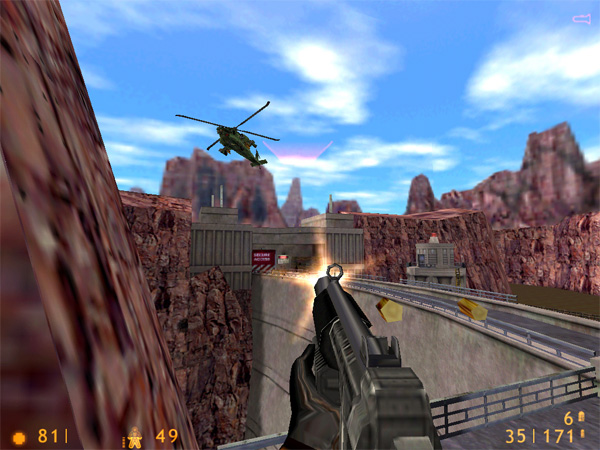
The idea behind the skybox is to render a big cube and place the viewer at its center. As the camera moves the cube follows it so that the viewer can never reach the “horizon” of the scene. This is similar to real life where we see the sky “touch” the earth on the horizon but when we move toward the horizon it remains at the same distance from us (pending on land type, etc).
A special type of texture is mapped on the cube. This texture is created in such a way that if it is cut and folded properly it creates a box where the contents along the edges of the internal faces are perfectly aligned with one another and create a sense of continuity for someone who is located inside the box. For example, see the following texture:

If we cut away the white margins of the texture above and fold the remaining parts along the white lines we will get a box with the required properties. OpenGL calls such a texture a Cubemap.
In order to sample from the cubemap we will use a 3D texture coordinate instead of the 2D coordinate that we have been using thus far. The texture sampler will use this 3D coordinate as a vector and will first find out which of the six faces of the cubemap contains the required texel and then fetch it from within that face. This process can be seen in the following picture which is taken from above (looking down at the box):

The proper face is selected based on the highest magnitude component of the texture coordinate. In the above example we see that Z has the largest magnitude (Y cannot be seen but let’s assume it is smaller than Z). Since Z has a positive sign the texture sampler will use the face entitled ‘PosZ’ and will fetch the texel from there (the remaining faces are ‘NegZ’, ‘PosX’, ‘NegX’, ‘PosY’ and ‘NegY’).
The skybox technique can actually be implemented using a sphere as well as a box. The only difference is that the length of all possible direction vectors in a sphere is equal (since they represent the radius of the sphere) while in a box there are different lengths. The mechanism for texel fetching remains the same. A skybox which uses a sphere is sometimes called a skydome. This is what we will use for the demo of this tutorial. You should play with both options and see what works best for you.
Source walkthru
(ogldev_cubemap_texture.h:28)
1class CubemapTexture
2{
3public:
4
5 CubemapTexture(const string& Directory,
6 const string& PosXFilename,
7 const string& NegXFilename,
8 const string& PosYFilename,
9 const string& NegYFilename,
10 const string& PosZFilename,
11 const string& NegZFilename);
12
13 ~CubemapTexture();
14
15 bool Load();
16
17 void Bind(GLenum TextureUnit);
18
19private:
20
21 string m_fileNames[6];
22 GLuint m_textureObj;
23};
This class wraps the OpenGL implementation of the cubemap texture and provides a simple interface to load and use the cubemap. The constructor takes a directory and six filenames of image files that contain the cubemap faces. For simplicity we assume that all files exist in the same directory. We need to call the function Load() once during startup in order to load the image files and create the OpenGL texture object. The attributes of the class are the image filenames (stored with the full path this time) and the OpenGL texture object handle. This single handle provides access to all six faces of the cubemap. During runtime Bind() must be called with the proper texture unit in order to make the cubemap available to the shader.
(cubemap_texture.cpp:60)
1bool CubemapTexture::Load()
2{
3 glGenTextures(1, &m_textureObj);
4 glBindTexture(GL_TEXTURE_CUBE_MAP, m_textureObj);
5
6 Magick::Image* pImage = NULL;
7 Magick::Blob blob;
8
9 for (unsigned int i = 0 ; i < ARRAY_SIZE_IN_ELEMENTS(types) ; i++) {
10 pImage = new Magick::Image(m_fileNames[i]);
11
12 try {
13 pImage->write(&blob, "RGBA");
14 }
15 catch (Magick::Error& Error) {
16 cout << "Error loading texture '" << m_fileNames[i] << "': " << Error.what() << endl;
17 delete pImage;
18 return false;
19 }
20
21 glTexImage2D(types[i], 0, GL_RGB, pImage->columns(), pImage->rows(), 0, GL_RGBA, GL_UNSIGNED_BYTE, blob.data());
22 glTexParameteri(GL_TEXTURE_CUBE_MAP, GL_TEXTURE_MAG_FILTER, GL_LINEAR);
23 glTexParameteri(GL_TEXTURE_CUBE_MAP, GL_TEXTURE_MIN_FILTER, GL_LINEAR);
24 glTexParameteri(GL_TEXTURE_CUBE_MAP, GL_TEXTURE_WRAP_S, GL_CLAMP_TO_EDGE);
25 glTexParameteri(GL_TEXTURE_CUBE_MAP, GL_TEXTURE_WRAP_T, GL_CLAMP_TO_EDGE);
26 glTexParameteri(GL_TEXTURE_CUBE_MAP, GL_TEXTURE_WRAP_R, GL_CLAMP_TO_EDGE);
27
28 delete pImage;
29 }
30
31 return true;
32}
The function that loads the cubemap texture starts by generating a texture object. This object is bound to the special GL_TEXTURE_CUBE_MAP target. After that we loop over the ’types’ array which contains the GL enums that represent the cubemap faces (GL_TEXTURE_CUBE_MAP_POSITIVE_X, GL_TEXTURE_CUBE_MAP_NEGATIVE_X, etc). These enums match the attribute string vector ’m_fileNames’ which simplifies the loop. The image files are loaded one by one by ImageMagick and then specified to OpenGL using glTexImage2D(). Note that each call to this function is done using the proper GL enum for that face (which is why the ’types’ array and ’m_fileNames’ must match). After the cubemap is loaded and populated we setup some configuration flags. You should be familiar with all these flags except GL_TEXTURE_WRAP_R. This enum simply refers to the third dimension of the texture coordinate. We set it to the same clamping mode as the other dimensions.
(cubemap_texture.cpp:95)
1void CubemapTexture::Bind(GLenum TextureUnit)
2{
3 glActiveTexture(TextureUnit);
4 glBindTexture(GL_TEXTURE_CUBE_MAP, m_textureObj);
5}
This function must be called before the texture can be used for drawing the skybox. The target for the bind function is GL_TEXTURE_CUBE_MAP which is the same enum we used in the Load() function.
(skybox_technique.h:25)
1class SkyboxTechnique : public Technique {
2
3public:
4
5 SkyboxTechnique();
6
7 virtual bool Init();
8
9 void SetWVP(const Matrix4f& WVP);
10 void SetTextureUnit(unsigned int TextureUnit);
11
12private:
13 GLuint m_WVPLocation;
14 GLuint m_textureLocation;
15};
The skybox is rendered using its own special technique. This technique has only a couple of attributes that the caller must specify - a WVP matrix to transform the box or the sphere and a texture to map on it. Let’s see the internals of this class.
(skybox.vs)
1#version 330
2
3layout (location = 0) in vec3 Position;
4
5uniform mat4 gWVP;
6
7out vec3 TexCoord0;
8
9void main()
10{
11 vec4 WVP_Pos = gWVP * vec4(Position, 1.0);
12 gl_Position = WVP_Pos.xyww;
13 TexCoord0 = Position;
14}
This is the vertex shader of the skybox technique. It’s actually quite simple but you must be aware of a couple of tricks. The first trick is that we transform the incoming position vector using the WVP matrix as always, but in the vector that goes to the fragment shader we override the Z component with the W component. What happens here is that after the vertex shader is complete the rasterizer takes gl_Position vector and performs perspective divide (division by W) in order to complete the projection. When we set Z to W we guarantee that the final Z value of the position will be 1.0. This Z value is always mapped to the far Z. This means that the skybox will always fail the depth test against the other models in the scene. That way the skybox will only take up the background left between the models and everything else will be infront of it, which is exactly what we expect from it.
The second trick here is that we use the original position in object space as the 3D texture coordinate. This makes sense because the way sampling from the cubemap works is by shooting a vector from the origin through a point in the box or sphere. So the position of the point actually becomes the texture coordinate. The vertex shader passes the object space coordinate of each vertex as the texture coordinate (8 vertices in the case of a cube and probably much more for a sphere) and it gets interpolated by the rasterizer for each pixel. This gives us the position of the pixel which we can use for sampling.
(skybox.fs)
1#version 330
2
3in vec3 TexCoord0;
4
5out vec4 FragColor;
6
7uniform samplerCube gCubemapTexture;
8
9void main()
10{
11 FragColor = texture(gCubemapTexture, TexCoord0);
12}
The fragment shader is extremely simple. The only thing worth noting here is that we use a ‘samplerCube’ rather than a ‘sampler2D’ in order to access the cubemap.
(skybox.h:27)
1class SkyBox
2{
3public:
4 SkyBox(const Camera* pCamera, const PersProjInfo& p);
5
6 ~SkyBox();
7
8 bool Init(const string& Directory,
9 const string& PosXFilename,
10 const string& NegXFilename,
11 const string& PosYFilename,
12 const string& NegYFilename,
13 const string& PosZFilename,
14 const string& NegZFilename);
15
16 void Render();
17
18private:
19 SkyboxTechnique* m_pSkyboxTechnique;
20 const Camera* m_pCamera;
21 CubemapTexture* m_pCubemapTex;
22 Mesh* m_pMesh;
23 PersProjInfo m_persProjInfo;
24};
Rendering of the skybox involves several components - a technique, a cubemap texture and a box or sphere model. To simplify its usage this class is suggested as a solution that brings all these components under the same roof. It is initialized once during startup with the directory and filenames of the cubemap texture and then used during runtime by calling Render(). A single function call takes care of everything. Note that in addition to the above components the class also have access to the camera and the perspective projection values (FOV, Z and screen dimensions). This is so that it can populate the Pipeline class properly.
1void SkyBox::Render()
2{
3 m_pSkyboxTechnique->Enable();
4
5 GLint OldCullFaceMode;
6 glGetIntegerv(GL_CULL_FACE_MODE, &OldCullFaceMode);
7 GLint OldDepthFuncMode;
8 glGetIntegerv(GL_DEPTH_FUNC, &OldDepthFuncMode);
9
10 glCullFace(GL_FRONT);
11 glDepthFunc(GL_LEQUAL);
12
13 Pipeline p;
14 p.Scale(20.0f, 20.0f, 20.0f);
15 p.Rotate(0.0f, 0.0f, 0.0f);
16 p.WorldPos(m_pCamera->GetPos().x, m_pCamera->GetPos().y, m_pCamera->GetPos().z);
17 p.SetCamera(m_pCamera->GetPos(), m_pCamera->GetTarget(), m_pCamera->GetUp());
18 p.SetPerspectiveProj(m_persProjInfo);
19 m_pSkyboxTechnique->SetWVP(p.GetWVPTrans());
20 m_pCubemapTex->Bind(GL_TEXTURE0);
21 m_pMesh->Render();
22
23 glCullFace(OldCullFaceMode);
24 glDepthFunc(OldDepthFuncMode);
25}
This function takes care of rendering the skybox. We start by enabling the skybox technique. Then a new OpenGL API is introduced - glGetIntegerv(). This function returns the state of OpenGL for the enum specified as the first parameter. The second parameter is the address of an array of integers that receives the state (in our case only a single integer is enough). We must use the proper Get* function according to the type of the state - glGetIntegerv(), glGetBooleanv(), glGetInteger64v(), glGetFloatv() and glGetDoublev(). The reason why glGetIntegerv() is used here is because we are going to change a couple of common state values that are usually set in glut_backend.cpp in all of the tutorials. We want to do that in a way which is transparent to the other parts of the code and one solution is to retrieve the current status, make the proper changes and finally restore the original state. That way the rest of the system doesn’t need to know that something was changed.
The first thing that we change is the culling mode. Usually, we want to cull the triangles that are facing away from the camera. However, in the case of a skybox the camera is placed inside of a box so we want to see their front, rather than their back. The problem is that in the generic sphere model which is used here the external triangles are considered front facing while the internal are backfacing (this is a dependency on the order of the vertices). We can either change the model or reverse the culling state of OpenGL. The later solution is preferable so that the same sphere model can remain generic and usable for other cases. Therefore, we tell OpenGL to cull front facing triangles.
The second thing that we change is the depth test function. By default, we tell OpenGL that an incoming fragment wins the depth test if its Z value is less than the stored one. However, in the case of a skybox the Z value is always the far Z (see above). The far Z is clipped when the depth test function is set to “less than”. To make it part of the scene we change the depth function to “less than or equal”.
The next thing this function does is to calculate the WVP matrix. Note that the world position of the skybox is set at the camera. This will keep the camera at its center the whole time. After that the cubemap texture is bound to texture unit 0 (this texture unit was also configured in SkyboxTechnique when it was created in SkyBox::Init()). Then the sphere mesh is rendered. Finally, the original cull mode and depth function are restored.
An interesting performance tip is to always render the skybox last (after all the other models). The reason is that we know that it will always be behind the other objects in the scene. Some GPUs have optimization mechanisms that allow them to do an early depth test and discard a fragment if it fails the test without executing the fragment shader. This is especially helpful in the case of the skybox because then the fragment shader will only run for the pixel encompasing the “background” of the scene and not the ones that are covered by the other models. But to make it happen we must get the depth buffer populated with all the Z values so that by the time the skybox is rendered all the information is already there.
Tutorial 26:Normal Mapping
Background
Our lighting technique results are not too bad. The light is nicely interpolated over the model and conveys a sense of realism to the scene. This, however, can be improved tremendously. In fact, the same interpolation is actually an obstacle because sometimes, especially when the undelying texture represents a bumpy surface, it makes it look too flat. As an example, take a look at the following two images:

The left image definitely looks better the than the right one. It conveys the sense of the bumpiness of the stone much better while the right image looks too smooth for a brick texture. The left image has been rendered using a technique known as Normal Mapping (a.k.a Bump Mapping) and this is the subject of this tutorial.
The idea behind normal mapping is that instead of interpolating the vertex normals across the triangle face (which creates the smoothness we are trying to get rid off) they can simply be sampled from a texture. This represents the real world better because most surfaces (especially the ones we are interested in for gaming) are not that smooth such that light will be reflected back in accordance with the way we interpolate the normals. Instead, the bumps on the surface will make it reflect back at different directions, according to the general direction of the surface at the specific location where the light hits. For each texture these normals can be calculated and stored in a special texture which is called a normal map. During lighting calculations in the fragment shader the specific normal for each pixel is sampled and used as usual. The following images show the difference between the normals in regular lighting and normal mapping:
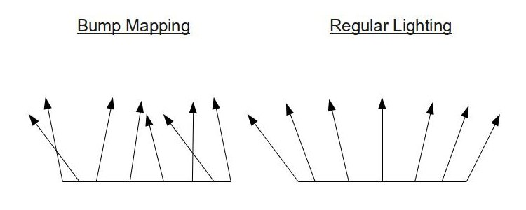
We now have our normal map and the true (or at least a good approximation of) surface normals are stored in it. Can we simply go ahead and use it? no. Think for a moment on the cube with the brick texture above. The same texture is applied on all six faces and therefore, the same normal map that goes along with it. The problem is that each face is pointing at a different direction so its interaction with an arbitrary light ray is different. If we use the normal vectors from map without any modification we would get incorrect results because the same normal vector cannot be correct for six faces pointing at different directions! For example, the normals of the top face point in the general direction of (0,1,0), even on a very bumpy surface. However, the normals of the bottom face point in the general direction of (0,-1,0). The point is that the normals are defined in their own private coordinate space and some conversion must be done in order to bring them to world space where they can participate in lighting calculations. In a sense, this concept is very similar to what we did with vertex normals. They were defined in the object local space and we transformed them to world space using the world matrix.
Let’s define the coordinate system in which the normal vectors exist. This coordinate system requires three orthogonal axes of unit length. Since the normal is part of a 2D texture and 2D textures have two orthogonal axis U and V (both of unit length) the common practice is to map the X component of the system to the U axis and the Y component to the V axis. Remember that U goes from left to right and V from bottom to top (the origin in that system is the bottom left corner of the texture). The Z component of the system is considered to be going straight up from the texture and is perpendicular to both X and Y:

The normal vectors can now be specified in reference to that coordinate system and stored in the RGB texels of the texture. Note that even on a bumpy surface we still expect the general direction of the normals to point out from the texture. i.e. the Z component is the dominant one while the X and Y just make the vector tilt a bit (or a lot) from side to side. Storing the XYZ vector in an RGB texel makes most normal maps rather bluish as in the following example:
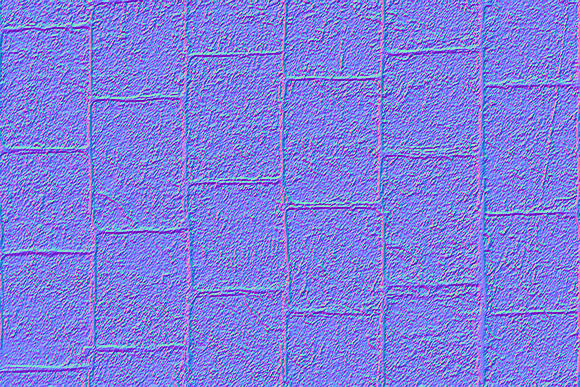
Here’s the first five texels of the top row of this normal map (when going from left to right): (136,102,248), (144,122,255), (141,145,253), (102, 168, 244) and (34,130,216). The dominance of the Z here cannot be mistaken.
What we do next is to go over all the triangles in our model and place the normal map on each one in a way that the texture coordinates of each vertex will match their location on the map. For example, say that the texture coordinate of a given triangle are (0.5,0), (1, 0.5) and (0,1). The normal map will be placed as follows:

In the picture above the coordinate system on the bottom left corner represents the object local space.
In addition to texture coordinates the three vertices also have 3D coordinates that represent their position in the object local space. When we placed the texture on top of the triangle above we’ve essentially given a value to the U and V vectors of the texture in the object local space. If we now calculate U and V in the object local space (as well as U cross V which is the normal to the texture) we can generate a transformation matrix to move the normals from the map into the object local space. From there they can be transformed to world space as usual and take part in lighting calculation. The common practice is to call the U vector in the object local space the Tangent and the V vector in the object local space the Bitangent. The transformation matrix that we need to generate is called a TBN matrix (Tangent-Bitangent-Normal). These Tangent-Bitangent-Normal vectors define a coordinate system known as Tangent (or texture ) space. Therefore, the normals in the map are stored in tangent/texture space. We will now find out how to calculate U and V in object space.t
Let’s take a look at the picture above more generically. We have triangle with three vertices at positions P0, P1 and P2 and texture coordinates (U0,V0), (U1,V1) and (U2,V2):
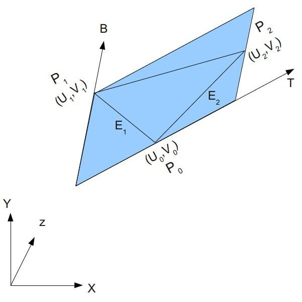
We want to find the vectors T (representing the tangent) and B (representing the bitangent) in object space. We can see that the two triangle edges E1 and E2 can be written as a linear combination of T and B:
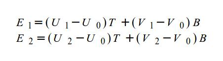
This can also be written as follows:
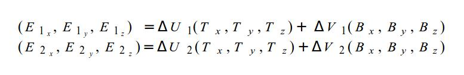
It is now very easy to move to a matrix form:
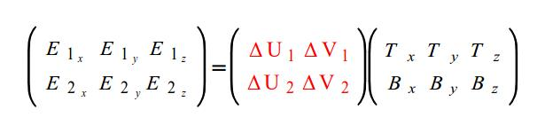
We want to extract the matrix on the right hand side. To do that we can multiply both ends of the equation by the inverse of the matrix marked in red above:

Now we have the following:
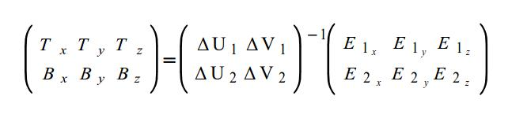
After calculating the matrix inverse we get:
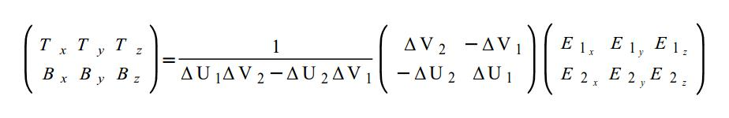
We can run this process on every triangle in the mesh and generate tangent and bitangent vectors per triangle (same vectors for the three triangle vertices). The common practice is to store a per-vertex tangent/bitangent by averaging all the tangents/bitangents of the triangles that share that vertex (same as we do for vertex normals). The reason is to smooth out the effect as we travel across the triangle face and avoid hard breaks on the edges of neighboring triangles. The third element of this coordinate system, the normal, is the cross product of the tangent and bitangent. This trio of Tangent-Bitangent-Normal can now serve as a basis for a coordinate system and be used to transform the normal from the normal map into the local object space. The next step is to transform it to world space and use it for lighting calculations. However, we can optimize it a bit by transforming the Tangent-Bitangent-Normal themselves into world space and only then transform the normal from the map. This will provide the normal in world space directly.
In this tutorial we will do the following:
- Supply the tangent vector to the vertex shader.
- Transform the tangent vector to world space and pass it to the fragment shader.
- Use the tangent vector and normal (both in world space) to calculate the bitangent in the fragment shader.
- Generate a world space transformation matrix using the tangent-bitangent-normal.
- Sample the normal from the normal map.
- Transform the normal to world space using the above matrix.
- Continue lighting calculations as usual.
There is one peculiarity which we will need to address in our code. On the pixel level the tangent-bitangent-normal are not really an orthonormal basis (three unit length vectors that are perpendicular to one another). Two reasons contribute to that - first, we average the tangents and normal per vertex according to the triangles that share it, and second, the tangents and normals are interpolated by the rasterizer and on the pixel level we see the interpolated result. This makes the tangent-bitangnet-normal loose some of their “orthonormal qualities”. But to transform from tangent space into world space we will need an orthonormal basis. The solution is to use the Gram-Schmidt process. This process takes a group of vectors and turns them into an orthonormal basis. In a nutshell, the process is as follows: select vector ‘A’ from the group and normalize it. Then select vector ‘B’ and break it into two components (the two components are vectors whose sum is ‘B’) where the first component points in the direction of ‘A’ and the second component is perpendicular to it. Now replace ‘B’ by the component that is perpendicular to ‘A’ and normalize it. Continue this process on all vectors in the group.
The end result of all this is that we are not using the mathematically correct tangent-bitangent-normal vectors but we are getting the required smoothness to avoid hard breaks on triangle edges.
Source walkthru
(mesh.h:33)
1struct Vertex
2{
3 Vector3f m_pos;
4 Vector2f m_tex;
5 Vector3f m_normal;
6 Vector3f m_tangent;
7
8 Vertex() {}
9
10 Vertex( const Vector3f& pos,
11 const Vector2f& tex,
12 const Vector3f& normal,
13 const Vector3f& Tangent)
14 {
15 m_pos = pos;
16 m_tex = tex;
17 m_normal = normal;
18 m_tangent = Tangent;
19 }
20};
This is our new Vertex structure with the new addition of the tangent vector. We will calculate the bitangent in the fragment shader. Note that the normal of the tangent space is identical to the regular triangle normal (since the texture and triangle are parallel). Therefore, the vertex normals in the two coordinate system are also identical.
1for (unsigned int i = 0 ; i < Indices.size() ; i += 3) {
2 Vertex& v0 = Vertices[Indices[i]];
3 Vertex& v1 = Vertices[Indices[i+1]];
4 Vertex& v2 = Vertices[Indices[i+2]];
5
6 Vector3f Edge1 = v1.m_pos - v0.m_pos;
7 Vector3f Edge2 = v2.m_pos - v0.m_pos;
8
9 float DeltaU1 = v1.m_tex.x - v0.m_tex.x;
10 float DeltaV1 = v1.m_tex.y - v0.m_tex.y;
11 float DeltaU2 = v2.m_tex.x - v0.m_tex.x;
12 float DeltaV2 = v2.m_tex.y - v0.m_tex.y;
13
14 float f = 1.0f / (DeltaU1 * DeltaV2 - DeltaU2 * DeltaV1);
15
16 Vector3f Tangent, Bitangent;
17
18 Tangent.x = f * (DeltaV2 * Edge1.x - DeltaV1 * Edge2.x);
19 Tangent.y = f * (DeltaV2 * Edge1.y - DeltaV1 * Edge2.y);
20 Tangent.z = f * (DeltaV2 * Edge1.z - DeltaV1 * Edge2.z);
21
22 Bitangent.x = f * (-DeltaU2 * Edge1.x + DeltaU1 * Edge2.x);
23 Bitangent.y = f * (-DeltaU2 * Edge1.y + DeltaU1 * Edge2.y);
24 Bitangent.z = f * (-DeltaU2 * Edge1.z + DeltaU1 * Edge2.z);
25
26 v0.m_tangent += Tangent;
27 v1.m_tangent += Tangent;
28 v2.m_tangent += Tangent;
29}
30
31for (unsigned int i = 0 ; i < Vertices.size() ; i++) {
32 Vertices[i].m_tangent.Normalize();
33}
This piece of code is an implementation of the algorithm that calculates the tangent vectors (described in the background section). The Indices array is traversed and the triangle vectors are retrieved from the Vertices array by their indices. We calculale the two edges by substracting the first vertex from the second and the third vertices. We do a similar thing with the texture coordinates and calculate the deltas along the U and V axes of the two edges. ‘f’ represents the fraction that appears on the right hand side of the final equation in the background section. Once ‘f’ is known both the tangent and bitangent can be calculated by multiplying it by the product of the two matrices. Note that the calculation of the bitangent appears for the sake of completeness. The only thing that we really need is the tangent which we accumulate into the three vertices. The last thing that we do is scan the Vertices array and normalize the tangents.
Now that you fully understand both the theory and imlementation I can tell you that we won’t be using this code in the tutorial. The Open Asset Import Library has a handy post processing flag called ‘aiProcess_CalcTangentSpace’ which does exactly that and calculates the tangent vectors for us (it’s good to know the implementation anyway in case you need to do it yourself in a future project). We only need to specify it when loading the model and then we can access the ‘mTangents’ array in the aiMesh class and fetch the tangents from there. Check the code for more details.
(mesh.cpp:195)
1void Mesh::Render()
2{
3 ...
4 glEnableVertexAttribArray(3);
5
6 for (unsigned int i = 0 ; i < m_Entries.size() ; i++) {
7 ...
8 glVertexAttribPointer(3, 3, GL_FLOAT, GL_FALSE, sizeof(Vertex), (const GLvoid*)32);
9 }
10 ...
11 glDisableVertexAttribArray(3);
12}
Since the Vertex structure has grown we need to make a few modification to the render function of the Mesh class. The fourth vertex attribute is enabled and we specify the location of the tangent in byte 32 (just after the normal) from the start of the vertex. Finally, the fourth attribute is disabled.
(lighting.vs)
1layout (location = 0) in vec3 Position;
2layout (location = 1) in vec2 TexCoord;
3layout (location = 2) in vec3 Normal;
4layout (location = 3) in vec3 Tangent;
5
6uniform mat4 gWVP;
7uniform mat4 gLightWVP;
8uniform mat4 gWorld;
9
10out vec4 LightSpacePos;
11out vec2 TexCoord0;
12out vec3 Normal0;
13out vec3 WorldPos0;
14out vec3 Tangent0;
15
16void main()
17{
18 gl_Position = gWVP * vec4(Position, 1.0);
19 LightSpacePos = gLightWVP * vec4(Position, 1.0);
20 TexCoord0 = TexCoord;
21 Normal0 = (gWorld * vec4(Normal, 0.0)).xyz;
22 Tangent0 = (gWorld * vec4(Tangent, 0.0)).xyz;
23 WorldPos0 = (gWorld * vec4(Position, 1.0)).xyz;
24}
This is the updated vertex shader. There isn’t a lot of new stuff here as most of the changes are in the fragment shader. The new addition is the tangent which is passed as an input, transformed to world space and passed on as an output.
(lighting.fs:132)
1vec3 CalcBumpedNormal()
2{
3 vec3 Normal = normalize(Normal0);
4 vec3 Tangent = normalize(Tangent0);
5 Tangent = normalize(Tangent - dot(Tangent, Normal) * Normal);
6 vec3 Bitangent = cross(Tangent, Normal);
7 vec3 BumpMapNormal = texture(gNormalMap, TexCoord0).xyz;
8 BumpMapNormal = 2.0 * BumpMapNormal - vec3(1.0, 1.0, 1.0);
9 vec3 NewNormal;
10 mat3 TBN = mat3(Tangent, Bitangent, Normal);
11 NewNormal = TBN * BumpMapNormal;
12 NewNormal = normalize(NewNormal);
13 return NewNormal;
14}
15
16void main()
17{
18 vec3 Normal = CalcBumpedNormal();
19 ...
The code above contains most of the changes in the fragment shader. All handling of the normal is encapsulated in the CalcBumpedNormal() function. We start by normalizing both the normal and the tangent vectors. The third line is the Gramm-Schmidt process. dot(Tangent, Normal) gives us the length of the projection of the tangent along the normal vector. The product of this length by the normal itself is the component of the tangent along the normal. Substract that from the tangent and we get a new vector which is perpendicular to the normal. This is our new tangent (just remember to normalize it as well…). A cross product between the tangent and the normal gives us the bitangent. Next, we sample the normal map and get the normal for this pixel (in tangent space). ‘gNormalMap’ is a new uniform of the sampler2D type to which we must bind the normal map before the draw. The normal is stored as a color so its components are in the range [0-1]. We transform it back to its original format using the function ‘f(x) = 2 * x - 1’. This function maps 0 to -1 and 1 to 1 and is simply the reverse of what happened when the normal map was generated.
We now need to transform the normal from tangent space into world space. We create a 3x3 matrix called TBN using one of the constructors of the ‘mat3’ type. This constructor takes three vectors as parameters and generates a matrix by placing the first parameter in the top row, the second in the middle and the third in the bottom row. If you wonder why this order and not another simply remember that the tangent is mapped to the X axis, the bitangent to the Y and the normal to the Z (see picture above). In the standard 3x3 identity matrix the top row contains the X axis, the middle the Y axis and the bottom the Z axis. We simply match this order. The tangent space normal is multiplied by the TBN matrix and the result is normalized before it is returned to the caller. This is the final pixel normal.
The sample that accompanies this tutorial comes with three JPEG files:
- ‘bricks.jpg’ is the color texture.
- ’normal_map.jpg’ is the normal map that was generated from ‘bricks.jpg’.
- ’normal_up.jpg’ is a trivial normal map where all normals point straight upwards. When this normal map is used the effect is as if no normal mapping takes place. It is simpler to bind this texture when we want to disable normal mapping then to use two different techniques (albeit less efficient). You can use the ‘b’ key to toggle between normal-mapping and no-normal-mapping and see the effect.
The normal map is bound to texture unit 2 which is now the standard texture unit for that purpose (0 is the color and 1 is the shadow map).
Note on normal map generation:
There are many ways to generate a normal map. For this tutorial I used gimp which is free and open source and its normal map plugin. Once you have the plugin installed simply load the texture that you plan to use for the model, go to Filters->Map->Normalmap. You will be able to change many aspects of the normal map and configure it in different ways. When satisfied click ‘OK’. The normal map will replace the original texture in the main view of gimp. Save it under a new filename and use it in your samples.
Tutorial 27:Billboarding and the Geometry Shader
Background
We’ve been utilizing the vertex and the fragment shaders from early on in this series of tutorials but in fact we left out an important shader stage called the Geometry Shader (GS). This type of shader was introduced by Microsoft in DirectX10 and was later incorporated into the core OpenGL in version 3.2. While the VS is executed per vertex and the FS is executed per pixel the GS is executed per primitive. This means that if we are drawing triangles each invocation of the GS receives exactly one triangle; if we are drawing lines each invocation of the GS receives exactly one line, etc. This provides the GS a unique view of the model where the connectivity between the vertices is exposed to the developer, allowing her to develop new techniques that are based on that knowledge.
While the vertex shader always takes one vertex as input and outputs one vertex (i.e. it cannot create or destroy vertices on the fly) the GS has the unique capability of making changes to the primitives that are passing through it. These changes include:
- Changing the topology of the incoming primitives. The GS can receive primitives in any topology type but can only output point lists, line strips and triangle strips (the strip topologies are described below).
- The GS takes one primitive as input and can either drop it altogether or output one or more primitives (this means that it can produce both less and more vertices than what it got). This capability is known as growing geometry. We will take advantage of this capability in this tutorial.
Geometry shaders are optional. If you compile a program without a GS the primitives will simply flow directly from the vertex shader down to the fragment shader. That’s why we’ve been able to get to this point without mentioning them.
Triangle lists are constructed using trios of vertices. Vertices 0-2 are the first triangle, vertices 3-5 are the second and so forth. To calculate the number of triangles generated from any number of vertices simply divide the number of vertices by 3 (dropping the remainder). Triangle strips are more efficient because instead of adding 3 vertices to get a new triangle most of the time we just need to add one vertex. To construct a triangle strip start out with 3 vertices for the first triangle. When you add a fourth vertex you get the second triangle which is constructed from vertices 1-3. When you add a fifth vertex you get the third triangle which is constructed from vertices 2-4, etc. So from the second triangle and on every new vertex is joined with the previous two to create a new triangle. Here’s an example:
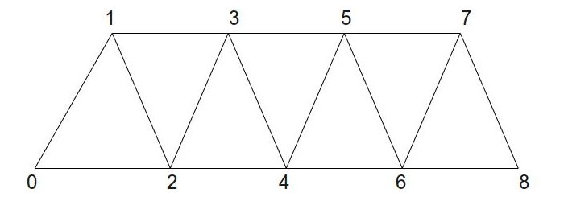
As you can see, 7 triangles were created from just 9 vertices. If this was a triangle list we would have only 3 triangles.
Triangle strips have an important property with regard to the winding order inside the triangles - the order is reversed on the odd triangles. This means that the order is as follows: [0,1,2], [1,3,2], [2,3,4], [3,5,4], etc. The following picture shows that ordering:
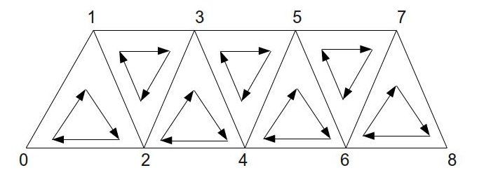
Now that we understand the concept of geometry shaders let’s see how they can help us implement a very useful and popular technique called billboarding. A billboard is a quad which always faces the camera. As the camera moves around the scene the billboard turns with it so that the vector from the billboard to the camera is always perpedicular to the billboard face. This is the same idea as billboards in the real world that are placed along the highways in a way that will make them as visible as possible to the cars that are passing by. Once we got the quad to face the camera it is very easy to texture map it with the image of a monster, tree or whatever and create a large number of scene objects that always face the camera. Billboards are often used to create a forest where a large number of trees is required in order to create the effect. Since the texture on the billboard is always facing the camera the player is fooled into thinking that the object has real depth where in fact it is completely flat. Each billboard requires only 4 vertices and therefore it it much cheaper in comparison to a full blown model.
In this tutorial we create a vertex buffer and populate it with world space locations for the billboards. Each location is just a single point (3D vector). We will feed the locations into the GS and grow each location into a quad. This means that the input topology of the GS will be point list while the output topology will be triangle strip. Taking advantage of triangle strips we will create a quad using 4 vertices:
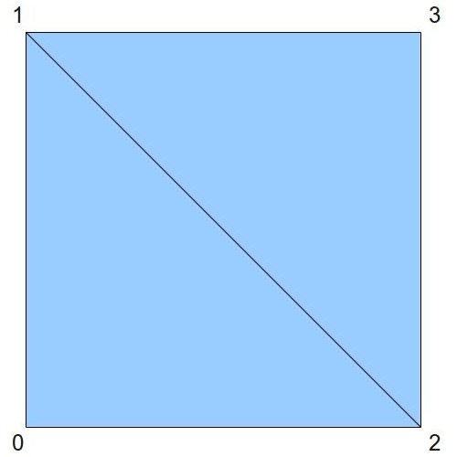
The GS will take care of turning the quad to face the camera and will attach the proper texture coordinates to each outgoing vertex. The fragment shader will only need to sample the texture and provide the final color.
Let’s see how we can make the billboard always face the camera. In the following picture the black dot represents the camera and the red dot represents the location of the billboard. Both dots are in world space and while it looks like they are located on a surface which is parallel to the XZ plane they don’t have to be. Any two points will do.

We now create a vector from the billboard location to the camera:
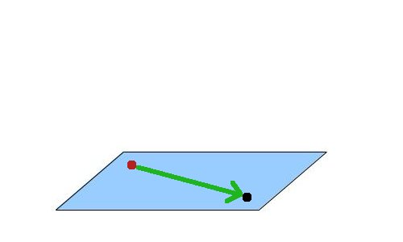
Next we add the vector (0,1,0):
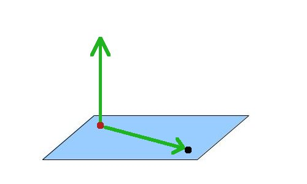
Now do a cross product between these two vectors. The result is a vector which is perpedicular to the surface created by the two vectors. This vector points in the exact direction along which we need to extend the point and create a quad. The quad will be perpedicular to the vector from the original point to the camera, which is what we want. Looking at the same scene from above we get the following (the yellow vector is the result of the cross product):

One of the things that often confuses developers is in what order to do the cross product (A cross B or B cross A?). The two options produce two vectors that are opposite to one another. Knowing in advance the resulting vector is critical because we need to output the vertices such that the two triangles that make up the quad will be in clockwise order when looking at them from the point of view of the camera. The left hand rule comes to our rescue here. This rule says that if you are standing at the location of the billboard and your forefinger is pointing towards the camera and your middle finger is pointing upwards (towards the sky) then your thumb will point along the result of “forefinger” cross “middle finger” (the remaining two fingers are often kept clamped here). In this tutorial we call the result of the cross product the “right” vector because it points toward the right when looking at your hand like that from the camera point of view. Doing a “middle finger” cross “forefinger” will simply generate the “left” vector.
(We are using the left hand rule because we are working in a left hand coordinate system (Z grows as we move further into the scene). The right hand coordinate system is exactly the reverse).
Source walkthru
(billboard_list.h:27)
1class BillboardList
2{
3public:
4 BillboardList();
5 ~BillboardList();
6
7 bool Init(const std::string& TexFilename);
8
9 void Render(const Matrix4f& VP, const Vector3f& CameraPos);
10
11private:
12 void CreatePositionBuffer();
13
14 GLuint m_VB;
15 Texture* m_pTexture;
16 BillboardTechnique m_technique;
17};
The BillboardList class encapsultes everything you need in order to generate billboards. The Init() function of the class takes the filename that contains the image which will be texture mapped on the billboard. The Render() function is called from the main render loop and takes care of setting up the state and rendering the billboard. This function needs two parameters: the combined view and projection matrix and the location of the camera in world space. Since the billboard location is specified in world space we go directly to view and projection and skip the world transformation part. The class has three private attributes: a vertex buffer to store the location of the billboards, a pointer to the texture to map on the billboard and the billboard technique that contains the relevant shaders.
(billboard_list.cpp:80)
1void BillboardList::Render(const Matrix4f& VP, const Vector3f& CameraPos)
2{
3 m_technique.Enable();
4 m_technique.SetVP(VP);
5 m_technique.SetCameraPosition(CameraPos);
6
7 m_pTexture->Bind(COLOR_TEXTURE_UNIT);
8
9 glEnableVertexAttribArray(0);
10
11 glBindBuffer(GL_ARRAY_BUFFER, m_VB);
12 glVertexAttribPointer(0, 3, GL_FLOAT, GL_FALSE, sizeof(Vector3f), 0); // position
13
14 glDrawArrays(GL_POINTS, 0, NUM_ROWS * NUM_COLUMNS);
15
16 glDisableVertexAttribArray(0);
17}
This function enables the billboard technique, sets the required state into OpenGL and draws the points that are turned into quads in the GS. In this demo the billboards are laid out in strict rows and columns which explains why we multiply them to get the number of points in the buffer. Note that we are using point list as our input topology. The GS will need to match that.
(billboard_technique.h:24)
1class BillboardTechnique : public Technique
2{
3public:
4 BillboardTechnique();
5
6 virtual bool Init();
7
8 void SetVP(const Matrix4f& VP);
9 void SetCameraPosition(const Vector3f& Pos);
10 void SetColorTextureUnit(unsigned int TextureUnit);
11
12private:
13 GLuint m_VPLocation;
14 GLuint m_cameraPosLocation;
15 GLuint m_colorMapLocation;
16};
This is the interface of the billboard technique. It requires only three parameters in order to do its job: the combined view/projection matrix, the position of the camera in world space and the number of the texture unit where the billboard texture is bound.
(billboard.vs)
1#version 330
2
3layout (location = 0) in vec3 Position;
4
5void main()
6{
7 gl_Position = vec4(Position, 1.0);
8}
This is the VS of the billboard technique and with most of the action taking place in the GS you cannot ask for a simpler VS. The vertex buffer contains only position vectors and since they are already specified in world space we only need to pass them through to the GS. That’s it.
(billboard.gs:1)
1#version 330
2
3layout (points) in;
4layout (triangle_strip) out;
5layout (max_vertices = 4) out;
The core of the billboard technique is located in the GS. Let’s take a look at it piece by piece. We start by declaring some global stuff using the ’layout’ keyword. We tell the pipeline that the incoming topology is point list and the outgoing topology is triangle strip. We also tell it that we will emit no more than four vertices. This keyword is used to give the graphics driver a hint about the maximum number of vertices that can be emitted by the GS. Knowning the limit in advance gives the driver an opportunity to optimize the behavior of the GS for the particular case. Since we know that we are going to emit a quad for each incoming vertex we declare the maximum as four vertices.
(billboard.gs:7)
1uniform mat4 gVP;
2uniform vec3 gCameraPos;
3
4out vec2 TexCoord;
The GS gets the position in world space so it only needs a view/projection matrix. It also needs the camera location in order to calculate how to orient the billboard towards it. The GS generates texture coordinates for the FS so we must declare them.
(billboard.gs:12)
1void main()
2{
3 vec3 Pos = gl_in[0].gl_Position.xyz;
The line above is unique to the GS. Since it is executed on a complete primitive we actually have access to each of the vertices that comprise it. This is done using the built-in variable ‘gl_in’. This variable is an array of structures that contains, among other things, the position that was written into gl_Position in the VS. To access it we go to the slot we are interested in using the index of the vertex. In this specific example the input topology is point list so there is only a single vertex. We access it using ‘gl_in[0]’. If the input topology was a triangle we could also have written ‘gl_in[1]’ and ‘gl_in[2]’. We only need the first three components of the position vector and we extract them to a local variable using ‘.xyz’.
1vec3 toCamera = normalize(gCameraPos - Pos);
2vec3 up = vec3(0.0, 1.0, 0.0);
3vec3 right = cross(toCamera, up);
Here we make the billboard face the camera per the explanation at the end of the background section. We do a cross product between the vector from the point to the camera and a vector that points straight up. This provides the vector that points right when looking at the point from the camera point of view. We will now use it to ‘grow’ a quad around the point.
1Pos -= (right * 0.5);
2gl_Position = gVP * vec4(Pos, 1.0);
3TexCoord = vec2(0.0, 0.0);
4EmitVertex();
5
6Pos.y += 1.0;
7gl_Position = gVP * vec4(Pos, 1.0);
8TexCoord = vec2(0.0, 1.0);
9EmitVertex();
10
11Pos.y -= 1.0;
12Pos += right;
13gl_Position = gVP * vec4(Pos, 1.0);
14TexCoord = vec2(1.0, 0.0);
15EmitVertex();
16
17Pos.y += 1.0;
18gl_Position = gVP * vec4(Pos, 1.0);
19TexCoord = vec2(1.0, 1.0);
20EmitVertex();
21EndPrimitive();
22}
The point in the vertex buffer is considered to be at the center of the bottom of the quad. We need to generate two front facing triangles from it. We start by going left to the bottom left corner of the quad. This is done by substracting half of the ‘right’ vector from the point. Next we calculate the position in clip space by mutiplying the point by the view/projection matrix. We also set the texture coordinate to (0,0) because we plan to cover the entire texture space using the quad. To send the newly generated vertex down the pipe we call the built-in function EmitVertex(). After this functionn is called the variables that we have written to are considered undefined and we have to set new data for them. In a similar way we generate the top left and bottom right corners of the quad. This is the first front facing triangle. Since the output topology of the GS is triangle strip we only need one more vertex for the second triangle. It will be structured using the new vertex and the last two vertices (which are the quad diagonal). The fourth and final vertex is the top right corner of the quad. To end the triangle strip we call the built-in function EndPrimitive().
(billboard.fs)
1#version 330
2
3uniform sampler2D gColorMap;
4
5in vec2 TexCoord;
6out vec4 FragColor;
7
8void main()
9{
10 FragColor = texture2D(gColorMap, TexCoord);
11
12 if (FragColor.r == 0 && FragColor.g == 0 && FragColor.b == 0) {
13 discard;
14 }
15}
The FS is very simple - most of its work is to sample the texture using the texture coordinates generated by the GS. There is a new feature here - the built-in keyword ‘discard’ is used in order to drop a pixel completely on certain cases. The picture of the hell-knight from Doom which is included in this tutorial shows the monster on a black background. Using this texture as-is will make the billboard look like a full sized card which is much larger than the monster itself. To overcome this we test the texel color and if it is black we drop the pixel. This allows us to select only the pixels that actually make up the monster. Try to disable ‘discard’ and see the difference.
Tutorial 28:Particle System using Transform Feedback
Background
Particle System is a general name of a large number of techniques that simulate natural phenomena such as smoke, dust, fireworks, rain, etc. The common theme in all these phenomena is that they are composed of a large amount of small particles that move together in a way which is characteristic of each type of phenomenon.
In order to simulate a natural phenomenon made from particles we usually maintain the position as well as other attributes for each particle (velocity, color, etc) and perform the following steps once per frame:
- Update the attributes of each particle. This step usually involves some math calculations (ranging from very simple to very complex - depending on the complexity of the phenomenon).
- Render the particles (as simple colored points or full blown texture mapped billboard quads).
In the past step 1 usually took place on the CPU. The application would access the vertex buffer, scan its contents and update the attributes of each and every particle. Step 2 was more straightforward and took place on the GPU as any other type of rendering. There are two problems with this approach:
- Updating the particles on the CPU requires the OpenGL driver to copy the contents of the vertex buffer from the GPU memory (on discrete cards this means over the PCI bus) to the CPU memory. The phenomena that we are insterested in usually require a large amount of particles. 10,000 particles is not a rare number in that regard. If each particle takes up 64 bytes and we are running at 60 frames per second (very good frame rate) this means copying back and forth 640K from the GPU to the CPU 60 times each second. This can have an negative effect on the performance of the application. As the number of particles grows larger the effect increases.
- Updating the particle attributes means running the same mathematical formula on different data items. This is a perfect example of distributed computing that the GPU excels at. Running it on the CPU means serializing the entire update process. If our CPU is multi core we can take advantage of it and reduce the total amount of time but that requires more work from the application. Running the update process on the GPU means that we get parallel execution for free.
DirectX10 introduced a new feature known as Stream Output that is very useful for implementing particle systems. OpenGL followed in version 3.0 with the same feature and named it Transform Feedback. The idea behind this feature is that we can connect a special type of buffer (called Transform Feedback Buffer right after the GS (or the VS if the GS is absent) and send our transformed primitives to it. In addition, we can decide whether the primitives will also continue on their regular route to the rasterizer. The same buffer can be connected as a vertex buffer in the next draw and provide the vertices that were output in the previous draw as input into the next draw. This loop enables the two steps above to take place entirely on the GPU with no application involvement (other than connecting the proper buffers for each draw and setting up some state). The following diagram shows the new architecture of the pipeline:

How many primitives end up in the transform feedback buffer? well, if there is no GS the answer is simple - it is based on the number of vertices from the draw call parameters. However, if the GS is present the number of primitives is unknown. Since the GS is capable of creating and destroying primitives on the fly (and can also include loops and branches) we cannot always calculate the total number of primitives that will end up in the buffer. So how can we draw from it later when we don’t know exactly the number of vertices it contains? To overcome this challenge transform feedback also introduced a new type of draw call that does not take the number of vertices as a parameter. The system automatically tracks the number of vertices for us for each buffer and later uses that number internally when the buffer is used for input. If we append several times to the transform feedback buffer (by drawing into it several times without using it as input) the number of vertices is increased accordingly. We have the option of reseting the offset inside the buffer whenever we want and the system will also reset the number of vertices.
In this tutorial we will use transform feedback in order to simulate the effect of fireworks. Fireworks are relatively easy to simulate in terms of the math involved so we will be able to focus on getting transform feedback up and running. The same framework can later be used for other types of particle systems as well.
OpenGL enforces a general limitation that the same resource cannot be bound for both input and output in the same draw call. This means that if we want to update the particles in a vertex buffer we actually need two transform feedback buffers and toggle between them. On frame 0 we will update the particles in buffer A and render the particles from buffer B and on frame 1 we will update the particles in buffer B and render the particles from buffer A. All this is transparent to the viewer.
In addition, we will also have two techniques - one technique will be responsible for updating the particles and the other for rendering. We will use the billboarding technique from the previous tutorial for rendering so make sure you are familiar with it.
Source walkthru
(particle_system.h:29)
1class ParticleSystem
2{
3public:
4 ParticleSystem();
5
6 ~ParticleSystem();
7
8 bool InitParticleSystem(const Vector3f& Pos);
9
10 void Render(int DeltaTimeMillis, const Matrix4f& VP, const Vector3f& CameraPos);
11
12private:
13
14 bool m_isFirst;
15 unsigned int m_currVB;
16 unsigned int m_currTFB;
17 GLuint m_particleBuffer[2];
18 GLuint m_transformFeedback[2];
19 PSUpdateTechnique m_updateTechnique;
20 BillboardTechnique m_billboardTechnique;
21 RandomTexture m_randomTexture;
22 Texture* m_pTexture;
23 int m_time;
24};
The ParticleSystem class encapsulates all the mechanics involved in managing the transform feedback buffer. One instance of this class is created by the application and initialized with the world space position of the fireworks launcher. In the main render loop the ParticleSystem::Render() function is called and takes three parameters: the delta time from the previous call in milliseconds, the product of the viewport and projection matrices and the world space position of the camera. The class also has a few attributes: an indicator for the first time Render() is called, two indices that specify which buffer is currently the vertex buffer (input) and which is the transform feedback buffer (output), two handles for the vertex buffers, two handles for the transform feedback objects, the update and render techniques, a texture that contains random numbers, the texture that will be mapped on the particles and the current global time variable.
(particle_system.cpp:31)
1struct Particle
2{
3 float Type;
4 Vector3f Pos;
5 Vector3f Vel;
6 float LifetimeMillis;
7};
Each particle has the above structure. A particle can be either a launcher, a shell or a secondary shell. The launcher is static and is responsible for generating the other particles. It is unique in the system. The launcher periodically creates shell particles and fires them upwards. After a few seconds the shells explode into secondary shells that fly into random directions. All particles except the launcher has a lifetime which is tracked by the system in milliseconds. When the lifetime reaches a certain threshold the particle is removed. Each particle also has a current position and velocity. When a particle is created it is given some velocity (a vector). This velocity is influenced by gravity which pulls the particle down. On every frame we use the velocity to update the world position of the particle. This position is used later to render the particle.
(particle_system.cpp:67)
1bool ParticleSystem::InitParticleSystem(const Vector3f& Pos)
2{
3 Particle Particles[MAX_PARTICLES];
4 ZERO_MEM(Particles);
5
6 Particles[0].Type = PARTICLE_TYPE_LAUNCHER;
7 Particles[0].Pos = Pos;
8 Particles[0].Vel = Vector3f(0.0f, 0.0001f, 0.0f);
9 Particles[0].LifetimeMillis = 0.0f;
10
11 glGenTransformFeedbacks(2, m_transformFeedback);
12 glGenBuffers(2, m_particleBuffer);
13
14 for (unsigned int i = 0; i < 2 ; i++) {
15 glBindTransformFeedback(GL_TRANSFORM_FEEDBACK, m_transformFeedback[i]);
16 glBindBuffer(GL_ARRAY_BUFFER, m_particleBuffer[i]);
17 glBufferData(GL_ARRAY_BUFFER, sizeof(Particles), Particles, GL_DYNAMIC_DRAW);
18 glBindBufferBase(GL_TRANSFORM_FEEDBACK_BUFFER, 0, m_particleBuffer[i]);
19 }
This is the first part of the initialization of the particle system. We set up storage for all the particles on the stack and initialize just the first particle as a launcher (the remaining particles will be created at render time). The position of the launcher is also the starting position of all the particles it is going to create and the velocity of the launcher is their starting velocity (the launcher itself is static). We are going to use two transform feedback buffers and toggle between them (drawing into one while using the other as input and vice verse) so we create two transform feedback objects using the function glGenTransformFeedbacks. The transform feedback object encapsulates all the state that is attached to the transform feedback object. We also create two buffer objects - one for each transform feedback object. We then perform the same series of operations for both objects (see below).
We start by binding a transform feedback object to the GL_TRANSFORM_FEEDBACK target using glBindTransformFeedback() function. This makes the object “current” so that following operations (relevant to transform feedback) are performed on it. Next we bind the the corresponding buffer object to the GL_ARRAY_BUFFER which makes it a regular vertex buffer and load the contents of the particle array into it. Finally we bind the corresponding buffer object to the GL_TRANSFORM_FEEDBACK_BUFFER target and specify the buffer index as zero. This makes this buffer a transform feedback buffer and places it as index zero. We can have the primitives redirected into more than one buffer by binding several buffers at different indices. Here we only need one buffer. So now we have two transform feedback objects with corresponding buffer objects that can serve both as vertex buffers as well as transform feedback buffers.
We won’t review the remainder of the InitParticleSystem() function because there is nothing new there. We simply need to initialize the two techniques (members of the ParticleSystem class) and set some static state into them as well as load the texture that will be mapped on the particles. Check the code for more details.
(particle_system.cpp:124)
1void ParticleSystem::Render(int DeltaTimeMillis, const Matrix4f& VP, const Vector3f& CameraPos)
2{
3 m_time += DeltaTimeMillis;
4
5 UpdateParticles(DeltaTimeMillis);
6
7 RenderParticles(VP, CameraPos);
8
9 m_currVB = m_currTFB;
10 m_currTFB = (m_currTFB + 1) & 0x1;
11}
This is the main render function of the ParticleSystem class. It is responsible for updating the global time counter and toggling between the two buffer indices (’m_currVB’ is the current vertex buffer and is initialized to 0 while ’m_currTFB’ is the current transform feedback buffer and is initialized to 1). The main job of this function is to call the two private functions that update the particle attributes and then render them. Let’s take a look at how we update the particles.
(particle_system.cpp:137)
1void ParticleSystem::UpdateParticles(int DeltaTimeMillis)
2{
3 m_updateTechnique.Enable();
4 m_updateTechnique.SetTime(m_time);
5 m_updateTechnique.SetDeltaTimeMillis(DeltaTimeMillis);
6
7 m_randomTexture.Bind(RANDOM_TEXTURE_UNIT);
We start the particle update by enabling the corresponding technique and setting some dynamic state into it. The technique will need to know the amount of time that has passed from the previous render because this is the factor in the movement equation and it needs the global time as a semi random seed for accessing the random texture. We dedicate GL_TEXTURE3 as the texture unit for binding random textures. The random texture is used to provide directions for the generated particles (we will later see how this texture is created).
1 glEnable(GL_RASTERIZER_DISCARD);
The next function call is something that we haven’t seen before. Since the only purpose of the draw call further down this function is to update the transform feedback buffer we prefer to cut the flow of primitives after that and prevent them from also being rasterized to the screen. We have another draw call later on that does that. Calling glEnable() with the GL_RASTERIZER_DISCARD flag tells the pipeline to discard all primitives before they reach the rasterizer (but after the optional transform feedback stage).
1 glBindBuffer(GL_ARRAY_BUFFER, m_particleBuffer[m_currVB]);
2 glBindTransformFeedback(GL_TRANSFORM_FEEDBACK, m_transformFeedback[m_currTFB]);
The next two calls handle the toggling between the roles of the two buffers that we have created. ’m_currVB’ is used as an index (either 0 or 1) into the array of VBs and we bind the buffer in that slot as a vertex buffer (for input). ’m_currTFB’ is used as an index (always opposing ’m_currVB’) into the transform feedback object array and we bind the object in that slot as transform feedback (which brings along with it the attached state - the actual buffer).
1 glEnableVertexAttribArray(0);
2 glEnableVertexAttribArray(1);
3 glEnableVertexAttribArray(2);
4 glEnableVertexAttribArray(3);
5
6 glVertexAttribPointer(0,1,GL_FLOAT,GL_FALSE,sizeof(Particle),0); // type
7 glVertexAttribPointer(1,3,GL_FLOAT,GL_FALSE,sizeof(Particle),(const GLvoid*)4); // position
8 glVertexAttribPointer(2,3,GL_FLOAT,GL_FALSE,sizeof(Particle),(const GLvoid*)16); // velocity
9 glVertexAttribPointer(3,1,GL_FLOAT,GL_FALSE,sizeof(Particle),(const GLvoid*)28); // lifetime
We already know the next few function calls. They simply set up the vertex attributes of the particles in the vertex buffer. You will later see how we make sure that the input layout is the same as the output layout.
1 glBeginTransformFeedback(GL_POINTS);
The real fun starts here. glBeginTransformFeedback() makes transform feedback active. All the draw calls after that, and until glEndTransformFeedback() is called, redirect their output to the transform feedback buffer according to the currently bound transform feedback object. This function also takes a topology parameter. The way transform feedback works is that only complete primitives (i.e. lists) can be written into the buffer. This means that if you draw four vertices in triangle strip topology or six vertices in triangle list topology, you end up with six vertices (two triangles) in the feedback buffer in both cases. The available topologies to this function are therefore:
- GL_POINTS - the draw call topology must also be GL_POINTS.
- GL_LINES - the draw call topology must be GL_LINES, GL_LINE_LOOP or GL_LINE_STRIP.
- GL_TRIANGLES - the draw call topology must be GL_TRIANGLES, GL_TRIANGLE_STRIP or GL_TRIANGLE_FAN.
1 if (m_isFirst) {
2 glDrawArrays(GL_POINTS, 0, 1);
3 m_isFirst = false;
4 }
5 else {
6 glDrawTransformFeedback(GL_POINTS, m_transformFeedback[m_currVB]);
7 }
As described earlier, we have no way of knowing how many particles end up in the buffer and transform feedback supports this. Since we generate and destroy particles based on the launcher frequency and each particle lifetime, we cannot tell the draw call how many particles to process. This is all true - except for the very first draw. In this case we know that our vertex buffer contains only the launcher and the “system” doesn’t have any record of previous transform feedback activity so it cannot tell the number of particles on its own. This is why the first draw must be handled explicitly using a standard glDrawArrays() function of a single point. The remaining draw calls will be done using glDrawTransformFeedback(). This function doesn’t need to be told how many vertices to process. It simply checks the input buffer and draws all the vertices that have been previously written into it (when it was bound as a transform feedback buffer). Note that whenever we bind a transform feedback object the number of vertices in the buffer becomes zero because we called glBindBufferBase() on that buffer while the transform feedback object was originally bound (see the initialization part) with the parameter zero as the offset. OpenGL remembers that so we don’t need to call glBindBufferBase() again. It simply happens behind the scenes when the transform feedback object is bound.
glDrawTransformFeedback() takes two parameters. The first one is the topology. The second one is the transform feedback object to which the current vertex buffer is attached. Remember that the currently bound transform feedback object is m_transformFeedback[m_currTFB]. This is the target of the draw call. The number of vertices to process as input comes from the transform feedback object which was bound as a target in the previous time we went through ParticleSystem::UpdateParticles(). If this is confusing, simply remember that when we draw into transform feedback object #1 we want to take the number of vertices to draw from transform feedback #0 and vice versa. Today’s input is tomorrow’s output.
1 glEndTransformFeedback();
Every call to glBeginTransformFeedback() must be paired with glEndTransformFeedback(). If you miss that things will break pretty quick.
1 glDisableVertexAttribArray(0);
2 glDisableVertexAttribArray(1);
3 glDisableVertexAttribArray(2);
4 glDisableVertexAttribArray(3);}
The end of the function is standard. When we get to this point all the particles have been updated. Let’s see how to render them in their new positions.
(particle_system.cpp:177)
1void ParticleSystem::RenderParticles(const Matrix4f& VP, const Vector3f& CameraPos)
2{
3 m_billboardTechnique.Enable();
4 m_billboardTechnique.SetCameraPosition(CameraPos);
5 m_billboardTechnique.SetVP(VP);
6 m_pTexture->Bind(COLOR_TEXTURE_UNIT);
We start the actual rendering by enabling the billboarding technique and setting some state into it. Each particle will be extended into a quad and the texture that we bind here will be mapped on its face.
1 glDisable(GL_RASTERIZER_DISCARD);
Rasterization was disabled while we were writing into the feedback buffer. We enable it by disabling the GL_RASTERIZER_DISCARD feature.
1 glBindBuffer(GL_ARRAY_BUFFER, m_particleBuffer[m_currTFB]);
When we wrote into the transform feedback buffer we bound m_transformFeedback[m_currTFB] as the transform feedback object (the target). That object has m_particleBuffer[m_currTFB] as the attached vertex buffer. We now bind this buffer to provide the input vertices for rendering.
1 glEnableVertexAttribArray(0);
2
3 glVertexAttribPointer(0, 3, GL_FLOAT, GL_FALSE, sizeof(Particle), (const GLvoid*)4); // position
4
5 glDrawTransformFeedback(GL_POINTS, m_transformFeedback[m_currTFB]);
6
7 glDisableVertexAttribArray(0);}
The particle in the transform feedback buffer has four attributes. In order to render it we only need position so only a single attribute is enabled. Make sure that the stride (distance between that attribute in two consecutive vertices) is set to sizeof(Particle) to accomodate the three attributes that we ignore. Failing to do so will result in a corrupted image.
In order to draw we use glDrawTransformFeedback() again. The second parameter is the transform feedback object that matches the input vertex buffer. This object “knows” how many vertices to draw.
(ps_update_technique.cpp:151)
1bool PSUpdateTechnique::Init()
2{
3 if (!Technique::Init()) {
4 return false;
5 }
6
7 if (!AddShader(GL_VERTEX_SHADER, pVS)) {
8 return false;
9 }
10
11 if (!AddShader(GL_GEOMETRY_SHADER, pGS)) {
12 return false;
13 }
14
15 const GLchar* Varyings[4];
16 Varyings[0] = "Type1";
17 Varyings[1] = "Position1";
18 Varyings[2] = "Velocity1";
19 Varyings[3] = "Age1";
20
21 glTransformFeedbackVaryings(m_shaderProg, 4, Varyings, GL_INTERLEAVED_ATTRIBS);
22
23 if (!Finalize()) {
24 return false;
25 }
26
27 m_deltaTimeMillisLocation = GetUniformLocation("gDeltaTimeMillis");
28 m_randomTextureLocation = GetUniformLocation("gRandomTexture");
29 m_timeLocation = GetUniformLocation("gTime");
30 m_launcherLifetimeLocation = GetUniformLocation("gLauncherLifetime");
31 m_shellLifetimeLocation = GetUniformLocation("gShellLifetime");
32 m_secondaryShellLifetimeLocation = GetUniformLocation("gSecondaryShellLifetime");
33
34 if (m_deltaTimeMillisLocation == INVALID_UNIFORM_LOCATION ||
35 m_timeLocation == INVALID_UNIFORM_LOCATION ||
36 m_randomTextureLocation == INVALID_UNIFORM_LOCATION) {
37 m_launcherLifetimeLocation == INVALID_UNIFORM_LOCATION ||
38 m_shellLifetimeLocation == INVALID_UNIFORM_LOCATION ||
39 m_secondaryShellLifetimeLocation == INVALID_UNIFORM_LOCATION) {
40 return false;
41 }
42 return true;
43
44}
You now understand the mechanics of creating a transform feedback object, attaching a buffer to it and rendering into it. But there is still the question of what exactly goes into the feedback buffer? Is it the entire vertex? Can we specify only a subset of the attributes and what is the order between them? The answer to these questions lies in the code in boldface above. This function initializes the PSUpdateTechnique which handles the update of the particles. We use it within the scope of glBeginTransformFeedback() and glEndTransformFeedback(). To specify the attributes that go into the buffer we have to call glTransformFeedbackVaryings() before the technique program is linked. This function takes four parameters: the program handle, an array of strings with the name of the attributes, the number of strings in the array and either GL_INTERLEAVED_ATTRIBS or GL_SEPARATE_ATTRIBS. The strings in the array must contain names of output attributes from the last shader before the FS (either VS or GS). When transform feedback is active these attributes will be written into the buffer per vertex. The order will match the order inside the array. The last parameter to glTransformFeedbackVaryings() tells OpenGL either to write all the attributes as a single structure into a single buffer (GL_INTERLEAVED_ATTRIBS). Or to dedicate a single buffer for each attribute (GL_SEPARATE_ATTRIBS). If you use GL_INTERLEAVED_ATTRIBS you can only have a single transform feedback buffer bound (as we do). If you use GL_SEPARATE_ATTRIBS you will need to bind a different buffer to each slot (according to the number of attributes). Remember that the slot is specified as the second parameter to glBindBufferBase(). In addition, you are limited to no more than GL_MAX_TRANSFORM_FEEDBACK_SEPARATE_ATTRIBS attribute slots (which is usually 4).
Other than glTransformFeedbackVaryings() the initialization stuff is pretty standard. But note that the FS is missing from it. If we disable rasterization when we update the particles we don’t need a FS…
(ps_update.vs)
1#version 330
2
3layout (location = 0) in float Type;
4layout (location = 1) in vec3 Position;
5layout (location = 2) in vec3 Velocity;
6layout (location = 3) in float Age;
7
8out float Type0;
9out vec3 Position0;
10out vec3 Velocity0;
11out float Age0;
12
13void main()
14{
15 Type0 = Type;
16 Position0 = Position;
17 Velocity0 = Velocity;
18 Age0 = Age;
19}
This is the VS of the particle update technique and as you can see - it is very simple. All it does is pass through the vertices to the GS (where the real action takes place).
(ps_update.gs)
1#version 330
2
3layout(points) in;
4layout(points) out;
5layout(max_vertices = 30) out;
6
7in float Type0[];
8in vec3 Position0[];
9in vec3 Velocity0[];
10in float Age0[];
11
12out float Type1;
13out vec3 Position1;
14out vec3 Velocity1;
15out float Age1;
16
17uniform float gDeltaTimeMillis;
18uniform float gTime;
19uniform sampler1D gRandomTexture;
20uniform float gLauncherLifetime;
21uniform float gShellLifetime;
22uniform float gSecondaryShellLifetime;
23
24#define PARTICLE_TYPE_LAUNCHER 0.0f
25#define PARTICLE_TYPE_SHELL 1.0f
26#define PARTICLE_TYPE_SECONDARY_SHELL 2.0f
That’s the start of the GS in the particle update technique with all the declarations and definitions that we will need. We are going to get points as input and provide points as output. All the attributes we will get from the VS will also end up in the transform feedback buffer (after having gone through some processing). There are a few uniform variables that we depend on and we also enable the application to configure the frequency of the launcher and the lifetime of the shell and the secondary shell (the launcher generates one shell according to its frequency and the shell explodes to secondary shells after its configured lifetime is expired).
1vec3 GetRandomDir(float TexCoord)
2{
3 vec3 Dir = texture(gRandomTexture, TexCoord).xyz;
4 Dir -= vec3(0.5, 0.5, 0.5);
5 return Dir;
6}
This is a utility function that we will use to generate a random direction for the shells. The directions are stored in a 1D texture whose elements are 3D vectors (floating point). We will later see how we populate the texture with random vectors. This function simply takes a floating point value and uses it to sample from the texture. Since all the values in the texture are in the [0.0-1.0] range we substract the vector (0.5,0.5,0.5) from the sampled result in order to move the values into the [-0.5 - 0.5] range. This allows the particles to fly in all directions.
1void main()
2{
3 float Age = Age0[0] + gDeltaTimeMillis;
4
5 if (Type0[0] == PARTICLE_TYPE_LAUNCHER) {
6 if (Age >= gLauncherLifetime) {
7 Type1 = PARTICLE_TYPE_SHELL;
8 Position1 = Position0[0];
9 vec3 Dir = GetRandomDir(gTime/1000.0);
10 Dir.y = max(Dir.y, 0.5);
11 Velocity1 = normalize(Dir) / 20.0;
12 Age1 = 0.0;
13 EmitVertex();
14 EndPrimitive();
15 Age = 0.0;
16 }
17
18 Type1 = PARTICLE_TYPE_LAUNCHER;
19 Position1 = Position0[0];
20 Velocity1 = Velocity0[0];
21 Age1 = Age;
22 EmitVertex();
23 EndPrimitive();
24 }
The main function of the GS contains the processing of the particles. We start by updating the age of the particle at hand and then we branch according to its type. The code above handles the case of the launcher particle. If the launcher’s lifetime has expired we generate a shell particle and emit it into the transform feedback buffer. The shell gets the position of the launcher as a starting point and a random direction from the random texture. We use the global time as a pseudo random seed (not really random but the results are good enough). We make sure the minimum Y value of the direction is 0.5 so that the shell is emitted in the general direction of the sky. The direction vector is then normalized and divided by 20 to provide the velocity vector (you may need to tune that for your system). The age of the new particle is ofcourse zero and we also reset the age of the launcher to get that process started again. In addition, we always output the launcher itself back into the buffer (else no more particles will be created).
1 else {
2 float DeltaTimeSecs = gDeltaTimeMillis / 1000.0f;
3 float t1 = Age0[0] / 1000.0;
4 float t2 = Age / 1000.0;
5 vec3 DeltaP = DeltaTimeSecs * Velocity0[0];
6 vec3 DeltaV = vec3(DeltaTimeSecs) * (0.0, -9.81, 0.0);
Before we start handling the shell and the secondary shell we setup a few variables that are common to both. The delta time is translated from milliseconds to seconds. We translate the old age of the particle (t1) and the new age (t2) to seconds as well. The change in the position is calculated according to the equation ‘position = time * velocity’. Finally we calculate the change in velocity by multiplying the delta time by the gravity vector. The particle gains a velocity vector when it is born, but after that the only force that affects it (ignoring wind, etc) is gravity. The speed of a falling object on earth increases by 9.81 meters per second for every second. Since the direction is downwards we get a negative Y component and zero on the X and Z. We use a bit of a simplified calculation here but it serves its purpose.
1 if (Type0[0] == PARTICLE_TYPE_SHELL) {
2 if (Age < gShellLifetime) {
3 Type1 = PARTICLE_TYPE_SHELL;
4 Position1 = Position0[0] + DeltaP;
5 Velocity1 = Velocity0[0] + DeltaV;
6 Age1 = Age;
7 EmitVertex();
8 EndPrimitive();
9 }
10 else {
11 for (int i = 0 ; i < 10 ; i++) {
12 Type1 = PARTICLE_TYPE_SECONDARY_SHELL;
13 Position1 = Position0[0];
14 vec3 Dir = GetRandomDir((gTime + i)/1000.0);
15 Velocity1 = normalize(Dir) / 20.0;
16 Age1 = 0.0f;
17 EmitVertex();
18 EndPrimitive();
19 }
20 }
21 }
We now take care of the shell. As long as the age of this particle hasn’t reached its configured lifetime it remains in the system and we only update its position and velocity based on the deltas we calculated earlier. Once it reaches the end of its life it is destroyed and instead we generate 10 secondary particles and emit them into the buffer. They all gain the position of their parent shell but each gets its own random velocity vector. In the case of the secondary shell we don’t limit the direction so the explosion looks real.
1 else {
2 if (Age < gSecondaryShellLifetime) {
3 Type1 = PARTICLE_TYPE_SECONDARY_SHELL;
4 Position1 = Position0[0] + DeltaP;
5 Velocity1 = Velocity0[0] + DeltaV;
6 Age1 = Age;
7 EmitVertex();
8 EndPrimitive();
9 }
10 }
11 }
12}
Handling of the secondary shell is similar to the shell, except that when it reaches the end of its life it simply dies and no new particle is generated.
(random_texture.cpp:37)
1bool RandomTexture::InitRandomTexture(unsigned int Size)
2{
3 Vector3f* pRandomData = new Vector3f[Size];
4
5 for (unsigned int i = 0 ; i < Size ; i++) {
6 pRandomData[i].x = RandomFloat();
7 pRandomData[i].y = RandomFloat();
8 pRandomData[i].z = RandomFloat();
9 }
10
11 glGenTextures(1, &m_textureObj);
12 glBindTexture(GL_TEXTURE_1D, m_textureObj);
13 glTexImage1D(GL_TEXTURE_1D, 0, GL_RGB, Size, 0.0f, GL_RGB, GL_FLOAT, pRandomData);
14 glTexParameterf(GL_TEXTURE_1D, GL_TEXTURE_MIN_FILTER, GL_LINEAR);
15 glTexParameterf(GL_TEXTURE_1D, GL_TEXTURE_MAG_FILTER, GL_LINEAR);
16 glTexParameterf(GL_TEXTURE_1D, GL_TEXTURE_WRAP_S, GL_REPEAT);
17
18 delete [] pRandomData;
19
20 return GLCheckError();}
The RandomTexture class is a useful tool that can provide random data from within the shaders. It is a 1D texture with the GL_RGB internal format and floating point data type. This means that every element is a vector of 3 floating point values. Note that we set the wrap mode to GL_REPEAT. This allows us to use any texture coordinate to access the texture. If the texture coordinate is more than 1.0 it is simply wrapped around so it always retrieves a valid value. In this series of tutorials the texture unit 3 will be dedicated for random textures. You can see the setup of the texture units in the header file engine_common.h.
Tutorial 29:3D Picking
Background
The ability to match a mouse click on a window showing a 3D scene to the primitive (let’s assume a triangle) who was fortunate enough to be projected to the exact same pixel where the mouse hit is called 3D Picking. This can be useful for various interactive use cases which require the application to map a mouse click by the user (which is 2D in nature) to something in the local/world space of the objects in the scene. For example, you can use it to select an object or part of it to be the target for future operations (e.g. deletion, etc). In this tutorial demo we render a couple of objects and show how to mark the “touched” triangle in red and make it stand out.
To implement 3D picking we will take advantage of an OpenGL feature that was introduced in the shadow map tutorial (#23) - the Framebuffer Object (FBO). Previously we used the FBO for depth buffering only because we were interested in comparing the depth of a pixel from two different viewpoints. For 3D picking we will use both a depth buffer as well as a color buffer to store the indices of the rendered triangles.
The trick behind 3D picking is very simple. We will attach a running index to each triangle and have the FS output the index of the triangle that the pixel belongs to. The end result is that we get a “color” buffer that doesn’t really contain colors. Instead, for each pixel which is covered by some primitive we get the index of this primitive. When the mouse is clicked on the window we will read back that index (according to the location of the mouse) and render the select triangle red. By combining a depth buffer in the process we guarantee that when several primitives are overlapping the same pixel we get the index of the top-most primitive (closest to the camera).
This, in a nutshell, is 3D picking. Before going into the code, we need to make a few design decisions. For example, how do we deal with multiple objects? how do we deal with multiple draw calls per object? Do we want the primitive index to increase from object to object so that each primitive in the scene have a unique index or will it reset per object?
The code in this tutorial takes a general purpose approach which can be simplified as needed. We will render a three level index for each pixel:
- The index of the object that the pixel belongs to. Each object in the scene will get a unique index.
- The index of the draw call within the object. This index will reset at the start of a new object.
- The primitive index inside the draw call. This index will reset at the start of each draw call.
When we read back the index for a pixel we will actually get the above trio. We will then need to work our way back to the specific primitive.
We will need to render the scene twice. Once to a so called “picking texture” that will contain the primitive indices and a second time to the actual color buffer. Therefore, the main render loop will have a picking phase and a rendering phase.
Note: the spider model that is used for the demo comes from the Assimp source package. It contains multiple VBs which allows us to test this case.
Source walkthru
(picking_texture.h:23)
1class PickingTexture
2{
3public:
4 PickingTexture();
5
6 ~PickingTexture();
7
8 bool Init(unsigned int WindowWidth, unsigned int WindowHeight);
9
10 void EnableWriting();
11
12 void DisableWriting();
13
14 struct PixelInfo {
15 float ObjectID;
16 float DrawID;
17 float PrimID;
18
19 PixelInfo() {
20 ObjectID = 0.0f;
21 DrawID = 0.0f;
22 PrimID = 0.0f;
23 }
24 };
25
26 PixelInfo ReadPixel(unsigned int x, unsigned int y);
27
28private:
29 GLuint m_fbo;
30 GLuint m_pickingTexture;
31 GLuint m_depthTexture;
32};
The PickingTexture class represents the FBO which we will render the primitive indices into. It encapsulates the framebuffer object handle, a texture object for the index info and a texture object for the depth buffer. It is initialized with the same window width and height as our main window and provides three key functions. EnableWriting() must be called at the start of the picking phase. After that we render all the relevant objects. At the end we call DisableWriting() to go back to the default framebuffer. To read back the index of a pixel we call ReadPixel() with its screen space coordinate. This function returns a structure with the three indices (or IDs) that were described in the background section. If the mouse click didn’t touch any object at all the PrimID field of the PixelInfo structure will contain 0xFFFFFFFF.
(picking_texture.cpp:48)
1bool PickingTexture::Init(unsigned int WindowWidth, unsigned int WindowHeight)
2{
3 // Create the FBO
4 glGenFramebuffers(1, &m_fbo);
5 glBindFramebuffer(GL_FRAMEBUFFER, m_fbo);
6
7 // Create the texture object for the primitive information buffer
8 glGenTextures(1, &m_pickingTexture);
9 glBindTexture(GL_TEXTURE_2D, m_pickingTexture);
10 glTexImage2D(GL_TEXTURE_2D, 0, GL_RGB32F, WindowWidth, WindowHeight,
11 0, GL_RGB, GL_FLOAT, NULL);
12 glFramebufferTexture2D(GL_FRAMEBUFFER, GL_COLOR_ATTACHMENT0, GL_TEXTURE_2D,
13 m_pickingTexture, 0);
14
15 // Create the texture object for the depth buffer
16 glGenTextures(1, &m_depthTexture);
17 glBindTexture(GL_TEXTURE_2D, m_depthTexture);
18 glTexImage2D(GL_TEXTURE_2D, 0, GL_DEPTH_COMPONENT, WindowWidth, WindowHeight,
19 0, GL_DEPTH_COMPONENT, GL_FLOAT, NULL);
20 glFramebufferTexture2D(GL_FRAMEBUFFER, GL_DEPTH_ATTACHMENT, GL_TEXTURE_2D,
21 m_depthTexture, 0);
22
23 // Disable reading to avoid problems with older GPUs
24 glReadBuffer(GL_NONE);
25
26 glDrawBuffer(GL_COLOR_ATTACHMENT0);
27
28 // Verify that the FBO is correct
29 GLenum Status = glCheckFramebufferStatus(GL_FRAMEBUFFER);
30
31 if (Status != GL_FRAMEBUFFER_COMPLETE) {
32 printf("FB error, status: 0x%x\n", Status);
33 return false;
34 }
35
36 // Restore the default framebuffer
37 glBindTexture(GL_TEXTURE_2D, 0);
38 glBindFramebuffer(GL_FRAMEBUFFER, 0);
39
40 return GLCheckError();
41}
The above code initializes the PickingTexture class. We generate a FBO and bind it to the GL_FRAMEBUFFER target. We then generate two texture objects (for pixel info and depth). Note that the internal format of the texture that will contain the pixel info is GL_RGB32F. This means each texel is a vector of 3 floating points. Even though we are not initializing this texture with data (last parameter of glTexImage2D is NULL) we still need to supply correct format and type (7th and 8th params). The format and type that match GL_RGB32F are GL_RGB and GL_FLOAT, respectively. Finally we attach this texture to the GL_COLOR_ATTACHMENT0 target of the FBO. This will make it the target of the output from the fragment shader.
The texture object of the depth buffer is created and attached in the exact same way as in the shadow map tutorial so we will not review it again here. After everything is initialized we check the status of the FBO and restore the default object before returning.
(picking_texture.cpp:82)
1void PickingTexture::EnableWriting()
2{
3 glBindFramebuffer(GL_DRAW_FRAMEBUFFER, m_fbo);
4}
Before we start rendering into the picking texture we need to enable it for writing. This means binding the FBO to the GL_DRAW_FRAMEBUFFER.
(picking_texture.cpp:88)
1void PickingTexture::DisableWriting()
2{
3 glBindFramebuffer(GL_DRAW_FRAMEBUFFER, 0);
4}
After we finish rendering into the picking texture we tell OpenGL that from now on we want to render into the default framebuffer by binding zero to the GL_DRAW_FRAMEBUFFER target.
1PickingTexture::PixelInfo PickingTexture::ReadPixel(unsigned int x, unsigned int y)
2{
3 glBindFramebuffer(GL_READ_FRAMEBUFFER, m_fbo);
4 glReadBuffer(GL_COLOR_ATTACHMENT0);
5
6 PixelInfo Pixel;
7 glReadPixels(x, y, 1, 1, GL_RGB, GL_FLOAT, &Pixel);
8
9 glReadBuffer(GL_NONE);
10 glBindFramebuffer(GL_READ_FRAMEBUFFER, 0);
11
12 return Pixel;
13}
This function takes a coordinate on the screen and returns the corresponding texel from the picking texture. This texel is 3-vector of floats which is exactly what the structure PixelInfo contains. To read from the FBO we must first bind it to the GL_READ_FRAMEBUFFER target. Then we need to specify which color buffer to read from using the function glReadBuffer(). The reason is that the FBO can contain multiple color buffers (which the FS can render into simultaneously) but we can only read from one buffer at a time. The function glReadPixels does the actual reading. It takes a rectangle which is specified using its bottom left corner (first pair of params) and its width/height (second pair of params) and reads the results into the address given by the last param. The rectangle in our case is one texel in size. We also need to tell this function the format and data type because for some internal formats (such as signed or unsigned normalized fixed point) the function is capable of converting the internal data to a different type on the way out. In our case we want the raw data so we use GL_RGB as the format and GL_FLOAT as the type. After we finish we must reset the reading buffer and the framebuffer.
(picking.vs)
1#version 330
2
3layout (location = 0) in vec3 Position;
4
5uniform mat4 gWVP;
6
7void main()
8{
9 gl_Position = gWVP * vec4(Position, 1.0);
10}
This is the VS of the PickingTechnique class. This technique is responsible for rendering the pixel info into the PickingTexture object. As you can see, the VS is very simple since we only need to transform the vertex position.
(picking.fs)
1#version 330
2
3uniform uint gDrawIndex;
4uniform uint gObjectIndex;
5
6out vec3 FragColor;
7
8void main(){
9 FragColor = vec3(float(gObjectIndex), float(gDrawIndex),float(gl_PrimitiveID + 1));
10}
The FS of PickingTechnique writes the pixel information into the picking texture. The object index and draw index are the same for all pixels (in the same draw call) so they come from uniform variables. In order to get the primitive index we use the built-in variable gl_PrimitiveID. This is a running index of the primitives which is automatically maintained by the system. gl_PrimitiveID can only be used in the GS and PS. If the GS is enabled and the FS wants to use gl_PrimitiveID, the GS must write gl_PrimitiveID into one of its output variables and the FS must declare a variable by the same name for input. In our case we have no GS so we can simply use gl_PrimitiveID.
The system resets gl_PrimitiveID to zero at the start of the draw. This makes it difficult for us to distinguish between “background” pixels and pixels that are actually covered by objects (how would you know whether the pixel is in the background or belongs to the first primitive?). To overcome this we increment the index by one before writing it to the output. This means that background pixels can be identified because their primitive ID is zero while pixels covered by objects have 1…n as a primitive ID. We will see later that we compensate this when we use the primitive ID to render the specific triangle.
(render_callbacks.h:21)
1class IRenderCallbacks
2{
3public:
4 virtual void DrawStartCB(unsigned int DrawIndex) = 0;
5};
The picking technique requires the application to update the draw index before each draw call. This presents a design problem because the current mesh class (in the case of a mesh with multiple VBs) internally iterates over the vertex buffers and submit a separate draw call per IB/VB combination. This doesn’t give us the chance to update the draw index. The solution we adopt here is the interface class above. The PickingTechnique class inherits from this interface and implements the method above. The Mesh::Render() function now takes a pointer to the above interface and calls the only function in it before the start of a new draw. This provides a nice separation between the Mesh class and any technique that wishes to get a callback before a draw is submitted.
(mesh.cpp:201)
1void Mesh::Render(IRenderCallbacks* pRenderCallbacks)
2{
3 ...
4 for (unsigned int i = 0 ; i < m_Entries.size() ; i++) {
5 ...
6
7 if (pRenderCallbacks) {
8 pRenderCallbacks->DrawStartCB(i);
9 }
10
11 glDrawElements(GL_TRIANGLES, m_Entries[i].NumIndices, GL_UNSIGNED_INT, 0);
12 }
13
14 ...
15}
The code above shows part of the updated Mesh::Render() function with the new code marked in bold. If the caller is not interested in getting a callback for each draw it can simply pass NULL as the function argument.
(picking_technique.cpp:93)
1void PickingTechnique::DrawStartCB(unsigned int DrawIndex)
2{
3 glUniform1ui(m_drawIndexLocation, DrawIndex);
4}
This is the implementation of IRenderCallbacks::DrawStartCB() by the inheriting class PickingTechnique. The function Mesh::Render() provides the draw index which is passed as a shader uniform variable. Note that PickingTechnique also has a function to set the object index but this one is called directly by the main application code without the need for the mechanism above.
(tutorial29.cpp:108)
1virtual void RenderSceneCB()
2{
3 m_pGameCamera->OnRender();
4
5 PickingPhase();
6 RenderPhase();
7
8 glutSwapBuffers();
9}
This is the main render function. The functionality has been split into two core phases, one to draw the objects into the picking texture, and the other to render the objects and handle the mouse click.
(tutorial29.cpp:119)
1void PickingPhase()
2{
3 Pipeline p;
4 p.Scale(0.1f, 0.1f, 0.1f);
5 p.SetCamera(m_pGameCamera->GetPos(), m_pGameCamera->GetTarget(), m_pGameCamera->GetUp());
6 p.SetPerspectiveProj(m_persProjInfo);
7
8 m_pickingTexture.EnableWriting();
9
10 glClear(GL_COLOR_BUFFER_BIT | GL_DEPTH_BUFFER_BIT);
11
12 m_pickingEffect.Enable();
13
14 for (unsigned int i = 0 ; i < ARRAY_SIZE_IN_ELEMENTS(m_worldPos) ; i++) {
15 p.WorldPos(m_worldPos[i]);
16 m_pickingEffect.SetObjectIndex(i);
17 m_pickingEffect.SetWVP(p.GetWVPTrans());
18 m_pMesh->Render(&m_pickingEffect);
19 }
20
21 m_pickingTexture.DisableWriting();
22}
The picking phase starts by setting up the Pipeline object in the usual way. We then enable the picking texture for writing and clear the color and depth buffer. glClear() works on the currently bound framebuffer - the picking texture in our case. The ’m_worldPos’ array contains the world position of the two object instances that are rendered by the demo (both using the same mesh object for simplicity). We loop over the array, set the position in the Pipeline object one by one and render the object. For each iteration we also update the object index into the picking technique. Note how the Mesh::Render() function takes the address of the picking technique object as a parameter. This allows it to call back into the technique before each draw call. Before leaving, we disable writing into the picking texture which restores the default framebuffer.
(tutorial29.cpp:144)
1void RenderPhase()
2{
3 glClear(GL_COLOR_BUFFER_BIT | GL_DEPTH_BUFFER_BIT);
4
5 Pipeline p;
6 p.Scale(0.1f, 0.1f, 0.1f);
7 p.SetCamera(m_pGameCamera->GetPos(), m_pGameCamera->GetTarget(), m_pGameCamera->GetUp());
8 p.SetPerspectiveProj(m_persProjInfo);
9
10 // If the left mouse button is clicked check if it hit a triangle
11 // and color it red
12 if (m_leftMouseButton.IsPressed) {
13 PickingTexture::PixelInfo Pixel = m_pickingTexture.ReadPixel(m_leftMouseButton.x,
14 WINDOW_HEIGHT - m_leftMouseButton.y - 1);
15
16 if (Pixel.PrimID != 0) {
17 m_simpleColorEffect.Enable();
18 p.WorldPos(m_worldPos[(uint)Pixel.ObjectID]);
19 m_simpleColorEffect.SetWVP(p.GetWVPTrans());
20 // Must compensate for the decrement in the FS!
21 m_pMesh->Render((uint)Pixel.DrawID, **(uint)Pixel.PrimID - 1**);
22 }
23 }
24
25 // render the objects as usual
26 m_lightingEffect.Enable();
27 m_lightingEffect.SetEyeWorldPos(m_pGameCamera->GetPos());
28
29 for (unsigned int i = 0 ; i < ARRAY_SIZE_IN_ELEMENTS(m_worldPos) ; i++) {
30 p.WorldPos(m_worldPos[i]);
31 m_lightingEffect.SetWVP(p.GetWVPTrans());
32 m_lightingEffect.SetWorldMatrix(p.GetWorldTrans());
33 m_pMesh->Render(NULL);
34 }
35}
After the picking phase comes the rendering phase. We setup the Pipeline same as before. We then check if the left mouse button is pressed. If it is we use PickingTexture::ReadPixel() to fetch the pixel information. Since the FS increments the primitive ID it writes to the picking texture all background pixels have an ID of 0 while covered pixels have ID of 1 or more. If the pixel is covered by an object we enable a very basic technique that simply returns the red color from the FS. We update the Pipeline object with the world position of the selected object using the pixel information. We use a new render function of the Mesh class that takes the draw and primitive IDs as parameters and draws the requested primitive in red (note that we must decrement the primitive ID because the Mesh class starts the primitive count at zero). Finally, we render the primitives as usual.
(glut_backend.cpp:60)
1static void MouseCB(int Button, int State, int x, int y)
2{
3 s_pCallbacks->MouseCB(Button, State, x, y);
4}
5
6static void InitCallbacks()
7{
8 ...
9 glutMouseFunc(MouseCB);
10}
This tutorial requires the application to trap mouse clicks. The function glutMouseFunc() does exactly that. There is a new callback function for that in the ICallbacks interface (which the main application class inherits from). You can use enums such as GLUT_LEFT_BUTTON, GLUT_MIDDLE_BUTTON, and GLUT_RIGHT_BUTTON to identify the button which was pressed (first argument to MouseCB()). The ‘State’ parameter tells us whether the button was pressed (GLUT_DOWN) or released (GLUT_UP).
- This tutorial failed to work on some platforms without explicitly disabling blending (even though blending is disabled by default). If you are encountering weird issues try ‘glDisable(GL_BLEND)’.
- The macro WINDOW_HEIGHT which we use in RenderPhase() is obviously not updated when you change the size of the window. To handle this correctly you need to implement a GLUT reshape callback using glutReshapeFunc() which will report on any change to the window width or height.
Tutorial 30:Basic Tessellation
Background
Tessellation is an exciting new feature in OpenGL 4.x. The core problem that Tessellation deals with is the static nature of 3D models in terms of their detail and polygon count. The thing is that when we look at a complex model such as a human face up close we prefer to use a highly detailed model that will bring out the tiny details (e.g. skin bumps, etc). A highly detailed model automatically translates to more triangles and more compute power required for processing. When we render the same model at a greater distance we prefer to use a lower detailed model and allow more compute resources to the objects that are closer to the camera. This is simply a matter of balancing GPU resources and diverting more resources to the area near the camera where small details are more noticeable.
One possible way to solve this problem using the existing features of OpenGL is to generate the same model at multiple levels of detail (LOD). For example, highly detailed, average and low. We can then select the version to use based on the distance from the camera. This, however, will require more artist resources and often will not be flexible enough. What we need is a way to start with a low polygon model and subdivide each triangle on the fly into smaller triangles. This, in a nutshell, is Tessellation. Being able to do all this dynamically on the GPU and also select the level of detail per triangle is part of what the Tessellation pipeline in OpenGL 4.x provides.
Tessellation has been defined and integrated into the OpenGL spec after several years of research both in the academia as well as the industry. Its design was heavily influenced by the mathematical background of geometric surfaces and curves, Bezier patches and subdivision. We will engage Tessellation in two steps. In this tutorial we will focus on the new mechanics of the pipeline in order to get Tessellation up and running without too much mathematical hassle. The technique itself will be simple but it will expose all the relevant components. In the next tutorial we will study Bezier patches and see how to apply them to a Tessellation technique.
Let’s take a look at how Tessellation has been implemented in the graphics pipeline. The core components that are responsible for Tessellation are two new shader stages and in between them a fixed function stage that can be configured to some degree but does not run a shader. The first shader stage is called Tessellation Control Shader (TCS), the fixed function stage is called the Primitive Generator (PG), and the second shader stage is called Tessellation Evaluation Shader (TES). Here’s a diagram showing the location of the new stages in the pipeline:

The TCS works on a group of vertices called Control Points (CP). The CPs don’t have a well defined polygonal form such as a triangle, square, pentagon or whatever. Instead, they define a geometric surface. This surface is usually defined by some polynomial formula and the idea is that moving a CP has an effect on the entire surface. You are probably familiar with some graphic software that allows you to define surfaces or curves using a set of CPs and shape them by moving the CPs. The group of CPs is usually called a Patch. The yellow surface in the following picture is defined by a patch with 16 CPs:

The TCS takes an input patch and emits an output patch. The developer has the option in the shader to do some transformation on the CPs or even add/delete CPs. In addition to the output patch the control shader calculates a set of numbers called Tessellation Levels (TL). The TLs determine the Tessellation level of detail - how many triangles to generate for the patch. Since all this happens in a shader the developer has the freedom to use any algorithm in order to calculate the TLs. For example, we can decide that the TLs will be 3 if the rasterized triangle is going to cover less than a 100 pixels, 7 in case of 101 to 500 pixels and 12.5 for everything above that (we will later see how the value of the TL translates into coarser or finer Tesssellation). Another algoritm can be based on a distance from the camera. The nice thing about all of this is that each patch can get different TLs according to its own characteristics.
After the TCS finishes comes the fixed function PG whose job is to do the actual subdivision. This is probably the most confusing point for newcomers. The thing is that the PG doesn’t really subdivides the output patch of the TCS. In fact, it doesn’t even have access to it. Instead, it takes the TLs and subdivides what is called a Domain. The domain can either be a normalized (in the range of 0.0-1.0) square of 2D coordinates or an equilateral triangle defined by 3D barycentric coordinates:

Barycentric coordinates of a triangle is a method of defining a location inside a triangle as a combination of the weight of the three vertices. The vertices of the triangle as designated as U, V and W and as the location gets closer to one vertex its weight increases while the weight of the other vertices decreases. If the location is exactly on a vertex the weight of that vertex is 1 while the other two are zero. For example, the barycentric coordinate of U is (1,0,0), V is (0,1,0) and W is (0,0,1). The center of the triangle is on the barycentric coordinate of (1/3,1/3,1/3). The interesting property of barycentric coordinates is that if we sum up the individual components of the barycentric coordinate of each and every point inside the triange we always get 1. For simplicity let’s focus on the triangle domain from now on.
The PG takes the TLs and based on their values generates a set of points inside the triangle. Each point is defined by its own barycentric coordinate. The developer can configure the output topology to be either points or triangles. If points are chosen then the PG simply sends them down the pipeline to be rasterized as points. If triangles are chosen the PG connects all the points together so that the entire face of the triangle is tessellated with smaller triangles:
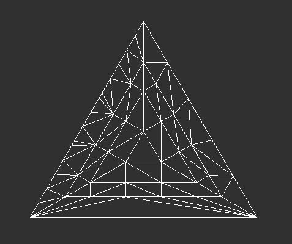
In general, the TLs tell the PG the number of segments on the outer edge of the triangle and the number rings towards the center
So how do the small triangles in the above picture relate to the patch that we saw earlier? Well, it depends on what you want to do with Tessellation. One very simple option (and the one that we will use in this tutorial) is to skip the whole notion of curved geometric surfaces with their polynomial representation and simply say that the triangles from your model are simply mapped to patches. In that case the 3 triangle vertices become our 3 CPs and the original triangle is both the input and output patch of the TCS. We use the PG to tessellate the triangle domain and generate small “generic” triangles represented by barycentric coordinates and use a linear combination of these coordinates (i.e. multiply them by the attributes of the original triangle) in order to tessellate the triangles of the original model. In the next tutorial we will see an actual use of the patch as a representative of a geometric surface. At any rate, remember that the PG ignores both the input and output patch of the TCS. All it cares about are the per patch TLs.
So after the PG has finished subdividing the triangle domain we still need someone to take the results of this subdivision and do something with it. After all, the PG doesn’t even have access to the patch. Its only output are barycentric coordinates and their connectivity. Enter the TES. This shader stage has access both to the output patch of the TCS and the barycentric coordinates that the PG generated. The PG executes the TES on every barycentric coordinate and the job of the TES is to generate a vertex for that point. Since the TES has access to the patch it can take stuff from it such as position, normal, etc and use them to generate the vertex. After the PG executes the TES on the three barycentric coordinates of a “small” triangle it takes the three vertices the TES generated and sends them down as a complete triangle for rasterization.
The TES is similar to the VS in the sense that it always has a single input (the barycentric coordinate) and a single output (the vertex). The TES cannot generate more than one vertex per invocation nor can it decide to drop the vertex. The main purpose of the TES that the architects of Tessellation in OpenGL envisioned is to evaluate the surface equation at the given domain location. In simpler terms this means placing the barycentric coordinate in the polynomial that represents the surface and calculate the result. The result is the position of the new vertex which can then be transformed and projected as usual. As you can see, when dealing with geometric surfaces the higher we choose our TLs, the more domain locations we get and by evaluating them in the TES we get more vertices that better represent the true mathematical surface. In this tutorial the evaluation of the surface equation will simply be a linear combination.
After the TES has processed the domain locations the PG takes the new vertices and sends them as triangles to the next stages of the pipeline. After the TES comes either the GS or the rasterizer and from here on everything runs as usual.
Let’s summarize the entire pipeline:
- The VS is executed on every vertex in a patch. The patch comprises several CPs from the vertex buffer (up to a limit defined by the driver and GPU).
- The TCS takes the vertices that have been processed by the VS and generates an output patch. In addition, it generates TLs.
- Based on the configured domain, the TLs it got from the TCS and the configured output topology, the PG generates domain location and their connectivity.
- The TES is executed on all generated domain locations.
- The primitives that were generated in step 3 continue down the pipe. The output from the TES is their data.
- Processing continues either at the GS or at the rasterizer.
Source walkthru
(tutorial30.cpp:80)
1GLint MaxPatchVertices = 0;
2glGetIntegerv(GL_MAX_PATCH_VERTICES, &MaxPatchVertices);
3printf("Max supported patch vertices %d\n", MaxPatchVertices);
4glPatchParameteri(GL_PATCH_VERTICES, 3);
When Tessellation is enabled (i.e. when we have either a TCS or a TES) the pipeline needs to know how many vertices comprise each input patch. Remember that a patch does not necessarily have a defined geometric form. It is simply a list of control points. The call to glPatchParameteri() in the code excerpt above tells the pipeline that the size of the input patch is going to be 3. That number can be up to what the driver defines as GL_MAX_PATCH_VERTICES. This value can be different from one GPU/driver to another so we fetch it using glGetIntegerv() and print it.
(lighting.vs)
1#version 410 core
2
3layout (location = 0) in vec3 Position_VS_in;
4layout (location = 1) in vec2 TexCoord_VS_in;
5layout (location = 2) in vec3 Normal_VS_in;
6
7uniform mat4 gWorld;
8
9out vec3 WorldPos_CS_in;
10out vec2 TexCoord_CS_in;
11out vec3 Normal_CS_in;
12
13void main()
14{
15 WorldPos_CS_in = (gWorld * vec4(Position_VS_in, 1.0)).xyz;
16 TexCoord_CS_in = TexCoord_VS_in;
17 Normal_CS_in = (gWorld * vec4(Normal_VS_in, 0.0)).xyz;
18}
This is our VS and the only difference between it and the previous ones is that we are no longer transforming the local space coordinates to clip space (by multiplying by the world-view-projection matrix). The reason is that there is simply no point in that. We expect to generate a lot of new vertices that will need that transformation anyway. Therefore, this action is postponed until we get to the TES.
(lighting.cs)
1#version 410 core
2
3// define the number of CPs in the output patch
4layout (vertices = 3) out;uniform vec3 gEyeWorldPos;
5
6// attributes of the input CPs
7in vec3 WorldPos_CS_in[];
8in vec2 TexCoord_CS_in[];
9in vec3 Normal_CS_in[];
10
11// attributes of the output CPs
12out vec3 WorldPos_ES_in[];
13out vec2 TexCoord_ES_in[];
14out vec3 Normal_ES_in[];
This is the start of the TCS. It is executed once per CP in the output patch and we start by defining the number of CPs in the output patch. Next we define a uniform variable that we will need in order to calculate the TLs. After that we have a few input and output CP attributes. In this tutorial we have the same structure for both the input and output patch but it doesn’t always have to be this way. Each input and output CP has a world position, texture coordinate and normal. Since we can have more than one CP in the input and output patches each attribute is defined using the array modifier []. This allows us to freely index into any CP.
(lighting.cs:33)
1void main()
2{
3 // Set the control points of the output patch
4 TexCoord_ES_in[gl_InvocationID] = TexCoord_CS_in[gl_InvocationID];
5 Normal_ES_in[gl_InvocationID] = Normal_CS_in[gl_InvocationID];
6 WorldPos_ES_in[gl_InvocationID] = WorldPos_CS_in[gl_InvocationID];
We start the main function of the TCS by copying the input CP into the output CP. This function is executed once per output CP and the builtin variable gl_InvocationID contains the index of the current invocation. The order of execution is undefined because the GPU probably distributes the CPs across several of its cores and runs them in parallel. We use gl_InvocationID as an index into both the input and output patch.
(lighting.cs:40)
1 // Calculate the distance from the camera to the three control points
2 float EyeToVertexDistance0 = distance(gEyeWorldPos, WorldPos_ES_in[0]);
3 float EyeToVertexDistance1 = distance(gEyeWorldPos, WorldPos_ES_in[1]);
4 float EyeToVertexDistance2 = distance(gEyeWorldPos, WorldPos_ES_in[2]);
5
6 // Calculate the tessellation levels
7 gl_TessLevelOuter[0] = GetTessLevel(EyeToVertexDistance1, EyeToVertexDistance2);
8 gl_TessLevelOuter[1] = GetTessLevel(EyeToVertexDistance2, EyeToVertexDistance0);
9 gl_TessLevelOuter[2] = GetTessLevel(EyeToVertexDistance0, EyeToVertexDistance1);
10 gl_TessLevelInner[0] = gl_TessLevelOuter[2];
11}
After generating the output patch we calculate the TLs. The TLs can be set differently for each output patch. OpenGL provides two builtin arrays of floating points for the TLs: gl_TessLevelOuter (size 4) and gl_TessLevelInner (size 2). In the case of a triangle domain we can use only the first 3 members of gl_TessLevelOuter and the first member from gl_TessLevelInner (in addition to the triangle domain there are also the quad and isoline domain that provide different access to arrays). gl_TessLevelOuter[] roughly determines the number of segments on each edge and gl_TessLevelInner[0] roughly determines how many rings the triangle will contain. If we designate the triangle vertices as U, V and W then the corresponding edge for each vertex is the one which is opposite to it:
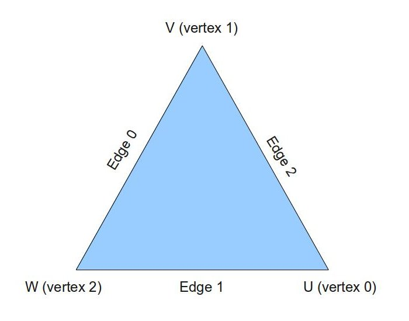
The algorithm we use to calculate the TLs is very simple and is based on the distance in world space between the camera and the vertices. It is implemented in the function GetTessLevel (see below). We calculate the distance between the camera and each vertex and call GetTessLevel() three times to update each member in gl_TessLevelOuter[]. Each entry is mapped to an edge according to the picture above (TL of edge 0 goes to gl_TessLevelOuter[0], etc) and the TL for that edge is calculated based on the distance from the camera to the two vertices that create it. The inner TL is selected the same as the TL of edge W.
You can use any algorithm that you want to calculate the TLs. For example, one algorithm estimates the size of the final triangle on the screen in pixels and sets the TLs such that no tessellated triangle becomes smaller than a given number of pixels.
(lighting.cs:18)
1float GetTessLevel(float Distance0, float Distance1)
2{
3 float AvgDistance = (Distance0 + Distance1) / 2.0;
4
5 if (AvgDistance <= 2.0) {
6 return 10.0;
7 }
8 else if (AvgDistance <= 5.0) {
9 return 7.0;
10 }
11 else {
12 return 3.0;
13 }
14}
This function calculates the TL for an edge based on the distance from the camera to the two vertices of the edge. We take the average distance and set the TL to 10 or 7 or 3. As the distance grows we prefer a smaller TL so as not to waste GPU cycles.
(lighting.es)
1#version 410 core
2
3layout(triangles, equal_spacing, ccw) in;
This is the start of the TES. The ’layout’ keyword defines three configuration items:
- *triangles* this is the domain the PG will work on. The other two options are quads and isolines.
- *equal_spacing* means that the triangle edges will be subdivided into segments with equal lengths (according to the TLs). You can also use fractional_even_spacing or fractional_odd_spacing that provide a smoother transition between the lengths of the segments whenever the TL crosses an even or odd integer. For example, if you use fractional_odd_spacing and the TL is 5.1 it means there will be 2 very short segments and 5 longer segments. As the TL grows towards 7 all the segments become closer in length. When the TL hits 7 two new very short segments are created. fractional_even_spacing is the same with even integer TLs.
- *ccw* means that the PG will emit triangles in counter-clockwise order (you can also use cw for clockwise order). You may be wondering why we are doing that while our front facing triangles in clockwise order. The reason is that the model I supplied with this tutorial (quad2.obj) was generated by Blender in counter clockwise order. I could also have specified the Assimp flag ‘aiProcess_FlipWindingOrder’ when loading the model and use ‘cw’ here. I simply didn’t want to change ‘mesh.cpp’ at this point. The bottom line is that whatever you do, make sure you are consistent.
Note that you can also specify each configuration item with its own layout keyword. The scheme above simply saves some space.
(lighting.es:5)
1uniform mat4 gVP;
2uniform sampler2D gDisplacementMap;
3uniform float gDispFactor;
4
5in vec3 WorldPos_ES_in[];
6in vec2 TexCoord_ES_in[];
7in vec3 Normal_ES_in[];
8
9out vec3 WorldPos_FS_in;
10out vec2 TexCoord_FS_in;
11out vec3 Normal_FS_in;
The TES can have uniform variables just like any other shader. The displacement map is basically a height map which means that every texel represents the height at this location. We will use it to generate bumps on the surface of our mesh. In addition, the TES can also access the entire TCS output patch. Finally, we declare the attributes of our output vertex. Note that the array modifier is not present here because the TES always outputs a single vertex.
(lighting.es:27)
1void main()
2{
3 // Interpolate the attributes of the output vertex using the barycentric coordinates
4 TexCoord_FS_in = interpolate2D(TexCoord_ES_in[0], TexCoord_ES_in[1], TexCoord_ES_in[2]);
5 Normal_FS_in = interpolate3D(Normal_ES_in[0], Normal_ES_in[1], Normal_ES_in[2]);
6 Normal_FS_in = normalize(Normal_FS_in);
7 WorldPos_FS_in = interpolate3D(WorldPos_ES_in[0], WorldPos_ES_in[1], WorldPos_ES_in[2]);
This is the main function of the TES. Let’s recap what we have when we get here. The mesh vertices were processed by the VS and the world space position and normal were calculated. The TCS got each triangle as a patch with 3 CPs and simply passed it through to the TES. The PG subdivided an equilateral triangle into smaller triangles and executed the TES for every generated vertex. In each TES invocation we can access the barycentric coordinates (a.k.a Tessellation Coordinates) of the vertex in the 3D-vector gl_TessCoord. Since the barycentric coordinates within a triangle represent a weight combination of the 3 vertices we can use it to interpolate all the attributes of the new vertex. The functions interpolate2D() and interpolate3D() (see below) do just that. They take an attribute from the CPs of the patch and interpolate it using gl_TessCoord.
(lighting.es:35)
1 // Displace the vertex along the normal
2 float Displacement = texture(gDisplacementMap, TexCoord_FS_in.xy).x;
3 WorldPos_FS_in += Normal_FS_in * Displacement * gDispFactor;
4 gl_Position = gVP * vec4(WorldPos_FS_in, 1.0);
5}
Having each triangle of the original mesh subdivided into many smaller triangles doesn’t really contribute much to the general appearance of the mesh because the smaller triangles are all on the same plane of the original triangle. We would like to offset (or displace) each vertex in a way that will match the contents of our color texture. For example, if the texture contains the image of bricks or rocks we would like our vertices to move along the edges of the bricks or rocks. To do that we need to complement the color texture with a displacement map. There are various tools and editors that generate a displacement map and we are not going to go into the specifics here. You can find more information on the web. To use the displacement map we simply need to sample from it using the current texture coordinate and this will give us the height of this vertex. We then displace the vertex in world space by multiplying the vertex normal by the height and by a displacement factor uniform variable that can be controlled by the application. So every vertex is displaced along its normal based on its height. Finally, we multiply the new world space position by the view-projection matrix and set it into ‘gl_Position’.
(lighting.es:17)
1vec2 interpolate2D(vec2 v0, vec2 v1, vec2 v2)
2{
3 return vec2(gl_TessCoord.x) * v0 + vec2(gl_TessCoord.y) * v1 + vec2(gl_TessCoord.z) * v2;
4}
5
6vec3 interpolate3D(vec3 v0, vec3 v1, vec3 v2)
7{
8 return vec3(gl_TessCoord.x) * v0 + vec3(gl_TessCoord.y) * v1 + vec3(gl_TessCoord.z) * v2;
9}
These two function interpolate between a trio of 2D-vectors and 3D-vectors using ‘gl_TessCoord’ as a weight.
(lighting_technique.cpp:277)
1bool LightingTechnique::Init()
2{
3 ...
4 if (!AddShader(GL_TESS_CONTROL_SHADER, pTessCS)) {
5 return false;
6 }
7
8 if (!AddShader(GL_TESS_EVALUATION_SHADER, pTessES)) {
9 return false;
10 }
11 ...
We have two new shader stage so we must compile them.
(mesh.cpp:226)
1glDrawElements(GL_PATCHES, m_Entries[i].NumIndices, GL_UNSIGNED_INT, 0);
Finally, we have to use GL_PATCHES as the primitive type instead of GL_TRIANGLES.
The Demo
The demo in this tutorial shows how to tessellate a quad terrain and displace vertices along the rocks in the color texture. You can use ‘+’ and ‘-’ on the keyboard to update the displacement factor and by that control the displacement level. You can also switch to wireframe mode using ‘z’ and see the actual triangles generated by the Tessellation process. It is interesting to move closer and further away from the terrain in wireframe mode and see how the Tessellation level changes based on the distance. This is why we need the TCS.
Notes and errata
Apr-1, 2022 (no pun intended…) - if you’re using GLFW you may run into various problems if you create a context for pre-OpenGL-4.0. If that happens you may want to explicitly request a 4.0 context using:
glfwWindowHint (GLFW_CONTEXT_VERSION_MAJOR, 4);
glfwWindowHint (GLFW_CONTEXT_VERSION_MINOR, 0);
Thanks Markus Fjellheim for the tip.
Tutorial 31:PN Triangles Tessellation
Background
In the previous tutorial we got introduced to Tessellation in OpenGL 4.x (this tutorial relies heavily on the material covered by the previous one so make sure you are familiar with it). We enabled all the relevant stages and learned how to subdivide our mesh and displace the vertices that were created by the Tessellation process in order to transform a dull flat quad into a complex rocky terrain. Usage of the Tessellation pipeline was fairly simple, though. The evaluation in the TES was just an interpolation of the vertices of the original triangle using the barycentric coordinates generated by the PG. Since the results of the interpolation were located on the plane of the original triangle we had to use displacement mapping in order to create bumps on the surface.
In this tutorial we will explore a more advanced Tessellation technique known as PN (Point-Normal) Triangles. This technique was the subject of a 2001 paper by Vlachos et al and was also covered in a GDC2011 presenation called “Tessellation On Any Budget” by John McDonald. The idea explored by these papers was to replace each triangle in the original mesh by a geometric surface known as a Bezier Surface in order to smooth out a low polygon mesh.
Bezier Surfaces were invented by Pierre Bezier in the 1960s as a method of describing the curves of automobile bodies. In a nutshell, a Bezier Surface is polynomial function which described a smooth and continuous surface which is fully contained within a set of control points (CP). The polynomial has a special attribute whereas by moving a CP the surface is affected mostly in the vicinity of that CPs. The effect becomes less visible as we move away from that CP. You can picture this as a highly delicate and flexible cloth lying on the floor. If you pull the cloth upwards at a specific point the curve that will be formed will become less and less noticeable in the distant parts of the cloth (if the cloth was infinitely flexible the effect may even become non-existant at some point).
The polynomial of the Bezier surface is defined over the unit square. That is, by plugging into the function various combinations of two numbers in the range [0-1] we get a point in 3D space which is exactly on the smooth surface that the polynomial describes. If you plug in many pairs of numbers in the unit square and plot the result on the screen you will eventually get a good approximation of the surface.
We are going to use a special case of a Bezier Surface called a Bezier Triangle which has the following form:

Let’s decipher this step by step. ‘u/v/w’ are barycentric coordinates (i.e. they always maintain the equation ‘u + v + w = 1’). The ten ‘Bxyz’ are CPs. We are going to deviate a bit from the classical definition of a Bezier Triangle and place the CPs as follows:

As you can see, the general form of the CPs resembles a somewhat puffy surface on top of a triangle. By evaluating a lot of barycentric coordinates in the polynomial above we will get an exproximation of that surface in 3D space.
Let’s see how to integrate these mathematical concepts into the Tessellation pipeline. We are going to start with a triangle and this will be our input patch (same as in the previous tutorial). We will generate the 10 CPs and determine the TLs in the TCS. The PG will subdivide the triangle domain according to the TLs and the TES will be executed for each new point. The TES will plug the barycentric coordinates from the PG and the 10 CPs from the TCS into the polynomial of the Bezier triangle and the result will be a coordinate on the puffy surface. From here on things will run as usual.
The one thing we still need to figure out is how to generate the CPs. The method suggested by the PN Triangles algorithm is as follows:
- The original vertices of the triangle remain unchanged (and are named B003, B030 and B300).
- Two midpoints are generated on each edge - one on 1/3 of the way the other on 2/3.
- Each midpoint is projected on the plane created by the nearest vertex and its normal:

The picture above shows the triangle from the side. Each of the two endpoints has its own normal (in green) from the original mesh. The combination of a point and a normal creates a plane. We take the two midpoints that were calculated earlier and project them to the plane of the nearest vertex (see the dashed arrows).
- In order to calculate the position of B111 we take a vector from the original triangle center (average of the three vertices) to the average of the 6 midpoints (after projection). We continue along that vector for one half of its length.
The reasoning behind this scheme is very simple. When you have an area of the mesh which is fairly flat it means that most vertex normals there will point towards the same general direction which will not be far off from the true triangle normal. This means that when we project the midpoints on the planes they would not move away very far from the triangle surface. This will result in a mild “puffiness” in that area. But if the area is very curved it means the midpoints would move further away to overcome the jagged nature of that area. In the demo you can see that we start with a low polygon model of Suzanne, Blender’s mascot character, which has about 500 polygons. Breaking of the silhouette is very noticeable, particularly around Suzanne’s head. By projecting the midpoints as described above to create CPs and using the Tessellator to evaluate the Bezier Triangle created by this CPs we are able to provide a much smoother model without any artistic resources.
References:
- Vlachos Alex, Jorg Peters, Chas Boyd and Jason L. Mitchell. “Curved PN Triangles”. Proceedings of the 2001 Symposium interactive 3D graphics (2001): 159-66.
- John McDonald. “Tessellation On Any Budget”. Game Developers Conference, 2011.
Source walkthru
(lighting.vs:13)
1void main()
2{
3 WorldPos_CS_in = (gWorld * vec4(Position_VS_in, 1.0)).xyz;
4 TexCoord_CS_in = TexCoord_VS_in;
5 Normal_CS_in = normalize((gWorld * vec4(Normal_VS_in, 0.0)).xyz);
6}
The VS contains only one change from the previous tutorial - the normal must be normalized after the world transformation. The reason is that the TCS relies on the normal having a unit length. Otherwise, the new CPs above the surface won’t be generated correctly. If the world transformation contains a scaling operation the normals won’t have unit length and have to be normalized.
(lighting.cs)
1#version 410 core
2
3// define the number of CPs in the output patch
4layout (vertices = 1) out;
5
6uniform float gTessellationLevel;
7
8// attributes of the input CPs
9in vec3 WorldPos_CS_in[];
10in vec2 TexCoord_CS_in[];
11in vec3 Normal_CS_in[];
12
13struct OutputPatch
14{
15 vec3 WorldPos_B030;
16 vec3 WorldPos_B021;
17 vec3 WorldPos_B012;
18 vec3 WorldPos_B003;
19 vec3 WorldPos_B102;
20 vec3 WorldPos_B201;
21 vec3 WorldPos_B300;
22 vec3 WorldPos_B210;
23 vec3 WorldPos_B120;
24 vec3 WorldPos_B111;
25 vec3 Normal[3];
26 vec2 TexCoord[3];
27};
28
29// attributes of the output CPs
30out patch OutputPatch oPatch;
This is the start of the TCS with the changes marked in bold face. The first thing to note is that we are outputing a single CP. You may find this odd since the whole idea behind PN Triangles is to create a Bezier triangle with 10 CPs on top of the original triangle. So why are we declaring a single output CP instead of 10? the reason is that the main TCS function will be executed as many times as the defined output CPs value. In this algorithm we need to treat some of the points a bit differently than the others which makes it a bit difficult to use the same function for all points. Instead, I’ve encapsulated all the data of the output patch in the OutputPatch struct above and declared an output variable called oPatch of that type. The TCS main function will run once for each patch and this struct will be populated with data for all the 10 CPs. The implementation that McDonald presented in GDC 2011 (see references) provides a version which may be more efficient. In his version the TCS is executed three times which enables the GPU to distribute the work of a single patch across three threads. In general, if the output CPs are generated using the same algorithm it is better (from a performance point of view) to implement that algorithm as-is in the TCS and have it execute for as many output CPs as you need.
Another thing to note is that oPatch is prefixed by the builtin keyword patch. This keyword says that the variable contains data which pertains to the entire patch and not the current output CP. The compiler can use that as a hint to make sure that the code that updates such a variable will run once per patch instead of once per CP (since GPUs will strive to update each output CP in a different HW thread).
The final change in this section is that the eye position uniform variable has been replaced with a tessellation level variable. Instead of setting the TL according to the distance from this camera (as in the previous tutorial) we allow the user to configure it using the ‘+’ and ‘-’ keys. This makes it simpler to stand close to the model and see the effect of changing the TL.
(lighting.cs:76)
1void main()
2{
3 // Set the control points of the output patch
4 for (int i = 0 ; i < 3 ; i++) {
5 oPatch.Normal[i] = Normal_CS_in[i];
6 oPatch.TexCoord[i] = TexCoord_CS_in[i];
7 }
8
9 CalcPositions();
10
11 // Calculate the tessellation levels
12 gl_TessLevelOuter[0] = gTessellationLevel;
13 gl_TessLevelOuter[1] = gTessellationLevel;
14 gl_TessLevelOuter[2] = gTessellationLevel;
15 gl_TessLevelInner[0] = gTessellationLevel;}
This is the main function of the TCS. The three normals and texture coordinates are copied as-is from the input into the output patch. The 10 CPs that we are going to generate contain only a position value. This is done in a dedicated function called CalcPositions() which is executed next. Finally, the TLs are set according to the uniform variable.
(lighting.cs:41)
1void CalcPositions(
2{
3 // The original vertices stay the same
4 oPatch.WorldPos_B030 = WorldPos_CS_in[0];
5 oPatch.WorldPos_B003 = WorldPos_CS_in[1];
6 oPatch.WorldPos_B300 = WorldPos_CS_in[2];
7
8 // Edges are names according to the opposing vertex
9 vec3 EdgeB300 = oPatch.WorldPos_B003 - oPatch.WorldPos_B030;
10 vec3 EdgeB030 = oPatch.WorldPos_B300 - oPatch.WorldPos_B003;
11 vec3 EdgeB003 = oPatch.WorldPos_B030 - oPatch.WorldPos_B300;
12
13 // Generate two midpoints on each edge
14 oPatch.WorldPos_B021 = oPatch.WorldPos_B030 + EdgeB300 / 3.0;
15 oPatch.WorldPos_B012 = oPatch.WorldPos_B030 + EdgeB300 * 2.0 / 3.0;
16 oPatch.WorldPos_B102 = oPatch.WorldPos_B003 + EdgeB030 / 3.0;
17 oPatch.WorldPos_B201 = oPatch.WorldPos_B003 + EdgeB030 * 2.0 / 3.0;
18 oPatch.WorldPos_B210 = oPatch.WorldPos_B300 + EdgeB003 / 3.0;
19 oPatch.WorldPos_B120 = oPatch.WorldPos_B300 + EdgeB003 * 2.0 / 3.0;
20
21 // Project each midpoint on the plane defined by the nearest vertex and its normal
22 oPatch.WorldPos_B021 = ProjectToPlane(oPatch.WorldPos_B021, oPatch.WorldPos_B030, oPatch.Normal[0]);
23 oPatch.WorldPos_B012 = ProjectToPlane(oPatch.WorldPos_B012, oPatch.WorldPos_B003, oPatch.Normal[1]);
24 oPatch.WorldPos_B102 = ProjectToPlane(oPatch.WorldPos_B102, oPatch.WorldPos_B003, oPatch.Normal[1]);
25 oPatch.WorldPos_B201 = ProjectToPlane(oPatch.WorldPos_B201, oPatch.WorldPos_B300, oPatch.Normal[2]);
26 oPatch.WorldPos_B210 = ProjectToPlane(oPatch.WorldPos_B210, oPatch.WorldPos_B300, oPatch.Normal[2]);
27 oPatch.WorldPos_B120 = ProjectToPlane(oPatch.WorldPos_B120, oPatch.WorldPos_B030, oPatch.Normal[0]);
28
29 // Handle the center
30 vec3 Center = (oPatch.WorldPos_B003 + oPatch.WorldPos_B030 + oPatch.WorldPos_B300) / 3.0;
31 oPatch.WorldPos_B111 = (oPatch.WorldPos_B021 + oPatch.WorldPos_B012 +
32 oPatch.WorldPos_B102 +
33 oPatch.WorldPos_B201 + oPatch.WorldPos_B210 +
34 oPatch.WorldPos_B120) / 6.0;
35 oPatch.WorldPos_B111 += (oPatch.WorldPos_B111 - Center) / 2.0;
36}
This function builds the Bezier triangle on top of the original triangle according to the method described in the background section. The names of the relevant members of the OutputPatch structure match the picture above to make it easier to review. The logic is very simple and follows the algorithm pretty much step by step.
(lighting.cs:32)
1vec3 ProjectToPlane(vec3 Point, vec3 PlanePoint, vec3 PlaneNormal)
2{
3 vec3 v = Point - PlanePoint;
4 float Len = dot(v, PlaneNormal);
5 vec3 d = Len * PlaneNormal;
6 return (Point - d);
7}
This function is used by CalcPositions() to project a midpoint on the plane defined by the nearest vertex and its normal. The idea is that by doing a dot product between the normal and the vector ‘v’ from the vertex to the point we want to project we get the length of the projection of ‘v’ on the normal (the normal must be of unit length). This is exactly the distance between the point and the closest point on the plane (i.e. its projection). We multiply the length by the normal and substract it from point in order to reach the projection. The following picture illustrates this calculation:

P1 and P2 are located on different half spaces created by the plane. When we project v1 on the green normal we get the length of d1. Multiply that length by the normal to receive d1 itself. Now substract it from P1 to get its projection on the plane. When we project v2 on the green normal we get the length of d2 but it is a negative value. Multiply that by the normal to receive d2 itself (negative length means it reverses the normal). Now substract it from P2 to get its projection on the plane. The conclusion: this method works correctly no matter on which side of the plane our point is.
(lighting.es)
1#version 410 core
2
3layout(triangles, equal_spacing, ccw) in;
4
5uniform mat4 gVP;
6
7struct OutputPatch
8{
9 vec3 WorldPos_B030;
10 vec3 WorldPos_B021;
11 vec3 WorldPos_B012;
12 vec3 WorldPos_B003;
13 vec3 WorldPos_B102;
14 vec3 WorldPos_B201;
15 vec3 WorldPos_B300;
16 vec3 WorldPos_B210;
17 vec3 WorldPos_B120;
18 vec3 WorldPos_B111;
19 vec3 Normal[3];
20 vec2 TexCoord[3];
21};
22
23in patch OutputPatch oPatch;
24
25out vec3 WorldPos_FS_in;
26out vec2 TexCoord_FS_in;
27out vec3 Normal_FS_in;
28
29vec2 interpolate2D(vec2 v0, vec2 v1, vec2 v2)
30{
31 return vec2(gl_TessCoord.x) * v0 + vec2(gl_TessCoord.y) * v1 + vec2(gl_TessCoord.z) * v2;
32}
33
34vec3 interpolate3D(vec3 v0, vec3 v1, vec3 v2)
35{
36 return vec3(gl_TessCoord.x) * v0 + vec3(gl_TessCoord.y) * v1 + vec3(gl_TessCoord.z) * v2;
37}
38
39void main()
40{
41 // Interpolate the attributes of the output vertex using the barycentric coordinates
42 TexCoord_FS_in = interpolate2D(oPatch.TexCoord[0], oPatch.TexCoord[1], oPatch.TexCoord[2]);
43 Normal_FS_in = interpolate3D(oPatch.Normal[0], oPatch.Normal[1], oPatch.Normal[2]);
44
45 float u = gl_TessCoord.x;
46 float v = gl_TessCoord.y;
47 float w = gl_TessCoord.z;
48
49 float uPow3 = pow(u, 3);
50 float vPow3 = pow(v, 3);
51 float wPow3 = pow(w, 3);
52 float uPow2 = pow(u, 2);
53 float vPow2 = pow(v, 2);
54 float wPow2 = pow(w, 2);
55
56 WorldPos_FS_in = oPatch.WorldPos_B300 * wPow3 +
57 oPatch.WorldPos_B030 * uPow3 +
58 oPatch.WorldPos_B003 * vPow3 +
59 oPatch.WorldPos_B210 * 3.0 * wPow2 * u +
60 oPatch.WorldPos_B120 * 3.0 * w * uPow2 +
61 oPatch.WorldPos_B201 * 3.0 * wPow2 * v +
62 oPatch.WorldPos_B021 * 3.0 * uPow2 * v +
63 oPatch.WorldPos_B102 * 3.0 * w * vPow2 +
64 oPatch.WorldPos_B012 * 3.0 * u * vPow2 +
65 oPatch.WorldPos_B111 * 6.0 * w * u * v;
66
67 gl_Position = gVP * vec4(WorldPos_FS_in, 1.0);
68}
This is the entire TES with changes from the previous tutorial marked in bold face. The normal and texture coordinates are interpolated the same as before. In order to calculate the world space position we plug the barycentric coordinates into the Bezier triangle equation we saw in the background section. The builtin function pow() is used in order to calculate the power of a number. We transform the world space position to clip space and continue as usual.
Tutorial 32:Vertex Array Objects
Background
The Vertex Array Object (a.k.a VAO) is a special type of object that encapsulates all the data that is associated with the vertex processor. Instead of containing the actual data, it holds references to the vertex buffers, the index buffer and the layout specification of the vertex itself. The advantage is that once you set up the VAO for a mesh you can bring in the entire mesh state by simply binding the VAO. After that you can render the mesh object and you don’t need to worry about all of its state. The VAO remembers it for you. If your application needs to deal with meshes whose vertex layout slightly differs from one another the VAO takes care of it also. Just make sure to set up the correct layout when you create the VAO and forget about it. From now on it “sticks” to the VAO and becomes active whenever that VAO is used.
When used correctly, VAOs can also represent an optimization opportunity for the driver of the GPU. If the VAO is set up once and used multiple times the driver can take advantage of knowing the mapping between the index buffer and the vertex buffers as well as the vertex layout in the buffers. Obviously, this depends on the specific driver that you are using and it is not guaranteed that all drivers will behave the same. At any rate, keep in mind that it is best to set up the VAO once and then reuse it over and over.
In this tutorial we are going to update the Mesh class and base it on top of a VAO. In addition, we will organize the vertex data in the buffers in a method known as SOA (Structure Of Arrays). Up till now our vertex was represented as a structure of attributes (position, etc) and the vertex buffer contained structures of vertices lined up one after the other. This is called AOS (Array Of Structure). SOA is simply a transpose of this scheme. Instead of an array of attribute structures we have one structure that contains multiple arrays. Each array contains only one attribute. In order to setup the vertex the GPU uses the same index to read one attribute from each array. This method can sometimes be more approriate for some of the 3D file formats and it is interesting to see different ways of accomplishing the same thing.
The following picture illustrates AOS and SOA:

Source walkthru
(ogldev_basic_mesh.h:50)
1class Mesh
2{
3public:
4 Mesh();
5
6 ~Mesh();
7
8 bool LoadMesh(const std::string& Filename);
9
10 void Render();
11
12private:
13 bool InitFromScene(const aiScene* pScene, const std::string& Filename);
14 void InitMesh(const aiMesh\* paiMesh,
15 std::vector& Positions,
16 std::vector& Normals,
17 std::vector& TexCoords,
18 std::vector& Indices);
19
20 bool InitMaterials(const aiScene* pScene, const std::string& Filename);
21 void Clear();
22
23#define INVALID_MATERIAL 0xFFFFFFFF**#define INDEX_BUFFER 0
24#define POS_VB 1
25#define NORMAL_VB 2
26#define TEXCOORD_VB 3
27
28 GLuint m_VAO;
29 GLuint m_Buffers[4];
30
31 struct MeshEntry {
32 MeshEntry()
33 {
34 NumIndices = 0;
35 BaseVertex = 0;
36 BaseIndex = 0;
37 MaterialIndex = INVALID_MATERIAL;
38 }
39
40 unsigned int BaseVertex;
41 unsigned int BaseIndex;
42 unsigned int NumIndices;
43 unsigned int MaterialIndex;
44 };
45
46 std::vector m_Entries;
47 std::vector m_Textures;
48};
All the changes in this tutorial are encapsulated in the mesh class whose declaration appears above with changes marked in bold face. We have switched from an array of VB/IB elements to four buffers - index buffer, position buffer, normal buffer and texture coordinates buffer. In addition, the Mesh class has a new member called m_VAO that stores the vertex array object. Since our model can be made of multiple subcomponents each with its own texture we have a vector called m_Entries that contains the material index as well as the location of the subcomponent. NumIndices is the number of indices in the subcomponent, BaseVertex is where the subcomponent starts in the vertex buffers and BaseIndex is where the subcomponent starts inside the index buffer (because all the subcomponents are stored one after the other inside the same buffers). Before rendering a subcomponent of the mesh we need to bind its texture and then submit a draw command for subcomponent vertices. We will later see how to do this.
(ogldev_basic_mesh.cpp:60)
1bool Mesh::LoadMesh(const string& Filename)
2{
3 // Release the previously loaded mesh (if it exists)
4 Clear();
5
6 // Create the VAO
7 glGenVertexArrays(1, &m_VAO);
8 glBindVertexArray(m_VAO);
9
10 // Create the buffers for the vertices atttributes
11 glGenBuffers(ARRAY_SIZE_IN_ELEMENTS(m_Buffers), m_Buffers);
12
13 bool Ret = false;
14 Assimp::Importer Importer;
15
16 const aiScene* pScene = Importer.ReadFile(Filename.c_str(), aiProcess_Triangulate | aiProcess_GenSmoothNormals | aiProcess_FlipUVs);
17
18 if (pScene) {
19 Ret = InitFromScene(pScene, Filename);
20 }
21 else {
22 printf("Error parsing '%s': '%s'\n", Filename.c_str(), Importer.GetErrorString());
23 }
24
25 // Make sure the VAO is not changed from outside code
26 glBindVertexArray(0);
27
28 return Ret;
29}
Not much has changed in the main function that loads the mesh. We generate the VAO using glGenVertexArrays() by providing the number of elements in an array of GLuint and the address of the array itself (in our case we only need one GLuint). After that we bind the VAO using glBindVertexArray(). There can only be one VAO bound at any time. From now on, any change to the state of the vertex processor will affect this VAO. The four buffers are generated using glGenBuffers() and the mesh is loaded using the Open Asset Import Library (see below). A very important function call is glBindVertexArray(0) at the end of the function. By binding zero as the VAO we guarentee that no further changes to the vertex processor will affect our VAO (OpenGL will never generate a VAO with the value of zero so this is safe).
(ogldev_basic_mesh.cpp:90)
1bool Mesh::InitFromScene(const aiScene* pScene, const string& Filename)
2{
3 m_Entries.resize(pScene->mNumMeshes);
4 m_Textures.resize(pScene->mNumMaterials);
5
6 // Prepare vectors for vertex attributes and indices
7 vector Positions;
8 vector Normals;
9 vector TexCoords;
10 vector Indices;
11
12 unsigned int NumVertices = 0;
13 unsigned int NumIndices = 0;
14
15 // Count the number of vertices and indices
16 for (unsigned int i = 0 ; i < m_Entries.size() ; i++) {
17 m_Entries[i].MaterialIndex = pScene->mMeshes[i]->mMaterialIndex;
18 m_Entries[i].NumIndices = pScene->mMeshes[i]->mNumFaces * 3;
19 m_Entries[i].BaseVertex = NumVertices;
20 m_Entries[i].BaseIndex = NumIndices;
21
22 NumVertices += pScene->mMeshes[i]->mNumVertices;
23 NumIndices += m_Entries[i].NumIndices;
24 }
25
26 // Reserve space in the vectors for the vertex attributes and indices
27 Positions.reserve(NumVertices);
28 Normals.reserve(NumVertices);
29 TexCoords.reserve(NumVertices);
30 Indices.reserve(NumIndices);
31
32 // Initialize the meshes in the scene one by one
33 for (unsigned int i = 0 ; i < m_Entries.size() ; i++) {
34 const aiMesh* paiMesh = pScene->mMeshes[i];
35 InitMesh(paiMesh, Positions, Normals, TexCoords, Indices);
36 }
37
38 if (!InitMaterials(pScene, Filename)) {
39 return false;
40 }
41
42 // Generate and populate the buffers with vertex attributes and the indices
43 glBindBuffer(GL_ARRAY_BUFFER, m_Buffers[POS_VB]);
44 glBufferData(GL_ARRAY_BUFFER, sizeof(Positions[0]) * Positions.size(),
45 &Positions[0],
46 GL_STATIC_DRAW);
47
48 glEnableVertexAttribArray(0);
49 glVertexAttribPointer(0, 3, GL_FLOAT, GL_FALSE, 0, 0);
50
51 glBindBuffer(GL_ARRAY_BUFFER, m_Buffers[TEXCOORD_VB]);
52 glBufferData(GL_ARRAY_BUFFER, sizeof(TexCoords[0]) * TexCoords.size(),
53 &TexCoords[0],
54 GL_STATIC_DRAW);
55
56 glEnableVertexAttribArray(1);
57 glVertexAttribPointer(1, 2, GL_FLOAT, GL_FALSE, 0, 0);
58
59 glBindBuffer(GL_ARRAY_BUFFER, m_Buffers[NORMAL_VB]);
60 glBufferData(GL_ARRAY_BUFFER, sizeof(Normals[0]) * Normals.size(), &Normals[0], GL_STATIC_DRAW);
61
62 glEnableVertexAttribArray(2);
63 glVertexAttribPointer(2, 3, GL_FLOAT, GL_FALSE, 0, 0);
64
65 glBindBuffer(GL_ELEMENT_ARRAY_BUFFER, m_Buffers[INDEX_BUFFER]);
66 glBufferData(GL_ELEMENT_ARRAY_BUFFER, sizeof(Indices[0]) * Indices.size(),
67 &Indices[0],
68 GL_STATIC_DRAW);
69 return true;
70}
This is the next level of details in terms of loading the mesh. The Open Asset Import Library (Assimp) has loaded the mesh data into an aiScene structure and we have a pointer to it. We now need to load it into GL buffers and attach them to the VAO. We do this by using STL vectors. We have a vector per GL buffer. We count the number of vertices and indices in the aiScene structure and for each aiMesh struct we store its material index, index count, base vertex and base index in the m_Entries array. We also reserve place in the vectors accordingly. We then go over each aiMesh structure inside the aiScene and initialize it. The vectors are passed by reference to InitMesh() which allows it to keep on populating them as we go. Materials are initialized same as before.
The last part of the function is where things become interesting. The position, normal and texture coordinates buffers are bound one by one to the GL_ARRAY_BUFFER target. Any further operation on that target affects the currently bound buffer and such changes remain attached to that buffer when a new buffer is bound to the same target. For each of the three buffers we:
- Populate with data using glBufferData().
- Enable the corresponding vertex attribute using glEnableVertexAttribArray().
- Configure the vertex attribute (number of components, component type, etc) using glVertexAttribPointer().
The index buffer is initialized by binding it to the GL_ELEMENT_ARRAY_BUFFER target. We only need to populate it with the indices and that’s it. The buffers are now initialized and everything we did is encapsulated in the VAO.
(ogldev_basic_mesh.cpp:152)
1void Mesh::InitMesh(const aiMesh* paiMesh,
2 vector& Positions,
3 vector& Normals,
4 vector& TexCoords,
5 vector& Indices)
6{
7 const aiVector3D Zero3D(0.0f, 0.0f, 0.0f);
8
9 // Populate the vertex attribute vectors
10 for (unsigned int i = 0 ; i < paiMesh->mNumVertices ; i++) {
11 const aiVector3D* pPos = &(paiMesh->mVertices[i]);
12 const aiVector3D* pNormal = &(paiMesh->mNormals[i]);
13 const aiVector3D* pTexCoord = paiMesh->HasTextureCoords(0) ?
14 &(paiMesh->mTextureCoords[0][i]) : &Zero3D;
15
16 Positions.push_back(Vector3f(pPos->x, pPos->y, pPos->z));
17 Normals.push_back(Vector3f(pNormal->x, pNormal->y, pNormal->z));
18 TexCoords.push_back(Vector2f(pTexCoord->x, pTexCoord->y));
19 }
20
21 // Populate the index buffer
22 for (unsigned int i = 0 ; i < paiMesh->mNumFaces ; i++) {
23 const aiFace& Face = paiMesh->mFaces[i];
24 assert(Face.mNumIndices == 3);
25 Indices.push_back(Face.mIndices[0]);
26 Indices.push_back(Face.mIndices[1]);
27 Indices.push_back(Face.mIndices[2]);
28 }
29}
This function is responsible for loading each aiMesh structure that is contained in the aiScene. Note how the vectors are passed by reference and accessed using the push_back() function of the STL vector class.
(ogldev_basic_mesh.cpp:236)
1void Mesh::Render()
2{
3 glBindVertexArray(m_VAO);
4
5 for (unsigned int i = 0 ; i < m_Entries.size() ; i++) {
6 const unsigned int MaterialIndex = m_Entries[i].MaterialIndex;
7
8 assert(MaterialIndex < m_Textures.size());
9 if (m_Textures[MaterialIndex]) {
10 m_Textures[MaterialIndex]->Bind(GL_TEXTURE0);
11 }
12 glDrawElementsBaseVertex(GL_TRIANGLES,
13 m_Entries[i].NumIndices,
14 GL_UNSIGNED_INT,
15 (void*)(sizeof(unsigned int) * m_Entries[i].BaseIndex),
16 m_Entries[i].BaseVertex); }
17
18 // Make sure the VAO is not changed from the outside
19 glBindVertexArray(0);
20}
Finally, we’ve reached the render function. We start by binding our VAO and…this is all we need to do in terms of setting up the state for the vertex processor! whatever state is already there has now been replaced by the state that we have set up when we initialized the VAO. Now we need to draw the subcomponents of the mesh and bind the proper texture before each one. For that we use the information in the m_Entries array and a new draw function called glDrawElementsBaseVertex(). This function takes the topology, the number of indices and their type. The fourth parameter tells it where to start in the index buffer. The problem is that the indices that Assimp supplied for each aiMesh structure starts at zero and we have accumulated them into the same buffer. So now we need to tell the draw function the offset in bytes in the buffer where the indices of the subcomponent start. We do this by multiplying the base index of the current entry by the size of an index. Since the vertex attributes have also been accumulated into their own buffers we do the same with the fifth parameter - the base vertex. Note that we are providing it as an index rather than as a byte offset because there can be multiple vertex buffers with different types of attributes (and therefore differen strides). OpenGL will need to multiply the base vertex by the stride of each buffer in order to get the offset of that buffer. Nothing we need to worry about.
Before leaving we reset the current VAO back to zero and the reason is the same as when we initially created the VAO - we don’t want outside code to bind a VB (for example) and change our VAO unintentinally.
(ogldev_basic_mesh.cpp:50)
1glDeleteVertexArrays(1, &m_VAO);
The above function deletes the VAO. It does not delete the buffers that are bound to it (they may be bound to multiple VAOs at the same time).
Tutorial 33:Instanced Rendering
Background
Imagine that you want to render a scene where a huge army is moving across the land. You have a model of a soldier and you want to render a few thousand soldiers. One way to do it is to dispatch as many draw calls as there are soldiers while changing relevant uniform variables in between. For example, each soldier is located in a different spot, each soldier can be up to 10% taller or shorter than the average, etc. Therefore, we must update the WVP matrix between draw calls as well as any other variable which is pertinent to the specific soldier. This scheme can have a large overhead. There has to be a better way.
Enter instanced rendering. An Instance is a single occurence of the model that you want to render (in our case, a soldier). Instanced rendering means that we can render multiple instances in a single draw call and provide each instance with some unique attributes. We are going to cover two methods for doing that.
In the first method instance specific attributes (e.g. WVP matrix) go into a seperate vertex buffer. Usually the vertex processor makes one step inside the VBs for each vertex. In the case of VBs with instance data that step occurs only after all the “regular” vertices have already been drawn. VBs with instance data simply provide attributes that are common to all the vertices. Consider the following example:

What we have here is a model that contains 100 vertices. Each vertex has a position, normal and texture coordinates. Each of these three data items has its own vertex buffer. In addition, we have a fourth vertex buffer that contains three WVP matrices. The plan is to draw the 100 vertices while applying the first WVP matrix on each of their positions, then draw them again using the second WVP matrix and then with the third matrix. We will do this in one draw call instead of three. The WVP matrix will go into an input variable of the vertex but since the fourth VB is marked as having instance data the matrix will not change until all the vertices have been drawn.
The second method uses a built-in shader variable called gl_InstanceID which, not suprisingly, tells us the current instance index. We can use this index to locate instance specific data in uniform variable arrays.
Source walkthru
(mesh.h:50)
1class Mesh
2{
3public:
4 ...
5 void Render(unsigned int NumInstances, const Matrix4f* WVPMats, const Matrix4f* WorldMats);
6 ...
7
8private:
9 ...
10
11 #define INDEX_BUFFER 0
12 #define POS_VB 1
13 #define NORMAL_VB 2
14 #define TEXCOORD_VB 3
15 #define WVP_MAT_VB 4
16 #define WORLD_MAT_VB 5
17
18 GLuint m_VAO;
19 GLuint m_Buffers[6];
20 ...
These are the changes to the Mesh class. The Render() function now takes two arrays that contain the WVP and world matrices for all the instances and NumInstances is the number of matrices in each array. We also added two VBs to store them.
(mesh.cpp:91)
1bool Mesh::InitFromScene(const aiScene* pScene, const string& Filename)
2{
3 ...
4 // Generate and populate the buffers with vertex attributes and the indices
5 glBindBuffer(GL_ARRAY_BUFFER, m_Buffers[POS_VB]);
6 glBufferData(GL_ARRAY_BUFFER, sizeof(Positions[0]) * Positions.size(),
7 &Positions[0],
8 GL_STATIC_DRAW);
9 glEnableVertexAttribArray(POSITION_LOCATION);
10 glVertexAttribPointer(POSITION_LOCATION, 3, GL_FLOAT, GL_FALSE, 0, 0);
11
12 glBindBuffer(GL_ARRAY_BUFFER, m_Buffers[TEXCOORD_VB]);
13 glBufferData(GL_ARRAY_BUFFER, sizeof(TexCoords[0]) * TexCoords.size(),
14 &TexCoords[0],
15 GL_STATIC_DRAW);
16
17 glEnableVertexAttribArray(TEX_COORD_LOCATION);
18 glVertexAttribPointer(TEX_COORD_LOCATION, 2, GL_FLOAT, GL_FALSE, 0, 0);
19
20 glBindBuffer(GL_ARRAY_BUFFER, m_Buffers[NORMAL_VB]);
21 glBufferData(GL_ARRAY_BUFFER, sizeof(Normals[0]) * Normals.size(), &Normals[0], GL_STATIC_DRAW);
22 glEnableVertexAttribArray(NORMAL_LOCATION);
23 glVertexAttribPointer(NORMAL_LOCATION, 3, GL_FLOAT, GL_FALSE, 0, 0);
24
25 glBindBuffer(GL_ELEMENT_ARRAY_BUFFER, m_Buffers[INDEX_BUFFER]);
26 glBufferData(GL_ELEMENT_ARRAY_BUFFER, sizeof(Indices[0]) * Indices.size(),
27 &Indices[0],
28 GL_STATIC_DRAW);
29
30 glBindBuffer(GL_ARRAY_BUFFER, m_Buffers[WVP_MAT_VB]);
31
32 for (unsigned int i = 0; i < 4 ; i++) {
33 glEnableVertexAttribArray(WVP_LOCATION + i);
34 glVertexAttribPointer(WVP_LOCATION + i, 4, GL_FLOAT, GL_FALSE, sizeof(Matrix4f),
35 (const GLvoid*)(sizeof(GLfloat) * i * 4));
36 glVertexAttribDivisor(WVP_LOCATION + i, 1);
37 }
38
39 glBindBuffer(GL_ARRAY_BUFFER, m_Buffers[WORLD_MAT_VB]);
40
41 for (unsigned int i = 0; i < 4 ; i++) {
42 glEnableVertexAttribArray(WORLD_LOCATION + i);
43 glVertexAttribPointer(WORLD_LOCATION + i, 4, GL_FLOAT, GL_FALSE,
44 sizeof(Matrix4f),
45 (const GLvoid*)(sizeof(GLfloat) * i * 4));
46 glVertexAttribDivisor(WORLD_LOCATION + i, 1);
47 }
48
49 return GLCheckError();
50}
The above code creates and populates the various VBs of the mesh with the vertex data. The bold part has been added and shows how to make VBs contain instance data. We start by binding the buffer of the WVP matrices as usual. Since a WVP matrix is a 4x4 matrix and we plan to provide it as an input variable to the VS we cannot enable just one vertex attribute for it because a vertex attribute can contain no more than 4 floating points or integers. Therefore, we have a loop which enables and configures 4 consecutive vertex attributes. Each attribute will contain one vector from the matrix. Next we configure the attributes. Each of the four attributes is made up of four floating points and the distance between an attribute in one matrix and the next is exactly the size of a 4x4 matrix. In addition, we don’t want OpenGL to normalize the input for us. This explains parameters 2-5 in the function glVertexAttribPointer(). The last parameter is simply the offset of the attribute inside one instance data. The first vector goes to offset 0, the second to 16, etc.
The function glVertexAttribDivisor() is what makes this an instance data rather than vertex data. It takes two parameters - the first one is the vertex array attribute and the second tells OpenGL the rate by which the attribute advances during instanced rendering. It basically means the number of times the entire set of vertices is rendered before the attribute is updated from the buffer. By default, the divisor is zero. This causes regular vertex attributes to be updated from vertex to vertex. If the divisor is 10 it means that the first 10 instances will use the first piece of data from the buffer, the next 10 instances will use the second, etc. We want to have a dedicated WVP matrix for each instance so we use a divisor of 1.
We repeat these steps for all four vertex array attributes of the matrix. We then do the same with the world matrix. Note that unlike the other vertex attributes such as the position and the normal we don’t upload any data into the buffers. The reason is that the WVP and world matrices are dynamic and will be updated every frame. So we just set things up for later and leave the buffers uninitialized for now.
(mesh.cpp:253)
1void Mesh::Render(unsigned int NumInstances, const Matrix4f* WVPMats, const Matrix4f* WorldMats)
2{
3 glBindBuffer(GL_ARRAY_BUFFER, m_Buffers[WVP_MAT_VB]);
4 glBufferData(GL_ARRAY_BUFFER, sizeof(Matrix4f) * NumInstances, WVPMats,
5 GL_DYNAMIC_DRAW);
6
7 glBindBuffer(GL_ARRAY_BUFFER, m_Buffers[WORLD_MAT_VB]);
8 glBufferData(GL_ARRAY_BUFFER, sizeof(Matrix4f) * NumInstances, WorldMats,
9 GL_DYNAMIC_DRAW);
10
11 glBindVertexArray(m_VAO);
12
13 for (unsigned int i = 0 ; i < m_Entries.size() ; i++) {
14 const unsigned int MaterialIndex = m_Entries[i].MaterialIndex;
15
16 assert(MaterialIndex < m_Textures.size());
17
18 if (m_Textures[MaterialIndex]) {
19 m_Textures[MaterialIndex]->Bind(GL_TEXTURE0);
20 }
21
22 glDrawElementsInstancedBaseVertex(GL_TRIANGLES,
23 m_Entries[i].NumIndices,
24 GL_UNSIGNED_INT,
25 (void*)(sizeof(unsigned int) * m_Entries[i].BaseIndex),
26 NumInstances,
27 m_Entries[i].BaseVertex);
28 }
29 // Make sure the VAO is not changed from the outside
30 glBindVertexArray(0);
31}
This is the updated Render() function of the Mesh class. It now takes two arrays of matrices - the WVP matrix and the world transformation matrix (NumInstances is the size of both arrays). Before we bind our VAO (check out the previous tutorial if you don’t know what VAOs are) we bind and upload the matrices into their corresponding vertex buffers. We call glDrawElementsInstancedBaseVertex instead of glDrawElementsBaseVertex. The only change in this function is that it takes the number of instances as the fifth parameter. This means that the same indices (according to the other parameters) will be drawn again and again - NumInstances times altogether. The OpenGL will fetch new data for each vertex from the VBs whose divisor is 0 (the old ones). It will fetch new data from the VBs whose divisor is 1 only after a full instance has been rendered. The general algorithm of this draw call is as follows:
(lightning_technique.cpp:25)
1#version 330
2
3layout (location = 0) in vec3 Position;
4layout (location = 1) in vec2 TexCoord;
5layout (location = 2) in vec3 Normal;
6layout (location = 3) in mat4 WVP;
7layout (location = 7) in mat4 World;
8
9out vec2 TexCoord0;
10out vec3 Normal0;
11out vec3 WorldPos0;
12flat out int InstanceID;
13
14void main()
15{
16 gl_Position = WVP * vec4(Position, 1.0);
17 TexCoord0 = TexCoord;
18 Normal0 = World * vec4(Normal, 0.0)).xyz;
19 WorldPos0 = World * vec4(Position, 1.0)).xyz;
20 InstanceID = gl_InstanceID;
21};
This is the updated VS. Instead of getting the WVP and world matrics as uniform variables they are now coming in as regular vertex attributes. The VS doesn’t care that their values will only be updated once per instance and not per vertex. As discussed above, the WVP matrix takes up locations 3-6 and the world matrix takes up locations 7-10.
The last line of the VS is where we see the second way of doing instanced rendering (the first being passing instance data as vertex attributes). ‘gl_InstanceID’ is a built-in variable which is available only in the VS. Since we plan to use it in the FS we have to access it here and pass it along in a regular output variable. The type of gl_InstanceID is an integer so we use an output variable of the same type. Since integers cannot be interpolated by the rasterizer we have to mark the output variable as ‘flat’ (forgetting to do that will trigger a compiler error).
1flat in int InstanceID;
2...
3uniform vec4 gColor[4];
4...
5
6void main()
7{
8 vec3 Normal = normalize(Normal0);
9 vec4 TotalLight = CalcDirectionalLight(Normal);
10
11 for (int i = 0 ; i < gNumPointLights ; i++) {
12 TotalLight += CalcPointLight(gPointLights[i], Normal);
13 }
14
15 for (int i = 0 ; i < gNumSpotLights ; i++) {
16 TotalLight += CalcSpotLight(gSpotLights[i], Normal);
17 }
18
19 FragColor = texture(gColorMap, TexCoord0.xy) * TotalLight * gColor[InstanceID % 4];
20};
To show off the use of gl_InstanceID I’ve added a uniform array of 4 floating point vectors to the FS. The FS gets the instance ID from the VS and uses the modulo operation to index into the array. The color that was calculated by the lighting equation is multiplied by one of the colors from the array. By placing different colors in the array we are able to get some interesting coloring of the instances.
(tutorial33.cpp:141)
1Pipeline p;
2p.SetCamera(m_pGameCamera->GetPos(), m_pGameCamera->GetTarget(), m_pGameCamera->GetUp());
3p.SetPerspectiveProj(m_persProjInfo);
4p.Rotate(0.0f, 90.0f, 0.0f);
5p.Scale(0.005f, 0.005f, 0.005f);
6
7Matrix4f WVPMatrics[NUM_INSTANCES];
8Matrix4f WorldMatrices[NUM_INSTANCES];
9
10for (unsigned int i = 0 ; i < NUM_INSTANCES ; i++) {
11 Vector3f Pos(m_positions[i]);
12 Pos.y += sinf(m_scale) * m_velocity[i];
13 p.WorldPos(Pos);
14 WVPMatrics[i] = p.GetWVPTrans().Transpose();
15 WorldMatrices[i] = p.GetWorldTrans().Transpose();
16}
17
18m_pMesh->Render(NUM_INSTANCES, WVPMatrics, WorldMatrices);
The above piece of code is taken from the main render loop and shows how to call the updated Mesh::Render() function. We create a Pipeline object and set all the common stuff into it. The only thing that changes from instance to instance is the world position so we leave it for the loop to handle. We prepare two arrays for the WVP and world matrices. Now we loop over all the instances and fetch their starting position from the m_positions array (which was initialized with random values during startup). We calculate the current position and set it into the Pipeline object. We can now get the WVP and world matrix from the Pipeline object and place them in their proper places in the arrays. But before we do that we have to do something really important which can cause quite a lot of headache for people at first. We have to transpose the matrices.
The thing is that our Matrix class stores its 16 floating point values as a single line in memory. We start at the top left corner of the standard matrix and work our way to the right. When we reach the end we drop to the next row. So basically we travel row by row until we reach the bottom right. You can say that we have four 4-row-vectors one after the other. Each of these row vectors goes into its own vertex input attribute (e.g. the top row vector of the WVP matrix goes to vertex attribute 3, the second goes to attribute 4, the third to attribute 5 and the bottom row vector goes to attribute 6 - this is according to how we setup our VS). On the shader side we declare the WVP and world matrices as having the ‘mat4’ type. The way that mat4 types variable are initialized by vertex attributes is that each vertex attribute goes into a column-vector in the matrix. For example, in the case of our WVP matrix OpenGL implicitly calls the mat4 constructor like that: mat4 WVP(attribute 3, attribute 4, attribute 5, attribute 6). Attribute 3 becomes the first column from the left, attribute 4 is the second column, etc. This effectively transposes our matrix because each row becomes a column. In order to counter this behavior and keep our matrix correct we transpose it before we load it into the array (code above in bold face).
Notes
If you compile and run this tutorial demo you will notice the FPS (frames per second) counter at the bottom left corner of the window. OpenGL doesn’t have a standard library to do font rendering so different people use different methods. I recently discovered freetype-gl by Nicolas Rougier and I really like it. It is available for free under the new BSD license. I’ve modified the sources a bit to make it simpler to use and included them as part of the demo so you don’t need to install anything. If you’re interested in the way it is used in the demo just follow ‘FontRenderer’ in tutorial33.cpp.
Tutorial 34:GLFX - An OpenGL Effect Library
Update (Feb-16, 2022)
This tutorial is deprecated. It was an experiment on using effect files (see below) but Max Aizenshtein who developed the GLFX library left the place where he and I worked together and I was not able to continue maintaining it because I’m not familiar with LEX and YACC. If you’re interested feel free to look around and if you want to pick up GLFX development let me know (though I’ll probably continue using plain GLSL in my tutorials to be in line with what most people expect).
Background
This tutorial is going to be a bit different than the previous ones. Instead of exploring an OpenGL feature or 3D technique we are going to take a look at GLFX, an effect library for OpenGL. An effect is a text file that can potentially contain multiple shaders and functions and makes it easy to combine them together into programs. This overcomes the limitation of the glShaderSource() function that requires you to specify the text of a single shader stage. This forces you to use a different text file for each shader (or different buffer as we did in previous tutorials). Placing all shaders in the same file makes it simpler to share structure definitions between them. In addition, GLFX provides an easy to use API to translate effect files into GLSL programs which hides some of the complexity of the underlying OpenGL functions.
The idea of effect files is not new. Indeed, Microsoft has had this for years in the DirectX world. I’m sure that gaming studios have their own tools developed inhouse but it’s a shame that this has not yet been standardized in OpenGL. The effect library that we will use is an open source project that was created by Max Aizenshtein. You can find the project homepage here.
To install GLFX simply check out the sources and build them by running the following from the command line:
- svn checkout http://glfx.googlecode.com/svn/trunk/ libglfx
- cd libglfx
- cmake .
- make
- make install (as root)
Note: GLFX is dependant on GLEW. This is no problem if you are using the tutorials as a framework or already using GLEW in your application. If not, you can turn to tutorial 2 for information on how to initialize GLEW.
Source walkthru
Integrating GLFX into the project
Add the following to get access to GLFX api:
Generate an effect handle:
1int effect = glfxGenEffect();
Parse the effect file (we will take a look at its content momentarily):
1if (!glfxParseEffectFromFile(effect, "effect.glsl")) {
2#ifdef __cplusplus // C++ error handling
3 std::string log = glfxGetEffectLog(effect);
4 std::cout << "Error parsing effect: " << log << std::endl;
5#else // C error handling
6 char log[10000];
7 glfxGetEffectLog(effect, log, sizeof(log));
8 printf("Error parsing effect: %s:\n", log);
9#endif
10 return;
11}
Compile a program (combination of VS, FS, etc) defined in the effect file using the following:
1int shaderProg = glfxCompileProgram(effect, "ProgramName");
2
3if (shaderProg < 0) {
4 // same error handling as above
5}
The program can now be used by OpenGL as usual:
1glUseProgram(shaderProg);
After the effect is no longer needed release its resources using:
1glfxDeleteEffect(effect);
Using GLFX
Now that we have the basic infrastructure in place let’s dive into the effect files. The nice thing about GLFX is that you can continue writing GLSL shaders in pretty much the same way that you are used to. There are a few minor changes and additions and we are going to focus on them.
Place a ‘program’ section to combine shader stages into a complete GLSL program
1program Lighting
2{
3 vs(410)=VSmain();
4 fs(410)=FSmain();
5};
In the example above the effect file contains the definition of the functions VSmain() and FSmain() somewhere else. The ‘program’ section defines an OpenGL program called ‘Lighting’. Calling glfxCompileProgram(effect, “Lighting”) will cause a compilation and linkage of VSmain() and FSmain() into a single program. Both shaders will be compiled in version 4.10 of GLSL (same as declaring ‘#version 410’ in standard GLSL).
Use ‘shader’ instead of ‘void’ to declare main shader functions
The main entry points to shader stages must be declared as ‘shader’ instead of ‘void’. Here’s an example:
1void calculate_something()
2{
3 ...
4}
5
6shader VSmain()
7{
8 calculate_something();
9}
Include multiple shaders and program in a single effect file
You can place multiple occurrences of the ‘program’ section in a single effect file. Simply call glfxCompileProgram() for each program that you want to use.
Use structures to pass vertex attributes between shader stages
Instead of defining the in/out variables in the global section of the shader we can use GLSL structures and share them across multiple shader stages. Here’s an example:
1struct VSoutput
2{
3 vec2 TexCoord;
4 vec3 Normal;
5};
6
7shader VSmain(in vec3 Pos, in vec2 TexCoord, in vec3 Normal, out VSOutput VSout)
8{
9 // do some transformations and update 'VSout'
10 VSout.TexCoord = TexCoord;
11 VSout.Normal = Normal;
12}
13
14shader FSmain(in VSOutput FSin, out vec4 FragColor)
15{
16 // 'FSin' matches 'VSout' from the VS. Use it
17 // to do lighting calculations and write the final output to 'FragColor'
18}
Unfortunately, using a structure will only work between shader stages. Input variables to the VS must be handled as separate attributes as we see in the above example. Well, I have an NVIDIA card and input structures to the VS work for me but this is not explicitly allowed by the GLSL spec and many readers have informed me that it doesn’t work for them. If it works - great. If not, simply go with the above code.
Use include files to share common functionality between effect files
The keyword ‘include’ can be used to include one effect file in another:
1#include "another_effect.glsl"
The caveat with include files is that they are not parsed by GLFX. They are simply inserted as-is into the including file at the location of the ‘include’ keyword. This means that you can only place pure GLSL code in them and not GLFX-only keywords such as program/etc. Tip: since part of GLSL syntax is the same as C/C++ (e.g. #define) you can even share definitions between the effect file and your application code.
Use structure suffix to define attribute locations
In the previous tutorials we have used the ’layout(location = …)’ keyword to define the location of an input attribute of the VS. By placing a colon followed by a number after an input VS parameter we can achieve the same goal. Here’s an example:
1struct VSInput2
2{
3 vec3 Normal;
4 vec3 Tangent;
5};
6
7shader VSmain(in vec3 Pos : 5, in vec2 TexCoord : 6, in float colorScale : 10)
The VS above gets the position in attribute 5, the texture coordinate in 6 and the color scale in 10. The idea is very simple - the number after the colon determines the location. If there is no location suffix the attributes simply start at zero.
Use ‘interface’ instead of ‘struct’ to place qualifiers on members
GLSL provides qualifiers such as ‘flat’ and ’noperspective’ that can be placed before attributes that are sent from the VS to the FS. These qualifiers cannot be used on structure members. The solution that GLFX provides is a new keyword called ‘interface’ that enables what ‘struct’ does not. An ‘interface’ can only be passed between shader stages. If you need to pass it as a whole to another function you will need to copy the contents to a struct. For example:
1interface foo
2{
3 flat int a;
4 noperspective float b;
5};
6
7struct bar
8{
9 int a;
10 float b;
11}
12
13shader VSmain(out foo f)
14{
15 // ...
16}
17
18void Calc(bar c)
19{
20 // ...
21}
22
23shader FSmain(in foo f)
24{
25 struct bar c;
26 c.a = f.a;
27 c.b = f.b;
28
29 Calc(c);
30}
Note: ‘interface’ is a keyword reserved for future use (according to OpenGL 4.2). Its usage in the future in GLFX will be based on changes to the official OpenGL spec.
Tip: use ‘glfxc’ to verify effect files
‘glfxc’ is a utility which is part of GLFX. It parses effect files, compiles them using the local OpenGL installation and reports any error it finds. Run it as follows:
1glfxc <effect file name> <program name>
The Demo
The code of this tutorial has been modified to work with GLFX. Since the changes are very simple I won’t go over them here. You should take a look at the source, in particular the classes Technique and LightingTechnique. In addition, the shaders that used to be part of ’lighting_technique.cpp’ have been removed and there is an effect file called ’lighting.glsl’ in the ‘shaders’ subdirectory. This file contains the same shaders that you are already familiar with. They have been modified slightly to fit the rules above.
Tutorial 35:Deferred Shading - Part 1
Background
The way we’ve been doing lighting since tutorial 17 is known as Forward Rendering (or Shading). This is a straightforward approach where we do a set of transformations on the vertices of every object in the VS (mostly translations of the normal and position to clip space) followed by a lighting calculation per pixel in the FS. Since each pixel of every object gets only a single FS invocation we have to provide the FS with information on all light sources and take all of them into account when calculating the light effect per pixel. This is a simple approach but it has its downsides. If the scene is highly complex (as is the case in most modern games) with many objects and a large depth complexity (same screen pixel covered by several objects) we get a lot of wasted GPU cycles. For example, if the depth complexity is 4 it means that the lighting calculations are executed on 3 pixels for nothing because only the topmost pixel counts. We can try to counter that by sorting the objects front to back but that doesn’t always work well with complex objects.
Another problem with forward rendering is when there are many light sources. In that case the light sources tend to be rather small with a limited area of effect (else it will overwhelm the scene). But our FS calculates the effect of every light source, even if it is far away from the pixel. You can try to calculate the distance from the pixel to the light source but that just adds more overhead and branches into the FS. Forward rendering simply doesn’t scale well with many light sources. Just image the amount of computation the FS needs to do when there are hundreds of light sources…
Deferred shading is a popular technique in many games which targets the specific problem above. The key point behind deferred shading is the decoupling of the geometry calculations (position and normal transformations) and the lighting calculations. Instead of taking each object “all the way”, from the vertex buffer into its final resting place in the framebuffer we seperate the processing into two major passes. In the first pass we run the usual VS but instead of sending the processed attributes into the FS for lighting calculations we forward them into what is known as the G Buffer. This is a logical grouping of several 2D textures and we have a texture per vertex attribute. We seperate the attributes and write them into the different textures all at once using a capability of OpenGL called Multiple Render Targets (MRT). Since we are writing the attributes in the FS the values that end up in the G buffer are the result of the interpolation performed by the rasterizer on the vertex attributes. This stage is called the Geometry Pass. Every object is processed in this pass. Because of the depth test, when the geometry pass is complete the textures in the G buffer are populated by the interpolated attributes of the closest pixels to the camera. This means that all the “irrelevant” pixels that have failed the depth test have been dropped and what is left in the G buffer are only the pixels for which lighting must be calculated. Here’s a typical example of a G buffer of a single frame:

In the second pass (known as the Lighting Pass) we go over the G buffer pixel by pixel, sample all the pixel attributes from the different textures and do the lighting calculations in pretty much the same way that we are used to. Since all the pixels except the closest ones were already dropped when we created the G buffer we do the lighting calculations only once per pixel.
How do we traverse the G buffer pixel by pixel? The simplest method is to render a screen space quad. But there is a better way. We said earlier that since the light sources are weak with a limited area of influence we expect many pixels to be irrelevant to them. When the influence of a light source on a pixel is small enough it is better to simply ignore it for peformance reasons. In forward rendering there was no efficient way to do that but in deferred shading we can calculate the dimentions of a sphere around the light source (for points lights; for spot lights we use a cone). That sphere represents the area of influence of the light and outside of it we want to ignore this light source. We can use a very rough model of a sphere with a small number of polygons and simply render it with the light source at the center. The VS will do nothing except translate the position into clip space. The FS will be executed only on the relevant pixels and we will do our lighting calculations there. Some people go even further by calculating a minimal bounding quad that covers that sphere from the point of view of the light. Rendering this quad is even lighter because there’s only two triangles. These methods are useful to limit the number of pixels for which the FS is executed to only the ones we are really interested in.
We will cover deferred shading in three steps (and three tutorials):
- In this tutorial we will populate the G buffer using MRT. We will dump the contents of the G buffer to the screen to make sure we got it correctly.
- In the next tutorial we will add the light pass and get lighting working in true deferred shading fashion.
- Finally, we will learn how to use the stencil buffer to prevent small points lights from lighting objects that are further off (a problem which will become evident by the end of the second tutorial).
Source walkthru
(gbuffer.h:28)
1class GBuffer
2{
3public:
4
5 enum GBUFFER_TEXTURE_TYPE {
6 GBUFFER_TEXTURE_TYPE_POSITION,
7 GBUFFER_TEXTURE_TYPE_DIFFUSE,
8 GBUFFER_TEXTURE_TYPE_NORMAL,
9 GBUFFER_TEXTURE_TYPE_TEXCOORD,
10 GBUFFER_NUM_TEXTURES
11 };
12
13 GBuffer();
14
15 ~GBuffer();
16
17 bool Init(unsigned int WindowWidth, unsigned int WindowHeight);
18
19 void BindForWriting();
20 void BindForReading();
21
22private:
23 GLuint m_fbo;
24 GLuint m_textures[GBUFFER_NUM_TEXTURES];
25 GLuint m_depthTexture;
26};
The GBuffer class contains all the textures that the G buffer in deferred shading needs. We have textures for the vertex attributes as well as a texture to serve as our depth buffer. We need this depth buffer because we are going to wrap all the textures in an FBO so the default depth buffer will not be available. FBOs have already been covered in tutorial 23 so we will skip that here.
The GBuffer class also has two methods that will be repeatedly called at runtime - BindForWriting() binds the textures as a target during the geometry pass and BindForReading() binds the FBO as input so its contents can be dumped to the screen.
(gbuffer.cpp:48)
1bool GBuffer::Init(unsigned int WindowWidth, unsigned int WindowHeight)
2{
3 // Create the FBO
4 glGenFramebuffers(1, &m_fbo);
5 glBindFramebuffer(GL_DRAW_FRAMEBUFFER, m_fbo);
6
7 // Create the gbuffer textures
8 glGenTextures(ARRAY_SIZE_IN_ELEMENTS(m_textures), m_textures);
9 glGenTextures(1, &m_depthTexture);
10
11 for (unsigned int i = 0 ; i < ARRAY_SIZE_IN_ELEMENTS(m_textures) ; i++) {
12 glBindTexture(GL_TEXTURE_2D, m_textures[i]);
13 glTexImage2D(GL_TEXTURE_2D, 0, GL_RGB32F, WindowWidth, WindowHeight, 0, GL_RGB, GL_FLOAT, NULL);
14 glFramebufferTexture2D(GL_FRAMEBUFFER, GL_COLOR_ATTACHMENT0 + i, GL_TEXTURE_2D, m_textures[i], 0);
15 }
16
17 // depth
18 glBindTexture(GL_TEXTURE_2D, m_depthTexture);
19 glTexImage2D(GL_TEXTURE_2D, 0, GL_DEPTH_COMPONENT32F, WindowWidth, WindowHeight, 0,
20 GL_DEPTH_COMPONENT, GL_FLOAT,
21 NULL);
22 glFramebufferTexture2D(GL_FRAMEBUFFER, GL_DEPTH_ATTACHMENT, GL_TEXTURE_2D, m_depthTexture, 0);
23
24 GLenum DrawBuffers[] = { GL_COLOR_ATTACHMENT0, GL_COLOR_ATTACHMENT1,
25 GL_COLOR_ATTACHMENT2, GL_COLOR_ATTACHMENT3 };
26 glDrawBuffers(ARRAY_SIZE_IN_ELEMENTS(DrawBuffers), DrawBuffers);
27
28 GLenum Status = glCheckFramebufferStatus(GL_FRAMEBUFFER);
29
30 if (Status != GL_FRAMEBUFFER_COMPLETE) {
31 printf("FB error, status: 0x%x\n", Status);
32 return false;
33 }
34 // restore default FBO
35 glBindFramebuffer(GL_DRAW_FRAMEBUFFER, 0);
36
37 return true;
38}
This is how we initialize the G buffer. We start by creating the FBO and textures for the vertex attributes and the depth buffer. The vertex attributes textures are then initialized in a loop that does the following:
- Creates the storage area of the texture (without initializing it).
- Attaches the texture to the FBO as a target.
Initialization of the depth texture is done explicitly because it requires a different format and is attached to the FBO at a different spot.
In order to do MRT we need to enable writing to all four textures. We do that by supplying an array of attachment locations to the glDrawBuffers() function. This array allows for some level of flexibility because if we put GL_COLOR_ATTACHMENT6 as its first index then when the FS writes to the first output variable it will go into the texture that is attached to GL_COLOR_ATTACHMENT6. We are not interested in this complexity in this tutorial so we simply line the attachments one after the other.
Finally, we check the FBO status to make sure everything was done correctly and restore the default FBO (so that further changes will not affect our G buffer). The G buffer is ready for use.
(tutorial35.cpp:105)
1virtual void RenderSceneCB()
2{
3 CalcFPS();
4
5 m_scale += 0.05f;
6
7 m_pGameCamera->OnRender();
8
9 DSGeometryPass();
10 DSLightPass();
11
12 RenderFPS();
13
14 glutSwapBuffers();
15}
Let’s now review the implementation top down. The function above is the main render function and it doesn’t have a lot to do. It handles a few “global” stuff such as frame rate calculation and display, camera update, etc. Its main job is to execute the geometry pass followed by the light pass. As I mentioned earlier, in this tutorial we are just generating the G buffer so our “light pass” doesn’t really do deferred shading. It just dumps the G buffer to the screen.
(tutorial35.cpp:122)
1void DSGeometryPass()
2{
3 m_DSGeomPassTech.Enable();
4
5 m_gbuffer.BindForWriting();
6
7 glClear(GL_COLOR_BUFFER_BIT | GL_DEPTH_BUFFER_BIT);
8
9 Pipeline p;
10 p.Scale(0.1f, 0.1f, 0.1f);
11 p.Rotate(0.0f, m_scale, 0.0f);
12 p.WorldPos(-0.8f, -1.0f, 12.0f);
13 p.SetCamera(m_pGameCamera->GetPos(), m_pGameCamera->GetTarget(), m_pGameCamera->GetUp());
14 p.SetPerspectiveProj(m_persProjInfo);
15 m_DSGeomPassTech.SetWVP(p.GetWVPTrans());
16 m_DSGeomPassTech.SetWorldMatrix(p.GetWorldTrans());
17 m_mesh.Render();
18}
We start the geometry pass by enabling the proper technique and setting the GBuffer object for writing. After that we clear the G buffer (glClear() works on the current FBO which is our G buffer). Now that everything is ready we setup the transformations and render the mesh. In a real game we would probably render many meshes here one after the other. When we are done the G buffer will contain the attributes of the closest pixels which will enable us to do the light pass.
(tutorial35.cpp:141)
1void DSLightPass()
2{
3 glBindFramebuffer(GL_FRAMEBUFFER, 0);
4
5 glClear(GL_COLOR_BUFFER_BIT | GL_DEPTH_BUFFER_BIT);
6
7 m_gbuffer.BindForReading();
8
9 GLsizei HalfWidth = (GLsizei)(WINDOW_WIDTH / 2.0f);
10 GLsizei HalfHeight = (GLsizei)(WINDOW_HEIGHT / 2.0f);
11
12 m_gbuffer.SetReadBuffer(GBuffer::GBUFFER_TEXTURE_TYPE_POSITION);
13 glBlitFramebuffer(0, 0, WINDOW_WIDTH, WINDOW_HEIGHT,
14 0, 0, HalfWidth, HalfHeight, GL_COLOR_BUFFER_BIT, GL_LINEAR);
15
16 m_gbuffer.SetReadBuffer(GBuffer::GBUFFER_TEXTURE_TYPE_DIFFUSE);
17 glBlitFramebuffer(0, 0, WINDOW_WIDTH, WINDOW_HEIGHT,
18 0, HalfHeight, HalfWidth, WINDOW_HEIGHT, GL_COLOR_BUFFER_BIT,
19 GL_LINEAR);
20
21 m_gbuffer.SetReadBuffer(GBuffer::GBUFFER_TEXTURE_TYPE_NORMAL);
22 glBlitFramebuffer(0, 0, WINDOW_WIDTH, WINDOW_HEIGHT,
23 HalfWidth, HalfHeight, WINDOW_WIDTH, WINDOW_HEIGHT,
24 GL_COLOR_BUFFER_BIT, GL_LINEAR);
25
26 m_gbuffer.SetReadBuffer(GBuffer::GBUFFER_TEXTURE_TYPE_TEXCOORD);
27 glBlitFramebuffer(0, 0, WINDOW_WIDTH, WINDOW_HEIGHT,
28 HalfWidth, 0, WINDOW_WIDTH, HalfHeight, GL_COLOR_BUFFER_BIT,
29 GL_LINEAR);
30}
The light pass starts by restoring the default FBO (the screen) and clearing it. Next we bind the FBO of the G buffer for reading. We now want to copy from the G buffer textures into the screen. One way to do that is to write a simple program where the FS samples from a texture and outputs the result. If we draw a full screen quad with texture coordinates that go from [0,0] to [1,1] we would get the result that we want. But there is a better way. OpenGL provides means to copy from one FBO to another using a single call and without all the setup overhead than the other method incurs. The function glBlitFramebuffer() takes the source coordinates, destination coordinates and a couple of other variables and performs the copy operation. It requires the source FBO to be bound to the GL_READ_FRAMEBUFFER and the destination FBO to the GL_DRAW_FRAMEBUFFER (which we did at the start of the function). Since the FBO can have several textures attached to its various attachment locations we must also bind the specific texture to the GL_READ_BUFFER target (because we can only copy from a single texture at a time). This is hidden inside GBuffer::SetReadBuffer() which we will review in a bit. The first four parameters to glBlitframebuffer() defines the source rectangle - bottom X, bottom Y, top X, top Y. The next four parameters define the destination rectangle in the same way.
The ninth parameter says whether we want to read from the color, depth or stencil buffer and can take the values GL_COLOR_BUFFER_BIT, GL_DEPTH_BUFFER_BIT, or GL_STENCIL_BUFFER_BIT. The last parameter determines the way in which OpenGL will handle possible scaling (when the source and destination parameters are not of the same dimensions) and can be GL_NEAREST or GL_LINEAR (looks better than GL_NEAREST but requires more compute resources). GL_LINEAR is the only valid option in the case of GL_COLOR_BUFFER_BIT. In the example above we see how to scale down each source texture into one of the screen quadrants.
(geometry_pass.vs)
1#version 330
2
3layout (location = 0) in vec3 Position;
4layout (location = 1) in vec2 TexCoord;
5layout (location = 2) in vec3 Normal;
6
7uniform mat4 gWVP;
8uniform mat4 gWorld;
9
10out vec2 TexCoord0;
11out vec3 Normal0;
12out vec3 WorldPos0;
13
14void main()
15{
16 gl_Position = gWVP * vec4(Position, 1.0);
17 TexCoord0 = TexCoord;
18 Normal0 = (gWorld * vec4(Normal, 0.0)).xyz;
19 WorldPos0 = (gWorld * vec4(Position, 1.0)).xyz;
20}
This is the entire VS of the geometry pass. There is nothing new here. We simple perform the usual transformations and pass the results to the FS.
(geometry_pass.fs)
1#version 330
2
3in vec2 TexCoord0;
4in vec3 Normal0;
5in vec3 WorldPos0;
6
7layout (location = 0) out vec3 WorldPosOut;
8layout (location = 1) out vec3 DiffuseOut;
9layout (location = 2) out vec3 NormalOut;
10layout (location = 3) out vec3 TexCoordOut;
11
12uniform sampler2D gColorMap;
13
14void main()
15{
16 WorldPosOut = WorldPos0;
17 DiffuseOut = texture(gColorMap, TexCoord0).xyz;
18 NormalOut = normalize(Normal0);
19 TexCoordOut = vec3(TexCoord0, 0.0);
20}
The FS is responsible for doing MRT. Instead of outputting a single vector it outputs multiple vectors. Each of these vectors goes to a corresponding index in the array that was previously set by glDrawBuffers(). So in each FS invocation we are writing into the four textures of the G buffer.
(gbuffer.cpp:90)
1void GBuffer::BindForWriting()
2{
3 glBindFramebuffer(GL_DRAW_FRAMEBUFFER, m_fbo);
4}
5
6void GBuffer::BindForReading()
7{
8 glBindFramebuffer(GL_READ_FRAMEBUFFER, m_fbo);
9}
10
11void GBuffer::SetReadBuffer(GBUFFER_TEXTURE_TYPE TextureType)
12{
13 glReadBuffer(GL_COLOR_ATTACHMENT0 + TextureType);
14}
The above three functions are used to change the state of the G buffer to fit the current pass by the main application code.
Tutorial 36:Deferred Shading - Part 2
Background
In the previous tutorial we learned the basics of deferred shading and populated the G-Buffer with the combined results of the geometry pass. If you ran the demo you saw how the contents of the G-Buffer look like. Today we will complete the basic implementation of deferred shading and our final scene should look the same (well, about the same…) as if it was created using forward rendering. By the time we finish this tutorial a problem will become evident. This problem will be fixed in the next tutorial.
Now that the G-Buffer is properly populated we want to use it for lighting. The lighting equations themselves haven’t changed at all. The concepts of ambient, diffuse and specular lights are still the same and all the relevant data is spread across the textures in the G-Buffer. For every pixel on the screen we just need to sample the data from the different textures and do the same lighting calculations as before. The only question is: how do we know which pixels to process? In forward rendering that was easy. The VS provided the position in clip space, there was an automatic step that translated this into screen space and the rasterizer was incharge of executing the FS for each pixel inside the screen space triangles. We simply calculated lighting on these pixels. But now that the geometry pass has finished we don’t want to use the original objects again. That would defeat the whole purpose of deferred shading.
Instead, we look at things from the point of view of the light source. If we have a directional light in our scene then all the screen pixels are affected by it. In that case we can simply draw a full screen quad. The FS will execute for every pixel and we will shade it as usuall. In the case of a point light we can render a crude sphere model with its center at the light source. The size of the sphere will be set according to the strength of the light. Again, the FS will execute for all pixels inside the sphere and we will use it for lighting. This is exactly one of the strengths of deferred shading - reducing the amount of pixels that must be shaded. Instead of calculating the effect of a small light source on all objects in the scene we take it into account only in its local vicinity. We just need to set the sphere to a size which will bound the area where this light has an actual effect.
The demo in this tutorial is very simple, showing only a few boxes and three light sources. It’s a bit ironic that the number of vertices in the bounding sphere is larger than the number of vertices in the actual models. However, you need to remember that in a scene in a modern game you have an order of hundreds of thousands of vertices. In this case it is not that big a deal to add a few dozen vertices by rendering a bounding sphere around each light source. In the following picture you can see the light volume of three light sources:

If we execute the FS only on the pixels inside those gray patches it will dramatically reduce the total number of FS invocations. In the case of a complex scene with a large depth complexity the gap becomes even greater. So now the question is: how to set the size of the bounding box?
We want it to be large enough so that the light wouldn’t appear to cut off too abruptly but small enough so that distant pixels where the light is too weak to bother won’t be shaded. The solution is simple - use our attenuation model to find the optimal size. The attenuation model uses a constant, linear and exponential components as well as the distance from the light source. Since our FS multiplies the color of light by its intensity (which is usually between 0.0 and 1.0) and then divides by the attenuation, we need to find the distance where the attenuation will cause the result of this division to be lower than some threshold. An 8 bit per channel provides 16,777,216 different colors and is considered a standard color scheme. Each channel allows for 256 different values so let’s set our threshold at 1/256 (below this is black). Since the maximum channel of color can be less than 256 the attenuation that will cause it to drop below the threshold can also be less than 256. This is how we calculate the distance:
The above is based on the quadratic equation solution.
Source walkthru
(tutorial36.cpp:142)
1virtual void RenderSceneCB()
2{
3 CalcFPS();
4
5 m_scale += 0.05f;
6
7 m_pGameCamera->OnRender();
8
9 DSGeometryPass();
10
11 BeginLightPasses();
12
13 DSPointLightsPass();
14
15 DSDirectionalLightPass();
16
17 RenderFPS();
18
19 glutSwapBuffers();
20}
Let’s explore the code changes top down. Not much has changed in the main render function from the previous tutorial. We’ve added a function to set up common stuff for the light pass (BeginLightPasses()) and separated the pass itself into two functions. One to handle point lights and the other directional lights (spot lights are left as an exercise to the reader).
(tutorial36.cpp:164)
1void DSGeometryPass()
2{
3 m_DSGeomPassTech.Enable();
4
5 m_gbuffer.BindForWriting();
6
7 // Only the geometry pass updates the depth buffer
8 glDepthMask(GL_TRUE);
9
10 glClear(GL_COLOR_BUFFER_BIT | GL_DEPTH_BUFFER_BIT);
11
12 glEnable(GL_DEPTH_TEST);
13
14 glDisable(GL_BLEND);
15
16 Pipeline p;
17 p.SetCamera(m_pGameCamera->GetPos(), m_pGameCamera->GetTarget(), m_pGameCamera->GetUp());
18 p.SetPerspectiveProj(m_persProjInfo);
19 p.Rotate(0.0f, m_scale, 0.0f);
20
21 for (unsigned int i = 0 ; i < ARRAY_SIZE_IN_ELEMENTS(m_boxPositions) ; i++) {
22 p.WorldPos(m_boxPositions[i]);
23 m_DSGeomPassTech.SetWVP(p.GetWVPTrans());
24 m_DSGeomPassTech.SetWorldMatrix(p.GetWorldTrans());
25 m_box.Render();
26 }
27
28 // When we get here the depth buffer is already populated and the stencil pass
29 // depends on it, but it does not write to it.
30 glDepthMask(GL_FALSE);
31 glDisable(GL_DEPTH_TEST);
32}
There are three main changes in the geometry pass. The first one is that we use the function glDepthMask() to prevent anything but this pass from writing into the depth buffer. The geometry pass needs the depth buffer in order to populate the G-Buffer with the closest pixels. In the light pass we have a single texel per screen pixel so we don’t have anything to write into the depth buffer. This brings us to the second change which is to limit the depth test to the geometry pass. No point in doing depth test in the light pass when there is no one to compete against. An important point we must be careful about is to enable writing into the depth buffer before clearing it. glClear() does not touch the depth buffer if the depth mask is set to FALSE. The last change is that we disable blending. We will see later how the light pass uses blending in order to append multiple light sources together. In the geometry pass it is irrelevant.
(tutorial36.cpp:199)
1void BeginLightPasses()
2{
3 glEnable(GL_BLEND);
4 glBlendEquation(GL_FUNC_ADD);
5 glBlendFunc(GL_ONE, GL_ONE);
6
7 m_gbuffer.BindForReading();
8 glClear(GL_COLOR_BUFFER_BIT);
9}
Before we start the actual light passes we have the function above to take care of some common stuff. As mentioned earlier, we need blending for both light types because each light source is handled by its own draw call. In forward rendering we accumulated the results of all light sources in the FS but now each FS invocation only deals with a single light source. We need a way to accumulate the lights together and blending is the answer. Blending is simply a function that takes a source color (output of a FS) and a destination color (from the framebuffer) and performs some calculation on them. Blending is often used in order to create the illusion of transparency because it is capable of taking partial values from the source and destination and blend them together. In our case we set the blend equation to be GL_FUNC_ADD. This means that the GPU will simply add the source and the destination. Since we want true addition we set the blend function to be GL_ONE for the source and destination. The result is: 1 * src + 1 * dst. Oh, and we need to enable blending before we do that…
After we took care of blending we set the G-Buffer for reading and clear the color buffer. We are now ready for the light passes.
(tutorial36.cpp:210)
1void DSPointLightsPass()
2{
3 m_DSPointLightPassTech.Enable();
4 m_DSPointLightPassTech.SetEyeWorldPos(m_pGameCamera->GetPos());
5
6 Pipeline p;
7 p.SetCamera(m_pGameCamera->GetPos(), m_pGameCamera->GetTarget(), m_pGameCamera->GetUp());
8 p.SetPerspectiveProj(m_persProjInfo);
9
10 for (unsigned int i = 0 ; i < ARRAY_SIZE_IN_ELEMENTS(m_pointLight); i++) {
11 m_DSPointLightPassTech.SetPointLight(m_pointLight[i]);
12 p.WorldPos(m_pointLight[i].Position);
13 float BSphereScale = CalcPointLightBSphere(m_pointLight[i]);
14 p.Scale(BSphereScale, BSphereScale, BSphereScale);
15 m_DSPointLightPassTech.SetWVP(p.GetWVPTrans());
16 m_bsphere.Render();
17 }
18}
In the point light pass we simply render a bounding sphere for each point light. The bounding sphere center is set at the location of the light source and the function CalcPointLightBSphere() calculates the size of the sphere according to the parameters of the light.
(tutorial36.cpp:275)
1float CalcPointLightBSphere(const PointLight& Light)
2{
3 float MaxChannel = fmax(fmax(Light.Color.x, Light.Color.y), Light.Color.z);
4 float ret = (-Light.Attenuation.Linear + sqrtf(Light.Attenuation.Linear *
5 Light.Attenuation.Linear -
6 4 * Light.Attenuation.Exp *
7 (Light.Attenuation.Exp - 256 *
8 MaxChannel *
9 Light.DiffuseIntensity))) / (2 * Light.Attenuation.Exp);
10 return ret;
11}
This function calculates the size of the bounding box for the specified light source. This is a direct implementation of the formula given in the background section.
(tutorial36.cpp:230)
1void DSDirectionalLightPass()
2{
3 m_DSDirLightPassTech.Enable();
4 m_DSDirLightPassTech.SetEyeWorldPos(m_pGameCamera->GetPos());
5 Matrix4f WVP;
6 WVP.InitIdentity();
7 m_DSDirLightPassTech.SetWVP(WVP);
8 m_quad.Render();
9}
Handling directional light (we support only one such light source) is even simpler. We just need a full screen quad to reach all the pixels. The quad model that we use go from (-1,-1) to (1,1) so we want our WVP matrix to be the identity matrix. This will leave the vertices as-is and after perspective divide and screen space transform we will get a quad that goes from (0,0) to (SCREEN_WIDTH,SCREEN_HEIGHT).
(light_pass.vs)
1#version 330
2
3layout (location = 0) in vec3 Position;
4
5uniform mat4 gWVP;
6
7void main()
8{
9 gl_Position = gWVP * vec4(Position, 1.0);
10}
The VS of the light passes is as simple as it gets. In the case of directional light the WVP matrix is the identity matrix so the position is simply passed through. In the case of a point light we get the projection of the bounding sphere on the screen. These are the pixels that we want to shade.
(dir_light_pass.fs:108)
1void main()
2{
3 vec2 TexCoord = CalcTexCoord();
4 vec3 WorldPos = texture(gPositionMap, TexCoord).xyz;
5 vec3 Color = texture(gColorMap, TexCoord).xyz;
6 vec3 Normal = texture(gNormalMap, TexCoord).xyz;
7 Normal = normalize(Normal);
8
9 FragColor = vec4(Color, 1.0) * CalcDirectionalLight(WorldPos, Normal);
10}
(point_light_pass.fs:109)
1void main()
2{
3 vec2 TexCoord = CalcTexCoord();
4 vec3 WorldPos = texture(gPositionMap, TexCoord).xyz;
5 vec3 Color = texture(gColorMap, TexCoord).xyz;
6 vec3 Normal = texture(gNormalMap, TexCoord).xyz;
7 Normal = normalize(Normal);
8
9 FragColor = vec4(Color, 1.0) * CalcPointLight(WorldPos, Normal);
10}
These are the fragment shaders for the directional and point lights. We have separate functions for them because internally they use different logic. In cases like that it is better from a performance point of view to use separate shaders than adding a branch inside the shader. The internal functions for light calculation are practically the same as the ones we’ve been using for quite some time now. We sample the G Buffer in order to get the world position, color and normal. In the previous tutorial we also had a place in the G Buffer for the texture coordinates but it is better to save that space and calculate it on the fly. This is very easy and is done in the function below.
(dir_light_pass.fs:101, point_light_pass.fs:101)
1vec2 CalcTexCoord()
2{
3 return gl_FragCoord.xy / gScreenSize;
4}
We need to sample from the G Buffer according to the location of the pixel on the screen. GLSL provides a handy built-in variable called gl_FragCoord which is exactly what we need. It is a 4D vector which contains the screen space coordinates of the current pixel in its XY components, the depth of the pixels in its Z component and 1/W in its W component. We need to supply the screen width and height to the FS and by dividing the screen space position by the dimensions of the screen we get a value between 0 and 1 that can serve as a texture coordinate for accessing the entire range of the G Buffer.
(gbuffer.cpp:49)
1bool GBuffer::Init(unsigned int WindowWidth, unsigned int WindowHeight)
2{
3 ...
4 for (unsigned int i = 0 ; i < ARRAY_SIZE_IN_ELEMENTS(m_textures) ; i++) {
5 ...
6 glTexParameterf(GL_TEXTURE_2D, GL_TEXTURE_MIN_FILTER, GL_NEAREST);
7 glTexParameterf(GL_TEXTURE_2D, GL_TEXTURE_MAG_FILTER, GL_NEAREST);
8 ...
9 }
10 ...
11}
We need to do a minor addition to the initialization of the G Buffer. In the previous tutorial we rendered into it and then used a blit operation to copy it to the default framebuffer. Since we are going to use it for actual sampling and there is a 1 to 1 mapping between a screen pixel and G Buffer texel we set the filtering type to GL_NEAREST. This prevents unnecessary interpolation between the texels that might create some fine distortions.
(gbuffer.cpp:98)
1void GBuffer::BindForReading()
2{
3 glBindFramebuffer(GL_DRAW_FRAMEBUFFER, 0);
4
5 for (unsigned int i = 0 ; i < ARRAY_SIZE_IN_ELEMENTS(m_textures); i++) {
6 glActiveTexture(GL_TEXTURE0 + i);
7 glBindTexture(GL_TEXTURE_2D, m_textures[GBUFFER_TEXTURE_TYPE_POSITION + i]);
8 }
9}
On the same note, we need to do some modifications to the way we bind the G Buffer for reading before starting the light pass. Instead of binding it to the GL_READ_FRAMEBUFFER target we disconnect it from the GL_DRAW_FRAMEBUFFER target by binding the default FB instead. Finally, we bind the three textures to the appropriate texture units so we can sample from them in the FS.
Problems, problems, …
There are a couple of problems with our current implementation of deferred shading. The first one you will probably notice is that when the camera enters the light volume the light disappears. The reason is that we only render the front face of the bounding sphere so once inside it is culled away. If we disable back face culling then due to blending we will get an increased light when outside the sphere (because we will render both faces) and only half of it when inside (when only the back face is rendered).
The second problem is that the bounding sphere doesn’t really bound the light and sometimes objects that are outside of it are also lit because the sphere covers them in screen space so we calculate lighting on them.
We will deal with these problems in the next tutorial.
Tutorial 37:Deferred Shading - Part 3
Background
Our implementation of deferred shading may seem ok right now, but when looking closely you can see a couple of problems that were mentioned at the end of the previous tutorial. The first one is that due to back face culling the light disappears as soon as the camera enters the light volume. The second problem is related to bounding the area effected by the light. The thing is that since we are selecting the pixels to do lighting calculations on by drawing up a sphere around the light source and that sphere gets projected to screen space before rasterization, every pixel covered by the sphere in screen space enters the calculation, even if it is very far away (and effectively outside the light volume).
What helps us solve these problems is a feature of OpenGL known as the Stencil Buffer. The stencil buffer lives side by side with the color and depth buffer and shares their resolution (for every pixel in the color buffer there is a pixel in the stencil buffer). The type of a pixel in the stencil buffer is an integer and it is usually one byte in width. The stencil buffer serves roughly the same purpose as stencil paper in the real world. A stencil paper is usually used to print letters or any other type of design by having the desired pattern cut into the paper itself. In OpenGL the stencil buffer can be used to limit the pixels where the pixel shader is executed.
The stencil buffer is connected with the Stencil Test which is a per-fragment operation we are seeing here for the first time. In a similar manner to the depth test, the stencil test can be used to discard pixels prior to pixel shader execution. It works by comparing the value at the current pixel location in the stencil buffer with a reference value. There are several comparison functions available:
- Always pass
- Always fail
- Less/greater than
- Less/greater than or equal
- Equal
- Not equal
Based on the result of both the stencil test as well as the depth test you can define an action known as the stencil operation on the stored stencil value. The following operations are available:
- Keep the stencil value unchanged
- Replace the stencil value with zero
- Increment/decrement the stencil value
- Invert the bits of the stencil value
You can configure different operations for each of the following cases:
- Stencil test failure
- Depth test failure
- depth test success
In addition, you can configure different stencil tests and stencil operations for the two faces of each polygon. For example, you can set the comparison function for the front face to be ‘Less Than’ with a reference value of 3 while the comparison function for the back face is ‘Equal’ with a reference value of 5. The same goes for the stencil operation.
This, in a nutshell, is the stencil test. So how can it help us solve the above problems? Well, we are going to take advantage of the ability to increment and decrement the stencil value based on the result of the depth test on the front and back faces of the polygons. Consider the following picture:

The picture shows 3 objects - A, B and C and a yellow sphere that is centered on a light source. The sphere gets projected on the virtual screen and according to the previous tutorial we need to render the light volume and for each rasterized pixel calculate the lighting effect. It is very simple to see that while the entire red line (in reality this is a rectangle because we are looking down at the scene) will reach the fragment shader only a very small subset of it is really relevant because only object B is inside the light volume. Both A and C are outside of it and there are many pixels in the G buffer that don’t contain any data at all because there is no object along the way.
The way we are going to use the stencil buffer to limit the lighting calculations only to the pixels covered by object B is based on the same concept used in a shadowing technique known as Stencil Shadow Volumes (which will be covered by dedicated tutorial sometime in the future…). Our technique is based on the following interesting property which is evident in the picture above: when we look at the sphere from the camera point of view both its front and back face polygons are behind object A, the same polygons are infront of object C but in the case of object B the front face polygons are infront of it but the back face polygons are behind it. Let’s see how we can take advantage of it in the context of the stencil test.
The techique works as follows:
- Render the objects as usual into the G buffer so that the depth buffer will be properly populated.
- Disable writing into the depth buffer. From now on we want it to be read-only
- Disable back face culling. We want the rasterizer to process all polygons of the sphere.
- Set the stencil test to always succeed. What we really care about is the stencil operation.
- Configure the stencil operation for the back facing polygons to increment the value in the stencil buffer when the depth test fails but to keep it unchanged when either depth test or stencil test succeed.
- Configure the stencil operation for the front facing polygons to decrement the value in the stencil buffer when the depth test fails but to keep it unchanged when either depth test or stencil test succeed.
- Render the light sphere.
Let’s see the effect of the above scheme on the picture above:
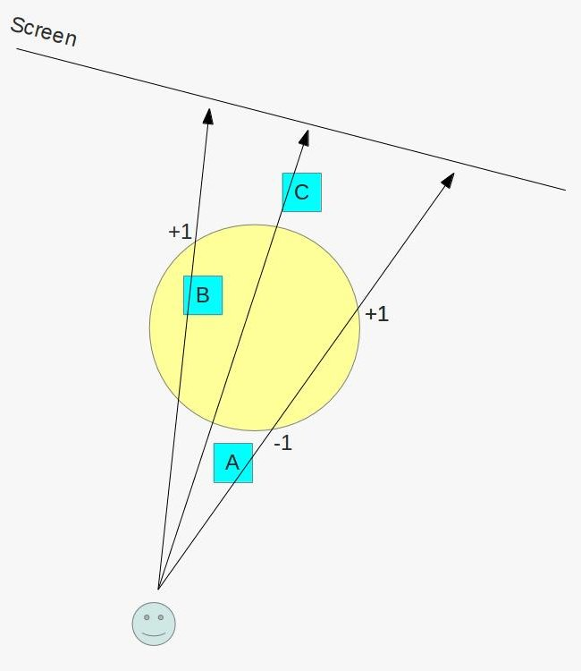
The picture shows three example vectors from the camera to the screen that cross both the sphere and one of the objects. Each vector is representative for all pixels covered by that particular object. Since the geometry was already rendered and the depth buffer is populated we can check what happens to the depth test when the vector goes through the front and back pixels of the sphere and update the stencil buffer accordingly. In the case of object A both the front and the back pixels fail the depth test. The back face pixel increments the stencil value but this is nullified by the front pixel which decrements it. In the case of object C both the front and back pixels win the depth test so the stencil value remains unchanged. Now pay attention to what happens to object B - the front face pixel wins the depth test but the back face pixel fails it. This means that we increment the value by one.
This is the core of the technique. We render the geometry into the G buffer, setup the stencil test/operation according to the above and then render the bounding sphere of each light into the stencil buffer. The peculiar stencil setup that we saw guarantees that only the pixels in the stencil buffer covered by objects inside the bounding sphere will have a value greater than zero. We call this step the Stencil Pass and since we are only interested in writing into the stencil buffer we use a null fragment shader. Next we render the sphere again using the lighting fragment shader but this time we configure the stencil test to pass only when the stencil value of the pixel is different from zero. All the pixels of objects outside the light volume will fail the stencil test and we will calculate lighting on a very small subset of the pixels that are actually covered by the light sphere.
Let’s see another example, this time with more light sources:

As you can see, the logic still works (the case when the camera is inside the light source is left as an exercise for the reader).
One last note about the stencil buffer - it is not a separate buffer but actually part of the depth buffer. You can have depth/stencil buffer with 24 or 32 bits for depth and 8 bits for stencil in each pixel.
Source walkthru
(tutorial37.cpp:149)
1virtual void RenderSceneCB()
2{
3 CalcFPS();
4
5 m_scale += 0.05f;
6
7 m_pGameCamera->OnRender();
8
9 m_gbuffer.StartFrame();
10
11 DSGeometryPass();
12
13 // We need stencil to be enabled in the stencil pass to get the stencil buffer
14 // updated and we also need it in the light pass because we render the light
15 // only if the stencil passes.
16 glEnable(GL_STENCIL_TEST);
17
18 for (unsigned int i = 0 ; i < ARRAY_SIZE_IN_ELEMENTS(m_pointLight); i++) {
19 DSStencilPass(i);
20 DSPointLightPass(i);
21 }
22
23 // The directional light does not need a stencil test because its volume
24 // is unlimited and the final pass simply copies the texture.
25 glDisable(GL_STENCIL_TEST);
26
27 DSDirectionalLightPass();
28
29 DSFinalPass();
30
31 RenderFPS();
32
33 glutSwapBuffers();
34}
The piece of code above is the main render function with changes from the previous tutorial marked in bold. The first change is the call to the StartFrame() API of the GBuffer class. The GBuffer becomes quite complex in this tutorial and needs to be informed about the start of a new frame (changes to this class will be reviewed later but for now we’ll just mention that we are not rendering directly to the screen but to an intermediate buffer which will be copied to the main FBO). Next we enable the stencil test because we need it for the two upcoming passes. Now comes the most important change - for each light we do a stencil pass (which marks the relevant pixels) followed by a point light pass which depends on the stencil value. The reason why we need to handle each light source separately is because once a stencil value becomes greater than zero due to one of the lights we cannot tell whether another light source which also overlaps the same pixel is relevant or not.
After we finish with all the point lights we disable the stencil test because for a directional light we need to process all pixels anyway. The last change in the function is the final pass which is also a new pass required due to the complexity of the GBuffer class.
(tutorial37.cpp:185)
1void DSGeometryPass()
2{
3 m_DSGeomPassTech.Enable();
4
5 m_gbuffer.BindForGeomPass();
6
7 // Only the geometry pass updates the depth buffer
8 glDepthMask(GL_TRUE);
9
10 glClear(GL_COLOR_BUFFER_BIT | GL_DEPTH_BUFFER_BIT);
11
12 glEnable(GL_DEPTH_TEST);
13
14 Pipeline p;
15 p.SetCamera(m_pGameCamera->GetPos(), m_pGameCamera->GetTarget(), m_pGameCamera->GetUp());
16 p.SetPerspectiveProj(m_persProjInfo);
17 p.Rotate(0.0f, m_scale, 0.0f);
18
19 for (unsigned int i = 0 ; i < ARRAY_SIZE_IN_ELEMENTS(m_boxPositions) ; i++) {
20 p.WorldPos(m_boxPositions[i]);
21 m_DSGeomPassTech.SetWVP(p.GetWVPTrans());
22 m_DSGeomPassTech.SetWorldMatrix(p.GetWorldTrans());
23 m_box.Render();
24 }
25
26 // When we get here the depth buffer is already populated and the stencil pass
27 // depends on it, but it does not write to it.
28 glDepthMask(GL_FALSE);
29}
There are minor changes in the geometry pass. The function GBuffer::BindForWriting() has been renamed GBuffer::BindForGeomPass(). In addition, those of you with a sharp eye will notice that we no longer disabling blending and the depth test. Both of these items are now manipulated elsewhere.
(tutorial37.cpp:215)
1void DSStencilPass(unsigned int PointLightIndex)
2{
3 m_nullTech.Enable();
4
5 // Disable color/depth write and enable stencil
6 m_gbuffer.BindForStencilPass();
7
8 glEnable(GL_DEPTH_TEST);
9
10 glDisable(GL_CULL_FACE);
11
12 glClear(GL_STENCIL_BUFFER_BIT);
13
14 // We need the stencil test to be enabled but we want it
15 // to succeed always. Only the depth test matters.
16 glStencilFunc(GL_ALWAYS, 0, 0);
17
18 glStencilOpSeparate(GL_BACK, GL_KEEP, GL_INCR_WRAP, GL_KEEP);
19 glStencilOpSeparate(GL_FRONT, GL_KEEP, GL_DECR_WRAP, GL_KEEP);
20
21 Pipeline p;
22 p.WorldPos(m_pointLight[PointLightIndex].Position);
23 float BBoxScale = CalcPointLightBSphere(m_pointLight[PointLightIndex].Color,
24 m_pointLight[PointLightIndex].DiffuseIntensity);
25
26 p.Scale(BBoxScale, BBoxScale, BBoxScale);
27 p.SetCamera(m_pGameCamera->GetPos(), m_pGameCamera->GetTarget(), m_pGameCamera->GetUp());
28 p.SetPerspectiveProj(m_persProjInfo);
29
30 m_nullTech.SetWVP(p.GetWVPTrans());
31 m_bsphere.Render();
32}
Now comes the real meat - the stencil pass. Let’s review it step by step. We start by enabling the null technique. This is an extremely simple technique. The VS includes only a transformation of the position vector by the WVP matrix and the FS is empty. We don’t need anything in the FS because we are not updating the color buffer at all. Only the stencil buffer is updated so we just need something to drive rasterization. We bind the GBuffer for this pass and enable the depth test. We will later see that the point light pass disable the depth test but we need it here because the stencil operation depends on it. Next we disable culling because we want to process both the front and back faces of each polygon. After that we clear the stencil buffer and setup the stencil test to always pass and the stencil operation according to the description in the background section. Everything after that is as usual - we render the bounding sphere based on the light params. When we are done the stencil buffer contains positive values only in the pixels of objects inside the light volume. We can now do lighting calculations.
(tutorial37.cpp:246)
1void DSPointLightPass(unsigned int PointLightIndex)
2{
3 m_gbuffer.BindForLightPass();
4
5 m_DSPointLightPassTech.Enable();
6 m_DSPointLightPassTech.SetEyeWorldPos(m_pGameCamera->GetPos());
7
8 glStencilFunc(GL_NOTEQUAL, 0, 0xFF);
9
10 glDisable(GL_DEPTH_TEST);
11 glEnable(GL_BLEND);
12 glBlendEquation(GL_FUNC_ADD);
13 glBlendFunc(GL_ONE, GL_ONE);
14
15 glEnable(GL_CULL_FACE);
16 glCullFace(GL_FRONT);
17
18 Pipeline p;
19 p.WorldPos(m_pointLight[PointLightIndex].Position);
20 float BBoxScale = CalcPointLightBSphere(m_pointLight[PointLightIndex].Color, m_pointLight[PointLightIndex].DiffuseIntensity);
21
22 p.Scale(BBoxScale, BBoxScale, BBoxScale);
23 p.SetCamera(m_pGameCamera->GetPos(), m_pGameCamera->GetTarget(), m_pGameCamera->GetUp());
24 p.SetPerspectiveProj(m_persProjInfo);
25 m_DSPointLightPassTech.SetWVP(p.GetWVPTrans());
26 m_DSPointLightPassTech.SetPointLight(m_pointLight[PointLightIndex]);
27 m_bsphere.Render();
28 glCullFace(GL_BACK);
29
30 glDisable(GL_BLEND);
31}
Same as the other passes the point light pass starts by setting up the G buffer for what it needs (by calling GBuffer::BindForLightPass()). It sets up the stencil test to pass when the stencil value is not equal to zero. After that it disables the depth test (because we don’t need it and on some GPUs we may get some performance by disabling it) and enable blending as usual. The next step is very important - we enable culling of the front face polygons. The reason why we do that is because the camera may be inside the light volume and if we do back face culling as we normally do we will not see the light until we exit its volume. After that we render the bounding sphere as usual.
The directional light pass is pretty much the same as before so we won’t review it.
(tutorial37.cpp:296)
1void DSFinalPass()
2{
3 m_gbuffer.BindForFinalPass();
4 glBlitFramebuffer(0, 0, WINDOW_WIDTH, WINDOW_HEIGHT,
5 0, 0, WINDOW_WIDTH, WINDOW_HEIGHT, GL_COLOR_BUFFER_BIT,
6 GL_LINEAR);
7}
In the final pass we blit from the color buffer inside the G Buffer into the screen. This is a good place to discuss why we added an intermediate color buffer in the G Buffer instead of rendering directly to the screen. The thing is that our G Buffer combines as a target the buffers for the attributes with the depth/stencil buffer. When we run the point light pass we setup the stencil stuff and we need to use the values from the depth buffer. Here we have a problem - if we render into the default FBO we won’t have access to the depth buffer from the G Buffer. But the G Buffer must have its own depth buffer because when we render into its FBO we don’t have access to the depth buffer from the default FBO. Therefore, the solution is to add to the G Buffer FBO a color buffer to render into and in the final pass blit it to the default FBO color buffer. This is the final pass above.
(gbuffer.h:23)
1class GBuffer
2{
3public:
4
5 enum GBUFFER_TEXTURE_TYPE {
6 GBUFFER_TEXTURE_TYPE_POSITION,
7 GBUFFER_TEXTURE_TYPE_DIFFUSE,
8 GBUFFER_TEXTURE_TYPE_NORMAL,
9 GBUFFER_NUM_TEXTURES
10 };
11
12 GBuffer();
13
14 ~GBuffer();
15
16 bool Init(unsigned int WindowWidth, unsigned int WindowHeight);
17
18 void StartFrame();
19 void BindForGeomPass();
20 void BindForStencilPass();
21 void BindForLightPass();
22 void BindForFinalPass();
23
24private:
25
26 GLuint m_fbo;
27 GLuint m_textures[GBUFFER_NUM_TEXTURES];
28 GLuint m_depthTexture;
29 GLuint m_finalTexture;
30};
We’ve added a final texture to the GBuffer class for the color and reshuffled the API quite a bit since the last tutorial. Let’s review the changes.
(gbuffer.cpp:52)
1bool GBuffer::Init(unsigned int WindowWidth, unsigned int WindowHeight)
2{
3 ...
4
5 glGenTextures(1, &m_finalTexture);
6
7 ...
8
9 // depth
10 glBindTexture(GL_TEXTURE_2D, m_depthTexture);
11 glTexImage2D(GL_TEXTURE_2D, 0, GL_DEPTH32F_STENCIL8, WindowWidth, WindowHeight, 0,
12 GL_DEPTH_STENCIL,
13 GL_FLOAT_32_UNSIGNED_INT_24_8_REV, NULL);
14 glFramebufferTexture2D(GL_FRAMEBUFFER, GL_DEPTH_STENCIL_ATTACHMENT, GL_TEXTURE_2D, m_depthTexture, 0);
15
16 // final
17 glBindTexture(GL_TEXTURE_2D, m_finalTexture);
18 glTexImage2D(GL_TEXTURE_2D, 0, GL_RGBA, WindowWidth, WindowHeight, 0, GL_RGB, GL_FLOAT, NULL);
19 glFramebufferTexture2D(GL_FRAMEBUFFER, GL_COLOR_ATTACHMENT4, GL_TEXTURE_2D, m_finalTexture, 0);
20
21 ...
22}
When we initialize the G Buffer we need to allocate one more texture for the final texture. The final texture is attached to attachment point number 4. The depth texture is no longer created with type GL_DEPTH_COMPONENT32F. Instead we create it as GL_DEPTH32F_STENCIL8. This leave a full byte for the stencil value in each pixel. This depth buffer is attached to GL_DEPTH_STENCIL_ATTACHMENT instead of GL_DEPTH_COMPONENT.
(gbuffer.cpp:97)
1void GBuffer::StartFrame()
2{
3 glBindFramebuffer(GL_DRAW_FRAMEBUFFER, m_fbo);
4 glDrawBuffer(GL_COLOR_ATTACHMENT4);
5 glClear(GL_COLOR_BUFFER_BIT);
6}
At the start of each frame we need to clear the final texture which is attached to attachment point number 4.
(gbuffer.cpp:105)
1void GBuffer::BindForGeomPass()
2{
3 glBindFramebuffer(GL_DRAW_FRAMEBUFFER, m_fbo);
4
5 GLenum DrawBuffers[] = { GL_COLOR_ATTACHMENT0,
6 GL_COLOR_ATTACHMENT1,
7 GL_COLOR_ATTACHMENT2 };
8
9 glDrawBuffers(ARRAY_SIZE_IN_ELEMENTS(DrawBuffers), DrawBuffers);
10}
Previously the FBO in the G Buffer was static (in terms of its configuration) and was set up in advance so we just had to bind it for writing when the geometry pass started. Now we keep changing the FBO to we need to config the draw buffers for the attributes each time.
(gbuffer.cpp:117)
1void GBuffer::BindForStencilPass()
2{
3 // must disable the draw buffers
4 glDrawBuffer(GL_NONE);
5}
As mentioned earlier, in the stencil test we are not writing to the color buffer, only the stencil buffer. Indeed, even our FS is empty. However, in that case the default output color from the FS is black. In order to avoid garbaging the final buffer with a black image of the bounding sphere we disable the draw buffers here.
(gbuffer.cpp:125)
1void GBuffer::BindForLightPass()
2{
3 glDrawBuffer(GL_COLOR_ATTACHMENT4);
4
5 for (unsigned int i = 0 ; i < ARRAY_SIZE_IN_ELEMENTS(m_textures); i++) {
6 glActiveTexture(GL_TEXTURE0 + i);
7 glBindTexture(GL_TEXTURE_2D, m_textures[GBUFFER_TEXTURE_TYPE_POSITION + i]);
8 }
9}
The light pass is straightforward. We set the target to be the final buffer and bind the attribute buffers as a source.
(gbuffer.cpp:136)
1void GBuffer::BindForFinalPass()
2{
3 glBindFramebuffer(GL_DRAW_FRAMEBUFFER, 0);
4 glBindFramebuffer(GL_READ_FRAMEBUFFER, m_fbo);
5 glReadBuffer(GL_COLOR_ATTACHMENT4);
6}
When we get to the final pass our final buffer is populated with the final image. Here we set things up for the blitting that takes place in the main application code. The default FBO is the target and the G Buffer FBO is the source.
This tutorial completes our introduction to deferred shading. It is definitely not the only “right way” to do it and you can find alternatives on the web but the core concepts are probably common. Like everything is life, it has its advantages and disadvantages. In future tutorials we will spend time on both forward and deferred rendering and improve their frameworks with new features.
Tutorial 38:Skeletal Animation With Assimp
Background
Finally, it is here. The tutorial that millions of my readers (I may be exaggerating here, but definitely a few ;-) ) have been asking for. Skeletal animation, also known as Skinning, using the Assimp library.
Skeletal animation is actually a two part process. The first one is executed by the artist and the second by you, the programmer (or rather, the engine that you wrote). The first part takes place inside the modeling software and is called Rigging. What happens here is that the artist defines a skeleton of bones underneath the mesh. The mesh represents the skin of the object (be it a human, monster or whatever) and the bones are used to move the mesh in a way that would mimic actual movement in the real world. This is done by assigning each vertex to one or more bones. When a vertex is assigned to a bone a weight is defined that determines the amount of influence that bone has on the vertex when it moves. The common practice is to make the sum of all weights 1 (per vertex). For example, if a vertex is located exactly between two bones we would probably want to assign each bone a weight of 0.5 because we expect the bones to be equal in their influence on the vertex. However, if a vertex is entirely within the influence of a single bone then the weight would be 1 (which means that bone autonomously controls the movement of the vertex).
Here’s an example of a bone structure created in blender:
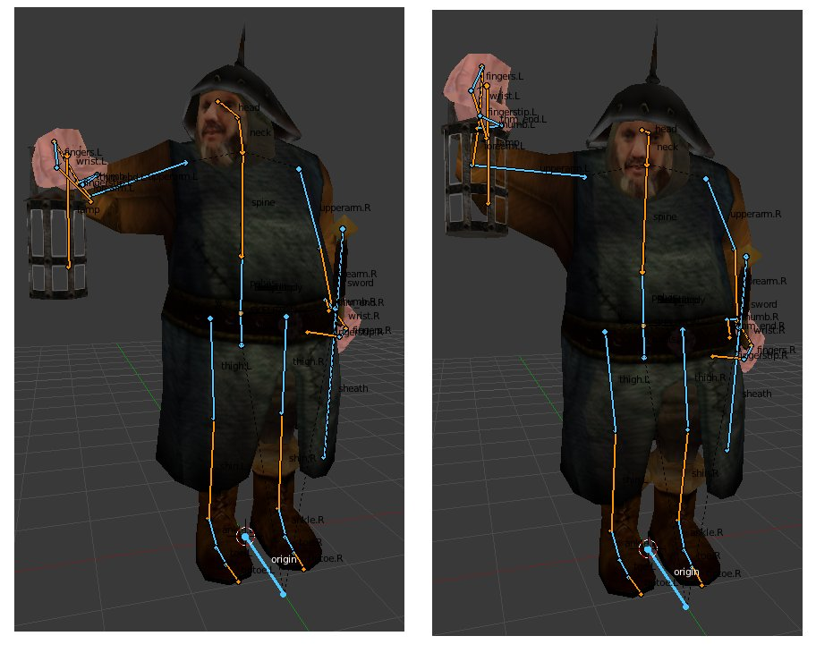
What we see above is actually an important part of the animation. The artist riggs together the bone structure and defines a set of key frames for each animation type (“walk”, “run”, “die”, etc). The key frames contain the transformations of all bones in critical points along the animation path. The graphics engine interpolates between the transformations of the keyframes and creates a smooth motion between them.
The bone structure used for skeletal animation is often heirarchical. This means that the bones have a child/parent relationships so a tree of bones is created. Every bone has one parent except for the root bone. In the case of the human body, for example, you may assign the back bone as the root with child bones such as arms and legs and finger bones on the next level done. When a parent bone moves it also moves all of its children, but when a child bone moves it does not move it parent (our fingers can move without moving the hand, but when the hand moves it moves all of its fingers). From a practical point of view this means that when we process the transformations of a bone we need to combine it with the transformations of all the parent bones that lead from it to the root.
We are not going to discuss rigging any further. It is a complex subject and outside the domain of graphics programmers. Modeling software has advanced tools to help the artist do this job and you need to be a good artist to create a good looking mesh and skeleton. Let’s see what the graphics engine needs to do in order to make skeletal animation.
The first stage is to augument the vertex buffer with per vertex bone information. There are several options available but what we are going to do is pretty straightforward. For each vertex we are going to add an array of slots where each slot contains a bone ID and a weight. To make our life simpler we will use an array with four slots which means no vertex can be influenced by more than four bones. If you are going to load models with more bones you will need to adjust the array size but for the Doom 3 model that is part of this tutorial demo four bones are enough. So our new vertex structure is going to look like this:

The bone IDs are indices into an array of bone transformations. These tranformations will be applied on the position and normal before the WVP matrix (i.e. they transform the vertex from a “bone space” into local space). The weight will be used to combine the transformations of several bones into a single transformation and in any case the total weight must be exactly 1 (responsibility of the modeling software). Usually, we would interpolate between animation key frames and update the array of bone transformations in every frame.
The way the array of bone transformations is created is usually the tricky part. The transformations are set in a heirarchical structure (i.e. tree) and a common practice is to have a scaling vector, a rotation quaternion and a translation vector in every node in the tree. In fact, each node contains an array of these items. Every entry in the array must have a time stamp. The case where the application time will exactly match one of the time stamps is probably rare so our code must be able to interpolate the scaling/rotation/translation to get the correct transformation for the point in time of the application. We do the same process for each node from the current bone to the root and multiply this chain of transformations together to get the final result. We do that for each bone and then update the shader.
Everything that we talked about so far has been pretty generic. But this is a tutorial about skeletal animation with Assimp, so we need to dive into that library again and see how to do skinning with it. The good thing about Assimp is that it supports loading bone information from several formats. The bad thing is that you still need to do quite a bit of work on the data structures that it creates to generate the bone transformations that you need for the shaders.
Let’s start at the bone information at the vertex level. Here’s the relevant pieces in Assimp data structures:

As you probably recall from the tutorial on Assimp, everything is contained in the aiScene class (an object of which we get when we import the mesh file). The aiScene contains an array of aiMesh objects. An aiMesh is a part of the model and contains stuff at the vertex level such as position, normal, texture coordinates, etc. Now we see that aiMesh also contains an array of aiBone objects. Unsuprisingly, an aiBone represents one bone in the skeleton of the mesh. Each bone has a name by which it can be found in the bone hierarchy (see below), an array of vertex weights and a 4x4 offset matrix. The reason why we need this matrix is because the vertices are stored in the usual local space. This means that even without skeletal animation support our existing code base can load the model and render it correctly. But the bone transformations in the hierarchy work in a bone space (and every bone has its own space which is why we need to multiply the transformations together). So the job of the offset matrix it to move the vertex position from the local space of the mesh into the bone space of that particular bone.
The vertex weight array is where things start to become interesting. Each entry in this array contains an index into the array of vertices in the aiMesh (remember that the vertex is spread across several arrays with the same length) and a weight. The sum of all vertex weights must be 1 but to find them you need to walk through all the bones and accumulate the weights into a kind of list for each particular vertex.
After we build the bone information at the vertex level we need to process the bone transformation hierarchy and generate the final transformations that we will load into the shader. The following picture displays the relevant data structures:

Again, we start at the aiScene. The aiScene object contains a pointer to an object of the aiNode class which is the root of the a node hierarchy (in other words - a tree). Each node in the tree has a pointer back to its parent and an array of pointers to its children. This allows us to conveniently traverse the tree back and forth. In addition, the node carries a transformation matrix that transforms from the node space into the space of its parent. Finally, the node may or may not have a name. If a node represents a bone in the hierarchy then the node name must match the bone name. But sometimes nodes have no name (which means there is not corresponding bone) and their job is simply to help the modeller decompose the model and place some intermediate transformation along the way.
The last piece of the puzzle is the aiAnimation array which is also stored in the aiScene object. A single aiAnimation object represents a sequence of animation frames such as “walk”, “run”, “shoot”, etc. By interpolating between the frames we get the desired visual effect which matches the name of the animation. An animation has a duration in ticks and the number of ticks per second (e.g 100 ticks and 25 ticks per second represent a 4 second animation) which help us time the progression so that the animation will look the same on every hardware. In addition, the animation has an array of aiNodeAnim objects called channels. Each channel is actually the bone with all its transformations. The channel contains a name which must match one of the nodes in the hierarchy and three transformation arrays.
In order to calculate the final bone transformation in a particular point in time we need to find the two entries in each of these three arrays that matches the time and interpolate between them. Then we need to combine the transformations into a single matrix. Having done that we need to find the corresponding node in the hierarchy and travel to its parent. Then we need the corresponding channel for the parent and do the same interpolation process. We multiply the two transformations together and continue until we reach the root of the hierarchy.
Source walkthru
(mesh.cpp:75)
1bool Mesh::LoadMesh(const string& Filename)
2{
3 // Release the previously loaded mesh (if it exists)
4 Clear();
5
6 // Create the VAO
7 glGenVertexArrays(1, &m_VAO);
8 glBindVertexArray(m_VAO);
9
10 // Create the buffers for the vertices attributes
11 glGenBuffers(ARRAY_SIZE_IN_ELEMENTS(m_Buffers), m_Buffers);
12
13 bool Ret = false;
14
15 m_pScene = m_Importer.ReadFile(Filename.c_str(), aiProcess_Triangulate |
16 aiProcess_GenSmoothNormals |
17 aiProcess_FlipUVs);
18
19 if (m_pScene) {
20 m_GlobalInverseTransform = m_pScene->mRootNode->mTransformation;
21 m_GlobalInverseTransform.Inverse();
22 Ret = InitFromScene(**m_pScene**, Filename);
23 }
24 else {
25 printf("Error parsing '%s': '%s'\n", Filename.c_str(), m_Importer.GetErrorString());
26 }
27
28 // Make sure the VAO is not changed from the outside
29 glBindVertexArray(0);
30
31 return Ret;
32}
Here’s the updated entry point to the Mesh class with changes marked in bold face. There are a couple of changes that we need to note. One is that the importer and aiScene object are now class members rather then stack variables. The reason is that during runtime we are going to go back to the aiScene object again and again and for that we need to extend the scope of both the importer and the scene. In a real game you may want to copy the stuff that you need and store it at a more optimized format but for educational purposes this is enough.
The second change is that the transformation matrix of the root of the hierarchy is extracted, inversed and stored. We are going to use that further down the road. Note that the matrix inverse code has been copied from the Assimp library into our Matrix4f class.
(mesh.h:69)
1struct VertexBoneData
2{
3 uint IDs[NUM_BONES_PER_VERTEX];
4 float Weights[NUM_BONES_PER_VERTEX];
5}
(mesh.cpp:107)
1bool Mesh::InitFromScene(const aiScene* pScene, const string& Filename)
2{
3 ...
4 vector<VertexBoneData> Bones;
5 ...
6 Bones.resize(NumVertices);
7 ...
8
9 glBindBuffer(GL_ARRAY_BUFFER, m_Buffers[BONE_VB]);
10 glBufferData(GL_ARRAY_BUFFER, sizeof(Bones[0]) * Bones.size(), &Bones[0], GL_STATIC_DRAW);
11 glEnableVertexAttribArray(BONE_ID_LOCATION);
12 glVertexAttribIPointer**(BONE_ID_LOCATION, 4, GL_INT, sizeof(VertexBoneData), (const GLvoid*)0);
13 glEnableVertexAttribArray(BONE_WEIGHT_LOCATION);
14 glVertexAttribPointer(BONE_WEIGHT_LOCATION, 4, GL_FLOAT, GL_FALSE,
15 sizeof(VertexBoneData), (const GLvoid*)16);
16 ...
17}
The structure above contains everything we need at the vertex level. By default, we have enough storage for four bones (ID and weight per bone). VertexBoneData was structured like that to make it simple to pass it on to the shader. We already got position, texture coordinates and normal bound at locations 0, 1 and 2, respectively. Therefore, we configure our VAO to bind the bone IDs at location 3 and the weights at location 4. It is very important to note that we use glVertexAttribIPointer rather than glVertexAttribPointer to bind the IDs. The reason is that the IDs are integer and not floating point. Pay attention to this or you will get corrupted data in the shader.
(mesh.cpp:213)
1void Mesh::LoadBones(uint MeshIndex, const aiMesh* pMesh, vector& Bones)
2{
3 for (uint i = 0 ; i < pMesh->mNumBones ; i++) {
4 uint BoneIndex = 0;
5 string BoneName(pMesh->mBones[i]->mName.data);
6
7 if (m_BoneMapping.find(BoneName) == m_BoneMapping.end()) {
8 BoneIndex = m_NumBones;
9 m_NumBones++;
10 BoneInfo bi;
11 m_BoneInfo.push_back(bi);
12 }
13 else {
14 BoneIndex = m_BoneMapping[BoneName];
15 }
16
17 m_BoneMapping[BoneName] = BoneIndex;
18 m_BoneInfo[BoneIndex].BoneOffset = pMesh->mBones[i]->mOffsetMatrix;
19
20 for (uint j = 0 ; j < pMesh->mBones[i]->mNumWeights ; j++) {
21 uint VertexID = m_Entries[MeshIndex].BaseVertex + pMesh->mBones[i]->mWeights[j].mVertexId;
22 float Weight = pMesh->mBones[i]->mWeights[j].mWeight;
23 Bones[VertexID].AddBoneData(BoneIndex, Weight);
24 }
25 }
26}
The function above loads the vertex bone information for a single aiMesh object. It is called from Mesh::InitMesh(). In addition to populating the VertexBoneData structure this function also updates a map between bone names and bone IDs (a running index managed by this function) and stores the offset matrix in a vector based on the bone ID. Note how the vertex ID is calculated. Since vertex IDs are relevant to a single mesh and we store all meshes in a single vector we add the base vertex ID of the current aiMesh to vertex ID from the mWeights array to get the absolute vertex ID.
(mesh.cpp:29)
1void Mesh::VertexBoneData::AddBoneData(uint BoneID, float Weight)
2{
3 for (uint i = 0 ; i < ARRAY_SIZE_IN_ELEMENTS(IDs) ; i++) {
4 if (Weights[i] == 0.0) {
5 IDs[i] = BoneID;
6 Weights[i] = Weight;
7 return;
8 }
9 }
10
11 // should never get here - more bones than we have space for
12 assert(0);
13}
This utility function finds a free slot in the VertexBoneData structure and places the bone ID and weight in it. Some vertices will be influenced by less than four bones but since the weight of a non existing bone remains zero (see the constructor of VertexBoneData) it means that we can use the same weight calculation for any number of bones.
(mesh.cpp:473)
1Matrix4f Mesh::BoneTransform(float TimeInSeconds, vector<Matrix4f>& Transforms)
2{
3 Matrix4f Identity;
4 Identity.InitIdentity();
5
6 float TicksPerSecond = m_pScene->mAnimations[0]->mTicksPerSecond != 0 ? m_pScene->mAnimations[0]->mTicksPerSecond : 25.0f;
7
8 float TimeInTicks = TimeInSeconds * TicksPerSecond;
9 float AnimationTime = fmod(TimeInTicks, m_pScene->mAnimations[0]->mDuration);
10
11 ReadNodeHierarchy(AnimationTime, m_pScene->mRootNode, Identity);
12
13 Transforms.resize(m_NumBones);
14
15 for (uint i = 0 ; i < m_NumBones ; i++) {
16 Transforms[i] = m_BoneInfo[i].FinalTransformation;
17 }
18}
Loading of the bone information at the vertex level that we saw earlier is done only once when the mesh is loading during startup. Now we come to the second part which is calculating the bone transformations that go into the shader every frame. The function above is the entry point to this activity. The caller reports the current time in seconds (which can be a fraction) and provides a vector of matrices which we must update. We find the relative time inside the animation cycle and process the node hierarchy. The result is an array of transformations which is returned to the caller.
(mesh.cpp:428)
1void Mesh::ReadNodeHierarchy(float AnimationTime, const aiNode* pNode, const Matrix4f& ParentTransform)
2{
3 string NodeName(pNode->mName.data);
4
5 const aiAnimation* pAnimation = m_pScene->mAnimations[0];
6
7 Matrix4f NodeTransformation(pNode->mTransformation);
8
9 const aiNodeAnim* pNodeAnim = FindNodeAnim(pAnimation, NodeName);
10
11 if (pNodeAnim) {
12 // Interpolate scaling and generate scaling transformation matrix
13 aiVector3D Scaling;
14 CalcInterpolatedScaling(Scaling, AnimationTime, pNodeAnim);
15 Matrix4f ScalingM;
16 ScalingM.InitScaleTransform(Scaling.x, Scaling.y, Scaling.z);
17
18 // Interpolate rotation and generate rotation transformation matrix
19 aiQuaternion RotationQ;
20 CalcInterpolatedRotation(RotationQ, AnimationTime, pNodeAnim);
21 Matrix4f RotationM = Matrix4f(RotationQ.GetMatrix());
22
23 // Interpolate translation and generate translation transformation matrix
24 aiVector3D Translation;
25 CalcInterpolatedPosition(Translation, AnimationTime, pNodeAnim);
26 Matrix4f TranslationM;
27 TranslationM.InitTranslationTransform(Translation.x, Translation.y, Translation.z);
28
29 // Combine the above transformations
30 NodeTransformation = TranslationM * RotationM * ScalingM;
31 }
32
33 Matrix4f GlobalTransformation = ParentTransform * NodeTransformation;
34
35 if (m_BoneMapping.find(NodeName) != m_BoneMapping.end()) {
36 uint BoneIndex = m_BoneMapping[NodeName];
37 m_BoneInfo[BoneIndex].FinalTransformation = m_GlobalInverseTransform *
38 GlobalTransformation *
39 m_BoneInfo[BoneIndex].BoneOffset;
40 }
41
42 for (uint i = 0 ; i < pNode->mNumChildren ; i++) {
43 ReadNodeHierarchy(AnimationTime, pNode->mChildren[i], GlobalTransformation);
44 }
45}
This function traverses the node tree and generates the final transformation for each node/bone according to the specified animation time. It is limited in the sense that it assumes that the mesh has only a single animation sequence. If you want to support multiple animations you will need to tell it the animation name and search for it in the m_pScene->mAnimations[] array. The code above is good enough for the demo mesh that we use.
The node transformation is initialized from the mTransformation member in the node. If the node does not correspond to a bone then that is its final transformation. If it does we overwrite it with a matrix that we generate. This is done as follows: first we search for the node name in the channel array of the animation. Then we interpolate the scaling vector, rotation quaternion and translation vector based on the animation time. We combine them into a single matrix and multiply with the matrix we got as a parameter (named GlobablTransformation). This function is recursive and is called for the root node with the GlobalTransformation param being the identity matrix. Each node recursively calls this function for all of its children and passes its own transformation as GlobalTransformation. Since we start at the top and work our way down, we get the combined transformation chain at every node.
The m_BoneMapping array maps a node name to the index that we generate and we use that index to as an entry into the m_BoneInfo array where the final transformations are stored. The final transformation is calculated as follows: we start with the node offset matrix which brings the vertices from their local space position into their node space. We then multiple with the combined transformations of all of the nodes parents plus the specific transformation that we calculated for the node according to the animation time.
Note that we use Assimp code here to handle the math stuff. I saw no point in duplicating it into our own code base so I simply used Assimp.
(mesh.cpp:387)
1void Mesh::CalcInterpolatedRotation(aiQuaternion& Out, float AnimationTime, const aiNodeAnim* pNodeAnim)
2{
3 // we need at least two values to interpolate...
4 if (pNodeAnim->mNumRotationKeys == 1) {
5 Out = pNodeAnim->mRotationKeys[0].mValue;
6 return;
7 }
8
9 uint RotationIndex = FindRotation(AnimationTime, pNodeAnim);
10 uint NextRotationIndex = (RotationIndex + 1);
11 assert(NextRotationIndex < pNodeAnim->mNumRotationKeys);
12 float DeltaTime = pNodeAnim->mRotationKeys[NextRotationIndex].mTime - pNodeAnim->mRotationKeys[RotationIndex].mTime;
13 float Factor = (AnimationTime - (float)pNodeAnim->mRotationKeys[RotationIndex].mTime) / DeltaTime;
14 assert(Factor >= 0.0f && Factor <= 1.0f);
15 const aiQuaternion& StartRotationQ = pNodeAnim->mRotationKeys[RotationIndex].mValue;
16 const aiQuaternion& EndRotationQ = pNodeAnim->mRotationKeys[NextRotationIndex].mValue;
17 aiQuaternion::Interpolate(Out, StartRotationQ, EndRotationQ, Factor);
18 Out = Out.Normalize();
19}
This method interpolates the rotation quaternion of the specified channel based on the animation time (remember that the channel contains an array of key quaternions). First we find the index of the key quaternion which is just before the required animation time. We calculate the ratio between the distance from the animation time to the key before it and the distance between that key and the next. We need to interpolate between these two keys using that factor. We use an Assimp code to do the interpolation and normalize the result. The corresponding methods for position and scaling are very similar so they are not quoted here.
(mesh.cpp:335)
1uint Mesh::FindRotation(float AnimationTime, const aiNodeAnim* pNodeAnim)
2{
3 assert(pNodeAnim->mNumRotationKeys > 0);
4
5 for (uint i = 0 ; i < pNodeAnim->mNumRotationKeys - 1 ; i++) {
6 if (AnimationTime < (float)pNodeAnim->mRotationKeys[i + 1].mTime) {
7 return i;
8 }
9 }
10
11 assert(0);
12}
This utility method finds the key rotation which is immediately before the animation time. If we have N key rotations the result can be 0 to N-2. The animation time is always contained inside the duration of the channel so the last key (N-1) can never be a valid result.
(skinning.vs)
1#version 330
2
3layout (location = 0) in vec3 Position;
4layout (location = 1) in vec2 TexCoord;
5layout (location = 2) in vec3 Normal;
6layout (location = 3) in ivec4 BoneIDs;
7layout (location = 4) in vec4 Weights;
8
9out vec2 TexCoord0;
10out vec3 Normal0;
11out vec3 WorldPos0;
12
13const int MAX_BONES = 100;
14
15uniform mat4 gWVP;
16uniform mat4 gWorld;
17uniform mat4 gBones[MAX_BONES];
18
19void main()
20{
21 mat4 BoneTransform = gBones[BoneIDs[0]] * Weights[0];
22 BoneTransform += gBones[BoneIDs[1]] * Weights[1];
23 BoneTransform += gBones[BoneIDs[2]] * Weights[2];
24 BoneTransform += gBones[BoneIDs[3]] * Weights[3];
25
26 vec4 PosL = BoneTransform * vec4(Position, 1.0);
27 gl_Position = gWVP * PosL;
28 TexCoord0 = TexCoord;
29 vec4 NormalL = BoneTransform * vec4(Normal, 0.0);
30 Normal0 = (gWorld * NormalL).xyz;
31 WorldPos0 = (gWorld * PosL).xyz;
32}
Now that we have finished with the changes in the mesh class let’s see what we need to do at the shader level. First, we’ve added the bone IDs and weights array to the VSInput structure. Next, there is a new uniform array that contains the bone transformations. In the shader itself we calculate the final bone transformation as a combination of the bone transformation matrices of the vertex and their weights. This final matrix is used to transform the position and normal from their bone space into the local space. From here on everything is the same.
(tutorial38.cpp:140)
1float RunningTime = (float)((double)GetCurrentTimeMillis() - (double)m_startTime) / 1000.0f;
2
3m_mesh.BoneTransform(RunningTime, Transforms);
4
5for (uint i = 0 ; i < Transforms.size() ; i++) {
6 m_pEffect->SetBoneTransform(i, Transforms[i]);
7}
The last thing we need to do is to integrate all this stuff into the application code. This is done in the above simple code. The function GetCurrentTimeMillis() returns the time in milliseconds since the application startup (note the floating point to accomodate fractions).
If you’ve done everything correctly then the final result should look similar to this.
Tutorial 39:Silhouette Detection
Background
Today we are going to discuss one way in which the silhouette of an object can be detected. To make things clearer, I’m referring to the silhouette of a 3D object which is created when light falls upon it from an arbitrary direction. Moving the light source will likely change the silhouette accordingly. This is entirely different from silhouette detection in image space that deals with finding the boundaries of an object in a 2D picture (which is usually not dependant on the location of the light source). While the subject of silhouette detection may be interesting by itself, for me its main goal is as a first step in the implementation of a Stencil Shadow Volume. This is a technique for rendering shadows which is particularly useful when dealing with point lights. We will study this technique in the next tutorial (so you may refer to this tutorial as “Stencil Shadow Volume - Part 1”…).
The following image demonstrates the silhouette that we want to detect:

In the image above the silhouette is the ellipsis which is touched by the light rays.
Let us now move to a more traditional 3D language. A model is basically composed of triangles so the silhouette must be created by triangle edges. How do we decide whether an edge is part of the silhouette or not? The trick is based on the diffuse light model. According to that model the light strength is based on the dot product between the triangle normal and the light vector. If the triangle faces away from the light source the result of this dot product operation will be less than or equal to zero. In that case the light doesn’t affect the triangle at all. In order to decide whether a triangle edge is part of the silhouette or not we need to find the adjacent triangle that shares the same edge and calculate the dot product between the light direction and the normals of both the original triangle and its neighbor. An edge is considered a silhouette edge if one triangle faces the light but its neighbor does not.
The following picture shows a 2D object for simplicity:

The red arrow represents the light ray that hits the three edges (in 3D these would be triangles) whose normals are 1, 2 and 3 (dot product between these normals and the reverse of the light vector is obviously greater than zero). The edges whose normals are 4, 5 and 6 are facing away from the light (here the same dot product would be less than or equal to zero). The two blue circles mark the silhouette of the object and the reason is that edge 1 is facing the light but its neighbor edge 6 does not. The point between them is therefore a silhoette. Same goes for the other silhouette point. Edges (or points in this example) that face the light as well as their neighbors are not silhoette (between 1 and 2 and between 2 and 3).
As you can see, the algorithm for finding the silhouette is very simple. However, it does require us to have knowledge of the three neighbors of each triangle. This is known as the Adjacencies of the triangles. Unfortunately, Assimp does not support automatic adjacencies calculation for us so we need to implement such an algorithm ourselves. In the coding section we will review a simple algorithm that will satisfy our needs.
What is the best place in the pipeline for the silhouette algorithm itself? remember that we need to do a dot product between the light vector and the triangle normal as well as the normals of the three adjacent triangles. This requires us to have access to the entire primitive information. Therefore, the VS is not enough. Looks like the GS is more appropriate since it allows access to all the vertices of a primitive. But what about the adjacencies? luckily for us, the designers of OpenGL have already given it much thought and created a topology type known as ’triangle with adjacencies’. If you provide a vertex buffer with adjacency information it will correctly load it and provide the GS with six vertices per triangle instead of three. The additional three vertices belong to the adjacent triangles and are not shared with the current triangle. The following image should make this much clearer:

The red vertices in the above picture belong to the original triangle and the blue ones are the adjacent vertices (ignore the edges e1-e6 for now - they are referenced later in the code section). When we supply a vertex buffer in the above format the VS is executed for every vertex (adjacent and non adjacent) and the GS (if it exists) is executed on a group of six vertices that include the triangle and its adjacent vertices. When the GS is present it is up to the developer to supply an output topology but if there is no GS the rasterizer knows how to deal with such a scheme and it rasterizes only the actual triangles (ignoring the adjacent triangles). One of the readers informed me that such a setup has produced an error on his Macbook with Intel HD 3000 so if you run into a similar problem simply use a pass thru GS, or change the topology type.
Note that the adjacent vertices in the vertex buffer have the same format and attributes as regular vertices. What makes them adjacent is simply their relative location within each group of six vertices. In the case of a model whose triangles are continuous the same vertices will sometimes be regular and sometimes adjacent, depending on the current triangle. This makes indexed draws even more attractive due to the saving of space in the vertex buffer.
Source walkthru
(mesh.cpp:204)
1void Mesh::FindAdjacencies(const aiMesh* paiMesh, vector& Indices)
2{
3 for (uint i = 0 ; i < paiMesh->mNumFaces ; i++) {
4 const aiFace& face = paiMesh->mFaces[i];
5
6 Face Unique;
7
8 // If a position vector is duplicated in the VB we fetch the
9 // index of the first occurrence.
10 for (uint j = 0 ; j < 3 ; j++) {
11 uint Index = face.mIndices[j];
12 aiVector3D& v = paiMesh->mVertices[Index];
13
14 if (m_posMap.find(v) == m_posMap.end()) {
15 m_posMap[v] = Index;
16 }
17 else {
18 Index = m_posMap[v];
19 }
20
21 Unique.Indices[j] = Index;
22 }
23
24 m_uniqueFaces.push_back(Unique);
25
26 Edge e1(Unique.Indices[0], Unique.Indices[1]);
27 Edge e2(Unique.Indices[1], Unique.Indices[2]);
28 Edge e3(Unique.Indices[2], Unique.Indices[0]);
29
30 m_indexMap[e1].AddNeigbor(i);
31 m_indexMap[e2].AddNeigbor(i);
32 m_indexMap[e3].AddNeigbor(i);
33 }
Most of the adjacency logic is contained in the above function and a few helper structures. The algorithm is composed of two stages. In the first stage we create a map between each edge and the two triangles that share it. This happens in the above for loop. In the first half of this loop we generate a map between each vertex position and the first index that refers to it. The reason why different indices may point to vertices that share the same position is that sometimes other attributes force Assimp to split the same vertex into two vertices. e.g. the same vertex may have different texture attributes for two neighboring triangles that share it. This creates a problem for our adjacency algorithm and we prefer to have each vertex appear only once. Therefore, we create this mapping between a position and first index and use only this index from now on.
(mesh.cpp:240)
1 for (uint i = 0 ; i < paiMesh->mNumFaces ; i++) {
2 const Face& face = m_uniqueFaces[i];
3
4 for (uint j = 0 ; j < 3 ; j++) {
5 Edge e(face.Indices[j], face.Indices[(j + 1) % 3]);
6 assert(m_indexMap.find(e) != m_indexMap.end());
7 Neighbors n = m_indexMap[e];
8 uint OtherTri = n.GetOther(i);
9
10 assert(OtherTri != -1)
11
12 const Face& OtherFace = m_uniqueFaces[OtherTri];
13 uint OppositeIndex = OtherFace.GetOppositeIndex(e);
14
15 Indices.push_back(face.Indices[j]);
16 Indices.push_back(OppositeIndex);
17 }
18 }
19}
In the second stage we populate the index vector with sets of six vertices each that match the topology of the triangle list with adjacency that we saw earlier. The map that we created in the first stage helps us here because for each edge in the triangle it is very easy to find the neighboring triangle that shares it and then the vertex in that triangle which is opposite to this edge. The last two lines in the loop alternate the content of the index buffer between vertices from the current triangle and vertices from the adjacent triangles that are opposite to edges of the current triangle.
There are a few additional minor changes to the Mesh class. I suggest you compare it to the version from the previous tutorial to make sure you capture all differences. One of the notable changes is that we use GL_TRIANGLES_ADJACENCY instead of GL_TRIANGLES as the topology when calling glDrawElementsBaseVertex(). If you forget that the GL will feed incorrectly sized primitives into the GS.
(silhouette.vs)
1#version 330
2
3layout (location = 0) in vec3 Position;
4layout (location = 1) in vec2 TexCoord;
5layout (location = 2) in vec3 Normal;
6
7out vec3 WorldPos0;
8
9uniform mat4 gWVP;
10uniform mat4 gWorld;
11
12void main()
13{
14 vec4 PosL = vec4(Position, 1.0);
15 gl_Position = gWVP * PosL;
16 WorldPos0 = (gWorld * PosL).xyz;
17}
In today’s demo we are going to detect the silhouette of an object and mark it by a thick red line. The object itself will be drawn using our standard forward rendering lighting shader and the silhouette will be drawn using a dedicated shader. The code above belongs to the VS of that shader. There is nothing special about it. We just need to transform the position into clip space using the WVP matrix and provide the GS with the vertices in world space (since the silhouette algorithm takes place in world space).
(silhouette.gs)
1#version 330
2
3layout (triangles_adjacency) in;
4layout (line_strip, max_vertices = 6) out;
5
6in vec3 WorldPos0[];
7
8void EmitLine(int StartIndex, int EndIndex)
9{
10 gl_Position = gl_in[StartIndex].gl_Position;
11 EmitVertex();
12
13 gl_Position = gl_in[EndIndex].gl_Position;
14 EmitVertex();
15
16 EndPrimitive();
17}
18
19uniform vec3 gLightPos;
20
21void main()
22{
23 vec3 e1 = WorldPos0[2] - WorldPos0[0];
24 vec3 e2 = WorldPos0[4] - WorldPos0[0];
25 vec3 e3 = WorldPos0[1] - WorldPos0[0];
26 vec3 e4 = WorldPos0[3] - WorldPos0[2];
27 vec3 e5 = WorldPos0[4] - WorldPos0[2];
28 vec3 e6 = WorldPos0[5] - WorldPos0[0];
29
30 vec3 Normal = cross(e1,e2);
31 vec3 LightDir = gLightPos - WorldPos0[0];
32
33 if (dot(Normal, LightDir) > 0.00001) {
34
35 Normal = cross(e3,e1);
36
37 if (dot(Normal, LightDir) <= 0) {
38 EmitLine(0, 2);
39 }
40
41 Normal = cross(e4,e5);
42 LightDir = gLightPos - WorldPos0[2];
43
44 if (dot(Normal, LightDir) <=0) {
45 EmitLine(2, 4);
46 }
47
48 Normal = cross(e2,e6);
49 LightDir = gLightPos - WorldPos0[4];
50
51 if (dot(Normal, LightDir) <= 0) {
52 EmitLine(4, 0);
53 }
54 }
55}
All the silhouette logic is contained within the GS. When using the triangle list with adjacencies topology the GS receives an array of six vertices. We start by calculating a few selected edges that will help us calculate the normal of the current triangle as well as the three adjacent triangles. Use the picture above to understand how to map e1-e6 to actual edges. Then we check whether the triangle faces the light by calculating a dot product between its normal and the light direction (with the light vector going towards the light). If the result of the dot product is positive the answer is yes (we use a small epsilon due to floating point inaccuracies). If the triangle does not face the light then this is the end of the way for it, but if it is light facing, we do the same dot product operation between the light vector and every one of the three adjacent triangles. If we hit an adjacent triangle that doesn’t face the light we call the EmitLine() function which (unsurprisingly) emits the shared edge between the triangle (which faces the light) and its neighbor (which does not). The FS simply draws that edge in red.
(tutorial39.cpp:183)
1void RenderScene()
2{
3 // Render the object as-is
4 m_LightingTech.Enable();
5
6 Pipeline p;
7 p.SetPerspectiveProj(m_persProjInfo);
8 p.SetCamera(m_pGameCamera->GetPos(), m_pGameCamera->GetTarget(), m_pGameCamera->GetUp());
9 p.WorldPos(m_boxPos);
10 m_LightingTech.SetWorldMatrix(p.GetWorldTrans());
11 m_LightingTech.SetWVP(p.GetWVPTrans());
12 m_mesh.Render();
13
14 // Render the object's silhouette
15 m_silhouetteTech.Enable();
16
17 m_silhouetteTech.SetWorldMatrix(p.GetWorldTrans());
18 m_silhouetteTech.SetWVP(p.GetWVPTrans());
19 m_silhouetteTech.SetLightPos(Vector3f(0.0f, 10.0f, 0.0f));
20
21 glLineWidth(5.0f);
22
23 m_mesh.Render();
24}
This is how we use the silhouette technique. The same object is rendered twice. First with the standard lighting shader. Then with the silhouette shader. Note how the function glLightWidth() is used to make the silhouette thicker and thus more noticeable.
If you use the code above as-is to create the demo, you might notice a minor corruption around the silhouette lines. The reason is that the second render generates a line with roughly the same depth as the original mesh edge. This causes a phenomenon known as Z fighting as pixels from the silhouette and the original mesh cover each other in an inconsistent way (again, due to floating point accuracies). To fix this we call glDepthFunc(GL_LEQUAL) which relaxes the depth test a bit. It means that if a second pixel is rendered on top of a previous pixel with the same depth the last pixel always take precedence.
Tutorial 40:Stencil Shadow Volume
Background
In tutorials 23 & 24 we studied the shadow map technique which is a relatively simple way to get shadows into your 3D world. Shadow maps are in a disadvantage when trying to generate a shadow for a point light source. You need a direction vector in order to generate the shadow map and since a point light casts its light all over the place it is difficult to get such a vector. While there are methods to overcome this, they are a bit complex and make the shadow map technique more suitable for spot lights. The Stencil Shadow Volume is an interesting technique that provides a straightforward solution to the problem of point lights. This technique was discovered by William Bilodeau and Michael Songy in 1998 and was popularized by John Carmack in his Doom 3 engine (2002).
If you’ve followed the tutorials thus far you’ve actually seen a variation of this technique in our mini series of tutorials on Deferred Shading. With deferred shading we needed a way to block the light influence and we’ve used a light volume for that purpose. We processed lighting only on stuff within the light volume. Now we are going to do the opposite. We will create a shadow volume and process lighting only on stuff outside of it. Same as in light volume we will use the stencil buffer as a key component of the algorithm. Hence the name - Stencil Shadow Volume.
The idea behind the shadow volume algorithm is to extend the silhouette of an object which is created when light falls upon it into a volume and then render that volume into the stencil buffer using a couple of simple stencil operations. The key idea is that when an object is inside the volume (and therefore in shadow) the front polygons of the volume win the depth test against the polygons of the object and the back polygons of the volume fail the same test.
We are going to setup the stencil operation according to a method known as Depth Fail. People often start the description of the shadow volume technique using a more straighforward method called Depth Pass, however, that method has a known problem when the viewer itself is inside the shadow volume and Depth Fail fixes that problem. Therefore, I’ve skipped Depth Pass altogether and went directly to Depth Fail. Take a look at the following picture:
We have a light bulb at the bottom left corner and a green object (called an occluder) which casts shadow due to that light. Three round objects are rendered in this scene as well. Object B is shadowed while A & C are not. The red arrows bound the area of the shadow volume (the dashed part of the line is not part of it).
Let’s see how we can utilize the stencil buffer to get shadows working here. We start by rendering the actual objects (A, B, C and the green box) into the depth buffer. When we are done we have the depth of the closest pixels available to us. Then we go over the objects in the scene one by one and create a shadow volume for each one. The example here shows only the shadow volume of the green box but in a complete application we would also create volumes for the round objects because they cast shadows of their own. The shadow volume is created by detecting its silhouette (make sure you fully understand tutorial 39 before starting this one) and extending it into infinity. We render that volume into the stencil buffer using the following simple rules:
- If the depth test fails when rendering the back facing polygons of the shadow volume we increment the value in the stencil buffer.
- If the depth test fails when rendering the front facing polygons of the shadow volume we decrement the value in the stencil buffer.
- We do nothing in the following cases: depth test pass, stencil test fails.
Let’s see what happens to the stencil buffer using the above scheme. The front and back facing triangles of the volume that are covered by object A fail the depth test. We increment and decrement the values of the pixels covered by object A in the stencil buffer which means they are left at zero. In the case of object B the front facing triangles of the volume win the depth test while the back facing ones fails. Therefore, we only increment the stencil value. The volume triangles (front and back facing) that cover object C win the depth test. Therefore, the stencil value is not updated and remains at zero.
Note that up till now we haven’t touched the color buffer. When we complete all of the above we render all objects once again using the standard lighting shader but this time we set the stencil test such that only pixels whose stencil value is zero will be rendered. This means that only objects A & C will make it to the screen.
Here’s a more complex scene that includes two occluders:

To make it simpler to detect the shadow volume of the second occluder it is marked by thinner red arrows. You can follow the changes to the stencil buffer (marked by +1 and -1) and see that the algorithm works fine in this case as well. The change from the previous picture is that now A is also in shadow.
Let’s see how to put that knowledge into practice. As we said earlier, we need to render a volume which is created when we extend the silhouette of an occluder. We can start with the code from the previous tutorial which detects the silhouette. All we need to do is to extend the silhouette edges into a volume. This is done by emitting a quad (or actually, four vertices in triangle strip topology) from the GS for each silhouette edge. The first two vertices come from the silhouette edge and the other two vertices are generated when we extend the edge vertices into infinity along the vector from the light position to the vertices. By extending into infinity we make sure the volume captures everything which lies in the path of the shadow. This quad is depicted in the following picture:

When we repeat this process of emitting quads from all silhouette edges a volume is created. Is that enough? definitely not. The problem is that this volume looks kind of like a truncated cone without its caps. Since our algorithm depends on checking the depth test of the front and back triangles of the volume we might end up with a case where the vector from the eye to the pixel goes through only either the front or back of the volume:
The solution to this problem is to generate a volume which is closed on both sides. This is done by creating a front and a back cap to the volume (the dotted lines in the picture above). Creating the front cap is very easy. Every triangle which faces the light becomes part of the front cap. While this may not be the most efficient solution and you could probably create a front cap using fewer triangles it is definitely the simplest solution. The back cap is almost as simple. We just need to extend the vertices of light facing triangle to infinity (along the vector from the light to each vertex) and reverse their order (else the resulting triangle will point inside the volume).
The word ‘infinity’ has been mentioned here a few times and we now need to define exactly what this means. Take a look at the following picture:

What we see is a picture of the frustum taken from above. The light bulb emits a ray which goes through point ‘p’ and continues to infinity. In other words, ‘p’ is extended to infinity. Obviously, at infinity the position of point p is simply (infinity, infinity, infinity), but we don’t care about that. We need to find a way to rasterize the triangles of the shadow volume which means we must project its vertices on the projection plane. This projection plane is in fact the near plane. While ‘p’ is extended to infinity along the light vector we can still project it back on the near plane. This is done by the dotted line that goes from the origin and crosses the light vector somewhere. We want to find ‘Xp’ which is the X value of the point where that vector crosses the near plane.
Let’s describe any point on the light vector as ‘p + vt’ where ‘v’ is the vector from the light source to point ‘p’ and ’t’ is a scalar which goes from 0 towards infinity. From the above picture and due to triangle similarities we can say that:
Where ’n’ is the Z value of the near plane. As ’t’ goes to infinity we are left with:

So this is how we find the projection of ‘p’ at infinity on the near plane. Now here’s a bit of magic - turns out that to calculate Xp and Yp according to the above we just need to multiply the vector (Vx, Vy, Vz, 0) (where ‘V’ is the vector from the light source to point ‘p’) by the view/projection matrix and apply perspective divide on it. We are not going to prove it here by you can try this yourself and see the result. So the bottom line is that whenever we need to rasterize a triangle that contains a vertex which was extended to infinity along some vector we simply multiply that vector by the view/projection matrix while adding a ‘w’ component with the value of zero to it. We will use that technique extensively in the GS below.
Source walkthru
(glut_backend.cpp:171)
1glutInitDisplayMode(GLUT_DOUBLE|GLUT_RGBA|GLUT_DEPTH|GLUT_STENCIL);
Before you start working on this tutorial make sure you initialize FreeGLUT per the code in bold face above. Without it the framebuffer will be created without a stencil buffer and nothing will work. I wasted some time before realizing this was missing so make sure you add this.
(tutorial40.cpp:139)
1virtual void RenderSceneCB()
2{
3 CalcFPS();
4
5 m_scale += 0.1f;
6
7 m_pGameCamera->OnRender();
8
9 glDepthMask(GL_TRUE);
10
11 glClear(GL_COLOR_BUFFER_BIT | GL_DEPTH_BUFFER_BIT | GL_STENCIL_BUFFER_BIT); RenderSceneIntoDepth();
12
13 glEnable(GL_STENCIL_TEST);
14
15 RenderShadowVolIntoStencil();
16
17 RenderShadowedScene();
18
19 glDisable(GL_STENCIL_TEST);
20
21 RenderAmbientLight();
22
23 RenderFPS();
24
25 glutSwapBuffers();
26}
The main render loop function executes the three stages of the algorithm. First we render the entire scene into the depth buffer (without touching the color buffer). Then we render the shadow volume into the stencil buffer while setting up the stencil test as described in the background session. And finally the scene itself is rendered while taking into account the values in the stencil buffer (i.e. only those pixels whose stencil value is zero are rendered).
An important difference between this method and shadow map is that shadowed pixels in the stencil shadow volume method never reach the fragment shader. When we were using shadow map we had the opportunity to calculate ambient lighting on shadowed pixels. We don’t have that opportunity here. Therefore, we add an ambient pass outside the stencil test.
Note that we enable writing to the depth buffer before the call to glClear. Without it the depth buffer will not be cleared (because we play with the mask later on).
(tutorial40.cpp:198)
1void RenderSceneIntoDepth()
2{
3 glDrawBuffer(GL_NONE);
4
5 m_nullTech.Enable();
6
7 Pipeline p;
8
9 p.SetCamera(m_pGameCamera->GetPos(), m_pGameCamera->GetTarget(), m_pGameCamera->GetUp());
10 p.SetPerspectiveProj(m_persProjInfo);
11
12 m_boxOrientation.m_rotation = Vector3f(0, m_scale, 0);
13 p.Orient(m_boxOrientation);
14 m_nullTech.SetWVP(p.GetWVPTrans());
15 m_box.Render();
16
17 p.Orient(m_quadOrientation);
18 m_nullTech.SetWVP(p.GetWVPTrans());
19 m_quad.Render();
20}
Here we render the entire scene into the depth buffer, while disabling writes to the color buffer. We have to do this because in the next step we render the shadow volume and we need the depth fail algorithm to be performed correctly. If the depth buffer is only partially updated we will get incorrect results.
(tutorial40.cpp:219)
1void RenderShadowVolIntoStencil()
2{
3 glDepthMask(GL_FALSE);
4 glEnable(GL_DEPTH_CLAMP);
5 glDisable(GL_CULL_FACE);
6
7 // We need the stencil test to be enabled but we want it
8 // to succeed always. Only the depth test matters.
9 glStencilFunc(GL_ALWAYS, 0, 0xff);
10
11 // Set the stencil test per the depth fail algorithm
12 glStencilOpSeparate(GL_BACK, GL_KEEP, GL_INCR_WRAP, GL_KEEP);
13 glStencilOpSeparate(GL_FRONT, GL_KEEP, GL_DECR_WRAP, GL_KEEP);
14
15 m_ShadowVolTech.Enable();
16
17 m_ShadowVolTech.SetLightPos(m_pointLight.Position);
18
19 // Render the occluder
20 Pipeline p;
21 p.SetCamera(m_pGameCamera->GetPos(), m_pGameCamera->GetTarget(), m_pGameCamera->GetUp());
22 p.SetPerspectiveProj(m_persProjInfo);
23 m_boxOrientation.m_rotation = Vector3f(0, m_scale, 0);
24 p.Orient(m_boxOrientation);
25 m_ShadowVolTech.SetVP(p.GetVPTrans());
26 m_ShadowVolTech.SetWorldMatrix(p.GetWorldTrans());
27 m_box.Render();
28
29 // Restore local stuff
30 glDisable(GL_DEPTH_CLAMP);
31 glEnable(GL_CULL_FACE);
32}
This is where things become interesting. We use a special technique which is based on the silhouette technique from the previous tutorial. It generates the volume (and its caps) from the silhouette of the occluder. First we disable writes to the depth buffer (writes to the color are already disabled from the previous step). We are only going to update the stencil buffer. We enable depth clamp which will cause our projected-to-infinity-vertices (from the far cap) to be clamped to the maximum depth value. Otherwise, the far cap will simply be clipped away. We also disable back face culling because our algorithm depends on rendering all the triangles of the volume. Then we set the stencil test (which has been enabled in the main render function) to always succeed and we set the stencil operations for the front and back faces according to the depth fail algorithm. After that we simply set everything the shader needs and render the occluder.
(tutorial40.cpp:250)
1void RenderShadowedScene()
2{
3 glDrawBuffer(GL_BACK);
4
5 // Draw only if the corresponding stencil value is zero
6 glStencilFunc(GL_EQUAL, 0x0, 0xFF);
7
8 // prevent update to the stencil buffer
9 glStencilOpSeparate(GL_BACK, GL_KEEP, GL_KEEP, GL_KEEP);
10
11 m_LightingTech.Enable();
12
13 m_pointLight.AmbientIntensity = 0.0f;
14 m_pointLight.DiffuseIntensity = 0.8f;
15
16 m_LightingTech.SetPointLights(1, &m_pointLight);
17
18 Pipeline p;
19 p.SetPerspectiveProj(m_persProjInfo);
20 p.SetCamera(m_pGameCamera->GetPos(), m_pGameCamera->GetTarget(), m_pGameCamera->GetUp());
21
22 m_boxOrientation.m_rotation = Vector3f(0, m_scale, 0);
23 p.Orient(m_boxOrientation);
24 m_LightingTech.SetWVP(p.GetWVPTrans());
25 m_LightingTech.SetWorldMatrix(p.GetWorldTrans());
26 m_box.Render();
27
28 p.Orient(m_quadOrientation);
29 m_LightingTech.SetWVP(p.GetWVPTrans());
30 m_LightingTech.SetWorldMatrix(p.GetWorldTrans());
31 m_pGroundTex->Bind(COLOR_TEXTURE_UNIT);
32 m_quad.Render();
33}
We can now put the updated stencil buffer into use. Based on our algorithm we set rendering to succeed only when the stencil value of the pixel is exactly zero. In addition, we also prevent updates to the stencil buffer by setting the stencil test action to GL_KEEP. And that’s it! We can now use the standard lighting shader to render the scene. Just remember to enable writing into the color buffer before you start…
(tutorial40.cpp:285)
1void RenderAmbientLight()
2{
3 glEnable(GL_BLEND);
4 glBlendEquation(GL_FUNC_ADD);
5 glBlendFunc(GL_ONE, GL_ONE);
6
7 m_LightingTech.Enable();
8
9 m_pointLight.AmbientIntensity = 0.2f;
10 m_pointLight.DiffuseIntensity = 0.0f;
11
12 m_LightingTech.SetPointLights(1, &m_pointLight);
13
14 m_pGroundTex->Bind(GL_TEXTURE0);
15
16 Pipeline p;
17 p.SetPerspectiveProj(m_persProjInfo);
18 p.SetCamera(m_pGameCamera->GetPos(), m_pGameCamera->GetTarget(), m_pGameCamera->GetUp());
19
20 m_boxOrientation.m_rotation = Vector3f(0, m_scale, 0);
21 p.Orient(m_boxOrientation);
22 m_LightingTech.SetWVP(p.GetWVPTrans());
23 m_LightingTech.SetWorldMatrix(p.GetWorldTrans());
24 m_box.Render();
25
26 p.Orient(m_quadOrientation);
27 m_LightingTech.SetWVP(p.GetWVPTrans());
28 m_LightingTech.SetWorldMatrix(p.GetWorldTrans());
29 m_pGroundTex->Bind(COLOR_TEXTURE_UNIT);
30 m_quad.Render();
31
32 glDisable(GL_BLEND);
33}
The ambient pass helps us avoid completely black pixels that were dropped by the stencil test. In real life we usually don’t see such extreme shadows so we add a bit of ambient light to all pixels. This is done by simply doing another lighting pass outside the boundaries of the stencil test. Couple of things to note here: we zero out the diffuse intensity (because that one is affected by the shadow) and we enable blending (to merge the results of the previous pass with this one). Now let’s take a look at the shaders of the shadow volume technique.
(shadow_volume.vs)
1#version 330
2
3layout (location = 0) in vec3 Position;
4layout (location = 1) in vec2 TexCoord;
5layout (location = 2) in vec3 Normal;
6
7out vec3 PosL;
8
9void main()
10{
11 PosL = Position;
12}
In the VS we simply forward the position as-is (in local space). The entire algorithm is implemented in the GS.
(shadow_volume.gs)
1#version 330
2
3layout (triangles_adjacency) in; // six vertices in
4layout (triangle_strip, max_vertices = 18) out;
5
6in vec3 PosL[]; // an array of 6 vertices (triangle with adjacency)
7
8uniform vec3 gLightPos;
9uniform mat4 gWVP;
10
11float EPSILON = 0.0001;
12
13// Emit a quad using a triangle strip
14void EmitQuad(vec3 StartVertex, vec3 EndVertex)
15{
16 // Vertex #1: the starting vertex (just a tiny bit below the original edge)
17 vec3 LightDir = normalize(StartVertex - gLightPos);
18 gl_Position = gWVP * vec4((StartVertex + LightDir * EPSILON), 1.0);
19 EmitVertex();
20
21 // Vertex #2: the starting vertex projected to infinity
22 gl_Position = gWVP * vec4(LightDir, 0.0);
23 EmitVertex();
24
25 // Vertex #3: the ending vertex (just a tiny bit below the original edge)
26 LightDir = normalize(EndVertex - gLightPos);
27 gl_Position = gWVP * vec4((EndVertex + LightDir * EPSILON), 1.0);
28 EmitVertex();
29
30 // Vertex #4: the ending vertex projected to infinity
31 gl_Position = gWVP * vec4(LightDir , 0.0);
32 EmitVertex();
33
34 EndPrimitive();
35}
36
37void main(){
38 vec3 e1 = WorldPos[2] - WorldPos[0];
39 vec3 e2 = WorldPos[4] - WorldPos[0];
40 vec3 e3 = WorldPos[1] - WorldPos[0];
41 vec3 e4 = WorldPos[3] - WorldPos[2];
42 vec3 e5 = WorldPos[4] - WorldPos[2];
43 vec3 e6 = WorldPos[5] - WorldPos[0];
44
45 vec3 Normal = cross(e1,e2);
46 vec3 LightDir = gLightPos - WorldPos[0];
47
48 // Handle only light facing triangles
49 if (dot(Normal, LightDir) > 0) {
50
51 Normal = cross(e3,e1);
52
53 if (dot(Normal, LightDir) <= 0) {
54 vec3 StartVertex = WorldPos[0];
55 vec3 EndVertex = WorldPos[2];
56 EmitQuad(StartVertex, EndVertex);
57 }
58
59 Normal = cross(e4,e5);
60 LightDir = gLightPos - WorldPos[2];
61
62 if (dot(Normal, LightDir) <= 0) {
63 vec3 StartVertex = WorldPos[2];
64 vec3 EndVertex = WorldPos[4];
65 EmitQuad(StartVertex, EndVertex);
66 }
67
68 Normal = cross(e2,e6);
69 LightDir = gLightPos - WorldPos[4];
70
71 if (dot(Normal, LightDir) <= 0) {
72 vec3 StartVertex = WorldPos[4];
73 vec3 EndVertex = WorldPos[0];
74 EmitQuad(StartVertex, EndVertex);
75 }
76
77 // render the front cap
78 LightDir = (normalize(PosL[0] - gLightPos));
79 gl_Position = gWVP * vec4((PosL[0] + LightDir * EPSILON), 1.0);
80 EmitVertex();
81
82 LightDir = (normalize(PosL[2] - gLightPos));
83 gl_Position = gWVP * vec4((PosL[2] + LightDir * EPSILON), 1.0);
84 EmitVertex();
85
86 LightDir = (normalize(PosL[4] - gLightPos));
87 gl_Position = gWVP * vec4((PosL[4] + LightDir * EPSILON), 1.0);
88 EmitVertex();
89 EndPrimitive();
90
91 // render the back cap
92 LightDir = PosL[0] - gLightPos;
93 gl_Position = gWVP * vec4(LightDir, 0.0);
94 EmitVertex();
95
96 LightDir = PosL[4] - gLightPos;
97 gl_Position = gWVP * vec4(LightDir, 0.0);
98 EmitVertex();
99
100 LightDir = PosL[2] - gLightPos;
101 gl_Position = gWVP * vec4(LightDir, 0.0);
102 EmitVertex();
103 }
104}
The GS starts in pretty much the same way as the silhouette shader in the sense that we only care about triangles that are light facing. When we detect a silhouette edge we extend a quad from it towards infinity (see below). Remember that the indices of the vertices of the original triangles are 0, 2 and 4 and the adjacent vertices are 1, 3, 5 (see picture in the previous tutorial). After we take care of the quads we emit the front and back caps. Note that for the front cap we don’t use the original triangle as-is. Instead, we move it along the light vector by a very small amount (we do it by normalizing the light vector and multiplying it by a small epsilon). The reason is that due to floating point errors we might encounter bizarre corruptions where the volume hides the front cap. Moving the cap away from the volume by just a bit works around this problem.
For the back cap we simply project the original vertices into infinity along the light vector and emit them in reversed order.
In order to emit a quad from an edge we project both vertices to infinity along the light direction and generate a triangle strip. Note that the original vertices are moved along the light vector by a very small amount, to match the front cap.
It is critical that we set the maximum output vertices from the GS correctly (see ‘max_vertices’ above). We have 3 vertices for the front cap, 3 for the back cap and 4 for each silhouette edge. When I was working on this tutorial I accidently set this value to 10 and got very strange corruptions. Make sure you don’t make the same mistake…
Tutorial 41:Object Motion Blur
Background
Motion Blur is a very popular technique in fast pace 3D games whose purpose is to add a blurring effect to moving objects. This enhances the sense of realism experienced by the player. Motion Blur can be accomplished in various ways. There is a camera based Motion Blur which focuses on camera movement and there is an object based Motion Blur. In this tutorial we will study one of the options to accomplish the later.
The principle behind Motion Blur is that we can calculate the vector of movement (a.k.a Motion Vector) for each rendered pixel between two frames. By sampling along that vector from the current color buffer and averaging the result we get pixels that represent the movement of the underlying objects. This is really all there is to it. Let’s take it to the next level of details. The following is a summary of the required steps and after that we will review the actual code.
- The technique is split into two passes - a render pass and then a motion blur pass.
- In the render pass we render into two buffers - the regular color buffer and a motion vector buffer. The color buffer contains the original image as if it was rendered without motion blur. The motion vector blur contains a vector for each pixel which represents its movement along the screen between the previous frame and the current.
- The motion vector is calculated by supplying the WVP matrix of the previous frame to the VS. We transform the local space position of each vertex using the current WVP and the previous one to clip space and pass both results to the FS. We get the interpolated clip space positions in the FS and transform them to NDC by dividing them by their respective W coordinate. This completes their projection to the screen so now we can substract the previous position from the current and get a motion vector. The motion vector is written out to a texture.
- The motion blur pass is implemented by rendering a full screen quad. We sample the motion vector for each pixel in the FS and then we sample from the color buffer along that vector (starting from the current pixel).
- We sum up the results of each sample operation while giving the highest weight to the current pixel and the lowest weight to the one which is the most distant on the motion vector (this is what we do in this tutorial, but there are many other options here).
- This averaging of sample results along the motion vector creates the sense of bluriness. Obviously, pixels that didn’t move between two frames will look the same, which is fine.
This tutorial is based on the Skeletal Animation tutorial (#38). We will review here the changes that add the motion blur to that tutorial.
Source walkthru
(tutorial41.cpp:157)
1virtual void RenderSceneCB()
2{
3 CalcFPS();
4
5 m_pGameCamera->OnRender();
6
7 RenderPass();
8
9 MotionBlurPass();
10
11 RenderFPS();
12
13 glutSwapBuffers();
14}
This is the main render function and it is very simple. We have a render pass for all the objects in the scene and then a post processing pass for the motion blur.
(tutorial41.cpp:172)
1void RenderPass()
2{
3 m_intermediateBuffer.BindForWriting();
4
5 glClear(GL_COLOR_BUFFER_BIT | GL_DEPTH_BUFFER_BIT);
6
7 m_pSkinningTech->Enable();
8
9 vector Transforms;
10
11 float RunningTime = (float)((double)GetCurrentTimeMillis() - (double)m_startTime) / 1000.0f;
12
13 m_mesh.BoneTransform(RunningTime, Transforms);
14
15 for (uint i = 0 ; i < Transforms.size() ; i++) {
16 m_pSkinningTech->SetBoneTransform(i, Transforms[i]);
17 m_pSkinningTech->SetPrevBoneTransform(i, m_prevTransforms[i]);
18 }
19
20 m_pSkinningTech->SetEyeWorldPos(m_pGameCamera->GetPos());
21
22 m_pipeline.SetCamera(m_pGameCamera->GetPos(), m_pGameCamera->GetTarget(),
23 m_pGameCamera->GetUp());
24 m_pipeline.SetPerspectiveProj(m_persProjInfo);
25 m_pipeline.Scale(0.1f, 0.1f, 0.1f);
26
27 Vector3f Pos(m_position);
28 m_pipeline.WorldPos(Pos);
29 m_pipeline.Rotate(270.0f, 180.0f, 0.0f);
30 m_pSkinningTech->SetWVP(m_pipeline.GetWVPTrans());
31 m_pSkinningTech->SetWorldMatrix(m_pipeline.GetWorldTrans());
32
33 m_mesh.Render();
34
35 m_prevTransforms = Transforms;
36}
This is our render pass. It is almost identical to the one from the Skeletal Animation tutorial with changes marked in bold face. The intermediate buffer is a simple class that combines the color, depth, and motion vector buffers under a single frame buffer object. We’ve seen this already when we studied deferred rendering (tutorials 35-37) so I’m not going to review it here. Check the attached sources. The basic idea is to render into a FBO and not directly to the screen. In the motion blur pass we will read from the intermediate buffer.
Other than that you can see that we’ve added a class member to the ‘Tutorial41’ class that keeps the vector of bone transformations from the previous frame. We feed it into the skinning technique along with the current bone transformations. We will see how this is used when we review the GLSL code of the technique.
(tutorial41.cpp:209)
1void MotionBlurPass()
2{
3 m_intermediateBuffer.BindForReading();
4
5 glClear(GL_COLOR_BUFFER_BIT|GL_DEPTH_BUFFER_BIT);
6
7 m_pMotionBlurTech->Enable();
8
9 m_quad.Render();
10}
In the motion blur pass we bind the intermediate buffer for reading (which means that the rendering output goes to the screen) and render a full screen quad. Each screen pixel will be processed once and the effect of motion blur will be calculated.
(skinning.vs)
1#version 330
2
3layout (location = 0) in vec3 Position;
4layout (location = 1) in vec2 TexCoord;
5layout (location = 2) in vec3 Normal;
6layout (location = 3) in ivec4 BoneIDs;
7layout (location = 4) in vec4 Weights;
8
9out vec2 TexCoord0;out vec3 Normal0;
10out vec3 WorldPos0;
11out vec4 ClipSpacePos0;
12out vec4 PrevClipSpacePos0;
13
14const int MAX_BONES = 100;
15
16uniform mat4 gWVP;
17uniform mat4 gWorld;
18uniform mat4 gBones[MAX_BONES];
19uniform mat4 gPrevBones[MAX_BONES];
20
21void main()
22{
23 mat4 BoneTransform = gBones[BoneIDs[0]] * Weights[0];
24 BoneTransform += gBones[BoneIDs[1]] * Weights[1];
25 BoneTransform += gBones[BoneIDs[2]] * Weights[2];
26 BoneTransform += gBones[BoneIDs[3]] * Weights[3];
27
28 vec4 PosL = BoneTransform * vec4(Position, 1.0);
29 vec4 ClipSpacePos = gWVP * PosL;
30 gl_Position = ClipSpacePos;
31 TexCoord0 = TexCoord;
32 vec4 NormalL = BoneTransform * vec4(Normal, 0.0);
33 Normal0 = (gWorld * NormalL).xyz;
34 WorldPos0 = (gWorld * PosL).xyz;
35
36 mat4 PrevBoneTransform = gPrevBones[BoneIDs[0]] * Weights[0];
37 PrevBoneTransform += gPrevBones[BoneIDs[1]] * Weights[1];
38 PrevBoneTransform += gPrevBones[BoneIDs[2]] * Weights[2];
39 PrevBoneTransform += gPrevBones[BoneIDs[3]] * Weights[3];
40
41 ClipSpacePos0 = ClipSpacePos;
42 vec4 PrevPosL = PrevBoneTransform * vec4(Position, 1.0);
43 PrevClipSpacePos0 = gWVP * PrevPosL;
44}
Above we see the changes to the VS of the skinning technique. We’ve added a uniform array which contains the bone transformations from the previous frame and we use it to calculate the clip space position of the current vertex in the previous frame. This position, along with the clip space position of the current vertex in the current frame are forwarded to the FS.
(skinning.fs:123)
1layout (location = 0) out vec3 FragColor;
2layout (location = 1) out vec2 MotionVector;
3
4void main()
5{
6 VSOutput In;
7 In.TexCoord = TexCoord0;
8 In.Normal = normalize(Normal0);
9 In.WorldPos = WorldPos0;
10
11 vec4 TotalLight = CalcDirectionalLight(In);
12
13 for (int i = 0 ; i < gNumPointLights ; i++) {
14 TotalLight += CalcPointLight(gPointLights[i], In);
15 }
16
17 for (int i = 0 ; i < gNumSpotLights ; i++) {
18 TotalLight += CalcSpotLight(gSpotLights[i], In);
19 }
20
21 vec4 Color = texture(gColorMap, TexCoord0) * TotalLight;
22 FragColor = Color.xyz;
23 vec3 NDCPos = (ClipSpacePos0 / ClipSpacePos0.w).xyz;
24 vec3 PrevNDCPos = (PrevClipSpacePos0 / PrevClipSpacePos0.w).xyz;
25 MotionVector = (NDCPos - PrevNDCPos).xy;
26}
The FS of the skinning technique has been updated to output two vectors into two separate buffers (the color and the motion vector buffers). The color is calculated as usual. To calculate the motion vector we project the clip space positions of the current and previous frame by doing perspective divide on both and substract one from the other.
Note that the motion vector is just a 2D vector. This is because it “lives” only on the screen. The corresponding motion buffer is created with the type GL_RG to match.
(motion_blur.vs)
1#version 330
2
3layout (location = 0) in vec3 Position;
4layout (location = 1) in vec2 TexCoord;
5
6out vec2 TexCoord0;
7
8void main()
9{
10 gl_Position = vec4(Position, 1.0);
11 TexCoord0 = TexCoord;
12}
This is the VS of the motion blur technique. We simply pass along the position and texture coordinate of each vertex of the full screen quad.
(motion_blur.fs)
1#version 330
2
3in vec2 TexCoord0;
4
5uniform sampler2D gColorTexture;
6uniform sampler2D gMotionTexture;
7
8out vec4 FragColor;
9
10void main()
11{
12 vec2 MotionVector = texture(gMotionTexture, TexCoord0).xy / 2.0;
13
14 vec4 Color = vec4(0.0);
15
16 vec2 TexCoord = TexCoord0;
17
18 Color += texture(gColorTexture, TexCoord) * 0.4;
19 TexCoord -= MotionVector;
20 Color += texture(gColorTexture, TexCoord) * 0.3;
21 TexCoord -= MotionVector;
22 Color += texture(gColorTexture, TexCoord) * 0.2;
23 TexCoord -= MotionVector;
24 Color += texture(gColorTexture, TexCoord) * 0.1;
25 FragColor = Color;
26}
This is where all the motion blur fun takes place. We sample the motion vector of the current pixel and use it to sample four texels from the color buffer. The color of the current pixel is sampled using the original texture coordinates and we give it the highest weight (0.4). We then move the texture coordinate backward along the motion vector and sample three more color texels. We combine them together while giving smaller and smaller weights as we move along.
You can see that I divided the original motion vector by two. You will probably need some fine tuning here as well as with the weights to get the best result for your scene. Have fun.
Here’s an example of a possible output:

Tutorial 42:Percentage Closer Filtering
Background
In tutorial 24 we saw how to implement shadows using a technique called Shadow Mapping. The shadows that result from Shadow Mapping aren’t that great and there is quite a lot of aliasing there, as you can see in the following picture:

This tutorial describes a method (one of many) to reduce that problem. It is called Percentage Closer Filtering, or PCF. The idea is to sample from the shadow map around the current pixel and compare its depth to all the samples. By averaging out the results we get a smoother line between light and shadow. For example, take a look at the following shadow map:
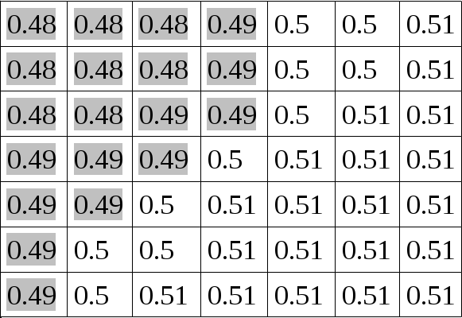
Each cell contains the depth value for each pixel (when viewed from the light source). To make life simple, let’s say that the depth of all the pixels above is 0.5 (when viewed from the camera point of view). According to the method from tutorial 24 all the pixels whose shadow map value is small than 0.5 will be in shadow while the ones whose shadow map value is greater than or equal to 0.5 will be in light. This will create a hard aliased line between light and shadow.
Now consider the following - the pixels that are nearest the border between light and shadow are surrounded by pixels who shadow map value is smaller than 0.5 as well as pixels whose shadow map value is greater than or equal to 0.5. If we sample these neighboring pixels and average out the results we will get a factor level that can help us smooth out the border between light and shadow. Ofcourse we don’t know in advance what pixels are closest to that border so we simply do this sampling work for each pixel. This is basically the entire system. In this tutorial we will sample 9 pixels in a 3 by 3 kernel around each pixel and average out the result. This will be our shadow factor instead of the 0.5 or 1.0 which we have used as a factor in tutorial 24.
Let us now review the source code that implements PCF. We will do this by going over the changes made to the implementation of tutorial 24. You may want to do a short refresh on that tutorial to make things clearer here.
Source walkthru
(lighting.fs:64)
1uniform sampler2DShadow gShadowMap;
2
3#define EPSILON 0.00001
4
5float CalcShadowFactor(vec4 LightSpacePos)
6{
7 vec3 ProjCoords = LightSpacePos.xyz / LightSpacePos.w;
8 vec2 UVCoords;
9 UVCoords.x = 0.5 * ProjCoords.x + 0.5;
10 UVCoords.y = 0.5 * ProjCoords.y + 0.5;
11 float z = 0.5 * ProjCoords.z + 0.5;
12
13 float xOffset = 1.0/gMapSize.x;
14 float yOffset = 1.0/gMapSize.y;
15
16 float Factor = 0.0;
17
18 for (int y = -1 ; y <= 1 ; y++) {
19 for (int x = -1 ; x <= 1 ; x++) {
20 vec2 Offsets = vec2(x * xOffset, y * yOffset);
21 vec3 UVC = vec3(UVCoords + Offsets, z + EPSILON);
22 Factor += texture(gShadowMap, UVC);
23 }
24 }
25
26 return (0.5 + (Factor / 18.0));
27}
This is the updated shadow factor calculation function. It starts out the same where we manually perform perspective divide on clip space coordinates from the light source point of view, followed by a transformation from the (-1,+1) range to (0,1). We now have coordinates that we can use to sample from the shadow map and a Z value to compare against the sample result. From here on things are going to roll a bit differently. We are going to sample a 3 by 3 kernel so we need 9 texture coordinates altogether. The coordinates must result in sampling texels that are on one texel intervals on the X and/or Y axis. Since UV texture coordinates run from 0 to 1 and map into the texel ranges (0, Width-1) and (0, Height-1), respectively, we divide 1 by the width and height of the texture. These values are stored in the gMapSize uniform vector (see sources for more details). This gives us the offset in the texture coordinates space between two neighboring texels.
Next we perform a nested for loop and calculate the offset vector for each of the 9 texels we are going to sample. The last couple of lines inside the loop may seem a bit odd. We sample from the shadow map using a vector with 3 components (UVC) instead of just 2. The last component contains the value which we used in tutorial 24 to manually compare against the value from the shadow map (the light source Z plus a small epsilon to avoid Z-fighting). The change here is that we are using a sampler2DShadow as the type of ‘gShadowMap’ instead of a sampler2D. When sampling from a shadow typed sampler (sampler1DShadow, sampler2DShadow, etc) the GPU performs a comparison between the texel value and a value that we supply as the last component of the texture coordinate vector (the second component for 1D, the third component for 2D, etc). We get a zero result if the comparison fails and one if the comparison succeeds. The type of comparison is configured using a GL API and not through GLSL. We will see this change later on. For now, just assume that we get a zero result for shadow and one for light. We accumulate the 9 results and divide them by 18. Thus we get a value between 0 and 0.5. We add it to a base of 0.5 and this is our shadow factor.
(shadow_map_fbo.cpp:39)
1bool ShadowMapFBO::Init(unsigned int WindowWidth, unsigned int WindowHeight)
2{
3 // Create the FBO
4 glGenFramebuffers(1, &m_fbo);
5
6 // Create the depth buffer
7 glGenTextures(1, &m_shadowMap);
8 glBindTexture(GL_TEXTURE_2D, m_shadowMap);
9 glTexImage2D(GL_TEXTURE_2D, 0, GL_DEPTH_COMPONENT32, WindowWidth, WindowHeight, 0, GL_DEPTH_COMPONENT, GL_FLOAT, NULL);
10 glTexParameteri(GL_TEXTURE_2D, GL_TEXTURE_MIN_FILTER, GL_LINEAR);
11 glTexParameteri(GL_TEXTURE_2D, GL_TEXTURE_MAG_FILTER, GL_LINEAR);
12 glTexParameteri(GL_TEXTURE_2D, GL_TEXTURE_COMPARE_MODE, GL_COMPARE_REF_TO_TEXTURE);
13 glTexParameteri(GL_TEXTURE_2D, GL_TEXTURE_COMPARE_FUNC, GL_LEQUAL);
14 glTexParameteri(GL_TEXTURE_2D, GL_TEXTURE_WRAP_S, GL_CLAMP_TO_EDGE);
15 glTexParameteri(GL_TEXTURE_2D, GL_TEXTURE_WRAP_T, GL_CLAMP_TO_EDGE);
16
17 glBindFramebuffer(GL_FRAMEBUFFER, m_fbo);
18 glFramebufferTexture2D(GL_FRAMEBUFFER, GL_DEPTH_ATTACHMENT, GL_TEXTURE_2D, m_shadowMap, 0);
19
20 // Disable writes to the color buffer
21 glDrawBuffer(GL_NONE);
22
23 // Disable reads from the color buffer
24 glReadBuffer(GL_NONE);
25
26 GLenum Status = glCheckFramebufferStatus(GL_FRAMEBUFFER);
27
28 if (Status != GL_FRAMEBUFFER_COMPLETE) {
29 printf("FB error, status: 0x%x\n", Status);
30 return false;
31 }
32
33 return true;
34}
This is how we configure our shadow map texture to work with the shadow sampler in the shader instead of the regular sampler. There are two new lines here and they are marked in bold face. First we set the texture compare mode to ‘compare ref to texture’. The only other possible value for the third parameter here is GL_NONE which is the default and makes the sampler behave in the regular, non-shadow, form. The second call to glTexParameteri sets the comparison function to ’less than or equal’. This means that the result of the sample operation will be 1.0 if the reference value is less than or equal to the value in the texture and zero otherwise. You can also use GL_GEQUAL, GL_LESS, GL_GREATER, GL_EQUAL, GL_NOTEQUAL for similar types of comparisons. You get the idea. There are also GL_ALWAYS which always return 1.0 and GL_NEVER which always return 0.0.
(tutorial42.cpp:174)
1void ShadowMapPass()
2{
3 glCullFace(GL_FRONT);
4 ...
5}
6
7void RenderPass()
8{
9 glCullFace(GL_BACK);
10 ...
11}
The last point that I want to discuss is a minor change intended to avoid self shadowing. Self shadowing is a big problem when dealing with almost any shadowing technique and the reason is that the precision of the depth buffer is quite limited (even at 32 bits). The problem is specific to the polygons that are facing the light and are not in shadow. In the shadow map pass we render their depth into the shadow map and in the render pass we compare their depth against the value stored in the shadow map. Due to the depth precision problem we often get Z fighting which leads to some pixels being in shadow while others are in light. To reduce this problem we reverse culling so that we cull front facing polygons in the shadow map pass (and render only the back facing polygons into the shadow map). In the render pass we are back to the usual culling. Since real world occluders are generally closed volumes it is ok to use the back facing polygons for depth comparison and not the front facing ones. You should try to disable the code above and see the results for yourself.
After applying all the changes that we discussed the shadow looks like this:

Tutorial 43:Multipass Shadow Mapping With Point Lights
Background
In tutorial 24 we learned the basics of Shadow Mapping - first a rendering pass from the light point of view using the light direction as the viewing vector and then a second pass from the camera point of view using the data from the first pass for shadow calculation. At this point most programmers will ask themselves: this is fine for directional/spot light but what if I want to generate shadows from a point light? There is no specific light direction in this case. Solving this problem is the topic of this tutorial.
The solution to this problem is to recognize that a point light basically casts its light in all directions, so rather than place a rectangular shadow map texture somewhere that will only receive a small portion of that light, we can place the light source in a middle of a texture cube. We now have six rectangular shadow maps and the light has no where to escape. Every light “beam” has to land on one of these six shadow maps and we can sample from it to do our standard shadow calculations. We have already seen the cube map in action in the skybox tutorial so we are already familiar with it.
In practice, in order to simulate the notion of spreading light all over we will do six shadow map rendering passes from the location of the light source but each rendering pass will target a different direction. We are going to make this very simple and target the following axis aligned directions: positive/negative X, positive/negative Y and positive/negative Z. Eventually the cubemap faces will contain the distance of all pixels in the scene that are closest to the light source. By comparing this value to the distance of each pixel to the light during the lighting pass we can tell whether that pixel is in light or shadow.
Take a look at the following picture:
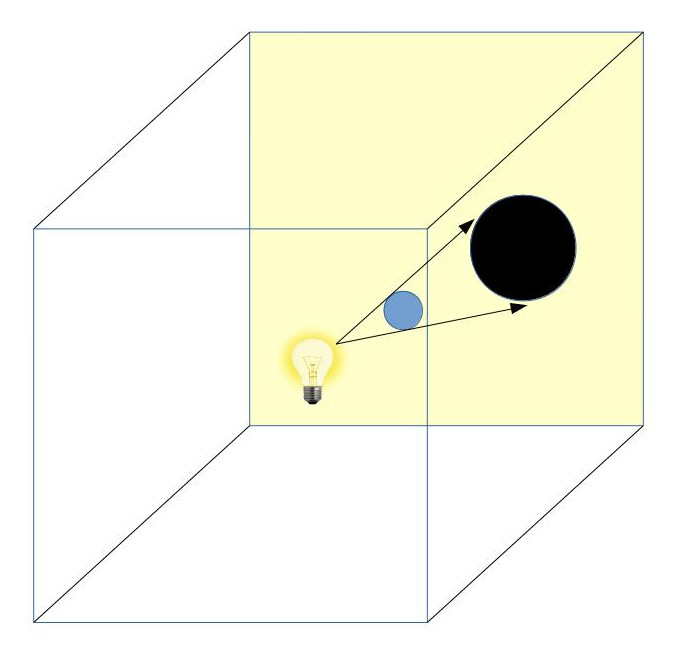
Our scene contains a blue sphere and a point light (the yellow light bulb) is stationed nearby. In the first rendering pass we use a texture cube as the framebuffer. Remember that at this stage we don’t care about the original camera location or direction. We place the camera at the position of the point light so it always looks like it is located at the middle of the texture cube. In the example above we see that the current rendering direction is the positive Z axis (into the yellow face). At this point we are back to the standard shadow mapping process so using the depth values in the yellow face we can generate the proper shadow for the blue sphere (these depth values are located in the black circle but the actual shadow will be rendered in the second pass).
The following picture demonstrates the six camera directions that we will use in the first rendering pass:

Since the same scene is rendered six times in the first rendering pass we call this Multipass Shadow Mapping.
Source walkthru
(shadow_map_fbo.h)
1class ShadowMapFBO
2{
3public:
4 ShadowMapFBO();
5
6 ~ShadowMapFBO();
7
8 bool Init(unsigned int WindowWidth, unsigned int WindowHeight);
9
10 void BindForWriting(GLenum CubeFace);
11
12 void BindForReading(GLenum TextureUnit);
13
14private:
15 GLuint m_fbo;
16 GLuint m_shadowMap;
17 GLuint m_depth;
18};
Let’s start the code walkthru by reviewing the changes in our shadow map FBO. The FBO is mostly the same with two minor changes: the BindForWriting() method now takes a cube face enumerator. Since we are doing a multi pass rendering into the cubemap this is how we will tell the GL which cube face we are going to render. The second change is the addition of a separate depth buffer. Previously we used the m_shadowMap class member as the shadow map object (which is actually a depth buffer). Now m_shadowMap is going to be used as a cube map and we need a dedicated depth buffer. For each of the six passes into the cube map faces we will use this depth buffer (and naturally we will clear it before each pass).
(shadow_map_fbo.cpp:46)
1bool ShadowMapFBO::Init(unsigned int WindowWidth, unsigned int WindowHeight)
2{
3 // Create the FBO
4 glGenFramebuffers(1, &m_fbo);
5
6 // Create the depth buffer
7 glGenTextures(1, &m_depth);
8 glBindTexture(GL_TEXTURE_2D, m_depth);
9 glTexImage2D(GL_TEXTURE_2D, 0, GL_DEPTH_COMPONENT32, WindowWidth, WindowHeight, 0, GL_DEPTH_COMPONENT, GL_FLOAT, NULL);
10 glTexParameteri(GL_TEXTURE_2D, GL_TEXTURE_MIN_FILTER, GL_LINEAR);
11 glTexParameteri(GL_TEXTURE_2D, GL_TEXTURE_MAG_FILTER, GL_LINEAR);
12 glTexParameteri(GL_TEXTURE_2D, GL_TEXTURE_WRAP_S, GL_CLAMP_TO_EDGE);
13 glTexParameteri(GL_TEXTURE_2D, GL_TEXTURE_WRAP_T, GL_CLAMP_TO_EDGE);
14 glBindTexture(GL_TEXTURE_2D, 0);
15
16 // Create the cube map
17 glGenTextures(1, &m_shadowMap);
18 glBindTexture(GL_TEXTURE_CUBE_MAP, m_shadowMap);
19 glTexParameteri(GL_TEXTURE_CUBE_MAP, GL_TEXTURE_MIN_FILTER, GL_LINEAR);
20 glTexParameteri(GL_TEXTURE_CUBE_MAP, GL_TEXTURE_MAG_FILTER, GL_LINEAR);
21 glTexParameteri(GL_TEXTURE_CUBE_MAP, GL_TEXTURE_WRAP_S, GL_CLAMP_TO_EDGE);
22 glTexParameteri(GL_TEXTURE_CUBE_MAP, GL_TEXTURE_WRAP_T, GL_CLAMP_TO_EDGE);
23 glTexParameteri(GL_TEXTURE_CUBE_MAP, GL_TEXTURE_WRAP_R, GL_CLAMP_TO_EDGE);
24
25 for (uint i = 0 ; i < 6 ; i++) {
26 glTexImage2D(GL_TEXTURE_CUBE_MAP_POSITIVE_X + i, 0, GL_R32F, WindowWidth, WindowHeight, 0, GL_RED, GL_FLOAT, NULL);
27 }
28
29 glBindFramebuffer(GL_FRAMEBUFFER, m_fbo);
30 glFramebufferTexture2D(GL_FRAMEBUFFER, GL_DEPTH_ATTACHMENT, GL_TEXTURE_2D, m_depth, 0);
31
32 // Disable writes to the color buffer
33 glDrawBuffer(GL_NONE);
34
35 // Disable reads from the color buffer
36 glReadBuffer(GL_NONE);
37
38 GLenum Status = glCheckFramebufferStatus(GL_FRAMEBUFFER);
39
40 if (Status != GL_FRAMEBUFFER_COMPLETE) {
41 printf("FB error, status: 0x%x\n", Status);
42 return false;
43 }
44
45 glBindFramebuffer(GL_FRAMEBUFFER, 0);
46
47 return GLCheckError();
48}
This is how we initialize the shadow map. First we create and setup the depth buffer. Nothing new here. Next comes the cubemap texture. GL_TEXTURE_CUBE_MAP is used as the target. The interesting part here is the way we initialize the six cube faces. OpenGL provides a macro for each face: GL_TEXTURE_CUBE_MAP_POSITIVE_X, GL_TEXTURE_CUBE_MAP_NEGATIVE_X, etc. They happen to be defines sequentially which makes the loop above possible (see glew.h for the remaining macros; around line 1319 in the version I have). Each face is initialized with a single 32 bit floating point value in each texel.
(tutorial43.cpp:183)
1virtual void RenderSceneCB()
2{
3 CalcFPS();
4
5 m_scale += 0.05f;
6
7 m_pGameCamera->OnRender();
8
9 ShadowMapPass();
10 RenderPass();
11
12 RenderFPS();
13
14 glutSwapBuffers();
15}
This is the main render scene function and as you can see, there is no change in comparison to previous shadow mapping tutorials. At the high level we have the same two passes of shadow map generation and rendering.
(tutorial43.cpp:200)
1void ShadowMapPass()
2{
3 glCullFace(GL_FRONT);
4
5 m_shadowMapEffect.Enable();
6
7 PersProjInfo ProjInfo;
8 ProjInfo.FOV = 90.0f;
9 ProjInfo.Height = WINDOW_HEIGHT;
10 ProjInfo.Width = WINDOW_WIDTH;
11 ProjInfo.zNear = 1.0f;
12 ProjInfo.zFar = 100.0f;
13
14 Pipeline p;
15 p.SetPerspectiveProj(m_persProjInfo);
16
17 glClearColor(FLT_MAX, FLT_MAX, FLT_MAX, FLT_MAX);
18
19 for (uint i = 0 ; i < NUM_OF_LAYERS ; i++) {
20 m_shadowMapFBO.BindForWriting(gCameraDirections[i].CubemapFace);
21 glClear(GL_DEPTH_BUFFER_BIT | GL_COLOR_BUFFER_BIT);
22
23 p.SetCamera(m_pointLight.Position, gCameraDirections[i].Target, gCameraDirections[i].Up);
24
25 p.Orient(m_mesh1Orientation);
26 m_shadowMapEffect.SetWorld(p.GetWorldTrans());
27 m_shadowMapEffect.SetWVP(p.GetWVPTrans());
28 m_mesh.Render();
29
30 p.Orient(m_mesh2Orientation);
31 m_shadowMapEffect.SetWorld(p.GetWorldTrans());
32 m_shadowMapEffect.SetWVP(p.GetWVPTrans());
33 m_mesh.Render();
34 }
35}
This is the full shadow map pass. There are a few things we need to notice here that are different from regular shadow mapping. First off is that the field of view is set to 90 degrees. The reason is that we are going to render the entire world into the cube map so to align the camera perfectly into each face we set it to one quarter of a full circle (360 degrees).
Next is that the clear value of the cube map is set to the maximum value of the floating point (FLT_MAX). Every texel which will actually be rendered into will have a much smaller value. The “real” pixels will always have values smaller than the un-rendered texels.
Finally, the loop over the cube map faces uses the gCameraDirections array (see below) in order to set the proper face in the FBO and to orient the camera into that face.
(tutorial43.cpp:45)
1struct CameraDirection
2{
3 GLenum CubemapFace;
4 Vector3f Target;
5 Vector3f Up;
6};
7
8CameraDirection gCameraDirections[NUM_OF_LAYERS] =
9{
10 { GL_TEXTURE_CUBE_MAP_POSITIVE_X, Vector3f(1.0f, 0.0f, 0.0f), Vector3f(0.0f, -1.0f, 0.0f) },
11 { GL_TEXTURE_CUBE_MAP_NEGATIVE_X, Vector3f(-1.0f, 0.0f, 0.0f), Vector3f(0.0f, -1.0f, 0.0f) },
12 { GL_TEXTURE_CUBE_MAP_POSITIVE_Y, Vector3f(0.0f, 1.0f, 0.0f), Vector3f(0.0f, 0.0f, -1.0f) },
13 { GL_TEXTURE_CUBE_MAP_NEGATIVE_Y, Vector3f(0.0f, -1.0f, 0.0f), Vector3f(0.0f, 0.0f, 1.0f) },
14 { GL_TEXTURE_CUBE_MAP_POSITIVE_Z, Vector3f(0.0f, 0.0f, 1.0f), Vector3f(0.0f, -1.0f, 0.0f) },
15 { GL_TEXTURE_CUBE_MAP_NEGATIVE_Z, Vector3f(0.0f, 0.0f, -1.0f), Vector3f(0.0f, -1.0f, 0.0f) }
16};
This array combines the enums defined by GL to denote each cube face along with the two vectors used to orient the camera toward that face.
(shadow_map_fbo.cpp:96)
1void ShadowMapFBO::BindForWriting(GLenum CubeFace)
2{
3 glBindFramebuffer(GL_DRAW_FRAMEBUFFER, m_fbo);
4 glFramebufferTexture2D(GL_FRAMEBUFFER, GL_COLOR_ATTACHMENT0, CubeFace, m_shadowMap, 0);
5 glDrawBuffer(GL_COLOR_ATTACHMENT0);
6}
The function above is used by the shadow map pass to setup the face that will be rendered to. First we bind the FBO to make it current. After that we bind the face to the first color attachment and enable writing to it.
(tutorial43.cpp:237)
1void RenderPass()
2{
3 glCullFace(GL_BACK);
4
5 glBindFramebuffer(GL_FRAMEBUFFER, 0);
6 glClearColor(0.0f, 0.0f, 0.0f, 0.0f);
7 glClear(GL_COLOR_BUFFER_BIT | GL_DEPTH_BUFFER_BIT);
8
9 m_lightingEffect.Enable();
10 m_shadowMapFBO.BindForReading(SHADOW_TEXTURE_UNIT);
11 m_lightingEffect.SetEyeWorldPos(m_pGameCamera->GetPos());
12
13 Pipeline p;
14 p.SetPerspectiveProj(m_persProjInfo);
15 p.SetCamera(*m_pGameCamera);
16
17 // Render the quads
18 m_pGroundTex->Bind(COLOR_TEXTURE_UNIT);
19 p.Orient(m_quad1Orientation);
20 m_lightingEffect.SetWorldMatrix(p.GetWorldTrans());
21 m_lightingEffect.SetWVP(p.GetWVPTrans());
22 m_quad.Render();
23
24 p.Orient(m_quad2Orientation);
25 m_lightingEffect.SetWorldMatrix(p.GetWorldTrans());
26 m_lightingEffect.SetWVP(p.GetWVPTrans());
27 m_quad.Render();
28
29 // Render the meshes
30 p.Orient(m_mesh1Orientation);
31 m_lightingEffect.SetWorldMatrix(p.GetWorldTrans());
32 m_lightingEffect.SetWVP(p.GetWVPTrans());
33 m_mesh.Render();
34
35 p.Orient(m_mesh2Orientation);
36 m_lightingEffect.SetWorldMatrix(p.GetWorldTrans());
37 m_lightingEffect.SetWVP(p.GetWVPTrans());
38 m_mesh.Render();
39}
This is the full lighting pass. Everything is back to normal - we render into the default framebuffer, we bind the cubemap for reading and reset the camera based on the viewer position. This completes our C++ code review. Now let’s take a look at the shaders.
(shadow_map.vs)
1#version 330
2
3layout (location = 0) in vec3 Position;
4layout (location = 1) in vec2 TexCoord;
5layout (location = 2) in vec3 Normal;
6
7uniform mat4 gWVP;
8uniform mat4 gWorld;
9
10out vec3 WorldPos;
11
12void main()
13{
14 vec4 Pos4 = vec4(Position, 1.0);
15 gl_Position = gWVP * Pos4;
16 WorldPos = (gWorld * Pos4).xyz;
17}
We are going to render from the position of the point light and the camera is currently aligned on one of the axis. The value that will be written into the cubemap is the distance from the object to the point light. So we need the object world position in the FS where this distance will be calculated.
(shadow_map.fs)
1#version 330
2
3in vec3 WorldPos;
4
5uniform vec3 gLightWorldPos;
6
7out float FragColor;
8
9void main()
10{
11 vec3 LightToVertex = WorldPos - gLightWorldPos;
12
13 float LightToPixelDistance = length(LightToVertex);
14
15 FragColor = LightToPixelDistance;
16}
We now have the world space position of the pixel in the FS and the world space position of the point light is provided as a uniform. We calculate the vector from the light to the pixel, take its length and write it out.
(lighting.vs)
1#version 330
2
3layout (location = 0) in vec3 Position;
4layout (location = 1) in vec2 TexCoord;
5layout (location = 2) in vec3 Normal;
6
7out vec2 TexCoord0;
8out vec3 Normal0;
9out vec3 WorldPos0;
10
11uniform mat4 gWVP;
12uniform mat4 gWorld;
13
14void main()
15{
16 gl_Position = gWVP * vec4(Position, 1.0);
17 TexCoord0 = TexCoord;
18 Normal0 = (gWorld * vec4(Normal, 0.0)).xyz;
19 WorldPos0 = (gWorld * vec4(Position, 1.0)).xyz;
20}
This is the updated lighting VS and what’s interesting here is the missing piece - we no longer need to calculate the light space position of the vertex as we did in the original shadow mapping algorithm. This was required when we needed to place the shadow map along the light vector but now we only need the vector from the light to the pixel in world space in order to sample from the cubmap. Everything we need for this is here so we are good to go.
(lighting.fs)
1...
2uniform samplerCube gShadowMap;
3...
4
5float CalcShadowFactor(vec3 LightDirection)
6{
7 float SampledDistance = texture(gShadowMap, LightDirection).r;
8
9 float Distance = length(LightDirection);
10
11 if (Distance < SampledDistance + EPSILON)
12 return 1.0; // Inside the light
13 else
14 return 0.5; // Inside the shadow
15}
The code excerpt above contains the key changes in the lighting FS. The shadow map uniform that was previously sampler2D (in tutorial 24) or sampler2DShadow (in tutorial 42) is now a samplerCube. In order to sample from it we use the LightDirection vector which was calculated as the vector from the point light to the pixel. Note that all the three coordinates (X, Y and Z) of the light direction vector are used for sampling. Since the cube has three dimension we need a three dimension vector in order to select the proper face and the specific texel in that face. Comparison of the sampled value with the distance from the light to the pixel tells us whether we are in light or shadow.
In this tutorial example I’ve placed a couple of spheres facing a point light such that the shadow will fall directly on the quad behind each sphere. Here’s the result:

Tutorial 44:GLFW
Background
In the first tutorial we learned that OpenGL doesn’t deal directly with windowing and that this responsibility is left to other APIs (GLX, WGL, etc). To make life simpler for ourselves we used GLUT to handle the windowing API. This makes our tutorials portable between different OSs. We’ve been using GLUT exclusively, until today. We are now going to take a look at another popular library that handles the same stuff as GLUT. This library is called GLFW and is hosted at www.glfw.org. One of the main differences between the two libraries is that GLFW is more modern and is actively being developed while GLUT is, well, older and its development has mostly stopped. GLFW has many features and you can read all about them in its home page.
Since there is no mathematical background for this tutorial we can go right ahead and review the code. What I’ve done here is to abstract the contents of glut_backend.h and glut_backend.cpp behind a general “backend” API that wraps the details of setting up the window and handling the input from the mouse and keyboard. You can easily switch between a GLUT backend and a GLFW backend and this gives a very nice flexibility for future tutorials.
In order to install GLFW (run as root):
- On Fedora Core: yum install glfw glfw-devel
- On Ubuntu: apt-get install libglfw3 libglfw3-dev
- Other Linux distributions also provide binary packages of GLFW. Alternatively, you can grab the sources directly from GLFW website and build them.
If you’re using Windows simply use the GLFW headers and libraries that I provide as part of the source package. This tutorial should build out of the box (please let me know if it doesn’t…).
In order to build stuff aginst the GLFW library you must tell the compiler where the headers and libraries are located. On Linux my recommendation is to use the pkg-config utility:
pkg-config –cflags –libs glfw3
The ‘–cflags’ flag tells pkg-config to output the flags GCC needs to compile a file that uses GLFW. The ‘–libs’ flags outputs the flags required for linking. I’m using these flags in the Netbeans project that I provide for Linux and you can use them in your own makefile. If you’re using one of the build systems such as autotools, cmake or scons you will need to check that system documentation for details.
Source walkthru
(ogldev_glfw_backend.cpp:24)
1#define GLFW_DLL
2#include <GLFW/glfw3.h>
This is how you include GLFW in your application. The ‘GLFW_DLL’ macro is required on Windows for using GLFW as a DLL.
(ogldev_glfw_backend.cpp:168)
1void GLFWBackendInit(int argc, char** argv, bool WithDepth, bool WithStencil)
2{
3 sWithDepth = WithDepth;
4 sWithStencil = WithStencil;
5
6 if (glfwInit() != 1) {
7 OGLDEV_ERROR("Error initializing GLFW");
8 exit(1);
9 }
10
11 int Major, Minor, Rev;
12
13 glfwGetVersion(&Major, &Minor, &Rev);
14
15 printf("GLFW %d.%d.%d initialized\n", Major, Minor, Rev);
16
17 glfwSetErrorCallback(GLFWErrorCallback);
18}
Initializing GLFW is very simple. Note that the argc/argv parameters are not used but to keep the interface identical with the one we used for FreeGLUT they are still passed to the function. In addition to GLFW initialization we also print the version of the library for informative purposes and set a general error callback. If anything goes wrong we will print the error and exit.
(ogldev_glfw_backend.cpp:195)
1bool GLFWBackendCreateWindow(uint Width, uint Height, bool isFullScreen, const char* pTitle)
2{
3 GLFWmonitor* pMonitor = isFullScreen ? glfwGetPrimaryMonitor() : NULL;
4
5 s_pWindow = glfwCreateWindow(Width, Height, pTitle, pMonitor, NULL);
6
7 if (!s_pWindow) {
8 OGLDEV_ERROR("error creating window");
9 exit(1);
10 }
11
12 glfwMakeContextCurrent(s_pWindow);
13
14 // Must be done after glfw is initialized!
15 glewExperimental = GL_TRUE;
16 GLenum res = glewInit();
17 if (res != GLEW_OK) {
18 OGLDEV_ERROR((const char*)glewGetErrorString(res));
19 exit(1);
20 }
21
22 return (s_pWindow != NULL);
23}
In the function above we create a window and perform other important initialization stuff. The first three parameters to glfwCreateWindow are obvious. The fourth parameter specifies the monitor to use. ‘GLFWmonitor’ is an opaque GLFW object that represents the physical monitor. GLFW support multi-monitor setups and for such cases the function glfwGetMonitors returns a list of all the available monitors. If we pass a NULL monitor pointer we will get a regular window; if we pass a pointer to an actual monitor (we get the default using glfwGetPrimaryMonitor) we get a full screen window. Very simple. The fifth and last parameter is used for context sharing which is out of scope for this tutorial.
Before we start dispatching GL commands we have to make the window current on the calling thread. We accomplish this using glfwMakeContextCurrent. Finally, we initialize GLEW.
(ogldev_glfw_backend.cpp:238)
1while (!glfwWindowShouldClose(s_pWindow)) {
2 // OpenGL API calls go here...
3 glfwSwapBuffers(s_pWindow);
4 glfwPollEvents();
5}
Unlike GLUT, GLFW doesn’t provide its own main loop function. Therefore, we construct it using the above code which is part of wrapper function called GLFWBackendRun(). s_pWindow is a pointer to a GLFW window previously created using glfwCreateWindow(). In order for the application to signal the end of this loop the function glfwSetWindowShouldClose is available to the application via the wrapper function GLFWBackendLeaveMainLoop().
(ogldev_glfw_backend.cpp:122)
1static void KeyCallback(GLFWwindow* pWindow, int key, int scancode, int action, int mods)
2{
3
4}
5
6static void CursorPosCallback(GLFWwindow* pWindow, double x, double y)
7{
8
9}
10
11static void MouseCallback(GLFWwindow* pWindow, int Button, int Action, int Mode)
12{
13
14}
15
16static void InitCallbacks()
17{
18 glfwSetKeyCallback(s_pWindow, KeyCallback);
19 glfwSetCursorPosCallback(s_pWindow, CursorPosCallback);
20 glfwSetMouseButtonCallback(s_pWindow, MouseCallback);
21}
What we see above is the initialization of our keyboard and mouse callbacks. If you are interested in using GLFW exclusively in your application simply review the documentation here for information about the values of Button, Action, Mode, etc. For my tutorials I have created a set of enums to describe the various keyboard and mouse keys and translated GLFW to these enums. I have done the same for GLUT and this provides the commonality which lets the same application code quickly switch from one backend to the other (see the implementation of the above functions in the code for further details).
(ogldev_glfw_backend.cpp:)
1void GLFWBackendTerminate()
2{
3 glfwDestroyWindow(s_pWindow);
4 glfwTerminate();
5}
This is how we shutdown the GLFW backend. First we destroy the window and after that we terminate the GLFW library and free all of its resources. No call to GLFW can be done after that which is why this has to be the last thing we do in the main function (graphics-wise).
(ogldev_backend.h)
1enum OGLDEV_BACKEND_TYPE {
2 OGLDEV_BACKEND_TYPE_GLUT,
3 OGLDEV_BACKEND_TYPE_GLFW
4};
5
6void OgldevBackendInit(OGLDEV_BACKEND_TYPE BackendType, int argc, char** argv, bool WithDepth, bool WithStencil);
7
8void OgldevBackendTerminate();
9
10bool OgldevBackendCreateWindow(uint Width, uint Height, bool isFullScreen, const char* pTitle);
11
12void OgldevBackendRun(ICallbacks* pCallbacks);
13
14void OgldevBackendLeaveMainLoop();
15
16void OgldevBackendSwapBuffers();
I have created a new backend interface which we see in the above header file. These functions replace the GLUT specific code which we have been using. They are implemented in ogldev_backend.cpp in the Common project and are essentially redirections into GLUT or GLFW. You select the backend using OgldevBackendInit() and after that everything is transparent.
Since there isn’t nothing new to display in this tutorial I have used the Sponza model which is very common in the 3D community to test new global illumination algorithms.
Tutorial 45:Screen Space Ambient Occlusion
Background
Do you remember how our lighting model began evolving? Back in tutorial 17 we took a first look at the lighting model, starting with the ambient lighting type. The ambient lighting which is supposed to mimic the general feeling of “everything is bright” that you get in a highly lit, mid-day environment, was implemented using a single floating point value that was attached to each lighting source and we multiplied that value by the color of the surface which we sampled from the texture bound to that surface. So you could have a single light source in your scene called “sun” and you could play with the ambient light to control how well the scene was generally lit - values closer to zero produced a darker scene while values closer to 1 produced a lighter scene.
In the following tutorials we implemented diffuse and specular lighting which contributed to the overall quality of the scene but the basic ambient light remained the same. In the recent years we see a rise of what is known as Ambient Occlusion which basically means that instead of going with a fixed ambient light value for each pixel we can calculate how much the pixel is exposed to the ambient light source. A pixel on the floor in the middle of room is much more exposed to the light than, say, a pixel in the corner. This means that the corner will be a bit darker than the rest of the floor. This is the core of ambient occlusion. So in order to implement it we need to find a way to differentiate between those “tightly packed in corners pixels” vs. “out in the open pixels”. The product of this calculation is an ambient occlusion term which will control the ambient light in the final lighting stage. Here’s a visualization of this ambient occlusion term:

You can see how the edges are the brightest and the corners where we expect to get the smaller amount of lighting are much darker.
There is a lot of research on the subject of ambient occlusion and many algorithms have been developed to approximate it. We are going to study a branch of these algorithms known as Screen Space Ambient Occlusion or SSAO, which was developed by Crytek and became highly popular with their 2007 release of Crysis. Many games have since implemented SSAO and a lot of variations were created on top of it. We are going to study a simplified version of the algorithm based on a SSAO tutorial by John Chapman.
Ambient occlusion can be very compute intensive. Crytek came up with a good compromise where the occlusion term is calculated once per pixel. Hence the prefix ‘Screen Space’ to the algorithm name. The idea was to go over the window pixel by pixel, extract the view space position in that location, sample a few random points very near that position and check whether they fall inside or outside the real geometry in that area. If many points fall inside the geometry it means the original pixel is cornered by many polygons and receives less light. If many points are outside of any geometry it means the original pixel is “highly exposed” and therefore receives more light. For example, take a look at the following image:

We have a surface with two points on it - P0 and P1. Assume that we are looking at it from somewhere on the upper left corner of the image. We sample a few points around each point and check whether they fall inside or outside the geometry. In the case of P0 there is a greater chance that random points around it will fall inside the geometry. For P1 it is the opposite. Therefore we expect to get a greater ambient occlusion term for P1 which means it will look lighter in the final frame.
Let’s take it to the next level of details. We are going to plug in an ambient occlusion pass somewhere before our standard lighting pass (we will need the ambient term for the lighting). This ambient occlusion pass will be a standard full screen quad pass where the calculation is done once per pixel. For every pixel we will need its view space position and we want to generate a few random points in close vicinity to that position. The easiest way will be to have a texture ready at the point fully populated with the view space positions of the entire scene geometry (obviously - only of the closest pixels). For this we will need a geometry pass before the ambient pass where something very similar to the gbuffer that we saw in deferred rendering will be filled with view space position information (and that’s it - we don’t need normals, color, etc). So now getting the view space position for the current pixel in the ambient pass is just one sample operation away.
So now we are in a fragment shader holding the view space position for the current pixel. Generating random points around it is very easy. We will pass into the shader an array of random vectors (as uniform variables) and add each one to the view space position. For every generated point we want to check whether it lies inside or outside the geometry. Remember that these points are virtual, so no match to the actual surface is expected. We are going to do something very similar to what we did in shadow mapping. Compare the Z value of the random point to the Z value of the closest point in the actual geometry. Naturally, that actual geometry point must lie on the ray that goes from the camera to the virtual point. Take a look at the following diagram:

Point P lies on the red surface and the red and green points were generated randomly around it. The green point lies outside (before) the geometry and the red is inside (thus contributes to the ambient occlusion). The circle represents the radius in which random points are generated (we don’t want them to be too far off point P). R1 and R2 are the rays from the camera (at 0,0,0) to the red and green points. They intersect the geometry somewhere. In order to calculate the ambient occlusion we must compare the Z values of the red and green points vs the Z value of the corresponding geometry points that are formed by the intersection of R1/R2 and the surface. We already have the Z value of the red and green points (in view space; after all - this is how we created them). But where’s the Z value of the points formed by the above intersection?
Well, there’s more than one solution to that question but since we already have a texture ready with the view space position of the entire scene the simplest way will be to find it somehow in it. To do that we will need the two texture coordinates that will sample the view space position for the R1 and R2 rays. Remember that the original texture coordinates that were used to find the view space position of P are not what we need. These coordinates were formed based on the interpolation of the full screen quad that we are scanning in that pass. But R1 and R2 don’t intersect P. They intersect the surface somewhere else.
Now we need to do a quick refresher on the way the texture with the view space positions was originally created. After transforming the object space coordinates to view space the resulting vectors were multiplied by the projection matrix (in fact - all these transformation were performed by a single matrix). All this happened in the vertex shader and on the way to the fragment shader the GPU automatically performed perspective divide to complete the projection. This projection placed the view space position on the near clipping plane and the points inside the frustum have a (-1,1) range for their XYZ components. As the view space position was written out to the texture in the fragment shader (the above calculation is performed only on gl_Position; the data written to the texture is forwarded in a different variable) the XY were transformed to the (0,1) range and the results are the texture coordinates where the view space position is going to be written.
So can we use the same procedure in order to calculate the texture coordinates for the red and green points? Well, why not? The math is the same. All we need to do is provide the shader with the projection matrix and use it to project the red and green points on the near clipping plane. We will need to perform the perspective divide manually but that’s a no-brainer. Next we will need to transform the result to the (0,1) and here’s our texture coordinate! We are now just a sample away from getting the missing Z value and checking whether the virtual point that we generated is located inside or outside the geometry. Now let’s see the code.
Source walkthru
(tutorial45.cpp:156)
1virtual void RenderSceneCB()
2{
3 m_pGameCamera->OnRender();
4
5 m_pipeline.SetCamera(*m_pGameCamera);
6
7 GeometryPass();
8
9 SSAOPass();
10
11 BlurPass();
12
13 LightingPass();
14
15 RenderFPS();
16
17 CalcFPS();
18
19 OgldevBackendSwapBuffers();
20}
We will start the source walkthru from the top level and work our way down. This is the main render loop and in addition to the three passes that we discussed in the background section there’s also a blur pass whose job is to apply a blur kernel on the ambient occlusion map formed by the SSAO pass. This helps smooth things up a bit and is not part of the core algorithm. It’s up to you to decide whether to include it or not in your engine.
(tutorial45.cpp:177)
1void GeometryPass()
2{
3 m_geomPassTech.Enable();
4
5 m_gBuffer.BindForWriting();
6
7 glClear(GL_COLOR_BUFFER_BIT | GL_DEPTH_BUFFER_BIT);
8
9 m_pipeline.Orient(m_mesh.GetOrientation());
10 m_geomPassTech.SetWVP(m_pipeline.GetWVPTrans());
11 m_geomPassTech.SetWVMatrix(m_pipeline.GetWVTrans());
12 m_mesh.Render();
13}
In the geometry pass we render the entire scene into a texture. In this example there’s only one mesh. In the real world there will probably be many meshes.
(geometry_pass.vs)
1#version 330
2
3layout (location = 0) in vec3 Position;
4
5uniform mat4 gWVP;
6uniform mat4 gWV;
7
8out vec3 ViewPos;
9
10void main()
11{
12 gl_Position = gWVP * vec4(Position, 1.0);
13 ViewPos = (gWV * vec4(Position, 1.0)).xyz;
14}
(geometry_pass.fs)
1#version 330
2
3in vec3 ViewPos;
4
5layout (location = 0) out vec3 PosOut;
6
7void main()
8{
9 PosOut = ViewPos;
10}
These are the vertex and fragment shaders of the geometry pass. In the vertex shader we calculate the gl_position as usual and we pass the view space position to the fragment shader in a separate variable. Remember that there is no perspective divide for this variable but it is a subject to the regular interpolations performed during rasterization.
In the fragment shader we write the interpolated view space position to the texture. That’s it.
(tutorial45.cpp:192)
1void SSAOPass()
2{
3 m_SSAOTech.Enable();
4
5 m_SSAOTech.BindPositionBuffer(m_gBuffer);
6
7 m_aoBuffer.BindForWriting();
8
9 glClear(GL_COLOR_BUFFER_BIT);
10
11 m_quad.Render();
12}
This is the application code of the SSAO pass and it is very simple. On the input side we have the view space position from the previous pass and we write the output to an AO buffer. For the rendering we use a full screen quad. This will generate the AO term for every pixel. The real meat is in the shaders.
(ssao.vs)
1#version 330
2
3layout (location = 0) in vec3 Position;
4
5out vec2 TexCoord;
6
7void main()
8{
9 gl_Position = vec4(Position, 1.0);
10 TexCoord = (Position.xy + vec2(1.0)) / 2.0;
11}
As in many screen space based techniques in the vertex shader we just need to pass-thru the position of the full screen quad. gl_Position will be consumed by the GPU for the purposes of rasterization but we use it’s XY components for the texture coordinates. Remember that the full screen quad coordinates range from (-1,-1) to (1,1) so everything in the fragment shader will be interpolated in that range. We want our texture coordinates to be in the (0,1) so we transform it here before sending it out to the fragment shader.
(ssao.fs)
1#version 330
2
3in vec2 TexCoord;
4
5out vec4 FragColor;
6
7uniform sampler2D gPositionMap;
8uniform float gSampleRad;
9uniform mat4 gProj;
10
11const int MAX_KERNEL_SIZE = 128;
12uniform vec3 gKernel[MAX_KERNEL_SIZE];
13
14void main()
15{
16 vec3 Pos = texture(gPositionMap, TexCoord).xyz;
17
18 float AO = 0.0;
19
20 for (int i = 0 ; i < MAX_KERNEL_SIZE ; i++) {
21 vec3 samplePos = Pos + gKernel[i]; // generate a random point
22 vec4 offset = vec4(samplePos, 1.0); // make it a 4-vector
23 offset = gProj * offset; // project on the near clipping plane
24 offset.xy /= offset.w; // perform perspective divide
25 offset.xy = offset.xy * 0.5 + vec2(0.5); // transform to (0,1) range
26
27 float sampleDepth = texture(gPositionMap, offset.xy).b;
28
29 if (abs(Pos.z - sampleDepth) < gSampleRad) {
30 AO += step(sampleDepth,samplePos.z);
31 }
32 }
33
34 AO = 1.0 - AO/128.0;
35
36 FragColor = vec4(pow(AO, 2.0));
37}
Here’s the core of the SSAO algorithm. We take the texture coordinates we got from the vertex shader and sample the position map to fetch our view space position. Next we enter a loop and start generating random points. This is done using an array of uniform vectors (gKernel). This array is populated by random vectors in the (-1,1) range in the ssao_technique.cpp file (which I haven’t included here because it’s pretty standard; check the code for more details). We now need to find the texture coordinates that will fetch the Z value for the geometry point that matches the current random point. We project the random point from view space on the near clipping plane using the projection matrix, perform perspective divide on it and transform it to the (0,1) range. We can now use it to sample the view space position of the actual geometry and compare its Z value to the random point. But before we do that we make sure that the distance between the origin point and the one whose Z value we just fetched is not too far off. This helps us avoid all kinds of nasty artifacts. You can play with the gSampleRad variable for that.
Next we compare the depth of the virtual point with the one from the actual geometry. The GLSL step(x,y) function returns 0 if y < x and 1 otherwise. This means that the local variable AO increases as more points end up behind the geometry. We plan to multiply the result by the color of the lighted pixel so we do a ‘AO = 1.0 - AO/128.0’ to kind-of reverse it. The result is written to the output buffer. Note that we take the AO to the power of 2 before writing it out. This simply makes it look a bit better in my opinion. This is another artist variable you may want to play with in your engine.
(tutorial45.cpp:205)
1void BlurPass()
2{
3 m_blurTech.Enable();
4
5 m_blurTech.BindInputBuffer(m_aoBuffer);
6
7 m_blurBuffer.BindForWriting();
8
9 glClear(GL_COLOR_BUFFER_BIT);
10
11 m_quad.Render();
12}
The application code of the blur pass is identical to the SSAO pass. Here the input is the ambient occlusionn term we just calculated and the output is a buffer containing the blurred results.
(blur.vs)
1#version 330
2
3layout (location = 0) in vec3 Position;
4
5out vec2 TexCoord;
6
7void main()
8{
9 gl_Position = vec4(Position, 1.0);
10 TexCoord = (Position.xy + vec2(1.0)) / 2.0;
11}
(blur.fs)
1#version 330
2
3in vec2 TexCoord;
4
5out vec4 FragColor;
6
7uniform sampler2D gColorMap;
8
9float Offsets[4] = float[]( -1.5, -0.5, 0.5, 1.5 );
10
11void main()
12{
13 vec3 Color = vec3(0.0, 0.0, 0.0);
14
15 for (int i = 0 ; i < 4 ; i++) {
16 for (int j = 0 ; j < 4 ; j++) {
17 vec2 tc = TexCoord;
18 tc.x = TexCoord.x + Offsets[j] / textureSize(gColorMap, 0).x;
19 tc.y = TexCoord.y + Offsets[i] / textureSize(gColorMap, 0).y;
20 Color += texture(gColorMap, tc).xyz;
21 }
22 }
23
24 Color /= 16.0;
25
26 FragColor = vec4(Color, 1.0);
27}
This is an example of a very simple blur technique. The VS is actually identical to the one from the SSAO. In the fragment shader we sample 16 points around the origin and average them out.
(tutorial45.cpp:219)
1void LightingPass()
2{
3 m_lightingTech.Enable();
4 m_lightingTech.SetShaderType(m_shaderType);
5 m_lightingTech.BindAOBuffer(m_blurBuffer);
6
7 glBindFramebuffer(GL_FRAMEBUFFER, 0);
8
9 glClear(GL_COLOR_BUFFER_BIT | GL_DEPTH_BUFFER_BIT);
10
11 m_pipeline.Orient(m_mesh.GetOrientation());
12 m_lightingTech.SetWVP(m_pipeline.GetWVPTrans());
13 m_lightingTech.SetWorldMatrix(m_pipeline.GetWorldTrans());
14 m_mesh.Render();
15}
We have a pretty standard application code for the lighting pass. The only addition here is the blurred AO term buffer which is bound as input.
(lighting.fs)
1vec2 CalcScreenTexCoord()
2{
3 return gl_FragCoord.xy / gScreenSize;
4}
5
6vec4 CalcLightInternal(BaseLight Light, vec3 LightDirection, vec3 Normal)
7{
8 vec4 AmbientColor = vec4(Light.Color * Light.AmbientIntensity, 1.0f);
9
10 if (gShaderType == SHADER_TYPE_SSAO) {
11 AmbientColor *= texture(gAOMap, CalcScreenTexCoord()).r;
12 }
13
14 ...
I haven’t included the entire lighting shader since the change is very minor. The ambient color is modulated by the ambient occlusion term sampled from the AO map for the current pixel. Since we are rendering the actual geometry here and not a full screen quad we have to calculate the texture coordinates using the system maintained gl_FragCoord. gShaderType is a user controlled variable that helps us switch from SSAO to no-SSAO and only-ambient-occlusion-term display. Play with the ‘a’ key to see how it goes.
Tutorial 46:SSAO With Depth Reconstruction
Background
In the previous tutorial we studied the Screen Space Ambient Occlusion algorithm. We used a geometry buffer which contained the view space position of all the pixels as a first step in our calculations. In this tutorial we are going to challenge ourselves by calculating the view space position directly from the depth buffer. The advantage of this approach is that much less memory is required because we will only need one floating point value per pixel instead of three. This tutorial relies heavily on the previous tutorial so make sure you fully understand it before going on. The code here will be presented only as required changes over the original algorithm.
In the SSAO algorithm we scan the entire window pixel by pixel, generate random points around each pixel in view space, project them on the near clipping plane and compare their Z value with the actual pixel at that location. The view space position is generated in a geometry pass at the start of the render loop. In order to populate correctly the geometry buffer with the view space position we also need a depth buffer (else pixels will be updated based on draw order rather than depth). We can use that depth buffer alone to reconstruct the entire view space position vector, thus reducing the space required for it (though some more per-pixel math will be required).
Let’s do a short recap on the stages required to populate the depth buffer (if you need a more in-depth review please see tutorial 12). We begin with the object space position of a vertex and multiply it with the WVP matrix which is a combined transformations of local-to-world, world-to-view and projection from view on the near clipping plane. The result is a 4D vector with the view space Z value in the fourth component. We say that this vector is in clip space at this point. The clip space vector goes into the gl_Position output vector from the vertex shader and the GPU clips its first three components between -W and W (W is the fourth component with the view space Z value). Next the GPU performs perspective divide which means that the vector is divided by W. Now the first three components are between -1 and 1 and the last component is simply 1. We say that at this point the vector is in NDC space (Normalized Device Coordinates).
Usually the vertex is just one out of three vertices comprising a triangle so the GPU interpolates between the three NDC vectors across the triangle face and executes the fragment shader on each pixel. On the way out of the fragment shader the GPU updates the depth buffer with the Z component of the NDC vector (based on several state nobs that must be configured correctly such as depth testing, depth write, etc). An important point to remember is that before writing the Z value to the depth buffer the GPU transforms it from (-1,1) to (0,1). We must handle this correctly or else we will get visual anomalies.
So this is basically all the math relevant to the Z buffer handling. Now let’s say that we have a Z value that we sampled for the pixel and we want to reconstruct the entire view space vector from it. Everything we need in order to retrace our steps is in the above description but before we dive any further let’s see that math again only this time with numbers and matrices rather than words. Since we are only interested in the view space position we can look at the projection matrix rather than the combined WVP (because projection works on the view space position):

What we see above is the projection of the view space vector to clip space (the result on the right). Few notations:
- ar = Aspect Ratio (width/height)
- FOV = Field of View
- n = near clipping plane
- f = far clipping plane
In order to simplify the next steps let’s call the value in location (3,3) of the projection matrix ‘S’ and the value in location (3,4) ‘T’. This means that the value of the Z in NDC is (remember perspective divide):
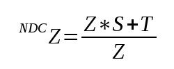
And since we need to transform the NDC value from (-1,1) to (0,1) the actual value written to the depth buffer is:
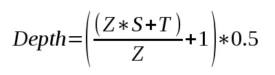
It is now easy to see that we can extract the view space Z from the above formula. I haven’t specified all the intermediate steps because you should be able to do them yourself. The final result is:

So we have the view space Z. Let’s see how we can recover X and Y. Remember that after transforming X and Y to clip space we perform clipping to (-W,W) and divide by W (which is actually Z in view space). X and Y are now in the (-1,1) range and so are all the X and Y values of the to-be-interpolated pixels of the triangle. In fact, -1 and 1 mapped to the left, right, top and bottom of the screen. This means that for every pixel on the screen the following equation applies (showing for X only; same applies to Y just without ‘ar’):

We can write the same as:

Note that the left and right hand side of the inequality are basically constants and can be calculated by the application before the draw call. This means that we can draw a full screen quad and prepare a 2D vector with those values for X and Y and have the GPU interpolate them all over the screen. When we get to the pixel we can use the interpolated value along with Z in order to calculate both X and Y.
Source walkthru
(tutorial46.cpp:101)
1float AspectRatio = m_persProjInfo.Width / m_persProjInfo.Height;m_SSAOTech.SetAspectRatio(AspectRatio);
2float TanHalfFOV = tanf(ToRadian(m_persProjInfo.FOV / 2.0f));
3m_SSAOTech.SetTanHalfFOV(TanHalfFOV);
As I said earlier, we are only going to review the specific code changes to the previous tutorial in order to implement depth reconstruction. The first change that we need to make is to provide the aspect ratio and the tangent of half the field of view angle to the SSAO technique. We see above how to calculate them.
(tutorial46.cpp:134)
1if (!m_depthBuffer.Init(WINDOW_WIDTH, WINDOW_HEIGHT, true, GL_NONE)) {
2 return false;
3}
Next we need to initialize the geometry buffer (whose class attribute was renamed from m_gBuffer to m_depthBuffer) with GL_NONE as the internal format type. This will cause only the depth buffer to be created. Review io_buffer.cpp in the Common project for further details on the internal workings of the IOBuffer class.
(tutorial46.cpp:181)
1void GeometryPass()
2{
3 m_geomPassTech.Enable();
4
5 m_depthBuffer.BindForWriting();
6
7 glClear(GL_DEPTH_BUFFER_BIT);
8
9 m_pipeline.Orient(m_mesh.GetOrientation());
10 m_geomPassTech.SetWVP(m_pipeline.GetWVPTrans());
11 m_mesh.Render();
12}
13
14void SSAOPass()
15{
16 m_SSAOTech.Enable();
17 m_SSAOTech.BindDepthBuffer(m_depthBuffer);
18
19 m_aoBuffer.BindForWriting();
20
21 glClear(GL_COLOR_BUFFER_BIT);
22
23 m_quad.Render();
24}
We can see the change from m_gBuffer to m_depthBuffer in the geometry and SSAO passses. Also, we no longer need to call glClear with the color buffer bit because m_depthBuffer does not contain a color buffer. This completes the changes in the main application code and you can see that they are fairly minimal. Most of the juice is in the shaders. Let’s review them.
(geometry_pass.vs/fs)
1#version 330
2
3layout (location = 0) in vec3 Position;
4
5uniform mat4 gWVP;
6// uniform mat4 gWV;
7
8// out vec3 ViewPos;
9
10void main()
11{
12 gl_Position = gWVP * vec4(Position, 1.0);
13 // ViewPos = (gWV \* vec4(Position, 1.0)).xyz;
14}
15
16#version 330
17
18// in vec3 ViewPos;
19
20// layout (location = 0) out vec3 PosOut;
21
22void main()
23{
24 // PosOut = ViewPos;
25}
Above we see the revised geometry pass vertex and fragment shaders with the stuff that we no longer need commented out. Since we are only writing out the depth everything related to view space position was thrown out. In fact, the fragment shader is now empty.
(ssao.vs)
1#version 330
2
3layout (location = 0) in vec3 Position;
4
5uniform float gAspectRatio;
6uniform float gTanHalfFOV;
7
8out vec2 TexCoord;
9out vec2 ViewRay;
10
11void main()
12{
13 gl_Position = vec4(Position, 1.0);
14 TexCoord = (Position.xy + vec2(1.0)) / 2.0;
15 ViewRay.x = Position.x * gAspectRatio * gTanHalfFOV;
16 ViewRay.y = Position.y * gTanHalfFOV;
17}
Based on the math reviewed above (see the very end of the background section) we need to generate something that we call a view ray in the vertex shader of the SSAO technique. Combined with the view space Z calculated in the fragment shader it will help us extract the view space X and Y. Note how we use the fact that the incoming geometry is a full screen quad that goes from -1 to 1 on the X and Y axis in order to generate the end points of ‘-1/+1 * ar * tan(FOV/2)’ for X and ‘-1/+1 * tan(FOV/2)’ and ’tan(FOV/2)’ for Y.
(ssao.fs)
1#version 330
2
3in vec2 TexCoord;
4in vec2 ViewRay;
5
6out vec4 FragColor;
7
8uniform sampler2D gDepthMap;
9uniform float gSampleRad;
10uniform mat4 gProj;
11
12const int MAX_KERNEL_SIZE = 64;
13uniform vec3 gKernel[MAX_KERNEL_SIZE];
14
15float CalcViewZ(vec2 Coords)
16{
17 float Depth = texture(gDepthMap, Coords).x;
18 float ViewZ = gProj[3][2] / (2 * Depth -1 - gProj[2][2]);
19 return ViewZ;
20}
21
22void main()
23{
24 float ViewZ = CalcViewZ(TexCoord);
25
26 float ViewX = ViewRay.x * ViewZ;
27 float ViewY = ViewRay.y * ViewZ;
28
29 vec3 Pos = vec3(ViewX, ViewY, ViewZ);
30
31 float AO = 0.0;
32
33 for (int i = 0 ; i < MAX_KERNEL_SIZE ; i++) {
34 vec3 samplePos = Pos + gKernel[i];
35 vec4 offset = vec4(samplePos, 1.0);
36 offset = gProj * offset;
37 offset.xy /= offset.w;
38 offset.xy = offset.xy * 0.5 + vec2(0.5);
39
40 float sampleDepth = CalcViewZ(offset.xy);
41
42 if (abs(Pos.z - sampleDepth) < gSampleRad) {
43 AO += step(sampleDepth,samplePos.z);
44 }
45 }
46
47 AO = 1.0 - AO/64.0;
48
49 FragColor = vec4(pow(AO, 2.0));
50}
The first thing we do in the fragment shader is to calculate the view space Z. We do this with the exact same formula we saw in the background section. The projection matrix was already here in the previous tutorial and we just need to be careful when accessing the ‘S’ and ‘T’ items in the (3,3) and (3,4) locations. Remember that the index goes from 0 to 3 (vs. 1 to 4 in standard matrix semantics) and that the matrix is transposed so we we need to reverse the column/row for the ‘T’.
Once the Z is ready we multiply it by the view ray in order to retrieve the X and Y. We continue as usual by generating the random points and projecting them on the screen. We use the same trick to calculate the depth of the projected point.
If you have done everything correctly you should end up with pretty much the same results as in the previous tutorial… ;-)
Tutorial 47:Shadow Mapping with Directional Lights
Credits: some of the images were take from Clipart Panda and ClipArtHut
Background
The Shadow Mapping algorithm that we explored in tutorial 23 and tutorial 24 used a spot light as the light source. The algorithm itself is based on the idea of rendering into a shadow map from the light point of view. This is simple with spot lights because they behave in the same way as our standard camera. The spot light has a location and a direction vector and the area covered by the light grows as we move further away from its source:

The fact that the spotlight behaves like a frustum makes it easier to implement shadow mapping because we can use the same perspective projection matrix as the camera in order to render into the shadow map. Implementing Shadow Mapping with Point Lights was a bit of a challenge but we were able to overcome it by rendering into a cubemap. Projection, though, was still perspective.
Now let’s think about directional lights. A directional light has a direction but not a position. It is usually used to mimic the behavior of the sun which due to its size and distance seems to cast parallel lights rays:

In this case, we can no longer use Perspective Projection. Enter Orthographic Projection. The idea here is that of converging all light rays in one spot (the camera), the light rays remain parallel so no 3D effect is created.
In the following image we see the same box using perspective projection on the left hand side and orthographic projection on the right hand side:
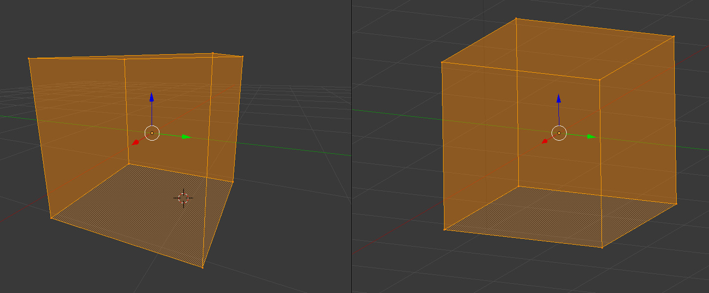
The left box looks real, just as you would expect it to be and delivers the correct sense of depth. The right one doesn’t look real since the front and back rectangles are exactly the same. We know that their dimensions are the same but when looking at a picture we expect the front one to look larger. So how does Orthographic Projection helps us with directional lights? Well, remember that Perspective Projection takes something that looks like a frustum and maps it to a normalized cube (a cube that goes from [-1,-1,-1] to [1,1,1]). After mapping, the XY coordinates are used to find the location in the texture (in our case the shadow map) and the Z is the value which is written there. An Orthographic projection takes a general box and maps it to the normalized cube (l,r,b,t,n,f stands for left, right, bottom, top, near, far, respectively):

Now think about the rays of the directional light as if they are originating from the front face of the box and going parallel to each other until they hit the back face. If we do the mapping between the general box and the normalized box (remember - we call this NDC space) properly the rest of the generation of the shadow map remains the same.
Let’s see how this mapping is done. We have three ranges along the XYZ axes that we need to map to (-1,1). This is a simple linear mapping without divide-by-zero after that (since it is orthographic and not perspective). The general form of an equation that maps range (a,b) to (c,d) is:

Where a<=X<=b. Let’s do the mapping on the X-axis. Plug the ranges (l,r) to (-1,1) in the above equation and we get:

Following the same logic we do the mapping on the Y-axis from (b,t) to (-1,1):
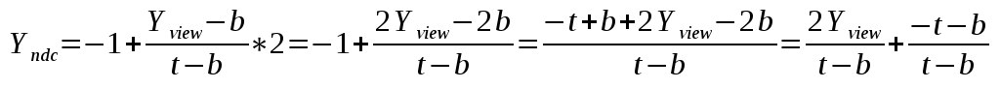
In the case of the Z-axis we need to map (n,f) to (-1,1):

Now that we have the three mapping equations let’s create a matrix to wrap them together nicely:
Compare this matrix with the one we created for perpective projection in tutorial 12. An important difference is that in location [3,2] (count starts at zero) we have 0 instead of 1. For perspective projection the 1 was required in order to copy the Z into the W location of the result. This allows the GPU to perform perspective divide when everything is divided automatically by W (and you cannot disable this). In the case of orthographic projection the W will remain as 1, effectively disabling this operation.
When working on shadow mapping with directional lights you need to be careful about how you define the dimensions of orthographic projection. With perspective projection life is a bit simpler. The field-of-view defines how wide the camera is and due to the nature of the frustum we capture more and more as we move further away from the viewer (same as how our eye functions). We also need to define a near and far plane to control clipping based on distance. In many cases the same values of field-of-view, near and far plane will work just fine. But in the case of orthographic projection we have a box rather than a frustum and if we are not careful we may “miss” the objects and not render anything. Let’s see an example. In the scene below left and bottom are -10, right and top are 10, the near plane is -10 and the far plane is 100:

The problem is that the objects are placed at distance of 30 from each other so the projection was not wide enough in order to capture everything (remember that the light direction is orthogonal to the viewer so the objects are scattered on a wide field relative to the light). Now let’s multiply left/right/bottom/top by 10 (near/far planes unchanged):

Now all the objects have a shadow. However, we have a new problem. The shadows don’t look as good as when only one object had a shadow. This problem is called Perspective Aliasing and the reason is that many pixels in view space (when rendering from the camera point of view) are mapped to the same pixel in the shadow map. This makes the shadows look kind of blocky. When we increased the dimensions of the orthographic box we increased that ratio because the shadow map remains the same but a larger part of the world is now rendered to it. Perspective Aliasing can be mitigated somewhat by increasing the size of the shadow map but you cannot go too far with that as there is a negative impact on memory footprint. In future tutorials we will explore advanced techniques to handle this problem.
Source walkthru
The main difference between shadow mapping with directional and spot lights is the orthographic vs. perspective projection. This is why I’m only going to review the changes required for shadows with directional light. Make sure you are highly familiar with tutorial 23 and tutorial 24 before proceeding because most of the code is the same. If you have a working version of shadows with spot lights you will only need to make a few minor changes to get directional lights shadows working.
(matrix_3d.cpp:165)
1void Matrix4f::InitOrthoProjTransform(const OrthoProjInfo& p)
2{
3 float l = p.l;
4 float r = p.r;
5 float b = p.b;
6 float t = p.t;
7 float n = p.n;
8 float f = p.f;
9
10 m[0][0] = 2.0f/(r - l); m[0][1] = 0.0f; m[0][2] = 0.0f; m[0][3] = -(r + l)/(r - l);
11 m[1][0] = 0.0f; m[1][1] = 2.0f/(t - b); m[1][2] = 0.0f; m[1][3] = -(t + b)/(t - b);
12 m[2][0] = 0.0f; m[2][1] = 0.0f; m[2][2] = 2.0f/(f - n); m[2][3] = -(f + n)/(f - n);
13 m[3][0] = 0.0f; m[3][1] = 0.0f; m[3][2] = 0.0f; m[3][3] = 1.0;
14}
I’ve added the above function to the Matrix4f class in order to initialize the orthographic projection matrix. This function is called from Pipeline::GetWVOrthoPTrans().
(tutorial47.cpp:163)
1void ShadowMapPass()
2{
3 m_shadowMapFBO.BindForWriting();
4 glClear(GL_DEPTH_BUFFER_BIT);
5
6 m_ShadowMapEffect.Enable();
7
8 Pipeline p;
9 p.SetCamera(Vector3f(0.0f, 0.0f, 0.0f), m_dirLight.Direction, Vector3f(0.0f, 1.0f, 0.0f));
10 p.SetOrthographicProj(m_shadowOrthoProjInfo);
11
12 for (int i = 0; i < NUM_MESHES ; i++) {
13 p.Orient(m_meshOrientation[i]);
14 m_ShadowMapEffect.SetWVP(p.GetWVOrthoPTrans());
15 m_mesh.Render();
16 }
17
18 glBindFramebuffer(GL_FRAMEBUFFER, 0);
19}
20
21void RenderPass()
22{
23 glClear(GL_COLOR_BUFFER_BIT | GL_DEPTH_BUFFER_BIT);
24
25 m_LightingTech.Enable();
26
27 m_LightingTech.SetEyeWorldPos(m_pGameCamera->GetPos());
28
29 m_shadowMapFBO.BindForReading(SHADOW_TEXTURE_UNIT);
30
31 Pipeline p;
32 p.SetOrthographicProj(m_shadowOrthoProjInfo);
33 p.Orient(m_quad.GetOrientation());
34 p.SetCamera(Vector3f(0.0f, 0.0f, 0.0f), m_dirLight.Direction, Vector3f(0.0f, 1.0f, 0.0f));
35 m_LightingTech.SetLightWVP(p.GetWVOrthoPTrans());
36 p.SetPerspectiveProj(m_persProjInfo);
37 p.SetCamera(m_pGameCamera->GetPos(), m_pGameCamera->GetTarget(), m_pGameCamera->GetUp());
38 m_LightingTech.SetWVP(p.GetWVPTrans());
39 m_LightingTech.SetWorldMatrix(p.GetWorldTrans());
40 m_pGroundTex->Bind(COLOR_TEXTURE_UNIT);
41 m_quad.Render();
42
43 for (int i = 0; i < NUM_MESHES ; i++) {
44 p.Orient(m_meshOrientation[i]);
45 m_LightingTech.SetWVP(p.GetWVPTrans());
46 m_LightingTech.SetWorldMatrix(p.GetWorldTrans());
47 m_mesh.Render();
48 }
49}
These are the complete shadow and render passes and they are practically the same as for spot lights so we don’t have to review them fully. Just a couple of differences that must be noted here. First is that I’ve added a member called m_shadowOrthoProjInfo in order to keep the orthographic projection variables separate from the existing perspective projection variables that are used for rendering. m_shadowOrthoProjInfo is used to configure the WVP for the light point of view and it is initialized with the values of -100,+100,-100,+100,-10,+100 for left, right, bottom, top, near, far, respectively.
The second change is that when we configure the camera for that light WVP matrix we use the origin as the location of the light. Since a directional light only has a direction and no position we don’t care about that variable in the view matrix. We just need to rotate the world so that the light points toward the positive Z-axis.
(lighting.fs:96)
1vec4 CalcDirectionalLight(vec3 Normal, vec4 LightSpacePos)
2{
3 float ShadowFactor = CalcShadowFactor(LightSpacePos);
4 return CalcLightInternal(gDirectionalLight.Base, gDirectionalLight.Direction, Normal, ShadowFactor);
5}
6
7void main()
8{
9...
10 vec4 TotalLight = CalcDirectionalLight(Normal, LightSpacePos);
11...
12}
The shaders are almost exactly the same - we just need to calculate a shadow factor for the directional light as well.
Tutorial 48:User Interface with Ant Tweak Bar
Background
In this tutorial we are going to leave 3D for a while and focus on adding something practical and useful to our programs. We will learn how to integrate a user interface library which will help in configuring the various values that interest us in the tutorials. The library that we will use is called Ant Tweak Bar (a.k.a ATB) which is hosted at anttweakbar.sourceforge.net. There are many options available and if you do some research on the subject you will find a lot of discussions and opinions on the matter. In addition to OpenGL, ATB also supports DirectX 9/10/11 so if you want your UI to be portable this is a good advantage. I found it to be very useful and easy to learn. I hope you will too. So let’s jump right in.
Disclaimer: as I was putting the finishing touches on this tutorial I noticed that ATB is no longer supported. The official website is alive but the author states that he is no longer actively maintaining it. After some thought I decided to publish this tutorial regardless. The library has proved to be very useful to me and I plan to keep using it. If you are looking for something like that and having the library being actively maintained is a requirement for you then you may need to find an alternative but I think many people can use it as it is. Since this is open source there is always a chance someone will pick up maintenance.
Installation
Note: ATB doesn’t work with version 3 of GLFW. In case you need this support you can use AntTweakBarGLFW3.
The first thing we need to do is to install ATB. You can grab the zip file from the ATB website (version 1.16 when this tutorial was published) which contains almost everything you need or use a copy of the files that I provide along with the tutorials source package. If you decide to go with the official package simply grab it from the link above, unzip it somewhere and grab AntTweakBar.h from the include directory and copy it where your project sees it. On Linux I recommend putting it in /usr/local/include (requires root access). In the tutorials source package this file is available under Include/ATB.
Now for the libraries. If you are using Windows this is very easy. The official zip file contains a lib directory with AntTweakBar.dll and AntTweakBar.lib (there is also a matching couple for 64 bits). You will need to link your project to the lib file and when you run the executable have the dll in the local directory or in Windows\System32. On Linux you will need to go into the src directory and type ‘make’ to build the libraries. The result will be libAntTweakBar.a, libAntTweakBar.so and libAntTweakBar.so.1. I recommend you copy these into /usr/local/lib to make them available from everywhere. The tutorials source package contains the Windows libraries in Windows/ogldev/Debug and the Linux binaries in Lib (so you don’t need to build them).
Integration
In order to use ATB you will need to include the header AntTweakBar.h in your source code:
1#include <AntTweakBar.h>
If you are using the Netbeans project that I provide then the Include/ATB directory which contains this header is already in the include path. If not then make sure your build system sees it.
To link against the libraries:
- Windows: add the AntTweakBar.lib to your Visual Studio project
- Linux: add ‘-lAntTweakBar’ to the build command and make sure the Linux binaries are in /usr/local/lib
Again, if you are using my Visual Studio or Netbeans projects then all of this is already set up for you so you don’t need to worry about anything.
Initialization
In order to initialize ATB you need to call:
1TwInit(TW_OPENGL, NULL);
or in case you want to initialize the GL context for core profile:
1TwInit(TW_OPENGL_CORE, NULL);
For the tutorials series I created a class called ATB which encapsulates some of the functionality of the library and adds some stuff to make it easier for integration (that class is part of the Common project). You can initialize ATB via that class using a code similar to this:
1ATB m_atb;
2
3if (!m_atb.Init()) {
4 // error
5 return false;
6}
Processing Events
ATB provides widgets that allow you to modify their values in different ways. In some widgets you can simply type in a new value. Others are more graphical in nature and allows the use of the mouse in order to modify the value. This means that ATB must be notified on mouse and keyboard events in the system. This is done using a set of callback functions that ATB provides for each of the underlying windowing libraries it supports (glut, glfw, SDL, etc). If your framework is based on just one of these libraries you can simply hook ATB’s callbacks inside your callbacks. See ATB website for an example. Since OGLDEV supports both glut and glfw I’m going to show you how I integrated the callbacks into my framework so that these two libraries are supported in a unified manner. Take a look at the following three functions from the ATB class:
1bool ATB::KeyboardCB(OGLDEV_KEY OgldevKey)
2{
3 int ATBKey = OgldevKeyToATBKey(OgldevKey);
4
5 if (ATBKey == TW_KEY_LAST) {
6 return false;
7 }
8
9 return (TwKeyPressed(ATBKey, TW_KMOD_NONE) == 1);
10}
11
12bool ATB::PassiveMouseCB(int x, int y)
13{
14 return (TwMouseMotion(x, y) == 1);
15}
16
17bool ATB::MouseCB(OGLDEV_MOUSE Button, OGLDEV_KEY_STATE State, int x, int y)
18{
19 TwMouseButtonID btn = (Button == OGLDEV_MOUSE_BUTTON_LEFT) ? TW_MOUSE_LEFT : TW_MOUSE_RIGHT;
20 TwMouseAction ma = (State == OGLDEV_KEY_STATE_PRESS) ? TW_MOUSE_PRESSED : TW_MOUSE_RELEASED;
21
22 return (TwMouseButton(ma, btn) == 1);
23}
These functions are basically wrappers around the native ATB callback functions. They translate OGLDEV types to ATB types and then pass the call down to ATB. They return true if ATB processed the event (in which case you can simply discard it) and false if not (so you should take a look at the event and see if it interests you). Here’s how I hooked these functions into the callbacks of the tutorial:
1virtual void KeyboardCB(OGLDEV_KEY OgldevKey, OGLDEV_KEY_STATE OgldevKeyState)
2{
3 if (OgldevKeyState == OGLDEV_KEY_STATE_PRESS) {
4 if (m_atb.KeyboardCB(OgldevKey)) {
5 return;
6 }
7 }
8
9 switch (OgldevKey) {
10 .
11 .
12 .
13 default:
14 m_pGameCamera->OnKeyboard(OgldevKey);
15 }
16}
17
18virtual void PassiveMouseCB(int x, int y)
19{
20 if (!m_atb.PassiveMouseCB(x, y)) {
21 m_pGameCamera->OnMouse(x, y);
22 }
23}
24
25virtual void MouseCB(OGLDEV_MOUSE Button, OGLDEV_KEY_STATE State, int x, int y)
26{
27 m_atb.MouseCB(Button, State, x, y);
28}
If you are not familiar with OGLDEV framework then the above may not make much sense to you so make sure you spend some time with the tutorials first and get to know how things are done. Every tutorial is just a class that inherits from ICallbacks and OgldevApp. ICallbacks provides the (not surprisingly) callback functions that are called from the backend (by glut or glfw). We first let ATB know about the events and if it didn’t process them we let the app handle them (e.g passing them on to the camera object).
Create a tweak bar
You need to create at least one tweak bar which is basically a window with widgets that ATB provides to tweak your application:
1TwBar *bar = TwNewBar("OGLDEV");
The string in the parenthesis is just a way to name the tweak bar.
Draw the tweak bar
In order for the tweak bar to appear in your OpenGL window there must be a call present to the TwDraw() function in the render loop. The ATB website provides the following generic render loop as an example:
1// main loop
2while( ... )
3{
4 // clear the frame buffer
5 // update view and camera
6 // update your scene
7 // draw your scene
8
9 TwDraw(); // draw the tweak bar(s)
10
11 // present/swap the frame buffer
12} // end of main loop
I placed a call to TwDraw() in the beginning of OgldevBackendSwapBuffers() (ogldev_backend.cpp:97). This function is called at the end of every main render function and is a good place to integrate TwDraw() into the framework.
The above is everything you need to basically have ATB up and running in your application. Your ATB bar should now look like this:

From now on what we need to do is to add widgets and link them to our application so that they can be used to tweak parameters of our code. Let’s add a drop down box. In this tutorial I will use it to select the mesh to be displayed. We need to use the TwEnumVal structure provided by ATB in order to create a list of available items in the drop down box. That structure is made of pairs of integer and a char array. The integer is an identifier for the drop down item and the char array is the name to be displayed. Once the item list is created as an array of TwEnumVal structs we create a TwType object using the TwDefineEnum function. TwType is an enum of a few parameter types that ATB understands (color, vectors, etc) but we can add user defined types to support our specific needs. Once our TwType is ready we can use TwAddVarRW to link it to the tweak bar. TwAddVarRW() also takes an address of an integer where ATB will place the current selection in the drop down box. We can then use that integer to change stuff in our application (the mesh to be displayed in our case).
1// Create an internal enum to name the meshes
2typedef enum { BUDDHA, BUNNY, DRAGON } MESH_TYPE;
3
4// A variable for the current selection - will be updated by ATB
5MESH_TYPE m_currentMesh = BUDDHA;
6
7// Array of drop down items
8TwEnumVal Meshes[] = { {BUDDHA, "Buddha"}, {BUNNY, "Bunny"}, {DRAGON, "Dragon"}};
9
10// ATB identifier for the array
11TwType MeshTwType = TwDefineEnum("MeshType", Meshes, 3);
12
13// Link it to the tweak bar
14TwAddVarRW(bar, "Mesh", MeshTwType, &m_currentMesh, NULL);
The result should look like this:

We can add a seperator using the following line:
1// The second parameter is an optional name
2TwAddSeparator(bar, "", NULL);
Now we have:

Let’s see how we can link our camera so that its position and direction will always be displayed. Until now you are probably already used to printing the current camera parameters so that they can be reused later but displaying them in the UI is much nicer. To make the code reusable I’ve added the function AddToATB() to the camera class. It contains three calls to ATB functions. The first call just uses TwAddButton() in order to add a string to the tweak bar. TwAddButton() can do much more and we will see an example later on. Then we have TwAddVarRW() that adds a read/write variable and TwAddVarRO() that adds a read-only variable. The read/write variable we use here is simply the position of the camera and the UI can be used to modify this and have it reflected in the actual application. Surprisingly, ATB does no provide an internal TwType for an array of three floats so I created one to be used by the framework:
(ogldev_atb.cpp:38)
1TwStructMember Vector3fMembers[] = {
2 { "x", TW_TYPE_FLOAT, offsetof(Vector3f, x), "" },
3 { "y", TW_TYPE_FLOAT, offsetof(Vector3f, y), "" },
4 { "z", TW_TYPE_FLOAT, offsetof(Vector3f, z), "" }
5};
6
7TW_TYPE_OGLDEV_VECTOR3F = TwDefineStruct("Vector3f", Vector3fMembers, 3, sizeof(Vector3f), NULL, NULL);
We can now use TW_TYPE_OGLDEV_VECTOR3F whenever we want to add a widget to tweak a vector of 3 floats. Here’s the complete AddToATB() function:
1void Camera::AddToATB(TwBar* bar)
2{
3 TwAddButton(bar, "Camera", NULL, NULL, "");
4 TwAddVarRW(bar, "Position", TW_TYPE_OGLDEV_VECTOR3F, (void*)&m_pos, NULL);
5 TwAddVarRO(bar, "Direction", TW_TYPE_DIR3F, &m_target, " axisz=-z ");
6}
We have used the provided TW_TYPE_DIR3F as the parameter type that displays an array of 3 floats using an arrow. Note the addition of ‘axisz=-z’ as the last parameter of TwAddVarRO(). Many ATB functions take a string of options in the last parameter. This allows modifying the internal behavior of the function. axisz is used to change from right handed system (ATB default) to left handed system (OGLDEV default). There’s a lot of additional options available that I simply cannot cover. You can find them here.
Here’s how the tweak bar looks with the camera added:
 You are probably spending a lot of time playing with the orientation of your meshes. Let’s add something to the tweak bar to simplify that. The solution is a visual quaternion that can be used to set the rotation of a mesh. We start by adding a local Quaternion variable (see ogldev_math_3d.h for the definition of that struct):
You are probably spending a lot of time playing with the orientation of your meshes. Let’s add something to the tweak bar to simplify that. The solution is a visual quaternion that can be used to set the rotation of a mesh. We start by adding a local Quaternion variable (see ogldev_math_3d.h for the definition of that struct):
1Quaternion g_Rotation = Quaternion(0.0f, 0.0f, 0.0f, 0.0f);
We then link the quaternion variable to the tweak bar using the parameter type TW_TYPE_QUAT4F:
1TwAddVarRW(bar, "ObjRotation", TW_TYPE_QUAT4F, &g_Rotation, " axisz=-z ");
Again, we need to change from right handed to left handed system. Finally the quaternion is converted to degrees:
1m_mesh[m_currentMesh].GetOrientation().m_rotation = g_Rotation.ToDegrees();
The rotation vector can now be used to orient the mesh and generate the WVP matrix for it:
1m_pipeline.Orient(m_mesh[m_currentMesh].GetOrientation());
Our tweak bar now looks like this:

Now let’s add a check box. We will use the check box to toggle between automatic rotation of the mesh around the Y-axis and manual rotation (using the quaternion we saw earlier). First we make an ATB call to add a button:
1TwAddButton(bar, "AutoRotate", AutoRotateCB, NULL, " label='Auto rotate' ");
The third parameter is a callback function which is triggered when the check box is clicked and the fourth parameter is a value to be transfered as a parameter to the callback. I don’t need it here so I’ve used NULL.
1bool gAutoRotate = false;
2
3void TW_CALL AutoRotateCB(void *p)
4{
5 gAutoRotate = !gAutoRotate;
6}
You can now use gAutoRotate to toggle between automatic and manual rotations.
Here’s how the tweak bar looks like:

Another useful widget that we can add is a read/write widget for controlling the speed of rotation (when auto rotation is enabled). This widget provides multiple ways to control its value:
1TwAddVarRW(bar, "Rot Speed", TW_TYPE_FLOAT, &m_rotationSpeed,
2 " min=0 max=5 step=0.1 keyIncr=s keyDecr=S help='Rotation speed (turns/second)' ");
The first four parameters are obvious. We have the pointer to the tweak bar, the string to display, the type of the parameter and the address where ATB will place the updated value. The interesting stuff comes in the option string at the end. First we limit the value to be between 0 and 5 and we set the increment/decrement step to 0.1. We set the keys ’s’ and ’d’ to be shortcuts to increment or decrement the value, respectively. When you hover over the widget you can see the shortcuts in the bottom of the tweak bar. You can either type in the value directly, use the shortcut keys, click on the ‘+’ or ‘-’ icons on the right or use the lever to modify the value (click on the circle to bring up the rotation lever). Here’s the bar with this widget:
In all of the tutorials there is usually at least one light source so it makes sense to add some code that will allow us to easily hook it up to the tweak bar so we can play with it parameters. So I went ahead and added the following methods to the various light source classes:
1void BaseLight::AddToATB(TwBar *bar)
2{
3 std::string s = Name + ".Color";
4 TwAddVarRW(bar, s.c_str(), TW_TYPE_COLOR3F, &Color, NULL);
5 s = Name + ".Ambient Intensity";
6 TwAddVarRW(bar, s.c_str(), TW_TYPE_FLOAT, &AmbientIntensity, "min=0.0 max=1.0 step=0.005");
7 s = Name + ".Diffuse Intensity";
8 TwAddVarRW(bar, s.c_str(), TW_TYPE_FLOAT, &DiffuseIntensity, "min=0.0 max=1.0 step=0.005");
9}
10
11void DirectionalLight::AddToATB(TwBar *bar)
12{
13 BaseLight::AddToATB(bar);
14 std::string s = Name + ".Direction";
15 TwAddVarRW(bar, s.c_str(), TW_TYPE_DIR3F, &Direction, "axisz=-z");
16}
17
18void PointLight::AddToATB(TwBar *bar)
19{
20 BaseLight::AddToATB(bar);
21 std::string s = Name + ".Position";
22 TwAddVarRW(bar, s.c_str(), TW_TYPE_OGLDEV_VECTOR3F, &Position, "axisz=-z");
23 s = Name + ".Attenuation";
24 TwAddVarRW(bar, s.c_str(), TW_TYPE_OGLDEV_ATTENUATION, &Attenuation, "");
25}
26
27void SpotLight::AddToATB(TwBar *bar)
28{
29 PointLight::AddToATB(bar);
30 std::string s = Name + ".Direction";
31 TwAddVarRW(bar, s.c_str(), TW_TYPE_DIR3F, &Direction, "axisz=-z");
32 s = Name + ".Cutoff";
33 TwAddVarRW(bar, s.c_str(), TW_TYPE_FLOAT, &Cutoff, "");
34}
Note that ‘Name’ is a new string memeber of the BaseLight class that must be set before AddToATB() function is called on the light object. It represents the string that will be displayed in the tweak bar for that light. If you plan on adding multiple lights you must make sure to pick up unique names for them. AddToATB() is a virtual function so the correct instance according to the concrete class is always called. Here’s the bar with a directional light source:

The last thing that I want to demonstrate is the ability to get and set various parameters that control the behaviour of the tweak bar. Here’s an example of setting the refresh rate of the bar to one tenth of a second:
1float refresh = 0.1f;
2TwSetParam(bar, NULL, "refresh", TW_PARAM_FLOAT, 1, &refresh);
Since moving the mouse to the tweak bar means that the camera also moves I made the key ‘a’ automatically move the mouse to the center of the tweak bar without touching the camera. I had to read the location and size of the tweak bar in order to accomplish that so I used TwGetParam() in order to do that:
1virtual void KeyboardCB(OGLDEV_KEY OgldevKey)
2{
3 if (!m_atb.KeyboardCB(OgldevKey)) {
4 switch (OgldevKey) {
5 case OGLDEV_KEY_A:
6 {
7 int Pos[2], Size[2];
8 TwGetParam(bar, NULL, "position", TW_PARAM_INT32, 2, Pos);
9 TwGetParam**(bar, NULL, "size", TW_PARAM_INT32, 2, Size);
10 OgldevBackendSetMousePos(Pos[0] + Size[0]/2, Pos[1] + Size[1]/2);
11 break;
12 }
Tutorial 49:Cascaded Shadow Mapping
Background
Let’s take a close up look of the shadow from tutorial 47:
As you can see, the qaulity of the shadow is not high. It’s too blocky. We’ve touched on the reason for that blockiness at the end of tutorial 47 and referred to it as Perspective Aliasing which means a large number of pixels in view space being mapped to the same pixel in the shadow map. This means that all these pixels will either be in shadow or in light, contributing to the sense of blockiness. In other words, since the resolution of the shadow map is not high enough it cannot cover the view space adequately. One obvious way to deal with this is to increase the resolution of the shadow map but that will increase the memory footprint of our app so it may not be the best course of action.
Another way to deal with this problem is to notice that shadows closer to the camera a far more important in terms of quality than shadow of objects that are far away. Distant objects are smaller anyway and usually the eye focuses on what happens close by, leaving the rest as a “background”. If we can find a way to use a dedicated shadow map for closer objects and a different shadow map for distant objects then the first shadow map will only need to cover the a smaller region, thus decreasing the ratio that we discusses above. This, in a nutshell, is what Cascaded Shadow Mapping (a.k.a CSM) is all about. At the time of writing this tutorial CSM is considered one of the best ways to deal with Perspective Aliasing. Let’s see how we can implement it.
From a high level view we are going to split the view frustum into several cascades (since it doesn’t need to be just two as in the previous example). For the purpose of this tutorial we will use three cascades: near, middle and far. The algorithm itself is pretty generic so you can use more cascades if you feel like it. Every cascade will be rendered into its own private shadow map. The shadow algorithm itself will remain the same but when sampling the depth from the shadow map we will need to select the appropriate map based on the distance from the viewer. Let’s take a look at a generic view frustum:

As usual, we have a small near plane and a larger far plane. Now let’s take a look at the same fustum from above:

The next step is to split the range from the near plane to the far plane into three parts. We will call this near, middle and far. In addition, let’s add the light direction (the arrow on the right hand side):

So how are we going to render each cascade into its own private shadow map? Let’s think about the shadow phase in the shadow mapping algorithm. We set up things to render the scene from the light point of view. This means creating a WVP matrix with the world transform of the object, the view transform based on the light and a projection matrix. Since this tutorial is based on tutorial 47 which dealt with shadows of directional lights the projection matrix will be orthographic. In general CSMs make more sense in outdoor scenes where the main light source is usually the sun so using a directional light here is natural. If you look at the WVP matrix above you will notice that the first two parts (world and view) are the same for all cascades. After all, the position of the object in the world and the orientation of the camera based on the light source are not related to the splitting of the frustum into cascades. What matters here is only the projection matrix because it defines the extent of the region which will eventually be rendered. And since orthographic projections are defined using a box we need to define three different boxes which will be translated into three different orthographic projection matrices. These projection matrices will be used to create the three WVP matrices to render each cascade into its own shadow map.
The most logical thing to do will be to make these boxes as small as posible in order to keep the ratio of view pixels to shadow map pixels as low as possible. This means creating a bounding box for each cascade which is oriented along the light direction vector. Let’s create such a bounding box for the first cascade:

Now let’s create a bounding box for the second cascade:

And finally a bouding box for the last cascade:

As you can see, there is some overlap of the bounding boxes due to the orientationn of the light which means some pixels will be rendered into more than one shadow map. There is no problem with that as long as all the pixels of a single cascade are entirely inside a single shadow map. The selection of the shadow map to use in the shader for shadow calculations will be based on the distance of the pixel from the actual viewer.
Calculations of the bounding boxes that serve as the basis for the orthographic projection in the shadow phase is the most complicated part of the algorithm. These boxes must be described in light space because the projections come after world and view transforms (at which point the light “originates” from the origin and points along the positive Z axis). Since the boxes will be calculated as min/max values on all three axis they will be aligned on the light direction, which is what we need for projection. To calculate the bounding box we need to know how each cascade looks like in light space. To do that we need to follow these steps:
- Calculate the eight corners of each cascade in view space. This is easy and requires simple trigonometry:

The above image represents an arbitrary cascade (since each cascade on its own is basically a frustum and shares the same field-of-view angle with the other cascades). Note that we are looking from the top down to the XZ plane. We need to calculate X1 and X2:


-
Now we need to transform the cascade coordinates from view space back to world space. Let’s say that the viewer is oriented such that in world space the frustum looks like that (the red arrow is the light direction but ignore it for now):

In order to transform from world space to view space we multiply the world position vector by the view matrix (which is based on the camera location and rotation). This means that if we already have the coordinates of the cascade in view space we must multiply them by the inverse of the view matrix in order to transform them to world space:
- With the cascade coordinates finally in light space we just need to generate a bounding box for it by taking the min/max values of the X/Y/Z components of the eight coordinates. This bounding box provides the values for the orthographic projection for rendering this cascade into its shadow map. By generating an orthographic projection for each cascade separately we can now render each cascade into different shadow map. During the light phase we will calculate the shadow factor by selecting a shadow map based on the distance from the viewer.
- With the cascade coordinates finally in light space we just need to generate a bounding box for it by taking the min/max values of the X/Y/Z components of the eight coordinates. This bounding box provides the values for the orthographic projection for rendering this cascade into its shadow map. By generating an orthographic projection for each cascade separately we can now render each cascade into different shadow map. During the light phase we will calculate the shadow factor by selecting a shadow map based on the distance from the viewer.
Source walkthru
(ogldev_shadow_map_fbo.cpp:104)
1bool CascadedShadowMapFBO::Init(unsigned int WindowWidth, unsigned int WindowHeight)
2{
3 // Create the FBO
4 glGenFramebuffers(1, &m_fbo);
5
6 // Create the depth buffer
7 glGenTextures(ARRAY_SIZE_IN_ELEMENTS(m_shadowMap), m_shadowMap);
8
9 for (uint i = 0 ; i < ARRAY_SIZE_IN_ELEMENTS(m_shadowMap) ; i++) {
10 glBindTexture(GL_TEXTURE_2D, m_shadowMap[i]);
11 glTexImage2D(GL_TEXTURE_2D, 0, GL_DEPTH_COMPONENT32, WindowWidth, WindowHeight, 0, GL_DEPTH_COMPONENT, GL_FLOAT, NULL);
12 glTexParameteri(GL_TEXTURE_2D, GL_TEXTURE_MIN_FILTER, GL_LINEAR);
13 glTexParameteri(GL_TEXTURE_2D, GL_TEXTURE_MAG_FILTER, GL_LINEAR);
14 glTexParameteri(GL_TEXTURE_2D, GL_TEXTURE_COMPARE_MODE, GL_NONE);
15 glTexParameteri(GL_TEXTURE_2D, GL_TEXTURE_WRAP_S, GL_CLAMP_TO_EDGE);
16 glTexParameteri(GL_TEXTURE_2D, GL_TEXTURE_WRAP_T, GL_CLAMP_TO_EDGE);
17 }
18
19 glBindFramebuffer(GL_FRAMEBUFFER, m_fbo);
20 glFramebufferTexture2D(GL_FRAMEBUFFER, GL_DEPTH_ATTACHMENT, GL_TEXTURE_2D, m_shadowMap[0], 0);
21
22 // Disable writes to the color buffer
23 glDrawBuffer(GL_NONE);
24 glReadBuffer(GL_NONE);
25
26 GLenum Status = glCheckFramebufferStatus(GL_FRAMEBUFFER);
27
28 if (Status != GL_FRAMEBUFFER_COMPLETE) {
29 printf("FB error, status: 0x%x\n", Status);
30 return false;
31 }
32
33 return true;
34}
35
36void CascadedShadowMapFBO::BindForWriting(uint CascadeIndex)
37{
38 assert(CascadeIndex < ARRAY_SIZE_IN_ELEMENTS(m_shadowMap));
39 glBindFramebuffer(GL_DRAW_FRAMEBUFFER, m_fbo);
40 glFramebufferTexture2D(GL_FRAMEBUFFER, GL_DEPTH_ATTACHMENT, GL_TEXTURE_2D, m_shadowMap[CascadeIndex], 0);
41}
42
43void CascadedShadowMapFBO::BindForReading()
44{
45 glActiveTexture(CASCACDE_SHADOW_TEXTURE_UNIT0);
46 glBindTexture(GL_TEXTURE_2D, m_shadowMap[0]);
47
48 glActiveTexture(CASCACDE_SHADOW_TEXTURE_UNIT1);
49 glBindTexture(GL_TEXTURE_2D, m_shadowMap[1]);
50
51 glActiveTexture(CASCACDE_SHADOW_TEXTURE_UNIT2);
52 glBindTexture(GL_TEXTURE_2D, m_shadowMap[2]);
53}
The CascadedShadowMapFBO class we see above is a modification of the ShadowMapFBO class that we have previously used for shadow mapping. The main change is that the m_shadowMap array has space for three shadow map objects which is the number of cascades we are going to use for this example. Here we have the three main functions of the class used to initialize it, bind it for writing in the shadow map phase and for reading in the lighting phase.
(tutorial49.cpp:197)
1virtual void RenderSceneCB()
2{
3 for (int i = 0; i < NUM_MESHES ; i++) {
4 m_meshOrientation[i].m_rotation.y += 0.5f;
5 }
6
7 m_pGameCamera->OnRender();
8
9 ShadowMapPass();
10 RenderPass();
11 OgldevBackendSwapBuffers();
12}
The main render function in the CCM algorithm is the same as in the standard shadow mapping algorithm - first render into the shadow maps and then use them for the actual lighting.
(tutorial49.cpp:211)
1void ShadowMapPass()
2{
3 CalcOrthoProjs();
4
5 m_ShadowMapEffect.Enable();
6
7 Pipeline p;
8
9 // The camera is set as the light source - doesn't change in this phase
10 p.SetCamera(Vector3f(0.0f, 0.0f, 0.0f), m_dirLight.Direction, Vector3f(0.0f, 1.0f, 0.0f));
11
12 for (uint i = 0 ; i < NUM_CASCADES ; i++) {
13 // Bind and clear the current cascade
14 m_csmFBO.BindForWriting(i);
15 glClear(GL_DEPTH_BUFFER_BIT);
16
17 p.SetOrthographicProj(m_shadowOrthoProjInfo[i]);
18
19 for (int i = 0; i < NUM_MESHES ; i++) {
20 p.Orient(m_meshOrientation[i]);
21 m_ShadowMapEffect.SetWVP(p.GetWVOrthoPTrans());
22 m_mesh.Render();
23 }
24 }
25
26 glBindFramebuffer(GL_FRAMEBUFFER, 0);
27}
There are a few changes in the shadow mapping phase worth noting. The first is the call to CalOrthoProjs() at the start of the phase. This function is responsible for calculating the bounding boxes used for orthographic projections. The next change is the loop over the cascades. Each cascade must be bound for writing, cleared and rendered to separately. Each cascade has its own projection set up in the m_shadowOrthoProjInfo array (done by CalcOrthoProjs). Since we don’t know which mesh goes to which cascade (and it can be more than one) we have to render the entire scene into all the cascades.
(tutorial49.cpp:238)
1void RenderPass()
2{
3 glClear(GL_COLOR_BUFFER_BIT | GL_DEPTH_BUFFER_BIT);
4
5 m_LightingTech.Enable();
6
7 m_LightingTech.SetEyeWorldPos(m_pGameCamera->GetPos());
8
9 m_csmFBO.BindForReading();
10
11 Pipeline p;
12 p.Orient(m_quad.GetOrientation());
13 p.SetCamera(Vector3f(0.0f, 0.0f, 0.0f), m_dirLight.Direction, Vector3f(0.0f, 1.0f, 0.0f));
14
15 for (uint i = 0 ; i < NUM_CASCADES ; i++) {
16 p.SetOrthographicProj(m_shadowOrthoProjInfo[i]);
17 m_LightingTech.SetLightWVP(i, p.GetWVOrthoPTrans());
18 }
19
20 p.SetCamera(m_pGameCamera->GetPos(), m_pGameCamera->GetTarget(), m_pGameCamera->GetUp());
21 p.SetPerspectiveProj(m_persProjInfo);
22 m_LightingTech.SetWVP(p.GetWVPTrans());
23 m_LightingTech.SetWorldMatrix(p.GetWorldTrans());
24 m_pGroundTex->Bind(COLOR_TEXTURE_UNIT);
25
26 m_quad.Render();
27
28 for (int i = 0; i < NUM_MESHES ; i++) {
29 p.Orient(m_meshOrientation[i]);
30 m_LightingTech.SetWVP(p.GetWVPTrans());
31 m_LightingTech.SetWorldMatrix(p.GetWorldTrans());
32 m_mesh.Render();
33 }
34}
The only change in the lighting phase is that instead of a single light WVP matrix we have three. They are identical except for the projection part. We set them up accordingly in the loop at the middle of the phase.
(tutorial49.cpp:80)
1m_cascadeEnd[0] = m_persProjInfo.zNear;
2m_cascadeEnd[1] = 25.0f,
3m_cascadeEnd[2] = 90.0f,
4m_cascadeEnd[3] = m_persProjInfo.zFar;
Before we study how to calculate the orthographic projections we need to take a look at the m_cascadeEnd array (which is set up as part of the constructor). This array defines the cascades by placing the near Z and far Z in the first and last slots, respectively, and the ends of the cascades in between. So the first cascade ends in the value of slot one, the second in slot two and the last cascade ends with the far Z in the last slot. We need the near Z in the first slot to simplify the calculations later.
(tutorial49.cpp:317)
1void CalcOrthoProjs()
2{
3 Pipeline p;
4
5 // Get the inverse of the view transform
6 p.SetCamera(m_pGameCamera->GetPos(), m_pGameCamera->GetTarget(), m_pGameCamera->GetUp());
7 Matrix4f Cam = p.GetViewTrans();
8 Matrix4f CamInv = Cam.Inverse();
9
10 // Get the light space tranform
11 p.SetCamera(Vector3f(0.0f, 0.0f, 0.0f), m_dirLight.Direction, Vector3f(0.0f, 1.0f, 0.0f));
12 Matrix4f LightM = p.GetViewTrans();
13
14 float ar = m_persProjInfo.Height / m_persProjInfo.Width;
15 float tanHalfHFOV = tanf(ToRadian(m_persProjInfo.FOV / 2.0f));
16 float tanHalfVFOV = tanf(ToRadian((m_persProjInfo.FOV * ar) / 2.0f));
17
18 for (uint i = 0 ; i < NUM_CASCADES ; i++) {
19 float xn = m_cascadeEnd[i] * tanHalfHFOV;
20 float xf = m_cascadeEnd[i + 1] * tanHalfHFOV;
21 float yn = m_cascadeEnd[i] * tanHalfVFOV;
22 float yf = m_cascadeEnd[i + 1] * tanHalfVFOV;
23
24 Vector4f frustumCorners[NUM_FRUSTUM_CORNERS] = {
25 // near face
26 Vector4f(xn, yn, m_cascadeEnd[i], 1.0),
27 Vector4f(-xn, yn, m_cascadeEnd[i], 1.0),
28 Vector4f(xn, -yn, m_cascadeEnd[i], 1.0),
29 Vector4f(-xn, -yn, m_cascadeEnd[i], 1.0),
30
31 // far face
32 Vector4f(xf, yf, m_cascadeEnd[i + 1], 1.0),
33 Vector4f(-xf, yf, m_cascadeEnd[i + 1], 1.0),
34 Vector4f(xf, -yf, m_cascadeEnd[i + 1], 1.0),
35 Vector4f(-xf, -yf, m_cascadeEnd[i + 1], 1.0)
36 };
What we see above matches step #1 of the description in the background section on how to calculate the orthographic projections for the cascades. The frustumCorners array is populated with the eight corners of each cascade in view space. Note that since the field of view is provided only for the horizontal axis we have to extrapolate it for the vertical axis (e.g, if the horizontal field of view is 90 degrees and the window has a width of 1000 and a height of 500 the vertical field of view will be only 45 degrees).
1 Vector4f frustumCornersL[NUM_FRUSTUM_CORNERS];
2
3 float minX = std::numeric_limits::max();
4 float maxX = std::numeric_limits::min();
5 float minY = std::numeric_limits::max();
6 float maxY = std::numeric_limits::min();
7 float minZ = std::numeric_limits::max();
8 float maxZ = std::numeric_limits::min();
9
10 for (uint j = 0 ; j < NUM_FRUSTUM_CORNERS ; j++) {
11
12 // Transform the frustum coordinate from view to world space
13 Vector4f vW = CamInv * frustumCorners[j];
14
15 // Transform the frustum coordinate from world to light space
16 frustumCornersL[j] = LightM * vW;
17
18 minX = min(minX, frustumCornersL[j].x);
19 maxX = max(maxX, frustumCornersL[j].x);
20 minY = min(minY, frustumCornersL[j].y);
21 maxY = max(maxY, frustumCornersL[j].y);
22 minZ = min(minZ, frustumCornersL[j].z);
23 maxZ = max(maxZ, frustumCornersL[j].z);
24 }
The above code contains step #2 until #4. Each frustum corner coordinate is multiplied by the inverse view transform in order to bring it into world space. It is then multiplied by the light transform in order to move it into light space. We then use a series of min/max functions in order to find the size of the bounding box of the cascade in light space.
1 m_shadowOrthoProjInfo[i].r = maxX;
2 m_shadowOrthoProjInfo[i].l = minX;
3 m_shadowOrthoProjInfo[i].b = minY;
4 m_shadowOrthoProjInfo[i].t = maxY;
5 m_shadowOrthoProjInfo[i].f = maxZ;
6 m_shadowOrthoProjInfo[i].n = minZ;
7 }
8}
The current entry in the m_shadowOrthoProjInfo array is populated using the values of the bounding box.
(csm.vs)
1#version 330
2
3layout (location = 0) in vec3 Position;
4layout (location = 1) in vec2 TexCoord;
5layout (location = 2) in vec3 Normal;
6
7uniform mat4 gWVP;
8
9void main()
10{
11 gl_Position = gWVP * vec4(Position, 1.0);
12}
(csm.fs)
1#version 330
2void main()
3{
4
5}
There is nothing new in the vertex and fragment shaders of the shadow map phase. We just need to render the depth.
(lighting.vs)
1#version 330
2
3layout (location = 0) in vec3 Position;
4layout (location = 1) in vec2 TexCoord;
5layout (location = 2) in vec3 Normal;
6
7const int NUM_CASCADES = 3;
8
9uniform mat4 gWVP;
10uniform mat4 gLightWVP[NUM_CASCADES];
11uniform mat4 gWorld;
12
13out vec4 LightSpacePos[NUM_CASCADES];
14out float ClipSpacePosZ;
15out vec2 TexCoord0;
16out vec3 Normal0;
17out vec3 WorldPos0;
18
19void main()
20{
21 vec4 Pos = vec4(Position, 1.0);
22
23 gl_Position = gWVP * Pos;
24
25 for (int i = 0 ; i < NUM_CASCADES ; i++) {
26 LightSpacePos[i] = gLightWVP[i] * Pos;
27 }
28
29 ClipSpacePosZ = gl_Position.z;
30 TexCoord0 = TexCoord;
31 Normal0 = (gWorld * vec4(Normal, 0.0)).xyz;
32 WorldPos0 = (gWorld * vec4(Position, 1.0)).xyz;
33}
Let’s review the changes in the vertex shader of the lighting phase. Instead of a single position in light space we are going to output one for each cascade and select the proper one for each pixel in the fragment shader. You can optimize this later but for educational purposes I found this to be the simplest way to go. Remember that you cannot select the cascade in the vertex shader anyway because a triangle can be cross cascade. So we have three light space WVP matrices and we output three light space positions. In addition, we also output the Z component of the clip space coordinate. We will use this in the fragment shader to select the cascade. Note that this is calculated in view space and not light space.
(lighting.fs)
1const int NUM_CASCADES = 3;
2
3in vec4 LightSpacePos[NUM_CASCADES];
4in float ClipSpacePosZ;
5
6uniform sampler2D gShadowMap[NUM_CASCADES];
7uniform float gCascadeEndClipSpace[NUM_CASCADES];
The fragment shader of the lighting phase requires some changes/additions in the general section. We get the three light space positions calculated by the vertex shader as input as well as the Z component of the clip space coordinate. Instead of a single shadow map we now have three. In addition, the application must supply the end of each cascade in clip space. We will see later how to calculate this. For now just assume that it is available.
1float CalcShadowFactor(int CascadeIndex, vec4 LightSpacePos)
2{
3 vec3 ProjCoords = LightSpacePos.xyz / LightSpacePos.w;
4
5 vec2 UVCoords;
6 UVCoords.x = 0.5 * ProjCoords.x + 0.5;
7 UVCoords.y = 0.5 * ProjCoords.y + 0.5;
8
9 float z = 0.5 * ProjCoords.z + 0.5;
10 float Depth = texture(gShadowMap[CascadeIndex], UVCoords).x;
11
12 if (Depth < z + 0.00001)
13 return 0.5;
14 else
15 return 1.0;
16}
17
18void main()
19{
20 float ShadowFactor = 0.0;
21
22 for (int i = 0 ; i < NUM_CASCADES ; i++) {
23 if (ClipSpacePosZ <= gCascadeEndClipSpace[i]) {
24 ShadowFactor = CalcShadowFactor(i, LightSpacePos[i]);
25 break;
26 }
27 }
28 ...
In order to find out the proper cascade for the current pixel we traverse the uniform gCascadeEndClipSpace array and compare the Z component of the clip space coordinate to each entry. The array is sorted from the closest cascade to the furthest. We stop as soon as we find an entry whose value is greater than or equal to that Z component. We then call the CalcShadowFactor() function and pass in the index of the cascade we found. The only change to CalcShadowFactor() is that it samples the depth from the shadow map which matches that index. Everything else is the same.
(tutorial49.cpp:134)
1for (uint i = 0 ; i < NUM_CASCADES ; i++)
2{
3 Matrix4f Proj;
4 Proj.InitPersProjTransform(m_persProjInfo);
5 Vector4f vView(0.0f, 0.0f, m_cascadeEnd[i + 1], 1.0f);
6 Vector4f vClip = Proj * vView;
7 m_LightingTech.SetCascadeEndClipSpace(i, vClip.z);
8}
The last piece of the puzzle is to prepare the values for the gCascadeEndClipSpace array. For this we simply take the (0, 0, Z) coordinate where Z is the end of the cascade in view space. We project it using our standard perspective projection transform to move it into clip space. We do this for each cascade in order to calculate the end of every cascade in clip space.
If you study the tutorial sample code you will see that I’ve added a cascade indicator by adding a red, green or blue color to each cascade to make them stand out. This is very useful for debugging because you can actually see the extent of each cascade. With the CSM algorithm (and the cascade indicator) the scene should now look like this: